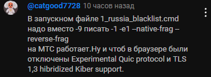
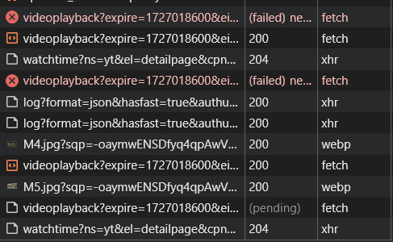
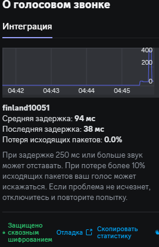

Тут обсуждаем темы, напрямую не связанные с работой программы и ее настройкой
Все правила форума работают - никаких оскорблений, перехода на личности или хейта по каким-либо признакам 
Например, есть у кого-нибудь желание проверить, что активаторы винды от Ратиборуса ломают windivert гудбайдипиая?
А как вообще к этому пришли?) Чем плох kms активатор и почему бы не использовать его?
Есть нюансы )
если новые активаторы, то не будут наверное. А вот если стоит какой-то условный MS-Office 2010/2013 - стоит с тех самых пор, как-то сам себя активирует, и все уже про это забыли и считают его частью вселенной - вот тогда могут быть сюрпризы  Причём реально будешь месяцами думать на что угодно, КРОМЕ активатора.
Причём реально будешь месяцами думать на что угодно, КРОМЕ активатора.
Ну, в любом случае всегда можно сходить сюда
HKEY_LOCAL_MACHINE\SYSTEM\CurrentControlSet\Services\WinDivert
и посмотреть, что там и как
Кстати, после запуска service_remove.cmd этот параметр сразу же исчезает и даже WinDivert64.sys удаляется без проблем. А вот у кого не удаляется - видимо как раз такая трабла
это да, но при ряде условий
- надо знать, что такое реестр и что такое драйвера
- надо знать что такое журнал событий и что в нём искать
- надо знать что такое windivert, где его искать, и причём тут он вообще
- надо чтобы припёрло
…у меня вот звёзды сошлись примерно через год, после возникновения “не работает!!!” у близких родственников. А они тупо включали два расширения сразу (антизапрет и рутрекерное) и ничего слушать не хотели. “Ты умный, но у тебя не работает ничего, а мы тупые, но всё сделали”.
…правда смотреть ютюб бесплатные VPN почему-то не помогают, а переход на 4G внезапно отключает от домашнего NAS. Сплошные сюрпризы 
ПОСЛЕ того, как знаешь - все несложно, в самом деле. Но вот до того - фиг угадаешь, куда смотреть.
Поэтому и предупредил, что неожиданность полнейшая 
А чо так можна было? 


По поводу обновления 0.2.3rc3. Мне кажется, что будет лучше добавить отдельный батник для создания второго экземпляра GoodbyeDPI, который будет работать только для YouTybe (то, что я яростно обсуждал вчера) вместо использования сразу двух чёрных списков с одним набором параметров. Только что попробовал использовать service_install_russia_blacklist_YOUTUBE.cmd, и YouTube работает, но все изображения в Твиттере, включая эмодзи, перестали отображаться.
А вообще было бы неплохо сделать так, что GDPI мог одновременно применять разные параметры для разных ситуаций. Например, один набор параметров для всего, что не входит в чёрные списки, а другой для всего, что входит в эти чёрные списки. Не зря же 2_any_country.cmd всё-таки существует? Явно же существуют ситуации, когда необходимо использовать GDPI для абсолютно всех подключений и с потенциально разными параметрами.
P.S. Кстати, по поводу опознания WinDivert анти-читами - разве нельзя просто его переименовать или перекомпилировать так, чтобы анти-чит не видел в нём сигнатуры чита?
А смысл?
- лишняя сущность
- которая торчит в системе
- которая создаёт сетевой интерфейс (через OVPN-новский драйвер или WinDivert)
Windows активируется раз и навсегда HWID-активатором, активация привязывается к железу. Активатор не оставляет следов в системе, параноики могут даже переустановить тут же Windows - активация сама подтянется системой штатно с серверов Microsoft.
MS Office активируется с помощью oHook. Одна крохотная библиотека, которую достаточно положить в правильное место и создать симлинк.
KMS-активатор это вчерашний день. Ну, разве что, если вам надо автоматически активировать большой парк машин. Но это уже что-то на корпоративном языке и такое пиратство я осуждаю: если софт используется в бизнесе, его следует легально приобрести, не говоря уж о том, что за пиратство в таком случае может и прилететь.
Дополнительный минус ратиборусовских поделий - проприетарность. Ну хочешь ты KMS-эмулятор, так возьми открытый vlmcsd и всё тот же OVPN-новский драйвер, потрать минут 15 на изучение и напиши батник, который будет всё это ставить в качестве службы.
А ещё можно по классике воспользоваться MSDN-ключом с активацией по телефону. Я около 10 лет так и активировал продукты Майкрософт, включая Windows 8. И ничего никогда не слетало.
Вот тут согласен. Сейчас переделал все на новую версию - ютуб работает, резка.аг не работает, даже не открывается. Никакие настройки не менял
Беру старый батник с 2-мя строчками - все летает и ютуб и резка
Upd: X тоже нормально не работает
сорри за жир. на answers.microsoft.com пишут “И более того. Сейчас к Вашему ПК имеют удаленный доступ злоумышленники, так любезно предоставившие “левый” KMS сервер для активации. Плюс к этому - пиратский Офис про плюс 2016, “лекарство” которого имеет тот же эффект.”
так конкретно это возможно?
KMS активацию можно без запуска левых .exe на ПК выполнить, с помощью slmgr /skms
Нет, они тебе конечно же ответят, что не купленные у них их же винда или офис, активированные их же способами но не их сервером - это классная вещь и так и должно быть.
Конечно же они скажут что там трояны, вирусы, а “злоумышленники” ходят на твой комп как к себе домой. Если хомяку такую телегу задвинуть - он ведь поверит, да еще и знакомым всем расскажет. А сами сливают с твоего компа непонятную инфу (диагностические данные типа, на кол-во своих серверов, исчисляемым несколькими десятками).
Именно поэтому некоторые считают, что если у них “лицензионная винда вшитая в биос” (с) - это все, это верх качества и там что-то не работать или работать не так не может априори.
Забывая, что работоспособность винды зависит не от лицензионности, а от прокладки между клавиатурой и стулом 
SLIC был актуален для Windows 7, затем Максимальную версию можно было проапгрейдить до Windows 8/Windows 10 Pro и получить лицензионный ключ для этой материнки.
И что?
Наверное, классный винигрет получится, тут работоспособности даже нормальная прокладка не поможет. Я вообще считаю, что пиратка активированная сликом, проапгрейженная до… вдруг ставшая “лицензионной” - это какая-то злая шутка от мелкомягких. Никогда с винды на винду апгрейдом не переходил - как-то боязно 
То, что это был ультимативный вариант в эпоху Windows 7, около 40 компов и ноутов так активировал.
Ставить нужно оригинальный образ MSDN.
Это не шутка, а валидное поведение OEM активации.
Можно получить ключ и полностью переустановить ОС, активировав этим лицензионным ключом.
Я правильно понимаю, что после обновления утилиты Гудбай теперь не нужно менять цифру -9 по умолчанию на другие? Или перебор настроек актуален?
Если все, что ван нужно работает - нет, не нужно.
А перебор настроек тут нужен всегда, имхо, в модсетах много лишнего, что скорости точно не добавляет. Но это уже для таких эстетов и перфекционистов типа меня ))
Удачи вам поставить оригинальный образ MSDN той же 11 на железо без TPM 2.0
Что значит получить? Его всем что ли раздавали, на почту слали или лично вручали, под аплодисменты и салют? )
Раздавали всем обладателям OEM лицензии, которая получалась добавлением региона SLIC (что делали продавцы ноутбуков и готовых сборок). В Windows 8 лавочку прикрыли из-за простоты получения лицензии, но она сохранялась при апгрейде.
Ясно, я этот аттракцион невиданной щедрости пропустил, потому что перешел с 7 на слике только на 8.1
Ключ к ней купил где-то за 10 баксов ) OEMный как раз, походу
Так это легко же делается? В интернете полно инструкций. Просто в процессе установки открываешь cmd, с него regedit, меняешь там что-то и готово. Делается и на официальном образе в т.ч.
Вроде можно и до начала установки как-то сделать.
А вообще, активаторы отжили своё. У меня вот винда зарегана реальным лицензионным ключом, который я, как законопослушный гражданин, своровал на каком-то форуме. Даже если ключ улетает в бан, лицензия никуда не пропадает.
В соседней теме (уже закрытой) говорили о проблеме удаления WinDivert64.sys ;
У меня при попытке удаления этого файла вылезает вот такое забавное сообщение:
Кто шарит - прога там втихаря не майнит?)
Сколько уже было обсуждений по этому поводу.
Это просто стоковый драйвер, который был взят с сайта которым ТАМ ДАЖЕ УКАЗАН!
Очевидно что автор драйвера просто решил пропиарить свой биткоин кошелек. Никак с GDPI это не связано.
Я советую использовать почти официальный скрипт без драйверов
Наверное, автору WinDivert такие же вопросы задают, но на английском 
К слову, после запуска service_remove.cmd от админа этот sys вообще без проблем удаляется
А если в этом cmd сменить
echo This script should be run with administrator privileges.
echo Right click - run as administrator.
echo Press any key if you're running it as administrator.
pause
на
if not "%1"=="am_admin" (powershell start -verb runas '%0' am_admin & exit /b)
то даже правой кнопкой по нему тыкать не придется, права он будет сам запрашивать при запуске.
@jestxfot Спасибо, я в курсе, даже где-то скачанные валяются
MAS хорошая тема, тоже использую. Наряду с софтом от Ratiborus. Я юзаю только LTSC редакции винды, HWID активация лучше всего.
Аналогично 
Это метаданные. Просто указан кошелек, куда автору можно задонатить.
Майнеры, во-первых, биток не майнят - это бесполезно с текущей сложностью, во-вторых, майнеры являются исполняемыми файлами, а не драйверами, в-третьих, программы-майнеры включают жертву в общий вычислительный кластер, никакие кошельки там в коде не фигурируют да и не могут, вирусы часто обфусцируют.
Сегодня перестал работать GoodBye DPI, вместе с ним помер и браузер Хром (ПОЛНОСТЬЮ), на Яндекс Браузере не могу даже сайт гугл открыть(только через впн), любые манипуляции с Bye DPI не помогают, видимо Большой Брат уже заблокировал гугл на моём провайдере
Не думаю, что подобных людей это волнует. Они увидели слово Bitcoin и все - триггер сработал, “забрало упало”. Объяснять что-то бесполезно.
Кстати, смотрел как-то давно ролик (еще когда началось замедление Ютуба) там человек приводил выборку из десятка самых известных интернет-СМИ и у всех один заголовок “Средства обхода замедления Ютуб воруют личные данные пользователей”, как под копирку.
Это называется “Не можешь победить - нап…и и запугай” )
Хотя да, если ты их качаешь из каких-то левых телеграммов непонятных людей, которые под шумок еще и впны продают, непонятных сайтов и т.п., а не гитхаба автора (причем не поддельного), то что там у тебя своруют и в какие дыры отымеют твой комп - вопрос сильно риторический.
Нет, это упал канал на гугл. У меня такое иногда бывает, по нескольку часов нет доступа к хухел-ресурсам, потом появляется.
Вот если доступа нет несколько дней, тогда нужно думать.
немного офтоп
меня беспокоит что последний год в вечернее время вся сеть начинает очень медленно работать, повышается задержка (например с 10ms до 100), понижается скорость скачивания и загрузки до всех ресурсов.
Но судя по тому, что на сервере в мск такого нет (на том же операторе), а в моем городе есть, то проблема либо локальная, либо на уровне магистральных каналов. Причем многие люди (как и оператор) говорят, что это нормально, хотя это нифига не нормально. Может ли это быть из за тспу, или просто оборудование у провайдера хреновое?
Ну раньше скорость падала, потому что все вечером ютубчик и всякие фильмы-сериалы лезли смотреть, а теперь то чего? Ютупчик не фурычит, сайты с фильмами-сериалами в большинстве там же, где и ютуб.
А установка TTL не помогает?
Я вот себе настроил в роутере MTU, в гудбае TTL - сижу счас стрим на ютубе в 2к смотрю спокойно. Канал 100 мегабит, если что.
Вечерами школьники набегают в дотку задротить, вот скорость и падает.
причем пинг повышается сразу на первом же выходном хопе во внешний интернет (ака шлюз по умолчанию), с 1ms до 100ms в среднем
ютубчик это не затрагивает, но вот сайты начинают грузиться с задержкой, в онлайн играх все плохо становится. примерно с 8-до10вечера почти каждый день
тест селектела падает вообще со 100мб до 15))
Ну понятно же что перегруз канала идет. Якобы, до начала блокировок такого не было?
это уже давно, примерно в течение года. Может и раньше, просто не замечал
это у всех так или как повезет?
Ну, у меня раньше тоже такое было. Я в онлайн-игры не играю, так что как у меня с ними сказать не могу. Стримы на ютубе, бывало, постоянно слетали на серый В ЭФИРЕ по вечерам. Сейчас, тьфу3раза, с этим проблем почти нет.
У меня вообще странные вещи творятся, даже вечером. Конфиг провайдера вообще не менялся, достаточно делить пакет надвое и отправлять задом наперед. Но вот работа софта абсолютно разная. Для начала уточню, если у большинства ютуб не грузит только видосы, у меня и сам сайт не грузит, изредка загружается минут по 10, а потом надпись об отсутствии интернета. Сначала gdpi работал нормально, потом временами ютуб начал зависать на открытии видосов, лечилось через f5. При этом скорость до ggc такая же, скрипты грузятся всё те же, в общем, по логам всё в порядке. Поставил zapret чисто ради интереса, такой же конфиг. Ютуб стал работать быстрее, чем до блокировки, имею ввиду отклик самого сайта. Видосы стали буферизироваться с большим размером прелоада. Обновил gdpi до rc2, ничего не поменялось, работает медленнее zapreta, хотя отклик сайта стал такой же. Проверил на нескольких компах на разных провайдерах, везде практически то же самое. Пул ggc в регионе у меня один, там штук 6 инстансов, и магистральный провайдер тоже один, по сути у всех каналы одинаковые. Вот и думай, то ли софт кривой, то ли железка фильтрует пакеты по разному.
Привет, относительно недавно (неделю назад), goodbyedpi работал прекрасно, работал и ютуб и другие заблокированные сайты. Пользовался 2_any_country_dnsredir. В итоге теперь сижу на 1_russia_blacklist_dnsredir с параметрами -e 2 -f 1 --reverse-frag. Ютуб работает, какие-то заблокированные сайты тоже, но не все как раньше. Некоторые сайты перестали работать и выскакивает ошибка 504. Если отдельно впн в браузере врубить, то они работают. Я поискал на форуме похожие проблемы с 504, но чето нету свежих((( Не знаете, может какое-то решение есть?
504 - Gateway Timeout . That’s an error.
We did not receive a timely response from the upstream server. That’s all we know.
Обновите программу до последней версии и попробуйте добавить к вашим ключам
--fake-gen 5 --fake-from-hex 160301FFFF01FFFFFF0303594F5552204144564552544953454D454E542048455245202D202431302F6D6F000000000009000000050003000000
Добавил, так правильно?
start “” goodbyedpi.exe -e 2 -f 1 --reverse-frag --fake-gen 5 --fake-from-hex 160301FFFF01FFFFFF0303594F5552204144564552544953454D454E542048455245202D202431302F6D6F000000000009000000050003000000 --dns-addr 77.88.8.8 --dns-port 1253 --dnsv6-addr 2a02:6b8::feed:0ff --dnsv6-port 1253 --blacklist …\russia-blacklist.txt --blacklist …\russia-youtube.txt
Не помогло, всё осталось также (версия goodbyedpi-0.2.3rc3-2, сегодня последнею скачал)
А если так?
start "" goodbyedpi.exe -e 2 -f 1 --reverse-frag --wrong-seq --fake-gen 5 --fake-from-hex 160301FFFF01FFFFFF0303594F5552204144564552544953454D454E542048455245202D202431302F6D6F000000000009000000050003000000 --dns-addr 77.88.8.8 --dns-port 1253 --dnsv6-addr 2a02:6b8::feed:0ff --dnsv6-port 1253 --blacklist ..\russia-blacklist.txt --blacklist ..\russia-youtube.txt
Аналогично, ничего не изменилось
А что за сайт то не открывается, если не секрет?
Через DLL теоретически тоже можно вшить вирусы, так что…
Для ютуба оставляйте gdpi, для остальных сайтов юзайте это.
Ну или подбирайте конфиги под каждый сайт.
Gdpi, zapret и другие - не ультимативный софт, он предназначен в первую очередь для решения конкретной проблемы с конкретным ресурсом.
Можно. Но это сложнее в реализации, поэтому встречается реже. Просто нефиг качать библы с подозрительных ресурсов 
Вы останавливали WinDivert и перезапускали браузер перед использованием нового конфига?
Нефиг думать что майнер будет вот так легко выдаваться в описании.
Хочешь что-то спрятать - делай это на виду. Я встречал вирусы, где в метаданных так и было написано, что это вирус 
Это все равно, что назвать файл я_майнер_не_запускай_меня.exe 
сегодня вечером кстати часть сайтов перестал плагин открывать, например твиттер или инсту (хоть я ими и не пользуюсь, но все равно неприятно).причем твиттер nslookup от cf вообще ничего не получает
Решение manwithbox с использованием расширения Антизапрета толи помогает, толи нет, для сайта f95zone.to. Что-то подключалось, а щас после очередного перезагрузки браузера, уже тоже не робит, да и ntc.party перестал запускаться с антизапретом, точнее просто крутит. А вот rule34video.com так и не заработал, с антизапретом бесконечная перезагрузка.
Перезагрузка браузера и применение конфигов тоже попробовал, результат тот же. Я запускал через права администратора service_remove это я так понимаю остановка WinDivert. Запускал каждый раз после нового конфига.
Скорее всего они забанили российские IP у меня они тоже не работают
лучший способ активации имхо.
Да, видимо по проксям прошелся бан, пока что это решение не работает. Ждем, когда пофиксят.
Зато обнаружил другую интересную штуку, через сервера doh opendns открываются все трекеры, которыми я пользуюсь - рутракер. ннм. Походу на очень старые блеклисты юзают поизонинг. Или как-то выборочно, я хз. Но точно знаю, что ни гугловский, ни яндексовский днс-ы открывать эти сайты не будут.
Эх, мало того, что в стране скоро ведут налог на воздух и блочат полезные ресурсы типо ютуба, так еще русские ip блокируют те, кому вообще должно быть пофигу. Спасибо за попытку помочь
В проекте используется прокси не только российского происхождения. Уже было такое, авторы проекта просто меняют адреса и всё снова работает.
Дабы не быть голословным, зашел счас через юнайтед стейтс оф таки америка - сайты открылись как миленькие. Оба на TLS 1.3 так что проблем с ними у гудбая вообще быть не должно.
Так что тут вам только впн (или расширение с таким функционалом) поможет расслабиться 
по правде говоря даже сюда перестало пускать через плагин
пишет too many requests
f95zone.to открывается без всяких блокировок. rule34video.com не хочет. DoH OpenDNS.
Я думаю нужно потыкать всякие закрытые сайты, может быть некоторым будет достаточно просто включить эту функцию в бровзере.
Реально что-то сегодня сдохло 
Уже часов наверное 5 ютуб летает с такой скоростью, будто я прямо на ggc сижу. До блокировок я таких скоростей не видел. Пинг упал с 20+ до 15. Мистика какая-то.
В глаз бури попали? 
Ага. Только вот как долго эта буря продержится, а то мне понравилось.
дополню , что плагин перебивает запрет или gdpi
пришлось его отключить и добавить сайт ntc.party в запрет
открывается с --wf-tcp=443 --dpi-desync=disorder2
Да, так и есть. Сейчас сижу с телефона на byedpi с параметром --disorder, пушка.
Вот вот. Приходят товарищи такие туда, где обсуждают GDPI и ноют “че умничаете, поставьте плагин для хрома да и всйо!”. Какой, найух, плагин, траффик ютуба любой такой плагин положит до смерти, это тебе не сайтик легонький. Но нет, не вкуривают, потому что не понимают, но свои 5 копеек вставить очень хочется )
Да я знаю, что проксируется не все, но так может быть не у всех. Хз что он за расширение имеет в виду.
на моем провайдере (кроме вечера) пинг до серверов googlevideo ~ 1ms, можно сказать прямо на них сижу. при том, что у меня небольшой город
Были же вроде какие-то расширения типа Ютуб буст или как-то так называлось. Я в это дерьмо не лезу, не знаю. Но проксировать через браузер видеопоток это очень здравая мысль 
Скорее всего ggc у админа провайдера под столом лежит. Или он буквально на нем сидит  Вспомнил, как я сам на серваке сидел, ибо стульев не было в серверной. А старые делловские серваки-тауэр из листовой стали в 3 мм, выдерживали около 200 кг.
Вспомнил, как я сам на серваке сидел, ибо стульев не было в серверной. А старые делловские серваки-тауэр из листовой стали в 3 мм, выдерживали около 200 кг.
Типа FastProxy, вторая серия?  Хотя обычному юзеру так проще, но какую цену он за это заплатит… скоростью как минимум, постоянным “извините, мы упали” как максимум
Хотя обычному юзеру так проще, но какую цену он за это заплатит… скоростью как минимум, постоянным “извините, мы упали” как максимум
кстати есть еще такая штука
GitHub - SadeghHayeri/GreenTunnel: GreenTunnel is an anti-censorship utility designed to bypass the DPI system that is put in place by various ISPs to block access to certain websites. (помимо gdpi и запрет)
но я не знаю как она работает, и даже не помню с какого сайта появилась у меня в закладках
@manwithbox Слушай, а https://gateway.pinata.cloud/ipfs/QmNNEJkTAvtppJ5nV3TTywHYoJtzhAydqWLVaaAs4stAyy/proxy-ssl.js перестал работать? Я добавил ссылку через диспетчер и сегодня перестал работать
Поэтому прокси не вариант. Это очень старая технология, времён зарождения вебдваноль. А сейчас из нее пытаются выдавить то, для чего она не была создана.
Все же нужно стремится к универсальному инструменту, желательно автономному. И простейшему в настройке.
Это редирект с https://p.thenewone.lol:8443/proxy.pac, но сегодня вечером отвалились сервера, поэтому не работает.
Оно там давно не обновлялось. Пока что 3 софта, которые идут в ногу, это gdpi, zapret и byedpi. Последний, кстати, это сокс-сервер, у меня что-то не получилось его раздуплить на Винде, зато на Ведроиде аж в припрыжку.
Не подскажите, у меня есть телек Samsung UE43TU7100U 2020 PLS с платформой Smart TV -Tizen, на нем можно как то заставить работать Ютуб?
А не лучше Power Tunnel Android - этот хотя бы локальный VPN, настроек много, список приложений для обработки, возможность прописать DoH, кое-какие методы из гудбая/запрета, белый список и т.п.
Говорят, что да )
Byedpi4android тоже как ВПН, только в основе сокс. Пока что это самое быстрое и простое, что я под ведро нашел. В проге ничего нет, никаких настроек, вписываешь параметры cli с мануала и запускаешь.
А повертунель модульный, медленный, не обновлялся давно. И похоже на джаве написанный.
Вроде как на ней. И много там прописывать? Ненавижу писать на телефоне, в PT когда DoH вписывал - весь изматерился
Тут у меня все просто - работает, ютуб показывает да и пофиг. Я все равно его смотрю на телефоне раз в 5-тилетку
Собственно вот и вся прога. Ничего лишнего. DNS вписал OpenDNS.
Так это из-за вот этого.
Интересно, интересно.
Там в комментах вой подняли, что будут блокировать doh. Ха-ха-ха-ха. Для этого придется сломать интернет.
Хммм… прокси заработало. Интересно, интересно. Адреса прокси не закрыты, пакеты отдает верно.
А у кого-нибудь такое было, что службы GoodbyeDPI сами отключаются? Я включил компьютер, а заблокированные сайты не открываются. Захожу в службы - включён только GoodbyeDPI для YouTube, хотя автозапуск включён для обоих. Включаю обычный GoodbyeDPI, спустя какое-то время отключаются обе службы. Из-за чего такое может происходить?
Самая простая причина - переполнение буфера памяти. Может быть из-за ошибок. Жаль, но gdpi не логирует свою деятельность, можно только гадать. Спроси у разработчика, может там баг какой.
Если сам GDPI работает, но сайт или отдельные его элементы прогружаются очень долго, проблема в конфиге или в попытках подключиться к заблоченным кешсеверам?
Иногда выскакивает сообщение “отсутствует подключение к интернету” лечится просто обновлением страницы.
- при особом желании можно такое ручками активировать
Это значит, что пакеты теряются. То бишь или конфиг неверный, или в блеклисте не все домены указаны. Или некоторые домены требуют другого алгоритма обхода.
Это и есть “ручками”. То же самое, только писать не приходится, уже все готово. MAS это просто автоматизированный батник.
А как же NekoBox?
Так неко это клиент для проксей. А тут не клиент.
Пришел сегодня на работу, а ютуба нету ( Оказалось, Дом.ру начал блочить QUIC. Вот и приобщайся к новым технологиям с такими вот уродами 
Кстати, а кто-нибудь в курсе, как работает ЮБуст? Может кто пользовался… Я просто этой хренью марать Хром не хочу, а под другие его и нет.
Нормально работает на опере и яндексе. Хрома у меня тоже нет. Только может конфликтовать с расширениями, контролирующими прокси. Под FF есть его аналог Youtube Defender.
Я вот счас вообще ничего не понял 
Поставил в Эдж из магаза гугла - ютуб работает, стрим в 4к смотрел, все норм. Выключил ползунок - ютуб работает. Отключил вообще расширение нафиг - ютуб работает. Думал, может от службы GDPI что осталось, остановил WinDivert из комстроки - ютуб работает. Запускаю мозиллу, открываю ютуб - работает. Это что за аттракцион невиданной щедрости и куда эта хрень мне прописалась?
Это вирус, не иначе, страшный и ужасный)) А если серьезно, наверно, пров что-то крутит у себя. У меня так с недельку ютуб поработал, потом вообще все отвалилось, даже телега, потом вернулось как было. Теперь все как у всех)
Это ночной подарок от провайдера, видимо. На телефоне через вай-фай ютуб тоже летает
видос о функциях dpi
Подскажите, сайты блоченые раньше грузились с скриптом https://p.thenewone.lol:8443/proxy.pac , теперь перестали. что можно сделать?
Вы саавсем не по теме, но это блокировки АЗ.
У меня сейчас как будто замедлили весь интернет. Этот сайт, Reddit, и куча других сайтов не грузится без ВПН. Точнее как бы грузятся, но типа не до конца, или очень медленно. Но вот ВК, Ютуб, Яндекс, вроде нормально работают. Это какой-то новый тест блокировок и замедлений?
Билайн?
да
У них проблемы со связанностью на запад. Похоже на аварию. Может быть какой-то DDoS. Не блокировки.
+1 билайн as8402 тоже самое
Лагает только TCP, больше похоже на блокировки. Все что на udp вроде работает нормально
Нет, не блокировки это. ICMP так же теряется. Плюс к этому задержки > 400 мс там где должно быть несколько десятков. Больше похоже на перегрузку из-за чего-то.
Да, летает. Отлично.
Вот новый видос смотрю. Прямоугольник Брина называется.
Пару-тройку минут назад начало отпускать и сейчас стало значительно лучше.
Моя не понимать. У меня все летает, еще один знакомый на МТС говорит тоже летает. У нас одновременно сломались коробки ТСПУ что ли? ))
del
Скорее конфиги слетели.
У меня на работе с утра disorder на этот сайт перестал работать, буду тестировать другие режимы.
kds вас щто валдикас нанял на зарплату или щто откуда такайя активнось 
Какая - такая?
мощьная)
Интересно, а почему часть сайтов банится через DPI, а другие тупо по ip (из-за чего никакие Gdpi не работают)?
Ну с ютубом понятно, они пока замедляют, а не блокируют. А почему многие другие сайты по ip не блочат. Ведь банить по ip гораздо проще и требует меньше ресурсов.
Потому что на одной айпи много чего расположено может быть. На тех же гугловских серверах, откуда ютуб видео тянет, могут висеть всякие штуки типа гугл диска, гугл документов, гугл карт, gmail, плей маркет андроидовский и хз что ещё.
Тут проблема возникла, может кто знает, как решить.
Имеется Mozilla Firefox ESR 115.15.0esr (64-разрядный), расширения по лайту - uBlock и 2 фингерпринт дефендера - Fonts и Canvas
В чем, собственно, проблема - бесконечная капча на вирустотале. В хроме стоит те же самые расширения и нет подобной фигни.
Может кто в курсе, какой параметр подкрутить в about:config чтобы избавиться?
Гугл рыл - один мусор нарыл, который не помог (
Есть вот такая штука, работает с переменным успехом. Она типа автоматом должна со временем начать аутентификацию от CF проходить. У меня она вроде иногда работает, иногда нет. Я хз.
Спасибо, но не хотелось бы на каждый пук каждого сайта ставить свое расширение. Почему-то на всех остальных сайтах такая же капча проходится без проблем, только вирустотал выеб…
P.S. А теперь у них там на всех расширениях написано - мы не контролируем его безопасность, нам похер ) ?
Здравствуйте!
Объясните, пожалуйста, новичку, куда отправлять найденные проблемы в работе GDPI (конфликты с различными сайтами и службами)?
Без пол-литра в GitHub’е не разберёшься, а я пить бросил.
Наверное, никуда. Issues автор закрыл. А вы скорее всего просто не умеете пользоваться программой, вот она вам и ломает “сайты и сервисы”.
Как вариант - создайте новую тему здесь. Указав ошибку, предоставив скриншот окна запущенной программы, сообщив какой CMD вы запускаете и не меняли ли вы его. Ну и примеры сломанных сайтов покажите.
как задонатить автору за его тяжелые труды?
Здравствуйте, никак не могу найти, где можно поддержать автора. Есть такая возможность? @KDS
Он раз в год открывает сбор донатов для Антизапрета. Но неизвестео есть ли смысл теперь поддерживать Антизапрет. Лучше создать тему в разделе Фидбэк и там спросить самого автора.
У него и другие проекты есть. Например устройства для исследовния блокировок.
Господа, никак не могу удалить goodbyedpi service_remove и через командную строку от администратора пытался, ничего не помогает
А я правильно понимаю, что Антизапрет перестал работать по тем же причинам, что и GoodbyeDPI? Или там какие-то свои причины? Что-то можно сделать чтобы он заработал или в данный момент нет?
Может кто-то объяснить, какие опции должны быть включены в ByeDPI for Android, чтобы приложение Youtube через него заработало с кабельными провайдерами? Из коробки не работало даже две недели назад, перебором мне найти рабочий вариант не удалось, а уж сейчас, когда РКН целенаправленно начал давить именно GoodbyeDPI, я вообще не понимаю, где искать нужные параметры и можно ли достичь успеха в принципе.
Если причины “те же” (а они не могут быть так как технологии разные), то значит цель сам Валдикс уже и конкретно его проекты. Скоро будет как у клоувинди (у того тоже анимашное имя было)
ня~
У меня одного, с некоторых пор, в истории ютуба половина отсмотренных видео не фиксируется? Думаю врядли тут gdpi как-то может быть причастен?
Парни новую тему не охото создавать. Вопрос по блокчеку @ValdikSS его планируют оживлять? И вообще можно пару приемов от специалистов как вы находите рабочие конфиги для сайтов. Знаю есть curl но он же не пишет ошибку. В общем интересно знать приемы.
Можно блокчеком от zapret, он рабочий Подбор рабочего конфига для GGC ютуба через blockcheck Вместо ggc любой нужный сайт подставить
В курсе. Но хотелось бы именно чтоб он подбирал флаги в gdpi или типо писал тип блокировки чтоб можно было по мануалу состряпать рабочий конфиг например как будет выглядеть split2 или disorder2 в gdpi как это понять?
Просто по аналогии с zapret можно. split - это фрагментация (e1), disorder - обратная фрагментация (–reverse-frag), fake - тоже понятно. ttl -аналогично. 1 в 1 может и не подберешь, но направление , в котором ковырять - вполне)
Не согласен с тем, что везде надо жать Enter. Те же *.googlevideo.com Зачем на них проверять TLS 1.2 и не проверять TLS 1.3? Только зря потраченное время. Плюс сейчас многие GGC перешли на QUIC который по умолчанию блокчеком не проверяется.
Точно? У меня он не работал, пока я не включил network.http.http3.version_negotiation.enabled
А указанный вами ключ и так стоит в true из коробки
-e 2 и -e 2 --reverse-frag соответственно
Можете поправить, как считаете нужным)
Когда спросят:
check https tls 1.3 (default : N) (Y/N) ? Y
нажать Y и enter
Я не могу поправить - у меня кнопка редактирования исчезла.
quic проверяется кстати
check http3 QUIC (default : Y) (Y/N) ?
Там еще и ipv6 можно проверить. Так же неясно, нужно ли отключать проверку сертификатов для curl?
do not verify server certificate (default : N) (Y/N) ?
bolvan почему-то ничего не ответил по поводу ошибок в гайде
Это наверно в последних версиях. Раньше не был в true. У меня на FF как не работал http3 так и не работает, поэтому ничего проверить не могу, верю на слово
Вот здесь по подробнее как вы это поняли? Как сопоставили стратегии
Это для тех случаев, когда провайдер левый сертификат подсовывает. На билайне подобное видел. Возможно другие мобильные операторы тоже так делают. На домашних провайдерах, пока что, такое редко практикуется. Ну мне так кажется 
Кроме того, обычно левый сертификат идет в паре с редиректом на заглушку, а редирект блокчек ловит. Так что смысла в проверке сертификата особо нет?
Поправил бы, если бы имел такую возможность в разделе запрета ) Но увы
У меня 115.15.0 ESR
Я там, правда, еще включал network.dns.http3_echconfig.enabled и security.tls.ech.grease_http3 но влияет ли это как-то на сам QUIC или только на ECH - фиг его знает.
По поводу сертификатов сам не уверен - по идее можно и без них, если нужно проверить только соединение, но многие DPI режут коннект на этапе client/server hello так что, видимо, нужно
На странице запрета на гитхабе есть подробный мануал, где стратегии описаны и что они делают тоже написано. Я просто сопоставил с описанием опций GDPI.
убедитесь что последняя версия (1.2.0)
Mode VPN
DNS 8.8.8.8
UI editor - >
Если revanced юзер, лучше скачать revanced extended и отключить QUIC в настройках
- Качаешь zapret на кудахтер, находишь там папку blockcheck, запускаешь скрипт, водишь адрес из запроса videoplayback
- Смотришь результат и сопоставляешь его по факу byedpi
- В ByeDPIAndroid в настройках CLI вписываешь
- Профит!
Приведенные выше настройки слишком избыточны, генерируется куча ненужного мусора, что замедляет работу ютуба. Например, тот же SNI, в большинстве случаев он нафиг не нужон, этот ваш сервернейм 
Ну и хухелднс тоже не стоит использовать, РКН вполне возможно скоро начнут его поизонить. Лучше использовать OpenDNS или любые другие открытые.
У меня работает даже на 1ой версии bdpi c disorder 3 и split tls record at sni, все остальное по умолчанию
Надеюсь, bolvan поможет Подбор рабочего конфига для GGC ютуба через blockcheck - #22 by TesterTi
Мне ничего не помогает, даже советы от мозиллы на их форуме. Неважно , какая версия, на 10-ке на последнем FF та же картина на моем прове. При этом на всех хромоногих quic прекрасно работает. Такая вот магия)
А это не благодаря мобильному трафику?
Всмысле благодаря мобильному трафику? На мобильных операторах же ютуб тоже заблочен.
Возможно. Хотя вроде недавно писали, что не у всех. Если заблочен, выходит, половина населения освоила средства обхода? Мощно!)
щас заметил что на телефоне ютубчик заработал (мегафон мск)
Половина населения юбустом пользуется. Судя по их недавним отчетам, общая скорость через сервера составила выше 150 гигабит - вот это мощно.
ЗЫ. В пике у них выше 175. Они еще и прем ввели, а скоро будут приложухи для ведроид и смарт.
А днищеброды как мы будут продолжать регулярно тыкать блокчек в поисках лазеек. 
Интересно, откуда у них такие мощности? И кто платит за банкет?)
Скорее всего да. Под 99% видосов по антидипиай на ютубе, парочка таких вылезает - “юбуст и усе работает!”. 
Продажа сервиса “ВПН Наружу”? Что бы это не значило…
Но ведь правда же работает!) Только в чем подвох?
Скорее всего в тоннеле с балансировкой на серваки в РФ на котором стоит запрет или GDPI. Когда стратегия падает, они говорят “Нас ддосят!!!”, а сами накручивают рабочую )))
Причем комп у Первого) Чтоб все под контролем было)
Что-то другое продают. Это бизнес. Обычно такие сервисы создают люди, работающие либо в этой же сфере, либо в других крупных сетевых бизнесах. Те, кто понимает как продавать актуальный товар в нужное время. По сути, “продавцы лопат”, только с отличием в том, что “есть что копать”.
Ладно надо будет покурить этот мануал ещё раз. Я про него знал но полностью не осилил.
 YouTube заработал в России, сообщают пользователи.
YouTube заработал в России, сообщают пользователи.
К сервису снова можно получить доступ без VPN. Специалисты связывают это с утренней жалобой провайдеров в правительство.
Ростелеком, как всегда, самый продвинутый провайдер - у меня уже 4 дня ютуб работает в полном объеме по квику безо всяких обходилок/впнов ) На телефоне через вай-фай тоже
ну вот, а я только привык к запрету, подбирать стратегии, читать форумы, познавать команды в ssh))
видимо теперь ждём закупки нового оборудования и закона )
Ну да, на метовско-масковской шляпе и дискорде таких объемов обсуждений не нагенеришь
У меня тоже заработало напрямую, кроме провайдерских GGC, которые отвечают Content-Length: 0
По итогу видео качает с европейских GGC.
Они в ФАС жаловались, что их пинают пользователи и пинает РКН, а мобильные операторы зарабатывают деньги.
Я бы рано не радовался, все равно тенденцию на блокировку Ютуба официально никто не отменил.
да
Ничего не работает без сторонней помощи, ТТК. Даже главная страница не прогружается целиком.
У меня тоже заработало без обхода.
Впрочем, ростелекомовский rr2---sn-gvnuxaxjvh-o8ge.googlevideo.com всё еще повисает при курлении.
Мне кажется, они вообще не планировали блокировать ютуб навсегда. Если бы хотели, то ничто не мешало им объявить youtube экстремистской площадкой, как это было с инстаграм/фэйсбук и заблокировать по закону сразу. Думаете сложно найти там какой нибудь ролик как причину? Думаю изначально план был раскрутить помойные площадки, собрать метрики, реакции и тд.
А тут что пишет? QUIC в браузере включен?
Congratulations! You’re connected over QUIC.
Прям как в анекдоте: забор снесли - побег отменяется)) Без забора неинтересно
У вас же ТТК, если мне память не изменяет? Видимо, до вас разблокировки не добрались…
Ребята, у меня на Урале Ютуб не открывается без обходных путей. Это что-то у вас там локальное в Европейской части страны. Мой городской провайдер подключен к магистрали Ростелекома. Поэтому настройки против Ростелекома отлично работают.
Может после жалобы провайдеров решили временно сделать послабление или тестируют и подкручивают торможение.
Надо отслеживать ТГ Хинштейна - он обычно начинает или комментирует такие запреты.
Не всем счастье подвалило. Живу как раз в европейской части. На мегафоне даже страница ютуба пока не открывается.
Ага, ТТК. Судя по всему у нас вообще блокировки какие-то ультра-жёсткие. Рвение провайдера выслужиться перед РКН, или кем там ещё, какое-то немыслимое.
А что такое ТТК? ТрансТелеКом, что ли? Это ж магистрал вроде, что ему выслуживаться, не перекроют же, оставив всех без инета 
Возможно и блокировка, а возможно у вас какое-то из условий не соблюдено, чтобы все нормально работало. Например полное исключение из GDPI блэклиста ютуба, остановка виндиверта, прописывание в браузере DoH от коммс, включение ECH для HTTP3 (если Мозилла)… Хрен его знает.
ТрансТелеКом, да. А что такое ECH для HTTP3? В DoH выставлен NextDNS. GDPI полностью выключен.
network.dns.echconfig.enabled - True
network.dns.http3_echconfig.enabled - True
security.tls.ech.grease_http3 - True
network.http.http3.version_negotiation.enabled - True
DoH Comms - https://dns.comss.one/dns-query
about:networking#dns - Очистить кэш DNS
ТТК тоже. Такие же приколы. Самое забавное, что ютуб со скрипом на Edge (браузере) открывается
Отбой, блок вернулся.
Ничего не помогает…
А если блоклист ютуба вернуть, но исключить оттуда только гуглвидео? Запустить GDPI и проверить
Тогда интерфейс сайта грузится, включая все аватары и т.д., но видео не работают - бесконечный кружок в центре.
Видимо квика на GGC ТТК нет в принципе или он блочится конкретно по домену. Я тут предлагал способ перенаправить через hosts все ваши rr******.googlevideo.com на IP GGC Ростелекома с квиком, но человек так по результату и не отписался. Хотя, если сертификат TLS выдан именно на длинное имя сервака, то это и не прокатит.
Тут надо курлом ковырять сервак, а я в нем не особый спец (
Это вы мне про hosts вчера и писали. Никаких изменений не было, увы. Мне помог Запрет и настройки от Ori, но и там не всё гладко, как оказалось. HTTP/3 проходит всего на первых 2-3 видео, а дальше всё снова идёт через HTTP/1.1, QUIC будто бы отрубается через какое-то время насовсем и не возвращается до перезапуска браузера и Запрета.
Извиняюсь тогда. Уже реально путаюсь, что и кому писал, вас много а я один 

И самое обидное, что я сам свои решения проверить не могу, по описанной выше причине - у меня никаких блоков нет
Хорошая шутка. Оценил. 
Очень странно. Я потестировал, у меня такого не происходит.
Попробуй в конфиге там где dpi-desync-repeats=2 увеличить цифру. Можешь сразу 11 поставить и посмотреть как будет.
Ещё, можешь потестить вот такой пейлоад для quic:
quic_test_00.bin (144 байта)
Он меньше размером, возможно как-то скажется на производительности интересным образом.
UPD: А с quic_test_00.bin вообще всё идёт через http/1.1. Я закинул его в папку с preset_russia и в самом файле написал --dpi-desync-fake-quic=“quic_test_00.bin”. Вроде правильно?
а дом интернет мгтс нет
Такое впечатление, что по какому протоколу generate_204 отвечает, тот и начинает работать. У меня эти запросы вообще блочатся uBlock-ом, хз правда из какого списка
Очень странно. Один и тот же сервер возвращает h/3, а потом начинает возвращать h/1.1. Можете попробовать поменять фильтр для udp и потестить, вот так, например.
--filter-udp=443 --hostlist="googlevideo.txt" --dpi-desync=fake,ipfrag2 --dpi-desync-ipfrag-pos-udp=24 --dpi-desync-repeats=11 --dpi-desync-fake-quic="quic_ietf_google_com.bin" --new ^
YouTube на Ростелекоме в МСК то работает без сторонней помощи то нет, как повезет. С GDPI только могут некоторые видео грузится перед запуском 5-10 сек, да аватарки с превью пропадать, жить можно, как то.
Ищи стратегию zapret-ом, потом переноси в gdpi. Если качели со скоростью загрузки, значит это неправильно настроенный gdpi.
Хм, а так запрет сразу же вылетает, без каких-либо ошибок, просто не запускается. Настройки вот такие получаются:
start "Zapret - Multi" /min "winws.exe" --wf-tcp=443,80 --wf-udp=443 ^
--filter-udp=443 --hostlist="googlevideo.txt" --dpi-desync=fake,ipfrag2 --dpi-desync-ipfrag-pos-udp=24 --dpi-desync-repeats=11 --dpi-desync-fake-quic="quic_ietf_google_com.bin" --new ^
--filter-tcp=443 --hostlist="googlevideo.txt" --dpi-desync=split2 --dpi-desync-split-seqovl=1 --new ^
--filter-udp=443 --hostlist="my_hostlist.txt" --dpi-desync=fake --dpi-desync-repeats=11 --new ^
--filter-tcp=443,80 --hostlist-auto="my_hostlist.txt" --dpi-desync=fake,disorder2 --dpi-desync-fooling=badseq
До запуска zapret нужно удалить gdpi через service_remove.cmd от админа
А у меня GDPI и не установлен как служба. Ну на всякий случай нажал на service_remove, ничего не изменилось.
А система какая? Не x32 или win7 ?
Win 7. WinDivert более старой версии используется, который я скопировал из GDPI. “Родной” WinDivert от Запрет не работает… С другими настройками Запрет нормально запускается даже со старыми WD.
Тогда понятно. На 7-ке действительно не работают родные файлы от zapret-а. А с каким конфигом не стартует? У меня тоже 7-ка давайте у себя проверю
Чуваки что делать если пропали превью и картинки на ютуб. Браузер Opera GX. В хроме картинки есть. Что за фигня?
Вот с такими не работает:
start "Zapret - Multi" /min "winws.exe" --wf-tcp=443,80 --wf-udp=443 ^
--filter-udp=443 --hostlist="googlevideo.txt" --dpi-desync=fake,ipfrag2 --dpi-desync-ipfrag-pos-udp=24 --dpi-desync-repeats=11 --dpi-desync-fake-quic="quic_ietf_google_com.bin" --new ^
--filter-tcp=443 --hostlist="googlevideo.txt" --dpi-desync=split2 --dpi-desync-split-seqovl=1 --new ^
--filter-udp=443 --hostlist="my_hostlist.txt" --dpi-desync=fake --dpi-desync-repeats=11 --new ^
--filter-tcp=443,80 --hostlist-auto="my_hostlist.txt" --dpi-desync=fake,disorder2 --dpi-desync-fooling=badseq
Не нужно. Достаточно прописать sc stop goodbyedpi и sc stop windivert. Потом запускать winws. Для установки службы zapret тоже не нужно ничего удалять, достаточно предварительно прописать sc config goodbyedpi start=DEMAND, перед этим остановив службу.
Ну можно и так. service_remove.cmd делает примерно тоже самое. По идее, и перед запуском gdpi можно эти команды вписать. Мне лично привычнее через service_remove.cmd, кому как.
Проверь в консоли, скорее всего отлетают ytimg.com и ggpht.com. Их может убивать сама опера, какими-нибудь кешировалками или встроенными ускорялками, в опере вроде есть этот мусор. Я оперой не пользуюсь с версии 9.5 
Просто сервис ремув вообще сносит сервис. Для винды это то же самое, как постоянно устанавливать/удалять какой-нибудь софт. Мусор в реестре логируется.
Во-первых удали 80 порт: такой синтаксис, как оказалось не работает. В своем оригинальном посте я тоже обновил.
Во-вторых, у тебя, наверное, файл с фейком по-другому называется. Я же это из своего конфига брал.
Не надо копипастить втупую, право слово 
И правда, у меня файл называется quic_ietf_google_com_2.bin, не заметил отсутствие двойки. Сейчас всё запускается, пойду тестить.
UPD: по-прежнему возвращается к h/1.1 через какое-то время после h/3.
А у меня так и не запустилось
start "zapret: http,https,quic" /min "%~dp0winws.exe" --wf-tcp=443 --wf-udp=443 --filter-udp=443 --hostlist="list-youtube.txt" --dpi-desync=fake,ipfrag2 --dpi-desync-ipfrag-pos-udp=24 --dpi-desync-repeats=11 --dpi-desync-fake-quic="quic_initial_google_com.bin" --new --filter-tcp=443 --hostlist="list-youtube.txt" --dpi-desync=split2 --dpi-desync-split-seqovl=1 --new --filter-udp=443 --hostlist="list-youtube.txt" --dpi-desync=fake --dpi-desync-repeats=11 --new --filter-tcp=443 --hostlist-auto="list-youtube.txt" --dpi-desync=fake,disorder2 --dpi-desync-fooling=badseq
Ну хз. Потестите на лисе, вместо хрома. Не знаю с чем это связано.
@TesterTi Вы зачем list-youtube во все 4 фильтра засунули? Там первые два это для ютуба, а следующие 2 для остального.
cd /d "%~dp0"
start "zapret: http,https,quic" /min "winws.exe" --wf-tcp=443 --wf-udp=443 ^
--filter-udp=443 --hostlist="list-youtube.txt" --dpi-desync=fake --dpi-desync-repeats=2 --dpi-desync-fake-quic="quic_initial_google_com.bin" --new ^
--filter-tcp=443 --hostlist="list-youtube.txt" --dpi-desync=split2 --dpi-desync-split-seqovl=1 --new ^
--filter-udp=443 --dpi-desync=fake --dpi-desync-repeats=11 --new ^
--filter-tcp=443 --dpi-desync=fake,disorder2 --dpi-desync-fooling=badseq
А зачем эта монструозная конструкция? Тут одно противоречит другому.
Запусти blockcheck посмотри стратегии. Что-то слишком комплексно, там что, инет у тебя раздается с серверов Пентагона? 
А можно узнать зачем эти значки в конце строк? Какой-то линуксовый перенос строки?
Это винда. Да, перенос строки, чтобы читабельно было, а не сплошным потоком сознания.
В bat файле их тоже прописывать?
Так, кстати, действительно нагляднее выглядит
Ну это и есть текст из бат-файла. Пробел не забудьте, либо перед ^, либо в начале новой строки. А то сляпается вместе.
Выяснилось что на картинки влиял фаерволл доктора веба. После отключения сразу прогружаются превью.
Перечитайте плс диалог. username1 написал, что у него на 7-ке не запускается запрет, потом, что закрывается батник без сообщений об ошибке.
Да, у меня тоже не стартовал его конфиг. О чем и было сообщение.
Чтобы проверить, нет ли ошибок, из-за которых батник молча закрывается. Рабочая ли сама стратегия в данном случае было не важно.
Понятия не имею. Это точно вопросы ко мне? Конечно, понимаю, что инициатива наказуема и все такое)
Перечитал диалог. То что виндиверт запрета на вин7 не работает, а гудбаевский работает - это хорошая находка. Приму к сведению. 
Есть лишнее, не замарачивался тестить, всё быстро работает и так
Но а если быстрота миллисекундая важна, то тогда уж лучше юзать GoogleDNS или CloudflareDNS, они быстрее будут чем другие не большие типа NextDNS или OpenDNS
А про запрет ДНС не думаю что скоро, даже ютуб не забанили, просто экспериментируют, DNS не приоритет для них на данном этапе думаю
На Ростелекоме уже дней 5 замедляют сервисы Яндекса на смартфоне wifi от Рт, музыка , КП , погода - все замедлено, треки переключатся по 5 минут проверено с ВПН и на мобильном интернете от Билайна , а также с байдипиай - все ок.
Наблюдается такое поведение только на телефоне , замедление как на ютуб 1в1 , поддержка ничего не может сделать Яндекса , на компе - нормально работает.
сижу на win7, “Родной” WinDivert от запрета 2.2.2А прекрасно работает
Короче приплыли, ничего не помогает, именно на ютуб, все остальное так или иначе открывается. Потратил два дня, уже нервы на пределе. Самый прикол в том, что эти гномы разблокировали трекеры, наверно думают, тем самым подспустить пар. Эти кошки мышки высасывают много сил, так что я решил все их помойки в блоклист, если раньше залетал туда по необходимости, теперь баню наглухо. Дальше считаю, что подсматривать за мной, это для них тоже привелегия была, теперь и вместо гудбайя, только тор, прокси и впн. Спасибо конечно Валдику, но стратегия играть в открытую приводит вот к такой вечной войне. Без ютуба обойдусь, всеравно вся нужная инфа так и так находится в текстовом формате, а развлекуху себе новую придумал, зарегаюсь в твиттере(удалился давным давно) и с пасивного потребления контента, перейду в активное его производство. Вот чего добились гномы.
Ну значит у вас
После этого несколько лет продолжали идти платные обновления по программе ESU.
Именно в этих ESU обновлениях находится обновление ядра windows 7, позволяющиее загрузить драйвер windivert 2.2.2-A, который идет в поставке zapret.
А можно эти обновления как-то достать сейчас?
Честно говоря - не знаю. На рутрекере по слову ESU находятся готовые сборки с этими обновлениями. Но стоит ли рисковать, если на 7-ке достаточно взять windivert 2.2.2 из сборки goodbyedpi.
Вот здесь всё написано на тему win7.
Как получить совместимый с windows 7 и winws cygwin :
curl -O https://www.cygwin.com/setup-x86_64.exe
setup-x86_64.exe --allow-unsupported-windows --no-verify --site http://ctm.crouchingtigerhiddenfruitbat.org/pub/cygwin/circa/64bit/2024/01/30/231215
Следует выбрать установку curl.
Требования к подписи драйверов windows изменились в 2021 году.
Официальные бесплатные обновления windows 7 закончились в 2020.
После этого несколько лет продолжали идти платные обновления по программе ESU.
Именно в этих ESU обновлениях находится обновление ядра windows 7, позволяющиее загрузить драйвер
windivert 2.2.2-A, который идет в поставке zapret.
Поэтому варианты следующие :
1) Взять windivert64.sys и windivert.dll версии 2.2.0-C или 2.2.0-D отсюда : https://reqrypt.org/download
и заменить эти 2 файла.
В zapret-win-bundle есть отдельных 2 места, где находится winws : zapret-winws и blockcheck/zapret/nfq.
Надо менять в обоих местах.
Этот вариант проверен и должен работать. Тем не менее патч 10 летней давности, который включает SHA256
сигнатуры, все еще необходим.
2) Взломать ESU :
https://hackandpwn.com/windows-7-esu-patching/
http://www.bifido.net/tweaks-and-scripts/8-extended-security-updates-installer.html
и обновить систему
3) Использовать UpdatePack7R2 от simplix : https://blog.simplix.info
Но с этим паком есть проблема. Автор из Украины, он очень обиделся на русских.
Если в панели управления стоит регион RU или BY, появляется неприятный диалог.
Чтобы эту проблему обойти, можно поставить временно любой другой регион, потом вернуть.
Так же нет никаких гарантий, что автор не насовал туда какой-то зловредный код.
Использовать на свой страх и риск.
Более безопасный вариант - скачать последнюю нормальную довоенную версию : 22.2.10
https://nnmclub.to/forum/viewtopic.php?t=1530323
Ее достаточно, чтобы windivert 2.2.2-A заработал на windows 7.
По поводу симпликса - автор там знатно насрал. И не обиделся он на русских, просто он любитель салютовать от сердца к солнцу. Жаль, конечно, этого чувака, сборки хрюши у него годные были, сидел на них одно время.
Ты zapretom стратегии искал? Видимо нет.
пока не было у компа неделю, то уже ничего не работает из того, что было.
ощущение , как будто, на пары не ходил и все пропустил.
по итогу помогает теперь на билайне --fake-gen 5 --fake-from-hex (то что в дефолтном конфиге последнего gdpi), осталось понять как это в zapret запихать, с ним как то привычнее.
я так понимаю - это равнозначно тому, что лежит в папке blockcheck\zapret\files\fake ?
На запрете можете сначала попробовать --dpi-desync=split2 --dpi-desync-split-seqovl=1 без фейков. Если не сработает, тогда с фейком от гугла, да.
работает, спасибо
правда теперь иногда кидает на не-местные сервера, но они вцелом тоже нормально работают.
А -6 --fake-gen 2 не помогает?
неа
сразу же встретило “нет подключения к интернету” на заглавной ютуба
А то же самое с добавлением -q ?
теперь работает
странно, у меня в firefox network.http.http3.enabled = false стоит
У вас пров блочит квик? Зачем вы его выключили?
видимо, отключил еще когда были самые первые советы с первыми блокировками ютуба (и еще не знал об этом форуме)
включил quic
теперь работает без -q , при этом я не вижу ни одного обращения http/3 в консоли во время воспроизведения видео)
правда сайты работают немного нестабильно
Чего его жалеть? Он г***м был еще во времена, тобой описанные. И любил искать скрытые удалялки лишнего (по его мнению) в чужих сборках, а теперь сам тем же занялся.
Можете попробовать сделать curl http3-only и посмотреть проходит ли хэндшейк.
В запрете quic, как правило, пробивает либо quic_initial_google_com, либо quic_short_header, повторов 2, 6 или 11, экпериментальным путем устанавливать количество.
Вот по этому и жаль. А мог бы до монкруса дорасти, если бы херней не страдал.
Ничего нет лучше установки оригинальных образов Винды. Сборки - такая себе лотерея.
Рискну оставить ссылку на один коммент с гитхаба. На мтс сегодня отвалился батник youtube_alt, выручил только этот совет.
Это правда. MSDN-образ десятки ltsc - самый топчик. Максимум можно самому до установки вырезать оттуда дефендер. А в сборку хз чего могут напихать. Если это на уровне драйверов ядра, то и антивирус может не заметить.
Ему? До Монкруса?  Спасибо, повеселил
Спасибо, повеселил
Ну, в 2007 это было актуально.  Потому что оригинальный образ хрюши, особенно сп3 - это перегруженная калом тормозилка.
Потому что оригинальный образ хрюши, особенно сп3 - это перегруженная калом тормозилка.
@Ori Да. сейчас LTSC это лучший выбор.
Это не очень хороший совет. Там генерируется совсем рандомный hex, а нужен плюс-минус легитимный, начинающийся с 16-бла-бла-бла и с доменом внутри. Лучше свой записать с помощью wireshark. Хотя я хз как там генерация в гудбае сделана.
В те годы все сборщики были более-менее равны, это у же в десятых каждый ушел свои путем.
Ну так сборки стали популярными в эпоху оптических приводов и “болванок”, когда лицуху мало кто покупал и приходилось пиратские образы покупать или пиратить. Тогда же был популярен инсайдер “Взор”, почти всегда публиковал образы раньше официальных релизов новой Винды.
А сейчас все это зачем? Можно легко скачивать образы Винды и Офиса с серверов мелкософта.
А можно поподробней про wireshark? Я сгенерил на том сайте, заменил и число после fake hex поменял - заработало. При рандомном хексе это может чем-то грозить?
у меня стоит 1809 ltsc - очень доволен. часто по работе вижу pro версии с кучей всего встроенного, они намного хуже
Какой этот? С fake-gen 29? А чего не 30, можно же и 30 тоже ) Тот же -6 с --fake-gen 2 работает в разы лучше, причем как на TLS 1.2 так и на TLS 1.3
Некоторые коробки РКНа умеют проверять, до определенной степени, валидность фейка. Если у вас работает - вам повезло. Но лучше попробовать записать реальный фейк. На случай, если рандомный перестанет работать.
Ставите wireshark, запускаете захват трафика. В командной строке выполняете curl https://www.google.com Останавливаете захват трафика:
А что, запись через ncat уже неактуальна?
Тоже актуальна.
Fake gen чисто от балды поставил 28, заменил hex-последовательность на сгенеренную, ключи в батнике не трогал. Пока вроде бы заработало.
Там вообще было странно. Некоторые видео запускались, но после паузы, некоторые вообще не хотели. После этих манипуляций завелись те 2-3, что не проигрывались.
Смешнее другое. Со вчерашнего дня другой провайдер вообще вернул доступ к ютубу без допсредств.
У вас, скорее всего, гугло-кэши вашего провайдера стоят до ТСПУ и потому доступны без обхода. Потому и hex ваш рандомный тут роли не сыграл. А другие гуглокэши вы достать не можете, но даже не знаете об этом.
У меня, кста, тоже уже 2 день без обхода все работает. Хз че там скайнет мутит опять.
Мне уж почти неделю как вернул. Даже убрал блэклист ютуба. Хорошо, чтобы все так и осталось, но если вернут блок - то и не страшно, пробьем
Ставить фейк-ген при наличии фром-хекс вообще смысла нет, все берется из фром-хекс. Но он статичен, его могут снова забанить. Фейк-ген же генерит фейк при каждом соединении свой
Спасибо за наглядное пояснение про wireshark. В худшем случае полезу в него. Ну вот как сказать, с моей точки зрения рандомный hex очень даже сыграл =) Завтра буду тестить подробнее. Но это ж выходит, что изначально в релизе был записан общий hex на всех, а теперь при возникновении проблем надо каждому брать свой из трафика “под себя”?
посмотрю чуть позже
подскажи пожалуйста: какая команда в about:config включает совместимость hosts и doh?
network.trr.exclude-etc-hosts true
network.trr.excluded-domains список доменов из hosts, через запятую
Ну вот как сказать, с моей точки зрения рандомный hex очень даже сыграл
@NHLAvalanche Вы можете на странице при просмотре видео в браузере нажать F12 - Сеть и глянуть там запросы rr*---*googlevideo.com/videoplayback* Держу пари, у вас там всё будет в ошибках и только одна группа серверов будет доступна.
Люди дорогие, есть те у кого опять стал работать пресет -9? У меня вот стал. Провайдер ростелеком.
Именно так. Я немного ошибся - fake-gen укажет, сколько фейк-пакетов присобачить в нужное место, но содержимое этого пакета он возьмет из from-hex
29 - это сильно избыточно, некоторые сайты просто могут перестать работать
Подтверждаю. 26 минут назад, Инсис-Екб
После fake gen другое число поставьте
Помогло. Благодарю)
НА МТС стандартные настройки rc3 перестали работать. 
Подтверждаю, МГТС опять не работает. Включен был Youtube ALT
Там где-то выше совет с другого места
Требуется изменить значение в строке хекса на своё 116 символов (тут должен быть сайт, но я не уверена, что можно оставить ссылку)
Пример:
–fake-from-hex f1c48aca82bf0716fe28fc31c87e259b84a489946d5c819809a31471f3a26e4bfb09bcaa8a3fbdabae152e0f1db41f1c4952d480204fc26d2b25Так же замените значение --fake-gen
Пример: --fake-gen 29
В примере мне данные помогли
А как получить свое значение хекса на 116 символов? Откуда его достать?
Выше написано. Не надо быть таким ленивым
спасибо, правда исключать лишние сервера - задача видимо, на несколько дней
меня после блокировки одного сервера начинает кидать на как будто совсем рандомные сервера, один раз даже турецкий увидел
вцелом можно не блокировать, на этих анонимных серверах даже скорость повыше будет чем на местных (мне даже удалось превысить тариф провайдера сейчас, либо это ютуб криво показывает), но при этом чувствуется все-равно какая то задержка при открытии видео, перемотке итд. и иногда рандомно перестает работать загрузка, но это редко происходит (на местных такого нет)
Кубаноиды с Омикроном провайдером тут? Перестал фурычить dpi с любим пресетом и настройками в принципе, есть ещё проблемные помимо меня?
Как правило, ютуб дает 3 сервера на видео: один - провайдера, один - городской, один - зарубежный.
Я бы для эксперимента заблочил сервера провайдера.
А я правильно понимаю что размер хекса должен быть в 116 символов?
а то у меня оно выдало на 400 но вроде как работает.
Все, разобрался, спасибо
Размер хекса может быть разным. Через курл один, через хром другой, через фаерфокс третий. Не парьтесь.
Интересно, сейчас отвалился и GoodbyeDPI и ByeDPI который работал даже когда были проблемы с GDPI.
Я помню что читал где то про обходчик который автоматически подбирал параметры при помощи машинного обучения.
Теперь найти не могу.
решение с не работающим goodbyedpi может кому поможет fake-gen 12 поставить service_install_russia_blacklist_YOUTUBE_ALT
я почему-то не могу 1_russia_blacklist_YOUTUBE и 1_russia_blacklist_YOUTUBE_ALT редактировать файл просто не открывается, с остальными проблем нет. Как-то можно узнать какие значения там стоят чтобы самому их в 1_russia_blacklist выставить?
Ютуб
start "" goodbyedpi.exe -9 --fake-gen 5 --fake-from-hex 160301FFFF01FFFFFF0303594F5552204144564552544953454D454E542048455245202D202431302F6D6F000000000009000000050003000000 --blacklist ..\russia-blacklist.txt --blacklist ..\russia-youtube.txt
Ютуб_альт
start "" goodbyedpi.exe -5 -e1 -q --fake-gen 5 --fake-from-hex 160301FFFF01FFFFFF0303594F5552204144564552544953454D454E542048455245202D202431302F6D6F000000000009000000050003000000 --blacklist ..\russia-blacklist.txt --blacklist ..\russia-youtube.txt
Уже не могу терпеть загрузку видео в пару секунд перед запуском или необходимостью перезагружать страницу, чтобы видео загрузилось. Перебором значений фиксится работа программы, но эта проблема никуда не пропадает. Блокировка доменов через хостс не работает. Поборол ли кто-то эту напасть?
Народ, упал GoodbyeDPI. Не грузит YouTube оператор Ростелеком. До этого работал через YouTube_ALT
Я поборол у себя через блокировку доменов. Правда блочил через ublock, не через hosts. У вас не файрфокс случаем? Он hosts игнорить может при определенных условиях.
@Sol_Myers поставьте fake-gen в 12.
Читать, делать. Параметр --fake-from-hex полностью удалить.
К сожалению, блокировка доменов и через юблок не помогает. Нет, не файрфокс. А сколько вы заблокировали суммарно доменов, если не секрет?
Восемь.
У вас остался список доменов которые вы блочили? Можете сюда кинуть?
Какое у вас название кластера на https://redirector.googlevideo.com/report_mapping?di=no ? Типа rostelekom-abc1 или вроде того.
“fake-gen в 12” в YouTube ALT помогло. Билайн проводной
Чет в последнее время совсем не в кайф интернетами пользоваться, постоянно что то блочат на каком либо уровне, если не наши, то другие, обновления, которые все ломают (привет, Manifest V3), чувствуешь себя сисадмином на пол ставки. Надо бы выйти траву потрогать, только уже не так просто отказаться от чудес цивилизации хотя бы на время, нужны по работе либо для связи… Не знаю, к чему это пишу, раз уж есть тема для флуда, почему нет. В любом случае, спасибо всем, кто продолжает бороться с цензурой в сети
ЗЫ только что опять отвалился GoodbyeDPI, провайдер МТС, Москва. О чем я и говорю 
goodbyedpi-0.2.3rc3-2 MOD.rar (992,6 КБ)
У кого снова отвалился YouTube и сдох GoodByeDPI
- Удаляем вашу версию через Service_Remove
- Удаляем свои файлы из папки с GoodByeDPI
- Качаем этот архив
- ОТ ИМЕНИ АДМИНИСТРАТОРА ЗАПУСКАЕМ 1_russia_blacklist_YOUTUBE_ALT.cmd или service_install_russia_blacklist_YOUTUBE_ALT.cmd если не хотите каждый раз при входе в систему его открывать
Вот что получилось на ночь глядя (не судите строго):
файл testConfigs.cmd лежит рядом с остальными cmd. Читает настройки из файла settings.txt (который лежит там же). Выводит список настроек на экран. Запускает gdpi с выбранным конфигом. По enter закрывает gdpi, останавливает windivert, снова выводит список настроек. И так по кругу.
файл testConfigs.cmd
@echo off
SETLOCAL ENABLEDELAYEDEXPANSION
set blackList=
set /P blackList=Use only for sites from blacklist? (default=no):
if defined blackList (
set blackList=--blacklist ..\russia-blacklist.txt --blacklist ..\russia-youtube.txt)
set dnsRedir=
set /P dnsRedir=Use yandex dns? (default=no):
if defined dnsRedir (
set dnsRedir=--dns-addr 77.88.8.8 --dns-port 1253 --dnsv6-addr 2a02:6b8::feed:0ff --dnsv6-port 1253)
set settingsFile=settings.txt
set configsCount=0
for /F %%C in ('FIND /V /C "" ^<"%settingsFile%"') do (
set /A configsCount=%%C)
(for /L %%i in (1,1,%configsCount%) do set config.%%i=&set /P config.%%i=)<"%settingsFile%"
set configs=
for /L %%j in (1,1,%configsCount%) do (
set configs=!configs! config.%%j)
PUSHD "%~dp0"
set _arch=x86
IF "%PROCESSOR_ARCHITECTURE%"=="AMD64" (set _arch=x86_64)
IF DEFINED PROCESSOR_ARCHITEW6432 (set _arch=x86_64)
PUSHD "%_arch%"
:loop
taskkill /IM "goodbyedpi.exe" /F
sc stop "WinDivert"
cls
call :Choice config configs
start "goodbyeDPI" goodbyedpi.exe %config% %dnsRedir% %blackList%
@echo Press Enter to continue...
pause>nul
goto :loop
ENDLOCAL DISABLEDELAYEDEXPANSION
:Choice
SETLOCAL ENABLEDELAYEDEXPANSION
set "values=!%~2!"
set count=0
for %%i in (%values%) do (
set /A count +=1
@echo !count!: !%%i!
set value.!count!=!%%i!)
set configNum=1
set /p configNum=Enter config number (default=1):
set result=!value.%configNum%!
ENDLOCAL DISABLEDELAYEDEXPANSION & (
set "%~1=%result%")
exit /b
примерный файл settings.txt
-e2
-e2 --reverse-frag
-e2 --reverse-frag --ip-id 54321
-e2 --wrong-seq --reverse-frag
-e2 --auto-ttl --reverse-frag
-e2 --wrong-seq --set-ttl 2 --frag-by-sni
-e1 --reverse-frag -p
-1
-5 -e1 -p
-5 -e1 --fake-gen 5 --fake-from-hex 160301FFFF01FFFFFF0303594F5552204144564552544953454D454E542048455245202D202431302F6D6F000000000009000000050003000000
-5 --fake-resend 2 --fake-gen 12 --frag-by-sni -q
-6 --fake-gen 2
-9 -e1 --fake-gen 16 –fake-from-hex f1c48aca82bf0716fe28fc31c87e259b84a489946d5c819809a31471f3a26e4bfb09bcaa8a3fbdabae152e0f1db41f1c4952d480204fc26d2b25
-9 --fake-gen 5 --fake-from-hex 160301FFFF01FFFFFF0303594F5552204144564552544953454D454E542048455245202D202431302F6D6F000000000009000000050003000000
Пока так. Естественно, можно еще добавить увеличение --fake-gen, еще что-нибудь. Вдруг кому пригодится.
Я нашёл другой обход, просто сгенерировал новый hex-ключ по инструкции отсюда: Не работает Goodbyedpi, Как починить GoodbyeDPI, если он перестал работать 22.09.24 / Хабр
Нафига такие сложности? Достаточно просто fake-gen на 12 сменить для начала. И hex лучше брать валидный, а не рандомный набор символов, как в той инструкции.
У меня не сработало.
Вот так у вас не работает?
goodbyedpi.exe -q -e2 -f2 --reverse-frag --fake-gen 12 --wrong-seq --fake-from-hex 160301FFFF01FFFFFF0303594F5552204144564552544953454D454E542048455245202D202431302F6D6F000000000009000000050003000000
Нет. Тот пока пашет стабильно. И загружает быстрее, чем было до блокировки обычной версии rc3-2, пропали задержки в роликах перед открытием
Ну ок. Разные провайдеры, разные блокировки. В любом случае, вы могли просто текст из файла сюда вставить, вместо того чтобы весь архив перезаливать, да ещё и с экзешниками.
Окей на будущее буду знать про текст)
Офигеть ты заморочился. 
Лучше отдельную тему создай, а то тут это затеряется
с fake-gen 13 ютуб работает но отваливаются некоторые другие сайт типа твиттер. возможно ли какое то решение?
Как уже сказал Ori - зачем такие сложности? Вы опять записали статичный хекс который забанят и очень скоро
Откуда я знаю? Какой у вас конфиг вообще, целиком?
Они у вас отваливаются потому что не переваривают такое кол-во фейк-пакетов в запросе. Играйтесь с --set-ttl Можете начать с --set-ttl 3
Ну тот способ отказался пахать
Ого, спасибо! Затестим 
Из любопытства, попробуйте вот так. У вас там возможно reverse не проходит, либо wrong-seq. Мб такое пройдет.
goodbyedpi.exe -e2 --native-frag --wrong-chksum --fake-from-hex 16030301350100013103032474dd8b0f4622fa939cc131c29409fc141b2a0f2d579a1b1e3cdda47c690a0e20fd0b60a7f3fba08a064785815631a331ff7255926bb69a112043955e79de3749005c130213031301c030c02cc028c024c014c00a009f006b0039cca9cca8ccaa00c40088009d003d003500c00084c02fc02bc027c023c013c009009e0067003300be0045009c003c002f00ba0041c011c0070005c012c0080016000a00ff0100008c003300260024001d00208e51b6abf5494f4a2a4465610bb695b8dd5d4a7178dcc2604951c303776a770b002b00050403040303000a000a0008001d001700180019000b0002010000000013001100000e7777772e676f6f676c652e636f6d0010000e000c02683208687474702f312e31000d0018001608060601060308050501050308040401040302010203
Тот - это который без --fake-from-hex ? C какой бы стати ему не пахать, какая разница, возьмет ли прога фейк из вашего хекса или сгенерирует сама? У вас проблемы с другими опциями, скорее всего
У меня твиттер работает если запускать 1_russia_blacklist_dnsredir.cmd. Что бы и ютуб одновременно норм работал запускаю сначала 1_russia_blacklist_dnsredir.cmd потом 1_russia_blacklist_YOUTUBE.cmd
Ща затестим
Заработало!
А какой-нибудь https://rezka.ag ?
Скорее всего у вас варианты с wrong-chksum работают лучше, чем с wrong-seq. Иначе не знаю почему ваш оригинальный конфиг с -9 работал, а упрощенный вариант, который я сначала предлагал, не стал.
Работает
facebook тоже ,
Insta – нет
Инсту блочат по IP она и не будет просто так работать. Хотя, по идее мордокнигу тоже должны, но видимо недоработали
Инсту сейчас даже обход блокировок и ЦензорТрекер не открывают
Для инсты в hosts добавьте
157.240.225.174 instagram.com
157.240.225.174 www.instagram.com
Шикарно!
Что-то видимио 60 миллиардов (или сколько там уплочено было) окупаться начинают. Не хочу, конечно, сидеть и вонять пораженчеством, но факт фактом, за убийство Ютуба борятся как бог знает за что. Каждые дня два-три отваливается то одно, то другое… Дни-то реально сочтены. Скоро ничего не останется. Печально. Печально.
Можете взглянуть на стабильный график трафика к ютубу из РФ и успокоиться. С начала блокировок там особых изменений нет. Так что не сказать, чтобы становилось хуже.
Отваливается одно - начинает работать другое. Все дырки не заткнешь.
Если хотя бы часть этой суммы уйдет на нормальные ЗП сотрудников, я туда уйду работать 

Видимо ты не понял. Прочитай еще раз
Интересно к чему готовятся…
Блин, что-то ютуб хандрит - пинг загрузки чанков возрос с миллисекунд до 6-8 секунд. Или начали замедлять QUIC или временные трудности, хрен его знает. Слава богу, при просмотре видео это незаметно, если в консоль не глядеть )
а ytdlp вообще все? Просто хотел пару видосов скачать, если в браузере иногда начинает работать, то тут вообще ноль
Браузер подключается к нескольким серверам, а ytdlp - к ближайшему. Ближайший - это кэш твоего провайдера. Смотри сам как он у тебя - работает или нет. Варианты есть всегда.
можно в несколько шагов объяснить, что делать? буду благодарен
Через --get-url посмотри куда ytdlp тычется. Попробуй проверить этот сервер через curl -svo NUL https://rr...
С такими программами борется сам ютуб. Вряд ли тут дело в GDPI. Возможно, надо просто обновить yt-dlp
- Recv failure: Connection was reset
возможно, просто пока нет нового обновления
Ну если у тебя ресет, то обход не работает.
А хекс обязательно должен быть 116 символов? Я просто копировал поток и он у меня вышел на 500 символов, я правильно понимаю, что нужно скопировать первые 116 из них?
Завидую вашему оптимизму.
Сам склоняюсь к том что если у них хотелка не отсохнет и они продолжат активную борьбу в этом же темпе, то нам недолго поясничать осталось.
Обычно такие гонки вооружений продолжаться могут вечно благодаря тому что у каждой стороны есть своё автономное поле, а в нашем случае весь наш трафик провайдеры держат за горло и мы просто тренируем операторов ТСПУ, сужая набор выкрутасов обхода каждым шагом.
Того гляди ещё загонят нас в капкан самостоятельного компрометирования шифрования…
Поясните пожалуйста вот например, как вообще TLS расширение SNI справляется с работой если мы подменяем его payload? Как мы получаем верный сертификат и устанавливаем после этого шифрованное соединение?
Необязательно. Можете прям целиком его туда попробовать впихнуть, убрав fake-gen.
А можете, действительно, взять первые 116 или первые 144 символа, например, а дальше добить fake-gen’ом. Если я правильно понимаю как он работает.
У меня yt-dlp качает с запущенным gdpi через батник youtube-alt. Теперь уже с изменённым fake gen на 12. Это осталось единственным рабочим способом для него, насколько я вижу.
Можно попробовать ночные билды yt-dlp, хотя они вряд ли что-то дадут, тут от gdpi больше плясать надо.
хмм
за ночь отлетели стандартные конфиги в gdpi, но seqovl в запрете по прежнему работает
видимо --wf-tcp=443 --dpi-desync=split2 --dpi-desync-split-seqovl=1 более устойчив
Я перед сном тот же алгоритм придумал. Только ещё с проверкой через курл, как в блокчеке запрета, чтобы открывало-закрывало само и выводило результат. Но реализация будет шакальная, ввиду того что все это может на ходу зависать.
Не знаю уже что делать. Все сильнее и сильнее блокали ютуб. Сейчас никакие стандартные настройки не помогают(-1 -9). На нетворке в гугле загрузка видео canceled или err_connection_reset. Буквально вчера вечером работал режим -1. У меня местный провайдер, но я думаю, что должно быть похоже на Ростелеком Ростова
blockcheck в помощь, там точно поможет
Добрый день, попробовал ваш метод с wireshark. Установил прогу, выбрал в ней беспроводную сеть, открыл через администратора командную строку на винде, включил захват трафика, ввел в командной строке curl https://www.google.com (и другие сайты еще пробовал), затем останавливаю захват и в поле “примените фильтр отображения” ввел tls.handshake.cert_type == 1 и нажал на стрелочку (enter), но там пустота полнейшая, ничего не отображается 
Подскажите, пожалуйста. Я полный профан, могу только следовать дословным инструкциям, и вот сделал как вы написали, как у вас на скриншоте показано, но ничего.
Может я выбрал не ту сеть? Из беспроводных только одна доступна в списке (у меня wifi как раз), но если навести курсор на нее, мак-адрес показывает не такой, какой указан на роутере. У меня кинетик.
Просто не знаю что еще сделать можно, в 1_russia_blacklist_YOUTUBE вводил от --fake-gen 1 до --fake-gen 12, не работает ютуб все равно. ТТК Новосиб
Добрый день. Подскажите, пожалуйста, сделал как у вас в инструкции и поменял на свой hex, пока все работает нормально. Только hex, который скопировался в несколько раз длиннее, чем 116 символов. Это так и должно быть или нужно именно 116 символов обязательно? Я не очень подкован в техническом плане в этих вопросах. Спасибо.
Geneva, ссылка есть в README от ByeDPI. Но это исследовательский проект, до пригодной формы не доведён.
про “проверки” QUIC через curl / windows
берем chocolatey / winget / msys2
там нормальная сборка curl с http3
curl -4 --http3-only -v https://redirector.googlevideo.com/report_mapping?di=no
curl -4 --http3 -v https://redirector.googlevideo.com/report_mapping?di=no
вашИП => rostelecom-lnx1 (сеть/24)
это если GGC подсовывает.
если нет то будет что то типа
=> arn11s13 : router: “pf07.arn09” next_hop_address: “142.250.169.253”
точно так же проверяем
или полученные в браузере (через Ф12)
или yt-dlp --proxy “” --force-ipv4 -g
curl -4 --http3-only -v -o NUL https://rr7---sn-gvnuxaxjvh-aome.googlevideo.com/videoplayback
curl -4 --http3 -v -o NUL https://rr7---sn-gvnuxaxjvh-aome.googlevideo.com/videoplayback
у меня на РТ выдает в зависимости от curl и его параметров
curl: (7) QUIC connection has been shut down
curl: (28) Failed to connect to rr7---sn-gvnuxaxjvh-aome.googlevideo.com port 443 after 60002 ms: Timeout was reached
< HTTP/1.1 404 Not Found
< Server: gvs 1.0
Этот ваш ростовский ноунейм не пробивается ничем, поверьте, я пробовал. И с тех пор ситуация только ухудшилась, я пологаю
@Cho_1237 Размер хекса значения не имеет, прога сама возьмет из него сколько надо.
попробуй yt-dlp
он использует более другие сервера ютуба чем браузер
разные провайдеры по разному сейчас блокируют googlevideo
глянул, что это такое, написано, что это для скачивания видосов с ютуба.
Но он и просто доступ к ютубу предоставляет, да? Ну там хоть безопасно в свой аккаунт гугловский входить?
Несколько лет назад мне стукнуло в голову что нужно срочно переходить на линукс когда время было еще не турбулентным. Очень часто уже тогда натыкался на нетворк тулзы которые были линукс эксклюзив и мне очень завидно было, и пока время было спокойным я вовремя успел выучить базу линукса без паники, а когда ппц и паника населения случилася то я уже мог собирать демонов и раздавать локальные прокси для домашних девайсов или управлять торрентами и насами удаленно без особых проблем. Ну только если проблемы не были в самом апстриме и тспу на пути.
end game сейчас имхо это локальная база контента чтобы юзер от интернета не зависил вообще. Чем больше людей ее соберет тем лучше будут всем при белых списках когда все пиры будут локальными. Хопиум в том что даже в рутрекере часто пиры уже русские, поэтому надежда есть на какой нибуть ретрошаре в будущем, который кстати уже показал себя работующим при шатдаунах.
Никогда не заходи в акк когда при включенной прокси тебя просят типа что ты не бот, это ловушка и тебя забанят. В yt-dlp issues были случаи
Хорошая попытка! Интересно мнение специалистов. Даешь подбор стратегий для Гудбая! )))
Надо тестить, но у меня наверное тупо везде выдаст “Вы прошли” и все ) Да и стратегий маловато, надо больше сочетаний
Блокчек мне выдал вот такую штуку. Хз что делать, что не пробуй все равно не запускается. Ютуб сам грузится, а конкретно ролики нет. Все фейки не работают, что обычный, что хексовый с гуглом и тд
А еще меня сайт блочит, как будто я дудос со своего айпи устраиваю
К слову, без прокси сюда не зайти…
Это не тот блокчек, имелся в виду блокчек от zapret. Почитайте тут, примерно с середины и до конца. там же можете и о своих результатах отписаться.
Лол, пресет раша на запрете без каких либо изменений дает работать ютубу
Хах, прикольно. Ну и отлично, значит все-таки гайки немного раскрутили, видимо абоненты зажаловали ))
Пресет раша, если кому интересно, это --wf-l3=ipv4 --wf-tcp=443 --dpi-desync=fake,disorder2 --dpi-desync-ttl=5 --dpi-desync-fake-tls=0x00000000
или по гудбаевски
-e 1 --reverse-frag --set-ttl 5 --fake-from-hex 00000000

Он как то 50 на 50 пропускает
К тому же, все пишет, что днс подменяется, но я ничего не менял и все равно работает
А если disorder2 заменить на split2?
Лучше, но все равно есть ошибки, но раза в 2 меньше точно
Так же и пауза есть 2-3 секундная перед запуском. На гудбае с -1 раньше такого не было
На телефоне еще стоит bydpi. Дней 5 назад работало “из коробки”. Стоял disorder. Перестало, поставил split. Сегодня перестало работать. (Все через один провайдер)
Закройте запрет, остановите windivert и попробуйте на гудбае это
-e 1 --native-frag --set-ttl 5 --fake-from-hex 00000000
или с -e 2
Полное нет никак вообще. Ошибки err_connection_reset или таймаут. В общем, как будто гудбай и не включен вообще
А если -e 1 --native-frag --wrong-seq --set-ttl 5 --fake-from-hex 00000000 и то же самое с e 2
Снова запустив zapret, видео не грузится. Может, я что то не так делаю?
Не знаю. Я когда такое делаю, перед каждым изменением виндиверт останавливаю раз и браузер закрываю - два.
Самое забавное, что если включить другой ролик, то он подождав загрузится, а на том, на котором было переключение – нет. Виндиверт я… не использую? Я хз, я включил лишь zapret
Офигеть, это работает и грузит моментально. Ошибок в нетворке вообще нету
Его используют запрет и GDPI чтобы рулить пакетами. Останавливается он из командной строки от админа с помощью команды - sc stop windivert
Ну и отлично, а какое именно с -e 1 или -e 2 ?
-e 1
Очень странно, что работает с --wrong-seq, потому что ранее пресет с этим значением отрубался, а при его убирании работал
Видимо, тут дело в том, какой фейк (в данном случае 00000000) к нему прицепить.
Ну, вы абсолютный гений получается… Спасибо огромное. Я уж думал, что у меня все наглухо. (пробовал различные варианты сборки, и как будто бы, все с фейками вообще не проходило)
Я не гений, просто знаю, что пресеты - зло и лучше каждый параметр подбирать индивидуально.
А как другие нельзясайты, работают? Например, rezka.ag
Перенаправляет на https://noaccess.timernet.ru/
Вообще как будто бы все остальное падает в ERR_CONNECTION_RESET
Раньше, впрочем, было так же. Этот форум тоже в такую же ошибку падает.(Как говорил ранее, помогает прокси расширение)
А если увеличить --set-ttl скажем до 6 или 7
Ничего не поменялось, кроме того, что теперь не перенаправляет, а просто ERR_CONNECTION_RESET
с другим сайтом 1 раз вышла такая ошибка ERR_SSL_PROTOCOL_ERROR
Забавно, но прокси работает адекватно с включенным гудбай, а без него пишет при заходе сюда “too many requests”
Давайте свою отдельную тему, это ваша идея первоначально. С курлом тоже была аналогичная мысль, но это по сути плагиат bolvan-а)
Добавьте -p в ваш конфиг гудбая и еще проверьте
Это при отключенным расширением с прокси или с включенным? Скорее всего они друг другу мешают
Выключенное прокси, включенный гудбай.
Конкретно для подключения сюда – оба включены и так работает, что удивительно
Для других сайтов работает с переменным успехом
А без tls.handshake.cert_type == 1 у вас запросы отображаются?
Ну, тогда просто или запрет с одними параметрами для блэклиста ютуба и с другими для большого блэклиста.
Или с GDPI так же
И через какой адаптер инет приходит, может вообще по кабелю
мытищинский ноунейм на разжимает хватку
Мой мытищинский ноунеймпровайдер не исправился по части ютуба, с 12 сентября все глухо)
До этого с августа gdpi работала отлично на -5, с 1 по 12 сентября поработало -e1 -f2 и другие варианты этого.
а с 12 как отрезало, все варианты предложенные в последних темах перепробовала - никак не работает)
Сама программа работает (этот форум сразу открывается, без нее - нет)
на самом ютубе грузится все: заставки, аватары, даже превью видео во всплывающем окошке на всем его протяжении на таймлайне (!) И только само видео не грузится никак…
Отчасти помог юблок (спасибо за наводку на него), я почему-то подумала, что это не vpn и не прокси, а это похоже прокси, просто очмедленное) с ним надо ждать по 2-3 минуты, и иногда потом в середине видео еще минут 5)) и 144p качество бывает, но бывает и норм.
…Просто подтверждаю, что указанные настройки в этой теме также не помогли.
На МГТС в Москве продолжает работать -e1 -f2 !
uBlock - это прокси. Женщины… 
Только очень медленное)) А если без шуток, это не прокси, это блокировщик рекламы (KDS - последняя фраза - не вам))
Этто надооо проииизноооситтт с эстооонскииим акцентооом )
Сегодня перестал работать ютуб под стандартными батниками GoodByeDPI.
Но он вдруг заработал сам по себе, без средств обхода. В связи с этим пока параметры перебирать не стал.
Новосибирск, Сибирские сети.
Как думаете, это РКН опять что-то чудит, или местный провайдер решил “ускорить” ютуб?
РКН намедни сами признали, что нарушают законодательство РФ. В письменном виде. Так что всякое может быть, региональные представительства, видимо, перестраховываются.
Можно ведь настроить варп в том же hiddify, поставить расширение прокси в браузере и перенаправить ютуб и его поддомены в прокси, а хиддифи сделать автостарт. У меня так настроено, только использую Некобокс. Весь интернет работает напрямую, а ютуб в варпе. С начала августа так пользую и проблем нет
Скоростя хорошие? Спасибо, нужно затестить.
Хотя странно, что это вообще работает, последний раз когда юзал варп еще до блокировки, без обфускаций, он мне сервер показывал в моем городе. Я тогда глаза вылупил, как они умудряюся сервак у нас держать
тьфу ты, юблок тоже стоит, имела ввиду юбуст)))) 
смотрите внимательно на скриншот там написано tls.handshake.type == 1 а не то что вы ввели.
найдите 10 отличий так сказать.
Потому что у вас опечатка. Если бы вы внимательно посмотрели на мой скриншот, то увидели, что там не tls.handshake.cert_type == 1, a tls.handshake.type == 1. В крайнем случае можно убрать фильтр и найти пакет руками. Или нажать ctrl+F и выполнить поиск по строке google.com.
Впрочем, вам уже выше подсказали.
Варп использует ту же сеть, что и их резолвер 1.1.1.1, так что скорости там, порой, даже выше чем без ВПН. Ну и, плюс, пол интернета на сервисах cloudflare’а завязано, с ними трудно что-то сделать, не поломав вообще всё.
Если решите попробовать, имейте в виду, что регистрационный трафик из РФ блочится. Вам стоит добавить cloudflareclient.com в блеклист гудбая перед регистрацией. Для регистрации рекомендую утилиту wgcf. Качаете, переименовываете в wgcf, открываете в папке командную строку, пишете wgcf register & wgcf generate.
Если все прошло удачно, появится wireguard-профиль с расширением .conf. Его понимают многие ВПН-приложения. Однако нужны ВПНы именно с обфускацией: Amnezia или Hiddify, на который вам уже указали.
ЮБуст - это тоже не прокси, это ВПН 
Кстати, сейчас заметил прикол, если одновременно использовать обход блокировок рунета и gdpi/zapret на этот сайт, то сайт будет выдавать ошибку too many requests from this ip. Что, собственно, показывает, как это вот всё работает. По сути два разных пакета одновременно. Теперь понятно, как можно случайно задудосить.
Лол 
Мы тоже заметили )
у меня этот сайт выдавал эту ошибку без gdpi/запрета (это 100% потому что я пользуюсь блеклистом, где форума точно не было) , когда были проблемы с прокси антизапрет
причем смена ip не помогла. помогло просто отключение прокси в браузере
Ну, вообщем, посредник, чего бы очень не хотелось…
О. Только что “визит-эффект” случился: с новой версией лаунчера для gdpi немного начал работать ютуб! на 1-ом (!) пресете, который они сами описывают как устаревший, то есть это ваш -1: -p -r -s -f 2 -k 2 -n -e 2. Удивительно… Интересно, надолго ли)
Скорее всего там -s сбивает коробку с толку, у меня он тоже есть, впрочем как и -r и -m
Не знаю нафига, так на всякий )
если окажется, что на каждый домен будет с десяток rr (1-10) серверов, то я до конца жизни их буду блокировать)
у ori вроде бы все на одном домене были, а тут и номер разный и домены…
Ну, для начала нужно хотя бы запомнить, что перенаправлять надо на 0.0.0.0 а не 127.0.0.1 )
Ну а во-вторых uBlock для этого использовать и проще и быстрее. Хотя если наловчиться - особой разницы нет
Ну я блокировал провайдерские сервера. А ваши выглядят как какие-то магистральные. Вы уверены что они у вас тормозят?
иногда при загрузке с них встает network activity намертво
более того, они если честно появились только после использования seqovl и в 99% случае пропадают после повторного воспроизведения видео, при повторе уже загружается с локальных.
и при загрузке с них перед воспроизведением есть небольшая задержка, при перемотке тоже.
на локальных серверах такого нет.
ну и да, они магистральные, хочу попробовать от них избавиться, чтобы были только локальные, до этого так и было.
В ublock заблочить все по маске:
||rr*---sn-n8v7*.googlevideo.com^
все равно в них долбится при первом открытии видео(
только теперь пишет, что заблокировано ublock и видео просто не грузится. ну правда после f5 опять же уже воспроизводится с локального сервера
А вы по quic до них достаёте? Может вместо того чтобы их блочить, лучше решить проблему с отваливанием?
не уверен, что все правильно сделал.
скачал curl с http3 в отдельную папку. вот вывод команды:
при этом если убрать http3-only , оставив все остальное , то ответ приходит. request completely sent off
Я так понимаю, если просто http3 использовать, то там что-то типа fallback механизма, и он все равно обычный tls handshake исполняет. Если http3-only таймаутится, значит чистый quic не работает. В гудбае я это у себя пофиксить не смог. В запрете вот такое у меня работает.
А то же самое, но с остановленным GDPI пробовали делать?
с настройками:
Спойлер
start “zapret” /min “%~dp0winws.exe” --wf-tcp=443 --dpi-desync=fake --dpi-desync-repeats=2 --dpi-desync-fake-quic=“C:\zapret-win-bundle-master\zapret-winws\quic_ietf_google_com_2.bin” --hostlist=“C:\zapret-win-bundle-master\zapret-winws\youtube.txt”
youtube выдает: SSL_ERROR_RX_MALFORMED_SERVER_HELLO
Вам надо разделить tcp и udp.
start "zapret" /min "%~dp0winws.exe" --wf-tcp=443 --wf-udp=443 ^
--filter-udp=443 --hostlist="C:\zapret-win-bundle-master\zapret-winws\youtube.txt" --dpi-desync=fake --dpi-desync-repeats=2 --dpi-desync-fake-quic="C:\zapret-win-bundle-master\zapret-winws\quic_ietf_google_com_2.bin" --new ^
--filter-tcp=443 --hostlist="C:\zapret-win-bundle-master\zapret-winws\youtube.txt" --dpi-desync=split2 --dpi-desync-split-seqovl=1
Я верно понимаю что скопированный текст надо поставить после --fake-from-hex за место “160301FFFF01FFFFFF0303594F5552204144564552544953454D454E542048455245202D202431302F6D6F000000000009000000050003000000” ?
И за места сайта гугл можно поставить любой работающий сайт https?
я попробую, но уже завтра. сегодня подустал=)
в любом случае спасибо. впринципе сейчас ютуб работает, это уже попробую настроить с заделом на будущее
Стоит брать именно один из сайтов гугла: drive.google.com earth.google.com docs.google.com и т. д. Потому что они находятся в общей сети с ютубом и ТСПУ не могут их не пропустить, ведь тогда, помимо ютуба, отвалятся и другие гуглосайты.
В остальном вы правы.
Спасибо, впринципе все тоже самое, что и раньше делал (не себе, а знакомым для инстаграма), только теперь с помощью клиентов с обфускацией. Кстати, там еще насколько я помню endpoint нужно менять на ip. Нашел какой то ip cheker стремно качать exe, есть какой нибудь проверенный открытый? Чтобы весь диапозон для перебора взять?
Не знаю кто там че признавал. У ТТК с самого начала включилась анальная блокировка и для пк и телефона. Если отрубили - значит готовят что-то. Всегда перед бурей затишье.
А подскажите для телеги хосты чтоб добавить в блэклист. Что-то подозреваю РКН с телегой делает, т.к. у меня сегодня с самого утра она не прогружает видосы и некоторые аватарки. Хотя может это сбой и самой телеги…
upd: Уже не нужно, отглючило само.
Опять что то с телегой делают , плюс ко всему вацап перестает работать вообще с домашнего интернета
Мда, вот так пол года сидишь спокойно на vless через нидерладский vps, просыпаюсь и ниче не работает, пинг почти 2к, что-то поломали пока замедляли ютуб работягам
Это карма для тех кто ошибочно продолжает думать что централизированый сервер в едином экземпляре это очень хорошая идея и чувствуют себя непробиваемым при этом.
И для тех, кто выучил страшные слова VLESS, VMESS, Trojan и т.п. Ходит и пугает ими людей. В то время как у других обычный udp openvpn завернутый в wstunnel как работал, так и продолжает 
Ну, можно тупо пингануть engage.cloudflareclient.com и вписать айпи в конф (наверное?).
У меня вписан 162.159.193.5:2408, если интересно.
Наверное супер тупой вопрос. Но как понять какие параметры писать в строку filter-udp и какие в filter-tcp? Особенно учитывая, что блокчек просто выдаёт одну строку обычно. Вот у вас–dpi-desync-split-seqovl=1 в tcp находится, а если бы я его в udp запихал, оно бы не сработало? Или desync-repeats в tcp вместо udp.
80 tcp - это http
443 tcp - это https
443 udp - это http3/quic
Сплит не работает для udp. В официальном readme написано какие методы дурения применимы для udp.
я не смог запустить запрет с такими параметрами, не запускается. ну или я глупый(
максимум я смог оформить 2 cmd:
Спойлер
start “zapret” /min “%~dp0winws.exe” --wf-tcp=443 --dpi-desync=split2 --dpi-desync-split-seqovl=1 --hostlist=“C:\zapret-win-bundle-master\zapret-winws\youtube.txt”
start “zapret” /min “%~dp0winws.exe” --wf-udp=443 --dpi-desync=fake --dpi-desync-repeats=2 --dpi-desync-fake-quic=“C:\zapret-win-bundle-master\zapret-winws\quic_ietf_google_com_2.bin” --hostlist=“C:\zapret-win-bundle-master\zapret-winws\youtube.txt”
с такими настройками видео открылось по http/3 но после f5 выдало, что нет подключения к интернету
Уверены, что у вас обновленная версия запрета? Поддержка --new, --filter-udp и --filter-tcp повилась не так давно (неделю-полторы назад).
Уверены что правильно прописали все пути к своим файлам? Проще их кинуть в папку к winws и тупо писать --dpi-desync-fake-quic=“quic_ietf_google_com_2.bin”, чтобы не мучаться с путями.
у меня походу старая версия, сейчас скачал новую, там cmd совсем по другому выглядит.
Сейчас буду разбираться…
вообщем не работает по http3 (если брать твой конфиг), точнее начинает работать некоторое время, потом как будто приходит бан и либо сбрасывает до http/1 либо полностью блокируется доступ
попробовал дефолтный конфиг в новом запрете. вот он работает по http/3 , но при этом все несколько медленнее, чем у меня было.
Там разница в новой версии небольшая. Можно объединить стратегии, чтобы не запускать кучу экземпляров.
Только не пойму, зачем использовать сразу два алгоритма на ютуб? В текущем конфиге ТСПУ будет блочить только по одному.
Так один на HTTPS а второй на QUIC. Тоже не понял нафига, разве что QUIC у него блочат
короче дефолтный конфиг тоже нестабильный. через некоторое время тоже слился до http/1 , а еще через некоторое время стал выдавать ошибки ns error unknown host (первый раз такое вижу), после этого видео перестает воспроизводиться.
вернусь на старую версию запрета с seqovl=1 пока что самое стабильное и быстрое
очень похоже на то, что прилетает динамический бан после использования quic
кстати чужой айпи в консоли сервера можно воспроизвести, если один из доменов, например youtube пустить через прокси (например тот же сензор трекер), а все остальное локально. тогда будет подключаться к местным серверам с чужим айпи в запросе) (и периодически к местным для прокси)
у тех провайдеров, у которых это замечено, вероятно они пытались ютуб в тунель завернуть
я хотел только редиректор завернуть в прокси, но увы расширение не умеет делить домены по уровням(
Даже в случае блока квика, сайт ютуба все равно дублируется по h2. Разница в скорости несущественная. Ну а про видосы по h3 в любом случае можно забыть.
Привет! Все круто, ютуб и большинство сайтов работает, но рутрекер не грузится. SSL_ERROR_RX_RECORD_TOO_LONG
Мой конфиг (взял фейк из wireshark)
-9 --fake-gen 9 --fake-from-hex <google.com hex>
В чем может быть проблема?
Рутрекер вообще сейчас без обхода доступен, там ech. Выкинь его из блеклиста, да и дело с концом.
Или добавить --set-ttl 2 или 3
Рутрекер везде без обхода доступен, как сказали выше. ECH рулит.
Ошибка появилась, потому что сайт стал завален фейками, которые ломают сертификат.
Благодарю! надо было включить DOH в Firefox и рутрекер заработал.
Я немного накосячил с Hex-кодом (читать как “решил поменять работающий код на рандомный, не сохранив его перед этим”), и в итоге Ютуб крякнулся. Зато я заметил, что тот самый единственный параметр “-5”, который я около 2 лет использовал, снова заработал для Ютуба. Хотя нет, даже так - Ютуб просто начал работать без GDPI, даже иконки каналов грузятся. Однако как обычно kemono.su шлёт меня куда подальше, но с параметром “-7” начинает работать. Так что в данный момент с параметром “-7” на Дом.ру Ростовская область без блеклиста работает вообще всё.
Как долго это продлится - не знаю. Вообще, хорошо было бы добавить в GDPI возможность для разных списков давать разные наборы параметров.
P.S. Вообще не понимаю, что происходит на мобильном Билайне с DPI Tunnel - то профиль Wrong SEQ Universal работает для абсолютно всего, то профиль-мутант, собранный из Auto TTL Universal и Wrong SEQ Universal работает для всего.
Спасибо, уже нашел check_cf_warp_endpoint.py . Сортирует по пингу
крч вчера несколько часов посидел, потестировал.
поитогу настроил, что ютуб работает идеально:
добавил ttl=2 , в этом случае пропали задержки при использовании магистральных серверов (тестировал разные цифры)
выпилил полностью quic - в этом случае перестало рандомно останавливаться воспроизведение видео (заметил, что во всех случаях остановка происходит, когда какие-то из доменов пытаются по h3 грузиться)
ori. kds спасибо за помощь. итоговый конфиг, на котором ютуб стал работать даже быстрее, чем до блокировок:
Спойлер
–wf-tcp=443 --dpi-desync=split2 --dpi-desync-split-seqovl=1 --dpi-desync-ttl=2
а для простых юзверей можно “по гудбайски” плз? 
–native-ftrag
Остальных параметров в gdpi нет. TTL для fragmentation в gdpi нет (судя по факу), а как seqovl реализовано я без понятия.
Если что, меня другие поправят.
не понимаю, что мешает объединиться двум проектам?
-e (тут любое число от 1 до 3) --native-frag --wrong-seq --set-ttl 2
Но это сильно примерно, так как GDPI не умеет как запрет в seqovl=1
–set-ttl для fake request, а тут native-frag
Судя по докам Валдика.
А зачем? GoodbyeDPI это слишком упрощенная версия zapret, грубо говоря. Реализованы общие методы, но у zapret еще куча “аттеньюаторов”.
Поделитесь ссылкой.
Автор запрета мне уже отвечал, что аналога этой штуки нет ни в гудбае, ни в byedpi.
А смысл? Весь функционал гудбая уже сейчас можно воспроизвести на запрете. Да и автор гудбая говорил, что писал свою прогу по фану и не планировал её развивать или поддерживать. Самое ироничное, что сам он запретом пользуется.
И тут натив-фраг. И wrong-seq тоже активирует фейк реквест. И же сказал - сильно примерно
Нет, там натив фраг с замешанным по особому с фейками SEQ/ASC и и установкой для пакета TTL 2
Благодарствую. Мне просто лень искать было 
А вопрос такой касательно сайта ficbook. Версия net работает с гудбаем, но заблокированные на территории РФ работы (сделали исключения для лгбт и даже каких-то выбивающихся из христианства меток с м/ж парами) не открываются и надо врубать впн. Есть какой-то выход по обходу этого внутри гудбая? Сижу на версии ютуб альт, остальные не работают. МТС, опера
Гудбай не предназначен для обхода геоблока, он IP не меняет
Спасибо~
Короче, в очередной раз переписал свой скрипт для курления. Выкинул из вывода курла ненужную хрень, добавил вывод айпи, перенаправления, сертификатов, времени ответа днс, соединения и хендшейка, а также кол-во байт в заголовке (на случай, если соединение повисает уже после хэндшейка). Добавил тест стабильности для quic. Проверку версии курла. Сделал ру/англ версии. Вотъ.
Писал, что называется, на коленке - сильно не бейте.
Test URL en.bat (4,9 КБ)
Test URL ru.bat (5,0 КБ)
Может, как отдельную тему оформить? Чтобы не искать потом
Да ну, я не уверен что оно того стоит.
У кого-нибудь работает сайт knowyourmeme.com? У меня почему-то он перестал работать как с GoodbyeDPI, так и без него - в обоих случаях просто ERR_TIMED_OUT. При этом все сервисы по типу “is it down?” пишут, что сайт доступен. И я его даже пинговать могу, но curl почему-то не возвращает ничего.
Кстати, у меня каким-то образом ntc.party начал работать без GoodbyeDPI. Чудеса прям.
Работает
Хм, прикольно. Стало быть, Дом.ру вообще с ума сошёл. Ntc.party и YouTube разблокировал, KnowYourMeme заблокировал.
не работает, похоже что по ip заблочен, тем более ip есть в реестре ркн
gdpi насколько я понимаю не спасает от блокировок по адресу
С каких пор KnowYourMeme заблокирован? Он у меня всегда работал до этого.
И не только он (Дом.ру) ) На РТК тоже без GDPI не открывается от слова совсем
Может там мемасы про Первого выкладывали нехорошие? 
Смотрите, что выложил пользователь black1277 на гитхабе (работает только на системах с powershell (Win 10 и выше)
Цитата: Заметил что с параметром --fake-from-hex если не менять число перестает работать, пока не изменишь число. Поэтому написал строку для генерации этого числа случайным образом.
:: Генерация случайного 58-байтного hex-числа через PowerShell (116 символов)
for /f %%i in ('powershell -command "[byte[]]$bytes = (1..58 | ForEach-Object { Get-Random -Max 256 }); $randomHex = -join ($bytes | ForEach-Object { $_.ToString('x2') }); $randomHex"') do set "hex_value=%%i"
start "" goodbyedpi.exe -9 -e1 -q --fake-gen 13 --fake-from-hex %hex_value% --set-ttl 2 --blacklist ..\russia-blacklist.txt --blacklist ..\russia-youtube.txt
Подходит для Windows (через powershell), у меня работает отлично. Возможно, кому пригодится.
/Конец цитаты
Как вам такое, илонымаски? 
Мои правки: Убрал этот дебильный фейк-ген 29, добавил --set-ttl 2 (возможно придется увеличить) чтобы не засирать фейками серваки
Приветствую.
Проверил предложенное вами решение. Работает на РТК Мск в FireFox’e. Могу отметить увеличение скорости загрузки видео в YT, а также отсутствие NS_Binding_Aborted в логах Networking у хостов *googlevideo.com.
Благодарю за ценные советы в тонкой настройке GDPI.
p.s. в FireFox помимо отключения kyber, необходимо еще задать network.http.http3.enabled = false.
строка:1 знак:163
+ ... ($bytes | ForEach-Object { $_.ToString('x2') }); $randomHex"') do set ...
+ ~~~~~~~~~~~~~~~~~~~~~
Непредвиденная лексема "x2') }); $randomHex"'" в выражении или операторе.
строка:1 знак:163
+ ... ; $randomHex = -join ($bytes | ForEach-Object { $_.ToString('x2') }); ...
+ ~
Отсутствует закрывающий знак ")" в выражении.
строка:1 знак:184
+ ... $bytes | ForEach-Object { $_.ToString('x2') }); $randomHex"') do set ...
+ ~
Непредвиденная лексема ")" в выражении или операторе.
строка:1 знак:188
+ ... tes | ForEach-Object { $_.ToString('x2') }); $randomHex"') do set "he ...
+ ~
Отсутствует тело оператора в цикле do.
+ CategoryInfo : ParserError: (:) [], ParentContainsErrorRecordException
+ FullyQualifiedErrorId : UnexpectedToken
Это не мое решание ) Я просто немного подправил
Блин, у меня блок ютуба, походу, вернули ) Но я понял, про какое интервью вы говорите. Видел
@botka4aet У меня таких ошибок нет
Кто-нибудь знает аналог speedtest.selectel, но чтобы туда можно было присосаться по QUIC?
Тут кто-то кидал я помню ссылку, там что-то на букву h, hetzer или типа того. Не могу найти.
почти все сервера гугла. и многие сайты что хостятся на cloudflare (тот же rutracker)
можно вообще взять
yt-dlp --proxy "" --force-ipv4 --downloader M:\_Microsoft\_MSYS2\ucrt64\bin\curl.exe --downloader-args "-4 --http3-only"
curl с http3 есть в chocolatey / winget / msys2
force-ipv4 / -4 это для теста. ибо РТ например IPv6 не особо банит
< HTTP/3 200
< alt-svc: h3=“:443”; ma=2592000,h3-29=“:443”; ma=2592000,h3-Q046=“:443”; ma=2592000,quic=“:443”; ma=2592000; v=“46”
< client-protocol: quic
< server: gvs 1.0
Не, я имею в виду чтобы можно было из командной строки затестить, как это с selectel делается.
Типа такой хрени, но по quic.
curl -ko NUL --connect-to ::speedtest.selectel.ru https://x.com/100MB -w "%{speed_download}\n\n"
смотря что и зачем ты хочешь проверить
я вообще не уверен что twitter (x.com) умеет http3/quic хотя и пишет cloudflare
< HTTP/2 200
< server: cloudflare
Да твиттер там чисто для примера. Я вообще не уверен насколько возможно то что мне надо. Крч пофиг.
а почему прямую ссылку нельзя ? 
через селектел тестили что режут иммено SNI googlevideo причем даже внутри РФ
можно наверно найти и http3/quic и чтобы не проверял refer (?!)
просто тот же dl.google.com если указываешь другой URL всегда пишет 404 not found
p.s. раньше был hetzner.de а потом стало много отдельных
ash-speed.hetzner.com hel1-speed.hetzner.com fsn1-speed.hetzner.com и т.п.
они вроде тоже не умеют http3/quic
Это уже не совсем к теме квика, но…
Вот есть допустим у меня условный сервер гуглвидео, какой-нибудь https://rr2---sn-gvnuxaxjvh-o8ge.googlevideo.com. Каким образом мне оценить его производительность вообще?
Последовательные и параллельные запросы я пробовал, коннектится к selectel, подсовывая sni от этого сервера я пробовал. Но это всё скорее оценка стабильности соединения, нежели скорости сервера.
Есть ytdlp, но его тоже нельзя ткнуть носом в конкретный сервер.
Спс за ссылку на hetzner, я как раз её и искал. Жаль там тоже нет квика.
с ютубом сложно. они режут скорость скачивания для всего что не считают “браузером”
конкретный сервер тоже на вскидку не скажу как проверить
максимум что ИМХО можно
зайти на ютуб в браузере.
Ф12 + на самом видео статистика для сисадминов
и выбрать “тяжелое” видео 4К и выше
не забыть отключить “авто” на качестве
“плохие” googlevideo сервера банить через HOSTS как тут много где писали
наверно через роутеры можно как то завернуть все(?) запросы googlevideo на конкретный “сервер” (по ИП) но как ютуб на это отреагирует …
Спасибо за советы, но это, к сожалению, не совсем то что мне надо. Я просто искал какой-то способ автоматизировать замеры скорости ближайших серверов, но хз как это реализовать. Пока только по времени соединения оценить получается.
в лоб не получается. попробовал поменять рабочюю ссылку на видео на “твой” сервер
aria2c -c -j16 -x16 -s16 -k1M "https://rr2---sn-gvnuxaxjvh-o8ge.googlevideo.com/videoplayback?
пишет 400 ошибку
Народ, а если последний блокчек запрета не может стратегию для квика на GGC найти - это все? Или можно как-то исхитриться?
Там пэйлоад надо прикручивать. Иначе никак.
Это вот этот? quic_initial_www_google_com.bin
Ну да, если с ним заработает. Ты на запрет перешел? Тебе наконец-то заблочили ютуб? 
А если у меня тут не 1.3, а 1.2? Так и оставить 1.2?
Win10 Home 22H2.
Да  Причем нормально так - интерфейс по одной технологии, видео - по другой, привет 2 копии GDPI ) Запрет настроить так и не смог
Причем нормально так - интерфейс по одной технологии, видео - по другой, привет 2 копии GDPI ) Запрет настроить так и не смог
ну вот попробовал по этой инструкции что-то сделать, получается вот такое (скриншот) и ютуб перестаёт нормально грузить видео, хотя все те же самые параметры с прописанным по дефолту hex пока работают
Когда запрос делаешь в курле пишешь --tlsv1.3
Учитывая что у вас хекс не на 16 начинается, вы явно не по инструкции делали.
единственное отступление от инструкции было в открытии сайта в браузере, а не через командную строку, потому что если делать через неё, то вообще пусто
Так он и до этого лет пять, наверное, заблокирован был.
type, а не cert_type. Почему я на вашем скриншоте это вижу, а вы на мой внимательно посмотреть не могли?
не тот скрин приложил, это уже начал пробовать всё подряд, что выше упоминалось
вот
https:// припишите
Вообще нифига не понимаю как всё это должно работать…
Дефолтный вариант с -9 и увеличенным fake-gen:
start “” goodbyedpi.exe -9 --fake-gen 16 --fake-from-hex 160301FFFF01FFFFFF0303594F5552204144564552544953454D454E542048455245202D202431302F6D6F000000000009000000050003000000 --dns-addr 77.88.8.8 --dns-port 1253 --dnsv6-addr 2a02:6b8::feed:0ff --dnsv6-port 1253 --blacklist …\russia-blacklist.txt --blacklist …\russia-youtube.txt
Работает лучше, что ровно то же самое, но с fake-from-hex от любого другого сайта
от того же bilibili.com, как пример:
start “” goodbyedpi.exe -9 --fake-gen 16 --fake-from-hex 08bfb894ef0810bf487396660800450000f2712b400040060000c0a8328594992342e6dd01bb49d46f5f50b7069b50180402abed000016030300c5010000c1030366f3b8d5ac5c067b17d9fd466f99e92f04862621cff697c2180322638e43cf3700002ac02cc02bc030c02f009f009ec024c023c028c027c00ac009c014c013009d009c003d003c0035002f000a0100006e0000001500130000107777772e62696c6962696c692e636f6d000500050100000000000a00080006001d00170018000b00020100000d001a0018080408050806040105010201040305030203020206010603002300000010000b000908687474702f312e3100170000ff01000100 --dns-addr 77.88.8.8 --dns-port 1253 --dnsv6-addr 2a02:6b8::feed:0ff --dnsv6-port 1253 --blacklist …\russia-blacklist.txt --blacklist …\russia-youtube.txt
И разве fake-gen, который, если верить инструкции, генерирует рандомный фейк, не должен противоречить fake-from-hex, генерирующему фейк из указанного hex? Но при этом без достаточно жирного значения fake-gen видео вообще почти не грузит, без какой-либо разницы что указано в fake-from-hex. А с достаточно высоким значением какой-то рандомный бред начинает отрабатывать даже лучше, чем из реального сайта…
А чему вы удивляетесь? Вы же сами виноваты в этом.
Не используйте пресеты. Это вредно, да и шанс срабатывания минимальный. Запуск всех настроек сразу не поможет, фильтры на ТСПУ не так работают. По итогу гуглвидео засран всякими пакетами, ТСПУ на ходу половину из них выкидывает и половину замедляет.
Для этого вот и пытался подобрать hex от какого-нибудь реального сайта и совместить с низким значением fake-gen. Вот только на деле это работает в рааазыыыыы хуже, чем рандомная генерация, если работает вообще. И с постоянными фризами никакое видео, длиннее пары минут, нормально не посмотреть.
Для начала нужно убрать -9. Оставить минимальный набор -f 2 -e 2 --reverse-frag (или --native-frag). А потом подбирать hex. --wrong-seq и --wrong-chksum не так часто применяются, хотя последнее совсем недавно у некоторых снова заработало.
Добро пожаловать обратно )
Илонмаски оценили. У меня работает, даже фейк ген позволило опустить с 13 до 1
--wrong-chksum --set-ttl 4 --fake-gen 1 --fake-from-hex %hex_value%
Пробовал кстати выкидывать фейкген совсем - тоже работает, но без него страницы сильно медленнее грузятся.
А всё равно минимальный набор, с которым вот прямо сейчас начинает более-менее стабильно грузить, это:
-q -e 2 -f 2 --wrong-seq --wrong-chksum --reverse-frag
что на деле почти тот же самый -9, разве что от max-payload позволяет отказаться.
Без чего-то из этого, либо с периодическими фризами, либо вообще почти не грузит, даже при fake-gen 16. С fake-gen ниже 16 так же начинаются постоянные фризы. И даже в таком более-менее рабочем варианте fake-from-hex на основе реальных сайтов всё так же работает хуже рандомного мусора, периодически не успевая прогружать видео. Проверял всё на рандомных участках одного и того же 4+ часового видео, обновляя страницу через ctrl+F5, и конечно же перезапуская GDPI.
Так что потратил кучу времени, и всё равно вернулся практически к тому же самому -9, только отдельными параметрами, вместо готового пресета.
Мой минимальный ниже, всё очень быстро грузит с ggc прова. Kyber/quic выключены в chrome://flags/, поэтому флаг -q не нужен. Тспу на третьем хопе в tracert, поэтому ttl=4 (3+1).
goodbyedpi.exe -f 1 -e 1 --set-ttl 4 --reverse-frag --max-payload --fake-from-hex 1603010200010001fc0303aad4b7037f9974e5a88822519c11b957b2adbdac538e0d4ee6250b74a40512fc2083d3fffba3e048c41be0e4c811f1a4a2b7b44d17c7a21a9a6096f45803e5638000202a2a130113021303c02bc02fc02cc030cca9cca8c013c014009c009d002f003501000193baba000000230000000d0012001004030804040105030805050108060601fe0d00ba0000010001c30020e457fb5b74ab4d29ff730f84a04d5d621a5a9f063d14c218a12102bd6ec7f4490090e44428c8e7b77caf56979045370316feb3d926b952ef54cd13a25acec87ce9282c6ebb05908f8a42050a5566124f2b488ba43bb1525a1a41fa6fd3d1e955c04b0c9edcb1c1c8d110f537ee93a58991ec872fd6de5815eaf126c29d24aa7fc391f277222f06a6cf3ec47e689a57ed3884d7f5d33f6814bc6ee68da1a675f2092cf38298e47d0f4963be6725ac51f71f97ff01000100001b0003020002000a000a00083a3a001d00170018002b0007066a6a03040303002d00020101001200000010000e000c02683208687474702f312e3144690005000302683200170000000b0002010000000013001100000e7777772e676f6f676c652e636f6d0033002b00293a3a000100001d002076b19eb9b1c934d6b2d45ea9352d81d3bf60b85d1b7d9caad9a9f621e8168f7c0005000501000000001a1a0001000015000b0000000000000000000000 --blacklist ..\russia-blacklist.txt --blacklist ..\russia-youtube.txt
А что блокчек показывает?
Прогони блокчеком и переведи в gdpi.
Вопросы отличаются от того, что указано в инструкции. Понятия не имею что лучше там везде поотвечать для корректной проверки.
И как туда скопированный адрес вставлять, чтобы вручную адрес не прописывать? Ни ctrl + v, ни shift + ins там не работают.
Для тех , что в инструкции указаны, нужно написать Y и enter, для всех остальных вопросов сразу Enter - там не нужно менять значение. В общем, вопросы не в порядке следования, а по смыслу
Никогда не работал с командной строкой? В ней Ctrl+V это щелчок правой кнопкой мыши 
Проверяй по умолчанию, просто введи имя сабдомена гуглвидео, и дальше жамкай энтер.
Пока жду проверки всех адресов, ещё такой момент упомяну. На смартфоне в этой же сети (не мобильной) ByDPI так и продолжает нормально работать. При старте видео приходится подождать секунд 10-15, но в процессе просмотра даже в 1080p вообще не виснет.
Думал скриншот настроек скинуть, но что-то уже даже не знаю, стоит ли их лишний раз в открытую постить.
А чего бы тогда не попробовать и на пк byedpi с теми же настройками?
Так его же на винду, вроде как, нет?
Еще как есть)) Перечитал кучу гайдов, ничего не помогает и не работает - #52 by TesterTi
Больше того, его можно настроить как внешний прокси для остальных устройств. Просто у меня лично запрет /gdpi работает в разы быстрее. Но возможно у вас будет наоборот. Единственный момент: для firefox лучше работает расширение smartproxy, а для хрома switchyomega
@Decavoid Подскажите плс, а как вы в tracert определили, что это именно тспу?
На всякий случай ещё уточню, что сами видео запускаются вроде бы и нормально, даже почти без задержки, но в процессе просмотра, где-то в течении 5-10 минут, начинают всё медленнее и медленнее прогружаться, пока не переходят на постоянные фризы. И началась такая фигня буквально вчера. За день до этого даже стримы в 1080p, транслирующиеся с другой стороны Земли, нормально смотрелись. Прямо сейчас вот уже даже с fake-gen 20 и выше предложенной рандомной генерацией такое.
А вот что навыдавал blockcheck.
И пока адреса копировал, увидел, что rr1 и rr8 не прямо всегда, но очень часто выдают NS_BINDING_ABORTED.
ipv4 rr1---sn-4g5lznes.googlevideo.com curl_test_http : working without bypass
ipv4 rr1---sn-4g5lznes.googlevideo.com curl_test_https_tls12 : winws --wf-l3=ipv4 --wf-tcp=443 --dpi-desync=disorder2
ipv4 rr1---sn-4g5lznes.googlevideo.com curl_test_https_tls13 : winws --wf-l3=ipv4 --wf-tcp=443 --dpi-desync=split2 --dpi-desync-split-tls=sni
ipv4 rr1---sn-4g5lznes.googlevideo.com curl_test_http3 : winws not working
ipv4 rr3---sn-q4fl6nd7.googlevideo.com curl_test_http : working without bypass
ipv4 rr3---sn-q4fl6nd7.googlevideo.com curl_test_https_tls12 : winws --wf-l3=ipv4 --wf-tcp=443 --dpi-desync=disorder2
ipv4 rr3---sn-q4fl6nd7.googlevideo.com curl_test_https_tls13 : winws --wf-l3=ipv4 --wf-tcp=443 --dpi-desync=split2 --dpi-desync-split-pos=3
ipv4 rr3---sn-q4fl6nd7.googlevideo.com curl_test_http3 : winws not working
ipv4 rr8---sn-n8v7kn7z.googlevideo.com curl_test_http : working without bypass
ipv4 rr8---sn-n8v7kn7z.googlevideo.com curl_test_https_tls12 : winws --wf-l3=ipv4 --wf-tcp=443 --dpi-desync=split2
ipv4 rr8---sn-n8v7kn7z.googlevideo.com curl_test_https_tls13 : winws --wf-l3=ipv4 --wf-tcp=443 --dpi-desync=split2
ipv4 rr8---sn-n8v7kn7z.googlevideo.com curl_test_http3 : winws not working
Я вообще не смог расчехлить byedpi на компе. Он работает слишком медленно, почему-то.
Это локальный мем огнелиса. Вообще хз с чем связано, не углублялся.
Блокчек нормальные варианты выдал. Только тестировать нужно не с summary, а все возможные конфиги, которые были найдены. Чекай лог, ищи варианты, подписанные как avaliable, там будет и фейки, и сплиты, и комбинации, вариантов уйма. И какой-нибудь из них заработает без фризов.
В инструкции сказано создать файл test.cmd и прописать туда готовый конфиг из блокчека. Но, судя по другим соседним файлам, туда явно не только сам конфиг прописать надо.
И в них все параметры вообще вертикально друг под другом расположены, а не в одну строку. Нужно ли их так же вертикально прописывать?
И что это за конструкция %~dp0 там несколько раз используется?
И как там прописать кастомный блэклист, чтобы не всё подряд через него не гонять, и редирект ДНС?
И нужно ли копировать вместе с winws или только то, что после? А-то в существующих файлах, опять же, всё по-другому записано.
Вообще, здесь обсуждается gdpi а не запрет. Я советовал блокчек с последующим переносом конфига в gdpi.
Пиши в тему запрета с такими вопросами.
Ответил под спойлером
Спойлер
Просто берешь конфиг и вписываешь в созданный файл. Как в логе, winws и так далее. И запускаешь.
Всё остальное тебе нафиг не нужно.
Прописать кастом можно через --hostlist=имя файла.txt. Файл такой же как и в gdpi.
%~dp0 перед именем файла указывает что файл в текущей папке, откуда запускается скрипт, то бишь рядом лежит.
Вертикально расположенные строки по сути не строки. Это всё одна строка, просто для удобства разделенная на строки в файле. В конце каждой строки файла символ ^, то бишь строка параметров продолжается неразрывно, но записана в файле в несколько строк.
Я тоже пытался там чета менять (и свой по образу и подобию создавал), в итоге нифига не работало, плюнул, намутил конфиг GDPI более-менее похожий и все пашет.
Кстати, впервые использовал комбинацию --fake-gen 5 --fake-resend 2 и это даже работает )
Я советовал блокчек с последующим переносом конфига в gdpi.
А если переносить на GDPI, то как это сделать без полного изучения той тонны текста, что на странице запрета на гитхабе, и без освоения работы с сетевыми протоколами?.. В той инструкции, что здесь нашёл, только про подпор параметров говорится, но не про их перенос на GDPI. И, вроде бы, где-то здесь когда-то упоминалось, что GDPI не может в --dpi-desync=disorder, если что-то не путаю.
–reverse-frag --fake-gen 2
По сути --reverse-frag это disorder2. Добавить к disorder2 фейк-пакеты и будет приблизительно disorder.
Пока я только знаю, что он не может в seqovl в остальное может, хоть и с оговорками. Например фейк из файла не может брать, а очень бы хотелось
Ну тогда здесь точно что-то не так… Получается, что согласно этому тесту, того, что у меня в GDPI прописано, должно хватать с запасом. На деле же, менее, чем с fake-gen 16 видео вообще почти не грузит, а с 16 и выше грузит, но как писал выше, через небольшое время начинает фризить.
Тогда используй zapret. Время сэкономишь.
Там куда больше твиков, можно более точно настроить стратегию.
--dpi-desync=split2 - это -e2
--dpi-desync=disorder2 это e2 --reverse-frag
Если нужны фейки, то --dpi-desync=fake,split2 и --dpi-desync=fake,disorder2
--dpi-desync-ttl=n это --set-ttl n
--dpi-desync-fooling=badseq это --wrong-seq
--dpi-desync-fooling=badsum это --wrong-chksum
--dpi-desync-fake-tls=n это --fake-from-hex n
--dpi-desync-repeats=n это --fake-gen n
Разумеется, очень приблизительно)
Точно? Больше похоже на --fake-resend
А может и так) Значит, аналога нет
Какой самый последний билд? “goodbyedpi.exe -5 -e1 -q --fake-gen 25 --fake-from-hex”?
Билд чего, gdpi? 0.2.3rc3-2 Или в чем вопрос?
Ай, не так выразился, какая самая последняя (оптимальная) версия настроек для GDPI? Чтобы YT быстро грузился;
“goodbyedpi.exe -5 -e1 -q --fake-gen 25 --fake-from-hex”? Или другой?
Так это подбирать нужно, на каждом провайдере свои. У меня к примеру вообще работает goodbyedpi.exe -e2, поэтому фейки даже не использую. А так вроде модно свой фейк генерировать: Окологудбайдипиайный флуд - #478 by KDS
:: Генерация случайного 58-байтного hex-числа через PowerShell (116 символов)
for /f %%i in ('powershell -command "[byte[]]$bytes = (1..58 | ForEach-Object { Get-Random -Max 256 }); $randomHex = -join ($bytes | ForEach-Object { $_.ToString('x2') }); $randomHex"') do set "hex_value=%%i"
start "" goodbyedpi.exe -9 -e1 -q --fake-gen 13 --fake-from-hex %hex_value% --set-ttl 2 --blacklist ..\russia-blacklist.txt --blacklist ..\russia-youtube.txt
Плюс подбирать под себя --fake-gen и --set-ttl
Понял, спасибо.
Уважаемый, я не знаю как вы сгенерили свой хекс, но он у вас опять невалидный. Реальный хекс всегда начинается с числа 16, потому что это буквально означает “рукопожатие”.
И брать, для повышения шансов на успех, надо не рандомные сайты - а сайты из cdn гугла.
Вот вам хекс ог гугл диска, только что сгенерил. Попробуйте запихнуть в свой конфиг и протестить.
Спойлер
1603030137010001330303c7e1c8cd83e9609fa7a636fd17aa986aae2233dd30937faa05c8616702fda68d2075a97e67307501e8ac5a15f110d8c8b2e23ecc69bf6fa018a04351d7352c1361005c130213031301c030c02cc028c024c014c00a009f006b0039cca9cca8ccaa00c40088009d003d003500c00084c02fc02bc027c023c013c009009e0067003300be0045009c003c002f00ba0041c011c0070005c012c0080016000a00ff0100008e00000015001300001064726976652e676f6f676c652e636f6d002b00050403040303003300260024001d0020052b2de18f957c78e5896870dc5e4b1a4b6bfbda721a0a10f639db824a157808000d00180016080606010603080505010503080404010403020102030010000e000c02683208687474702f312e31000a000a0008001d001700180019000b00020100
Скачайте курл здорового человека на оф. сайте, а не пользуйтесь виндоусовским огрызком.
Последнее время все зарубежные сайты, на которых сижу, лагают или медленно прогружаются: imdb, reddit, myanimelist, goodreads, discord, pcgamingwiki. Подолгу висят на “transferring data from …”, картинки загружаются долго. Это только у меня такое? Провайдер ТТК. Тормоза независимо от того, включен ли у меня GDPI/Zapret или нет. Посмотрел сегодня на F12 на MALе, а там много красных NS_BINDING_ABORTED у cdn.myanimelist.net.
У меня такое было, когда поломали зарубежные doh. Проверьте здесь https://www.dnscheck.tools , какое время отклика (в левом нижнем углу)
437ms
Значит, не dns
Попробуй менять айпи сайтов в hosts. У меня похожее было когда myanimelist сменил айпи на те, которые блокируются провайдером.
Здравствуйте. Уже пять дней бьюсь и результата ноль.
Пожалуйста, опять, если можно все, как для самых тупых чайников, пошагово:
-если качать заново, то что конкретно
-если менять или удалять,то что конкретно, Если можно, то в картинках!
Я уже все перепробовала - бесполезно!!! Хоть плачь. Ну, не работает, и все тут!
Вы ведь лаунчером до этого пользовались, верно? Пробовали обновленную версию качать? Launcher for GoodbyeDPI
Или оригинал в виде консольки https://github.com/ValdikSS/GoodbyeDPI/releases/download/0.2.3rc3/goodbyedpi-0.2.3rc3-2.zip ?
Добрый вечер. Честно говоря, я, конечно, качала лаунчер, но что у меня в конечном итоге заработало и запустило Ютуб, я так и не поняла. Теперь у меня так много версий всевозможных Goodbyedpi (!), и лаунчер тоже есть, и мне так страшно хоть какую то из них удалять, что я решительно не знаю, что делать, в какую и куда залезать!
-Прошу вас поясните, если я удалю все старые версии, и оставлю одну, последнюю “goodbyedpi-0.2.3rc3-2” то она станет ли работать?
-Как удалять старые версии, если это требуется? Через Revo Uninstaller ?
-Сначала нужно все старое удалить, а потом качать новый лаунчер? Или можно просто зип архивы убрать в папку и на этом все? ПОМОГИТЕ пожалуйста, я совсем запуталась!!!
-Но лаунчер сейчас, на всякий случай скачаю, все же…Лаунчер у меня не скачивается я попробовала сейчас.
Скачала оригинал в виде консольки [https://github.com/ValdikSS/GoodbyeDPI/releases/download/0.2.3rc3/goodbyedpi-0.2.3rc3-2.zip ] на рабочий стол и извлекла из архива (получилась папка с названием утилиты). Что делать дальше? Помогите, пожалуйста!!!
Помогите…
У меня сейчас на Ютубе вот такая картинка (когда статистику для сисадминов включаешь(не знаю, как это работает но когда в верхней и нижней строке есть цифры, значит Ютуб работает, Чем цифры больше, тем лучше работает)
А у меня там все время сейчас (в верхней строчке =7), и только так.
Откройте блокнотом 1_rissia_blacklist_YOUTUBE_ALT.cmd и там поменяйте --fake-gen 5 на --fake-gen 12
Удаляйте все старые версии, не бойтесь) Ну если жалко, то храните как архив. Потом сделайте, как вам посоветовали:
Открыть в блокноте 1_russia_blacklist_YOUTUBE_ALT.cmd (выделите файл - правая кнопка мыши - изменить)
Там будет такой текст
@ECHO OFF
PUSHD "%~dp0"
set _arch=x86
IF "%PROCESSOR_ARCHITECTURE%"=="AMD64" (set _arch=x86_64)
IF DEFINED PROCESSOR_ARCHITEW6432 (set _arch=x86_64)
PUSHD "%_arch%"
start "" goodbyedpi.exe -5 -e1 -q --fake-gen 5 --fake-from-hex 160301FFFF01FFFFFF0303594F5552204144564552544953454D454E542048455245202D202431302F6D6F000000000009000000050003000000 --blacklist ..\russia-blacklist.txt --blacklist ..\russia-youtube.txt
POPD
POPD
Найдите в строчке start "" goodbyedpi.exe ....., параметр --fake-gen 5 и поменяйте на --fake-gen 12
Больше ничего не меняйте, не удаляйте! Сохраните изменения и запустите 1_russia_blacklist_YOUTUBE_ALT.cmd
Ребятушки, спасибище Вам всем ОГРОМНЕЙШЕЕ!!! Сделала! С пятьсот пятьдесят пятой попытки все З А Р А Б О Т А Л О !!! УРА!!! Даже и не верится! Я уже в отчаяние начала впадать, думала, все, ничего не получиться :))!!! СПАСИБО еще раз!
кстати блокчек можно настраивать (не знаю правда зачем), но например, чтобы изменить ttl в проверках
или добавить свой фейк (наверно?)
ttl точно настраивается в файле blockcheck.sh в первых же строчках
MIN_TTL=${MIN_TTL:-1}
MAX_TTL=${MAX_TTL:-12}
а тут наверно фейк
Можно, там все под себя можно настроить в принципе. Если еще понимать, как)
Пожалуйста)
Вот и я не знаю - зачем. TTL можно и потом подобрать, когда рабочая стреатегия уже найдена.
Неа, фейк для http/tls в другом месте:
zerofake="--dpi-desync-fake-$zerofake=0x00000000"
Но правильный метод по автору через переменную , которую лучше прописать в blockcheck.cmd после строчки cd /d "%~dp0"
set "PKTWS_EXTRA=--dpi-desync-fake-tls=tls_clienthello_www_google_com.bin --dpi-desync-fake-quic=quic_initial_google_com.bin"
файлы фейков кинуть туда же
P.S. мы кстати с вами флудим не в том месте) это окологудбайный флуд, а нам нужен околозапретный)
И запускать CMD исключительно от админа, через ПКМ, а то не сработает 
Серьезно?
У меня тоже только от админа работает. В том плане, что не от админа он игнорит эти строчки, видимо потому что они считаются локальной переменной, а не системной. Но возможно у меня просто на ltsc винде какие-то специфические политики безопасности.
Вообще блокчек? Или именно с доп. фейками?
С доп. фейками, выше дополнил пост. Вообще, к блокчеку можно просто элеватор прикрутить, чтобы правой кнопкой не тыкать. Тем более он уже в комплекте идет. Хз почему это не сделано.
Ну значит у меня на 11 Pro тоже особые права, ибо тоже без админа не работает
Элеватор - это что-то типа этого?
if not "%1"=="am_admin" (powershell start -verb runas '%0' am_admin & exit /b)
А, все, понял про какой элеватор речь
P.S. Околодипиайный запретный в себя тоже включает 
А это не оно разве в блокчеке? wscript ..\tools\elevator.vbs ..\cygwin\bin\bash -i "%P%"
Эта строчка идет после задания переменной, а должна до.
Кстати, вот скрипт блокчека (от bolvan), который выводит в лог только успешные стратегии (ошибки не выводит) - вдруг кому пригодится blockcheck.sh (44,2 КБ)
Полезно, полезно.
Снова что-то поломали. Теперь у меня уже три стратегии. 
И сайт трубы снова заработал без обхода, а вот видева нет.
А у меня, похоже, коробку в другое место перестваили или поставили еще одну )) Пришлось TTL увеличивать
Оказывается, сайт ютубчика снова в жопе.
И ещё они постоянно меняют блокировку ntc.party. за последнюю неделю раза четыре менял. В итоге ничего у них не получается, а ведь так стараются закрыть форум, который унижает их работу 
Всем привет. Хотелось бы узнать случаем не кто для себя или может знает скрипт/плагин (желательно для FF). Который при зависание видео на youtube обновляет страницу или перелистывает на следующее видео? Имеется проблема с зависанием на 19-20 сек. Помогает в 90% перезагрузка или переключение на следующее.
Кстати если кто-то ищет как по маске блокнуть проблемные хосты uBlock Origin ниже примеры из моих правил фильтрации.
/rr[0-9]—sn-n8v7[a-z0-9]{4}.googlevideo.com/
/rr1[0-9]—sn-n8v7[a-z0-9]{4}.googlevideo.com/
/r[0-9]—sn-n8v7[a-z0-9]{4}.googlevideo.com/
/r1[0-9]—sn-n8v7[a-z0-9]{4}.googlevideo.com/
Видосы иногда подвисают, так как пытаются тянуть куски кешей с других серверов, у которых другие стратегии обхода. Реже - долгий отклик. Не понимаю, как можно это перехватывать скриптом.
/rr[0-9]—sn-n8v7[a-z0-9]{4}.googlevideo.com/
/rr1[0-9]—sn-n8v7[a-z0-9]{4}.googlevideo.com/
/r[0-9]—sn-n8v7[a-z0-9]{4}.googlevideo.com/
/r1[0-9]—sn-n8v7[a-z0-9]{4}.googlevideo.com/
Проще одной регуляркой заменить:
/rr?1?\d---sn-n8v7\w{4}\.googlevideo\.com/
хмм, у меня именно эти магистральные сервера работают идеально (например, rr18---sn-n8v7kn7d.googlevideo.com итд)
то есть тут проблема именно с блокировкой/настройкой, а не с самими серверами
у меня правда есть подозрение, что текущие настройки ддосят серваки своими кривыми пакетами, потому что раньше был один post. но большого объема, а теперь, множество мелких
Спойлер
у пользователей gdpi также?
Опять сломали YouTube. Подскажите варианты решения проблемы
у тебя тоже билайн?
попробуй в запрете --wf-tcp=443 --dpi-desync=split2 --dpi-desync-split-seqovl=1 --dpi-desync-ttl=2
и отключи quic
Да, он самый
Пардон, что за запрет?
в russia preset со второй строчки укажи то, что я написал, остальное убери из файла
правда последняя версия запрета почему что-то странное выдает про profile 1 и 0 , хз что это, я предыдущей пользуюсь
Скорее всего это связано с тем, что в последней версии реализовали мультипрофиль, можно запускать сразу несколько стратегий на разные блэклисты.
Что-то вообще не понимаю, как ей пользоваться. А решения с GDPI нет?
файл в котором нужно через блокнот указать параметры и затем запустить его
zapret-win-bundle-master\zapret-winws\preset_russia.cmd
про gdpi не подскажу, извини.
Я к тому, что этим запретом никогда не пользовался. Я даже толком не понимаю, что запускать. Мне бы гайд для дурачков…
А тема “перестал грузить ютуб” чем не устроила?
Насчет флуда согласен, куча пользователей (подавляющая) сидит на фейк-ген 29 + мешанина из фром-хекс разнесенные людьми, которые сами не понимают что делают по всему рунету и ютубу. Вот вам и результат. Это называется: Хотели как лучше, а получилось как всегда
Прочитал сообщения и понял. Что пора вам создавать тему с заголовком “гайд для нубов” где будет подробно описано где что менять, что нажимать и скачивать. Иначе тут все заспамят
Трудозатраты на “создать такую тему” и “нажать пару кнопок, чтобы удалить тему/сообщение” несопоставимы, так что сами понимаете… 
Такой сгодится? Перечитал кучу гайдов, ничего не помогает и не работает - #50 by TesterTi
Я думаю во всем виновата лень. Искать что то на форуме прыгать из темы в тему народ хочет здесь и сейчас, чтоб умные ребята решили им ихнюю загадку.
Думаю нет, ибо никаких гайдов он не читал и даже не пытался 
@PirateSkull Не надо забывать, что если лень тебе, то другим тоже может быть лень, в итоге ты свою проблему так и не решишь.
Они даже Валдика уже довели, что уж о других говорить?
ЭТО не правда я форум хорошо курю. Даже когда зарегистрировался полазил по темам. И нашел ответ на свой вопрос.
Дая не про вас конкретно ) Просто есть люди - зарегались, тему свою замутили и сидят ждут ответов. Что-то читать или искать даже не пытаются. Но такие люди были всегда и с этим ничего не поделаешь. Потом еще начинают ныть: Вот инасранцы всегда помогут и объиснят, а вы только унижаите и самоутверждаетесь! )))
мне порой кажется, что у запрета нет гайда для новичков только для того, чтобы ркн ничего не поняли как оно работает=)
А как же windows quick start.txt на странице запрета? Ладно молчу про readme.txt Там у простого юзера голова закипит.
@KDS полностью согласен
Зато там довольно-таки толково объяснено, как это работает. А понимание принципа - уже половина пути к успеху 
хмм у билайна в последнее время сеть по вечерам совсем поплохела
при этом если учитывать, что ttl-2 , значит тспу на первых хопах.
и как раз на первых хопах появляется проблема. (там какие-то непонятные айпишники в трассировке всегда)
видимо то что происходит с пакетами ему не нравится
Я сам от себя был в шоке когда по гайду от боалвана настроил zapret на Линукс. Потому что знаю что если начну ему задавать глупые вопросы на форуме он пошлет меня куда подальше и скажет почитай мануал.
Да дело в том, что у них даже TTL нет, и все это прилетает прямо в гуглкэш. Про коробку то я меньше всего беспокоюсь ) Но, естетсвенно, если на маршруте затык - то результат будет вполне предсказуемым (
Это прекрасно, что не каждый может разобраться и нет ситуации, когда «каждая кухарка» может обойти блокировки. После первой волны замедлений YT, «эффект толпы» в использовании GDPI, когда он был эффективен с базовыми пресетами и максимально прост в использовании, уже привлек внимание РКН, вынуждая их принимать контрмеры. Так что, я за то, чтобы делиться своим опытом в примении стратегий, но не искать стратегии за нубов – пусть самостоятельно преодолевают трудности, поднимают свой пользовательский уровень.
Вообще это что то из области фантастики что разработчики софта помогают простым юзерам Настроить их продукт да ещё и бесплатно. Валдиксу и Болвану просто мега респект. Лучшие.
Это было прекрасно. Теперь это уже не прекрасно - кухарки так настроили программу по советам таких же кухарок, что страдают все.
Согласен. Страшно когда после очередной блокировки набегает туча рандом юзеров с сообщение “Помогите ничего не работает” и кладут форум на лопатки. Даже не глянув пару топиков по решению проблемы
Здесь есть и положительная сторона – возросшая нагрузка на сетевое оборудование може заставить ISP зашевелиться. Часть из них уже обратились в ФАС. Будем надеяться, что к делу подключатся все ISP и подадут коллективный иск. Вдруг мы узнаем, что живем в правовом государстве? *мечтательно*
вообще смотрю на комментарии людей в пабликах, все жалуются на возросший пинг -_-"
и судя по тому, что провайдеры ничего не хотят делать ( в моем случае) , то закрадывается подозрение в чем дело
В “правовом государстве” из 3-х букв они бы уже давно собрались, совершенно законно по законам своей страны занесли денег кому надо в Конгресс и все было бы решено. Но у нас это так не работает, потому что нет соотв. законного метода. Разве что в ФАС пожаловаться, по поводу монопольного права РКН ограничивать гражданам доступ к информации ))
Кстати, смотрите, что тут умные люди придумали  Даже уже сообщения об удачных тестах есть
Даже уже сообщения об удачных тестах есть
заблочить его не получится, не сломав при этом Firefox
Печально, я лисой с 2004 года пользовался. Я и еще 2,79% хипстеров планеты. Надо было хромоподобный пакет делать, тогда бы еще может подумали, а ФФ придушат не глядя даже.
Придушат - значит люди будут дальше думать. А пока нечего паниковать раньше времени. У меня у самого Лиса - основной браузер, я же себя зря не накручиваю )
да, работает -e 2 --wrong-seq --reverse-frag --fake-with-sni translate.google.com
очень бодро грузит
У меня так же, только с натив-фраг. Интересно, а что будет, если в SNI вставить www.youtube.com ? Это будет очень забавно, если заработает 
Ахаххаа, работает
сорри, ошибся, все домены из сертификата все же не подходят
gdpi иногда как-то с задержкой применяет параметры. тот же запрет даже браузер перезапускать не надо.
у меня нет
Это, видимо, из-за того, что у меня лайт-блокировка (только гуглвидео), а у тебя что-то покруче - видимо и сам ютуб забанен и домены картинок и аватарок.
дело в нескольких факторах
в том числе в контроле и отжатии рынка (как это было с нтв) : у меня тв нет, но недавно поглядел что там, а там куча рекламы рутуба, вк видео, винк итд, причем очень много, с непривычки прям бросается в глаза.
выглядит как целенаправленная стратегия по переводу интернет населения в отечественную помойку
методом перебора подобрал несколько вариантов доступа к googlevideo
увеличением --fake-gen до 12
-9 --fake-gen 12 --fake-from-hex 160301FFFF01FFFFFF0303594F5552204144564552544953454D454E542048455245202D202431302F6D6F000000000009000000050003000000
добавлением --fake-resend или его комбинации с --set-ttl
-9 --fake-gen 5 --fake-from-hex 160301FFFF01FFFFFF0303594F5552204144564552544953454D454E542048455245202D202431302F6D6F000000000009000000050003000000 --fake-resend 3
-9 --fake-gen 5 --fake-from-hex 160301FFFF01FFFFFF0303594F5552204144564552544953454D454E542048455245202D202431302F6D6F000000000009000000050003000000 --fake-resend 2 --set-ttl 3
уменьшением --fake-gen до 1 и увеличением --fake-resend или его комбинации с --set-ttl
-9 --fake-gen 1 --fake-from-hex 160301FFFF01FFFFFF0303594F5552204144564552544953454D454E542048455245202D202431302F6D6F000000000009000000050003000000 --fake-resend 7
-9 --fake-gen 1 --fake-from-hex 160301FFFF01FFFFFF0303594F5552204144564552544953454D454E542048455245202D202431302F6D6F000000000009000000050003000000 --fake-resend 4 --set-ttl 3
есть ли между этими вариантами существенная разница и какой из них предпочтительнее?
@meadow_seed Существенной разницы нет. Я бы выбрал последний, чем меньше фейков - тем лучше.
еще работает чтонить экзотическое типа fonts.googleapis.com
Они же уже лет пять забанены, разве нет? Проблема с аватарами и изображениями (за исключением привью) была ещё до 2022.
У кого-то да, у кого-то нет. У многих без обхода сейчас ютуб полностью грузится, кроме видео. У меня раньше аватарки были недоступны без расширения или обхода, теперь доступны. Как-то волнами это все идет, то все доступно кроме видео, то становится недоступно ничего, то опять кроме видео.
Такой ошибки на трубе я еще не видел
Вообще крутизна! Только не пойму, ждать это в релиз или нет?
Без понятия. Автобилд скачать может любой, можно и не ждать. Только я забыл - а рега на гитхабе для этого нужна?
Upd: Без реги не скачать (
По ссылке из того топика в гитхабе прекрасно качается без реги https://github.com/user-attachments/files/17171532/goodbyedpi-fake-with-sni.zip
Это понятно, меня автобилд на обе разрядности интересовал
gdpi.zip (284,6 КБ)
Спасибо, я уже скачал и в шапку засунул.
Кстати, понял и осознал наконец необходимость отключать квик в браузере при использовании GDPI, если он (квик) заблочен на гуглвидео 
Браузер, тупень, на стримах постоянно в него долбится, получает отлуп и переходит на HTTP/1.1 Из-а этого стрим постоянно глючит и отстает. С запретом с обходом для квика все идет ровно.
Причем при просмотре видео не так - пару раз тыкнется и переходит на HTTP/1.1
Ну, судя по тому как нагоняют ботов за блокировку Дискорда, вскоре можно ожидать проблем и с ним. И если GDPI сможет разблокировать само приложение (я по крайней мере надеюсь на это), то войс в нем все-равно отвалится? Как это вообще работает?
Войс не отвалится, он p2p. Остальное можно будет обойти.
Решил включить логирование днс чтобы помотреть куда телек ломится так как там нету ваершарка. Куча всякого говна, все занес в блеклист нахрен, телек вдруг начал быстрее работать. Херовая у них телеметрия если блок резолвера для них все. Ркн это не остановило бы никогда.
Потестил тут. Скрипт сломан. Он почему-то выводит только одну стратегию. В отличии от оригинального, который выводит всё доступное.
Странно, конечно, учитывая, что там только вывод unavailable отключен по сути. Можете сами посмотреть различия в каком-нибудь Araxis Merge, может, где что лишнее задето… У меня нормально выводит, к примеру, для ntc.party blockcheck.log (9,7 КБ)
Правда там еще фейки прикручены в blockcheck.cmd
set "PKTWS_EXTRA=--dpi-desync-fake-tls=tls_clienthello_www_google_com.bin --dpi-desync-fake-quic=quic_initial_google_com.bin"
Я смотрел, какие строки убраны. Ничего лишнего, там в коментах только вывод. Хотя я не углублялся, так, поверхностно глянул.
Вот у меня на все хухелвидева кроме сплит2 (с вариациаями) вообще ничего не показывает. А оригинальный скрипт и комбинации, и другие режимы, и сни - всё есть.
У меня в cmd нет никаких фейков.
wireshark с использованием gdpi (zapret) как то расшифровывается?
просто с ним на месте client hello просто unseen segment, затем просто приходит RST
впрочем ладно, хрен с этим aome сервером, если блокчек нашел для него 0 стратегий, то больше не буду его мучать, был спортивный интерес, но уже надоело
Согласен, много внимания к этой программе - это тоже плохо, особенно учитывая то, что ЛД Валдика известны.
А при чем здесь чьи-то лд?
GoodbyeDPI не является вредоносной программой, ничего не взламывает, ничего не ворует. С точки зрения права это такая же программа как, допустим, Блокнот. Запретить не могут, так как технически результат её работы целиком соответствует установленному стандарту передачи данных по протоколам. А доступ к определенным ресурсам как результат работы алгоритмов - личное дело каждого пользователя.
Так что в создании подобного софта нет ничего криминального.
Иными словами, пользователь не несет ответственности за то, что у РКН “трухлявый забор”.
у меня пару дней назад вводили белые списки подсетей, под официальным предлогом ддоса инфраструктуры провайдера. правда после “ддоса” поменялись настройки на тспу. на заграничные сайты в это время удавалось выйти только через заранее запущенный и настроенный на мосты тор.
Есть предложение, в cmd-файл для создания службы добавить:
sc failure "GoodbyeDPI" reset= 86400 actions= restart/5000/restart/5000/""/0
Это позволит перезапускать службу автоматически через 5 сек при первом и втором сбое при старте системы.
Лично у меня служба иногда останавливается при старте системы. Возможно из-за установленного Adguard, но не факт… Автоматический перезапуск службы решает проблему.
Сегодня ровно на 1е октября, все как по плану и систематично, наконец-то до меня дошла очередь после 2х месяцев (закрытия глаз?), и теперь локальный кэш провайдера полностью под сни блоком+старая стратегия перестала работать для антизамедления (проверял по test.googlevideo.com)
Пустил блокчек, стратегия нашлась, так она теперь не только замедление убирает, но вообще все сайты открывает, то есть я теперь тупо могу все сайты через запрет пускать без последствий, а не только ютуб. Мне похоже повезло с провайдером как я понял раз они так долго подтягиваются. Тут уже как месяц люди говорят что локальные российские кэши у них не работают, а у меня только щас помер.
притом что ето просветительская деятельность\пупулиризация обхода (if u wish) так что можно притянуть за уши (что угодно) и посадить
ЛД Валдика известны.
кому они извесны? яне вкурсе например
А этот --fake-with-sni совместим с безлимитом на ютуб у сотовых операторов? То есть не начнёт ли оператор считать что я качаю гигабайты платных данных с google . com, а не просто смотрю ютуб. Или дуриться будет только тспу, но не устройство провайдера определяющее соединение с серверами ютуба.
А этот --fake-with-sni совместим с безлимитом на ютуб у сотовых операторов?
Может быть несовместим, если ваш оператор на основании первого встреченного SNI классифицирует трафик. Но в таком случае любые стратегии дурения ТСПУ потенциально могут вредить классификации трафика, так как все они различными способами затрудняют обнаружение реального SNI, какие-то добавлением нового, а какие-то сокрытием старого от анализатора.
Дабы не флудить в теме гудчека… Это все из спортивного интереса или вам реально нужны на компе аж 3 программы для обхода? ) Я вот запрет немного изучил и настроил “в пору трудностей”, трудности прошли, теперь просто так валяется. С GDPI все работает как-то быстрее, теперь, когда я больше понял, что в ней и как, я такую стратегию наворотил (причем работающую для всех нужных мне сайтов) - любая коробка с ума сойдет такое блочить (надеюсь).
Реально нужны) Начиналось все с gdpi, но в какой-то момент он не смог разблокировать ютуб и пришлось осваивать запрет, а точнее его блокчек. Потом обнаружилась общая проблема всех программ на windivert: они ломают интернет, раздаваемый с hotspot. Пришлось осваивать byedpi) В итоге сейчас так: если нужен ютуб на пк, использую gdpi. Если ломается - подбираю конфиг блокчеком запрета (благодаря Ori в принципе запрет пока не нужен). А если кто-то в семье подключается к hotspot - приходится переключаться на byedpi . Как-то так)
Ясно. У нас на телеке просто смотрят интерактивку, ютубы там нафиг не сдались, а смартфон с обходом только у меня, остальные обойдутся ))
Установил через chocolately, запускаю показать версию curl, все равно показывает старую версию. Я походу, опять что то сделал не так?
Curl из Chocolatey устанавливается в свою папку, C:\ProgramData\chocolatey\bin, а не заменяет Curl, встроенный в Windows. http://disq.us/p/2qpfvui
И как быть? Установить по другому или как то сменить, путь на curl 8.10.1?
Скачать с curl for Windows и положить в папку со скриптом.
уже разобрался, нашел в интернете такой вариант решения
Кто-нибудь пробовал doh через tor cloudflare делать без всяких обходов dpi?
Вопрос может глупый, но наблюдаются массовые баны аккаунтов youtube за использование vpn и прокси, goodbyedpi подходит под критерии прокси или его не засечь так со стороны гугла, пояснит кто? Заранее спасибо)
goodbyedpi не меняет ip, поэтому всё норм
Более 10 лет пользуюсь gmail через тор прокси — бана нет, ввожу пароль только, больше ничего не требует (пришлось один раз адрес резервной почты указать). По поводу ютуба где-то читал рекомендацию для контентмейкеров об отключении рекламорезки на учётке для предовращения лишения монетизации.
У вас ответы под комментариями прогружаются?
на ютубе
Всё прогружается и всё работает как надо без каких-либо затыков и лагов.
Гугл никогда не любил смену не то что страны, а даже провайдера ) Странно, что массовые баны только сейчас начались.
@ezz Все работает как часы
Тоже не грузятся - ростелеком
Напомните пожалуйста как доставать валидные hex от Гугла?
Напомните пожалуйста как доставать валидные hex от Гугла?
В вайршарке. Включаешь захват трафика. Делаешь запрос к гуглу курлом или в браузере. Останавливаешь захват трафика.
Удивительное дело на стационарном Ростелекоме, Москва. Сюда захожу сейчас без VPN. Нормально работают Facebook, Threads, Instgram, не тормозит youtube. Кажется только twitter требует VPN.
При этом по тесту OONI всё красное
А сейчас можете проверить?
Все еще есть проблема загрузки
Благодарю. А можешь в двух словах объяснить как фильтр настроить. А то он начинает все подряд поливать.
А у меня 1300 с хреном символов получилось. Так и должно быть?
Настроил проксирование через docker и xray для smart tv Samsung, но столкнулся с такой проблемой, что без добавления --fake-gen любого значения goodbyedpi не работает, а с ним ни приложение, ни сайт на ТВ не загружаются. Пробовал разные конфиги, не помогает. Есть у кого мысли как можно было бы решить проблему?
--fake-with-sni www.google.com --fake-resend <n>
не дает того же эффекта?
А если вместо --fake-gen попробовать --fake-from-hex 00 ?
Не работает. При просто -6 или -9 само приложение Ютуба запускается, но видео не грузится, при добавлении фейков перестаёт запускаться приложение. (просто чёрный экран как когда GDPI не работает).
Для такой конфигурации надо GDPI обновить?
Да, до последней версии из шапки
Или на гитхабе ищите, мне счас влом ссылку искать
Спасибо, заработало. Но интересно почему генерация фейка ломает приложение на ТВ.
Спасибо скачал из темы т.к не могу напрямую в гитхаба качать не релизные версии, но что интересно с предыдущим exe 1_russia_blacklist запускался напрямую, а теперь только через командную строку.
Это только автор ValdikSS может ответить, что за фейки генерируются с --fake-gen
А что у вас там, покажите
@ECHO OFF
PUSHD “%~dp0”
set _arch=x86
IF “%PROCESSOR_ARCHITECTURE%”==“AMD64” (set _arch=x86_64)
IF DEFINED PROCESSOR_ARCHITEW6432 (set _arch=x86_64)
PUSHD “%_arch%”
start “” goodbyedpi.exe -6 --fake-with-sni www.google.com --fake-resend 1 --blacklist …\russia-blacklist.txt --blacklist …\russia-youtube.txt
POPD
POPD
А командная строка какая?
обычный cmd виндовский
Не, имеется в виду, как выглядит целиком со всеми параметрами. Вы ж говорите, что из нее теперь запускаете
Немного не об этом речь, до этого я просто запускал 1_russia_blacklist и он работал, теперь он при открытии сразу закрывается, а надо запускать его именно через командную строку (D:\Program Files\goodbyedpi-0.2.3rc3-2>1_russia_blacklist.cmd) иначе не работает.
Что-то с правами доступа возможно. В принципе не критично т.к я службу использую.
А попробуйте запустить такой cmd
@ECHO On
PUSHD "%~dp0"
set _arch=x86
IF "%PROCESSOR_ARCHITECTURE%"=="AMD64" (set _arch=x86_64)
IF DEFINED PROCESSOR_ARCHITEW6432 (set _arch=x86_64)
@echo _arch=%_arch%
PUSHD "%_arch%"
start "" goodbyedpi.exe -6 --fake-with-sni www.google.com --fake-resend 1 --blacklist ..\russia-blacklist.txt --blacklist ..\russia-youtube.txt
pause
POPD
POPD
и выложить сюда скрином результат. Ну или забейте, если не критично)
А эта командная строка у вас админская или обычная?
@TesterTi 3 точки перед блэклистом - не есть гуд )
Они при копировании конфига на форум сами добавляются почему-то, в файле их нет.
Тьфу, точно. Спасибо, друг!)
Лучше так - start /MIN "" goodbyedpi.exe -6 --fake-with-sni www.google.com --fake-from-hex 00 --blacklist ..\russia-blacklist.txt --blacklist ..\russia-youtube.txt
Походу, нужен доп. маленький фейк-пакет просто.
У меня есть подозрение, что подкаталог _arch неправильно вычисляется, и грузится непатченный exe-ник (возможно). Или вариант с правами
Всё оказалось проще, изначальный exe от админа сразу запускался, просто тупанул…
Это только автор ValdikSS может ответить, что за фейки генерируются с --fake-gen
В исходниках же всё есть. N случайных пакетов случайно длины от 8 до 207 байт, заполненные случайными байтами в диапазоне от 0x00 до 0xFE.
Спасибо! Я не программист, поэтому в чужом коде пришлось бы очень долго разбираться
Новый exe в этом плане ничем не отличается от предыдущего )
То есть ТВ не может работать с левыми SNI ему нужны именно гугловские?
Я вчера посидел, поразбирался… Оказалось, что -s -r -m работают только для HTTP, причем в мануале об этом ни слова (
Не только ТВ, а вообще обход и на компе тоже ) Фиг его знает, почему так. Слава богу, у google.com поддоменов дочерта и с ними со всеми работает.
Видимо , это недокументированная фича) А эти древние параметры еще работают?
Работают, только толку от них - 0
Ну на пк у меня fake-gen 1-2 прекрасно работал.
У меня тоже. Одна проблема - видео ютуб не показывал ))) Остальное все работало
У кого-то, уверен, фейк-ген 29 + мешанина в фейк-фром-хекс до сих пор работает
Я конкретно про видео на ютубе. У товарища МТС и постоянные проблемы, а у меня местный провайдер и как-то попроще с этим. А что fake-gen блочат уже? Вроде судя по форуму таких волн отвалившихся GDPI как до этого больше не было.
А черт его знает, я просто перешел на фейк-с-сни сразу же, как он появился, минуя всю эту свистопляску с фейками, у меня в тот момент вообще ютуб не блочили.
В Сhrome все работает, а в Firefox перестал youtube. Kyber отключен.
Помогите
Расширения? Где отключен Kyber в Firefox?
network.http.http3.enable_kyber false
security.tls.enable_kyber false
Но такое ощущение что после накатывания 131 версии.
Может кто проверит у себя на 131
А Kyber для QUIC то зачем отключать, GDPI с QUIC работать все равно не умеет, тем более при отключенном квике этот ключ теряет актуальность.
Ну, пусть проверят. У меня на 128 ESR все как работало, так и работает.
Добрый вечер. Полтора часа назад отвалился ютуб. Попробовал новую версию и goodcheck (гонял чисто сервера с видео), получилось максимум 18/23 с кучей конфигов.
В итоге с вот таким -e 1 --fake-with-sni www.google.com -q --reverse-frag --wrong-seq --wrong-chksum --frag-by-sni --set-ttl 3 заработало в хроме (а может, и до этого работало?), в огнелисе как не работало, так и не работает до сих пор. Лиса до 131 пока не обновлял.
Попробуйте убрать этот флаг.
ФФ тот же dns использует что и хром?
Уверены что какие-нибудь дополнения на одном из браузеров не влияют на результат?
Попробуйте quic и kyber повключать/повыключать.
Ноль эффекта в лисе, хром субъективно даже побыстрее стал.
Насчёт днсов вообще хз.
Стоит цензортрекер, но я его выключаю.
Kyber был вырублен, включение ничего не дало.
UPD: а теперь я вообще перестал понимать происходящее, половина видео прекрасно грузится на обоих браузерах, другая половина не грузится также в обоих браузерах.
http.http3 отключил пару пунктов и заработало в firefox.
Добрый день! У меня сейчас все работает на win пк на ростелекоме с настройками -f 1 -e 1 --set-ttl 4 --reverse-frag --max-payload --fake-with-sni www.google.com
Но с сегодняшнего дня перестало работать на андройд планшете через powertunnel со стандартными настройками, но только в режиме прокси.
Как сделать, чтобы работало на андройде?
У меня есть powertunnel и dpi tunnel с рутом.
Через Power Tunnel - никак. Это приложение безнадежно устарело и уже не обходит современные типы блокировок. Используйте что-нибудь поновее - ByeDPI Android например.
Я пробовал ByeDPI Android и дело в том что оно вылетатет в момент поднятия vpn, иначе бы не стал сюда писать. 7-й android lineageos 14.
А в режиме прокси тоже вылетает?
Можно еще попробовать Releases · r3pr3ss10n/SpoofDPI-Platform · GitHub
В режиме прокси я прописываю этот прокси в настройках wi-fi соединения (и это работало в случае с powertunnel), после чего браузер мне пишет err_proxy_connection_failed
А если прокси не в wifi, а в настройках браузера прописать (ну или др приложения, которым вы пользуетесь)?
Настроек прокси нет в приложениях “youtube” и “google chrome”
А есть что-то под windows что может обходить блокировки и при этом запускать локальный прокси сервер который я бы прописал на андройде и т.о. перенаправил бы на него весь трафик? goodbyedpi-0.2.3rc3-2 так не умеет делать?
подскажи, а в таком конфиге -9 --fake-gen 12 --fake-from-hex [цифры хекса]
–set-ttl куда размещать надо?
Перед --blacklist
спасибо, я правильно понимаю что этого параметра достаточно чтобы ограничить дальность фейка?
Правильно понимаете
А если перестаёт работать с --set-ttl 16, но работает с --auto-ttl как быть?
А зачем так много? У вас коробка ТСПУ в Зимбабве стоит? 3-5 вполне достаточно
Поставили чтобы наверняка, и потом собирались уменьшить, но даже с 16 почему-то не работает.
Что-то какая-то ерунда творится с goodbyedpi сегодня… Вроде всё работало, все сайты разблокировались, даже ютуб работал так, как будто никаких замедлений и не было. Когда начался блок дискорда, даже он сам работал какое-то время после добавления доменов в список, а потом отвалился вообще полностью, ни byedpi, ни goodbyedpi не помогают даже приложение открыть, уже часов 7 как. Неужели настолько жёстко блокируют, что он единственный закрыт наглухо?
Запускаю с -5 -e 2 -f 1 -q --native-frag --set-ttl 5 --fake-gen 5 --wrong-seq --fake-from-hex 160301FFFF01FFFFFF0303594F5552204144564552544953454D454E542048455245202D202431302F6D6F000000000009000000050003000000 --blacklist ..\russia-blacklist.txt --blacklist ..\russia-youtube.txt
(монструозный фейк взят с cmd, который шёл в комплекте).
Самое “смешное”, что настройки byedpi на телефоне не менялись уже несколько дней, при этом там всё прекрасно разблокируется, дискорд и вовсе не переставал работать, хотя телефон по wi-fi включен в ту же сеть, что и пк.
Может у вас его по айпи заблочили?
Я бы попросил вас не обсуждать тут проблемы голоса в дискорде. На все уже отвечено, все ссылки на обсуждение всяких амнезий и прочих впнов выданы.
Говорю же, на телефоне стоит byedpi, там блока как будто и не было, хотя сеть та же. Чую, мои кривые ручки что-то таки поломали на пк со всеми этими (раз)блокировками.
Что насчёт голоса - дискорд с goodbyedpi/byedpi не открывается совсем - ни сайт, ни приложение, т.е. доступа даже к текстовому чату нет, при том, что другие заблокированные сайты, включая этот, работают. Вот и хочется знать, куда копать, потому как руками добавлять каждый интересующий домен в список раздельного туннелирования амнезии немного геморно, а пускать абсолютно весь трафик через неё тоже не улыбается.
В разделе 3 темы по дискорду, там все написано.
P.S. Я не понимаю, почему вас удивляет работоспособность одной программы и неработоспособность при этом совершенно другой. Вы думаете они одинаковые, что ли?
Так как считает, лучше оставить --auto-ttl?
ttl - это, грубо говоря, время жизни вашего фейка. Идея в том, то он должен пройти коробку у вашего провайдера, но умереть не дойдя до сервера. Со значением 16 он, естественно, доходит. Отсюда и поломка. Обычно значения от 3 до 5 хватает. Или даже меньше.
У меня на byedpi ttl of fake packets 16 до этого было 8 и в какой-то момент перестало работать это не один и тот же параметр?
Не умеет, но на windows можно как локальный прокси настроить и byedpi и spoofdpi (вы кстати его андроид версию проверили?) Нужно задать ip машины с windows, к которому можно подключиться по сети. Ну к примеру 192.168.137.x. Опишу , как работает у меня:
запущен hotspot (Microsoft Virtual WiFi Miniport Adapter) с адресом 192.168.137.1 и маской 255.255.255.0
spoofdpi запущен командой
spoofdpi.exe -addr 192.168.137.1 -port 18082 -window-size 1 -dns-addr 4.2.2.1
для byedpi команда будет примерно такой:
ciadpi.exe --ip 192.168.137.1 --port 18082 --auto-mode=1 --fake -1 --tlsrec 1+sni --tls-sni=www.google.com --ttl 5
В настройках wifi на андроиде указано:
ip-адрес 192.168.137.2
маска 255.255.255.0
шлюз 192.168.137.1
dns-сервер тот же, что и на интерфейсе Virtual WiFi на пк
прокси сервер 192.168.137.1 , порт 18082
Думаю, идея понятна. Но это не автономный способ
Хз, я byedpi не использовал, так что не скажу наверняка. Судя по названию - одно и тоже. Почему перестало работать - хз.
Не пробовали вообще выкинуть ttl 16 и оставит только auto-ttl в таком случае?
Упс, не на тот пост ответил.
Я не сильный знаток сетей ) Но разве --auto-ttl не считает время жизни как раз до сервера, что нам в принципе не нужно?
Не особо понял вопрос.
Насколько мне известно, auto-ttl и ttl выполняют аналогичную функцию. Просто один из них с “ручной” настройкой, а второй - автоматический. После того как ручной “ttl 16” фейлится, происходит fallback до auto-ttl, который уже срабатывает как нужно. Поэтому я и предложил ему убрать ttl 16 вообще, как лишний этап.
Понятное дело, что правильным решением было бы настроить ttl руками, выставить там нормальное значение.
Я вроде выразился достаточно понятно - до чего авто-ттл считает ттл? Явно же не до коробки тспу, а до места назначения пакета. Коробка местом назначения точно не является, местом назначения является сервер.
Я всё ещё не понимаю к чему это?
Там человек сказал, что у него с ttl 16 ломается, а когда добавляет auto-ttl - то работает. Спросил, использовать ли их вместе. Я ему посоветовал вместо этого уменьшить ttl, т.к. обычно 3-5 достаточно. Он ответил, что было ttl 8 и ломалось. Тогда я сказал: раз он хочет использовать auto-ttl, то ttl можно вообще попробовать выкинуть, т.к. он всё равно ни к чему, кроме ошибки приводить не будет с такой большой цифрой. А после ошибки будет fallback до auto-ttl в любом случае.
Какая разница как там что считается в данной ситуации? Речь же вроде не об этом шла или я что-то упускаю?
Упускаешь. Речь шла про недопустить фейки до сервера. Ты предложил способ, который этого не обеспечивает. В принципе и все, никаких претензий, просто уточнение, что не это требовалось )
Auto-ttl вообще то для этого и нужен, нет? Он сам рассчитывает ttl так, чтобы фейк немного не дошел до сервера. Иначе какой бы в нём был смысл.
Например - обеспечить проход, если коробка не одна. Если укажешь, где ты прочитал, что она делает так, что пакет с фейком чуть не доходит до сервера - буду рад почитать и проникнуться.
decrease it based on distance из хелпа не предлагать - это может значить что угодно и оказаться как подтверждением твоих слов, так и моих, что фейк все равно до сервера долетит.
Как бы то ни было, думаю, что такие технические подробности с пруфами будут всем интересны.
Нет, не считаю. Лучше настроить TTL руками, но если уж без него совсем никак и ничего не работает, то оставляйте его.
Может кто подскажет, как добиться от Firefox, чтобы он хотя бы страницу гугла грузил в http/3? Хромиум грузит в h3, curl --htp3-only тоже грузит. Почему firefox отказывается, я не понимаю. Все флаги рекомендуемые переключал, network.dns.httpssvc.http3_fast_fallback_timeout менял на 0. Никакой реакции.
А что показывает, если вот здесь тыкнуть Run ?
Эти сайты я все пробовал. Там одни саксесы 3000 из 3000, везде quic работает по тестам. А главная гугла и ютуба грузит в h2.
Самое смешное - я сейчас проверил в своей Лисе, квик с ютуба исчез как таковой. Вообще. Либо HTTP/2 либо 1.1
Ключи тоже крутил - бес толку. Хз что они там последним обновлением сломали или гугл что-то сломал, черт его знает.
Только начал пользоваться, такой вопрос возник – мне иногда надо полностью вырубить все прокси и впны для работы. Как узнать что GDPI полностью вырубился? Просто снять Exe в диспечере?
Кто знает, что с лаунчером? Страница с сайта удалена (https://topersoft.com/programs/launchergdpi), да и в списке программ на сайте этого нет.
И что общего между GDPI и прокси/впном? Я вам отвечу - ничего. Мало того, можно даже юзать впн не отключая GDPI или заходить на всякие сбербанки и прочее. Чего нет в блэклисте программой не обрабатывается, от слова совсем.
Снять exe в Диспетчере - это что-то новомодное? Просто закрыть окно программы или остановить службу уже не подходит?
Скорее всего произошел маркетинговый ребрендинг Youtube Accelerator и лаунчер превратился в Youtube Accelerator )
А что произошло? Новая версия с сайта перестала загружаться, сама закрывается с ошибкой. Меняла с 9 на 7 и прочие строки в старте. Ни один из файлов не помог. Ни ютуб, ни днс, ни блэклист, ни для другой страны
Запустите service_remove.cmd от имени администратора (через правый клик мышью на файле) и снова проверьте
Странно, вроде отключала службу, когда пробовала другие варианты. Только сейчас заработало. Магия нытья
Странно, что при наличии как минимум 2-х тем по этой ошибке, причем одна закрепленная, вы их не заметили. Попрошу больше так не делать.
И при каких-либо обновлениях программы всегда предварительно выполняйте этот CMD от админа - и проблем не будет.
Я очень тупая, извините. Прям реально, как до жирафа доходит. На форуме не ориентируюсь, тут очень много всего. Пожалуйста, понять и простить человека, очень далекого от всех этих шаманств с кодами(
Всё ещё не понимаю происходящее. С утра всё заработало без каких-либо действий вообще. Проверил в goodcheck первый вариант (который basic check), стало на 1 (один) работающий сервер гугла больше. Единственное что, находимые гудчеком сервера не соответствуют тем, с которых шла загрузка неработавших вчера видосов.
А они и не должны соответствовать. Пробьете 1 GGC провайдера (любой или найденный скриптом автоматом) и остальные станут доступны. У мего вот прова их 16 стоит и все работают.
их вцелом есть 3 разные группы серверов ютуба
- который определяется программой goodcheck - локальные сервера вашего провайдера . (если они у него есть)
- сервера магистральных провайдеров. (ртк, ттк, итд)
- зарубежные сервера
Как правило, видео сначала попадает на сервера под номером 2, затем при обновлении страницы кэшируются в сервера под номером 1 и впоследствии грузятся оттуда.
Для разных групп серверов может потребоваться разная настройка gdpi. (а может и не потребоваться)
Я это не из головы взял, если что:
autottl. Суть режима в автоматическом определении TTL, чтобы он почти наверняка прошел DPI и немного не дошел до сервера.
Из ридми запрета. В гудбае, полагаю, аналогичный механизм. Как именно это работает с технической точки зрения - без понятия.
Но у запрета там есть еще =* (цифра). Причем одна (хотя могу ошибаться). Так что механизм явно отличается. Ну, в общем понятно.
блин
я не сидел на новой версии запрета, но тут какие то сложности с которыми не могу справиться.
Почему то криво работает режим с несколькими фильтрами:
Как только добавляю выделенную строчку, то перестает работать все, что относится к tcp=443
более того, если убрать hostlist , то видно, что первый фильтр просто не работает
При этом я убираю --fliter-udp итд и ютуб (и остальные сайты, которые добавлены в список youtube.txt начинают открываться)
щас выяснил, что проблема в --dpi-desync=fake в udp фильтре… но я по прежнему не понимаю, что не так. почему при ограничении настроек по хостлисту эти настройки применяются к другому фильтру.
Фильтры надо разделять ключом --new.
Если не ошибаюсь --hostlist= нужно указывать в начале, сразу после --filter-
Снова отвалился ютуб на фоне полного благополучия. Да как это, чёрт побери, работает?!
З.Ы. Временно перешёл на amnezia. Если опять раздуплится утром — буду долго смеяться.
Значит не я один
крч рассказываю
во-первых этот форум похоже что заблокировали по ip причем совсем недавно, т.к он не обходится через gdpi и запрет теперь
во вторых для работы войса дискорда достаточно строчки
--filter-udp=50000-65535 --dpi-desync-any-protocol --dpi-desync=fake
все остальное из архива с примером лишнее. (по крайней мере на билайне), т.е если вы добавите список доменов диса в вашу рабочую стратегию для ютуба и добавите только эту строчку, то дискорд будет работать
итоговая стратегия получилась такая:
Спойлер
start "zapret: http,https,quic" /min "%~dp0winws.exe" ^
--wf-tcp=443 --wf-udp=50000-65535 ^
--filter-tcp=443 --hostlist="C:\zapret-win-bundle-master\zapret-winws\youtube+discord.txt" --dpi-desync=split2 --dpi-desync-split-seqovl=1 --dpi-desync-ttl=2 --new ^
--filter-udp=50000-65535 --dpi-desync-any-protocol --dpi-desync=fake
но тут у меня есть подозрение , что any-protocol и hostlist - не совместимы (потому что с добавлением хостлиста войс перестает работать). надо видимо у автора запрета уточнять что тут делать
upd пока я это готовил стратегия для ютуба перестала работать (
еще один upd починил добавлением --wssize 1:6
рабочая стратегия для ютуба:
--wf-tcp=443 --dpi-desync=split2 --dpi-desync-split-seqovl=1 --dpi-desync-ttl=2 --wssize 1:6
Добрый вечер, я опять к Вам. Ютуб снова перестал работать с goodbyedpi. До этого ютуб работал идеально, а буквально недавно, возвращение кошмара - опять не грузится. В этот раз решила не делать лишних движений, а сразу обратиться к профи. Помогите, пожалуйста!!! Провайдер Ростелеком.
Подскажите пожалуйста что в атрибутах запуска запрета значит --wf в начале ? Там вроде как указаны протоколы и диапазоны портов, но они же так же отдельно прописываются для каждого фильтра.
В официальном редми посмотрел - не нашел.
Снова прогнал гудчекер: количество работавших серваков рухнуло с 19 до 5 максимум. Всё в пределах одного дня и, скорее всего, в течение одного часа. что_за_ужас_тут_творится.mp4
вот тут написано об этом
Благодарю.
windivert filter : это то, что захватывает ядро и передает процессу winws
Как я понял если в профилях будут прописаны порты и протоколы которые в начале не помечены, они не будут обрабатываться драйвером ? Чем вообще таком случае чревато указания всех портов 1-65535 и протоколов ?
На форуме сменили блокировку или по IP грохнули? Смог попасть сюда только с ВПН
мне помог совет вот этого камрада
я думал что сайт прилег и очень удивился, когда он через тор открылся. потом добавил айпи в хостс и excluded и форум открылся сразу
Но curl зависал как будто блокировка айпи была, на этапе резолва
Уже давно сюда на форум без “костылей” не зайти.
У меня и через тор не открывался некоторое время, сейчас открывается как обычно.
Вроде как ошибок связанных с сайтом через днс не было.
Ну, у вас может и не зайти )
Заработало все чисто с обходом. Выдыхаем 
Работает с fake hex:
-e 1 --reverse-frag --fake-from-hex 1603030135010001310303424143facf5c983ac8ff20b819cfd634cbf5143c0005b2b8b142a6cd335012c220008969b6b387683dedb4114d466ca90be3212b2bde0c4f56261a9801 --set-ttl 4
Не работает с fake SNI:
-e 1 --reverse-frag --fake-with-sni www.google.com --set-ttl 4
Фактическая разница между этими вариантами только в первом (фейковом) пакете. Как будто коробка научилась блокировать фейковый пакет с существующим SNI, а без SNI пропускает.
А другой поддомен гугла? fonts например
Смена SNI ничего не меняет.
Неа, не работает.
мне кажется автор запрета накидал ловушек в мануал
иначе я никак не пойму почему сегодня с 22:00 ютуб перестал работать, но добавление wssize в настройку с hostlist помогло
при этом хостлист явно применяется, то есть если убрать оттуда какой нибудь сайт, то он будет недоступен
Суть моей теории:
Найти рабочую стратегию gdpi через GoodCheck с флагом --fake-from-hex.
Заменить в ней --fake-from-hex HEX на --fake-with-sni www.google.com. Полученная стратегия становится нерабочей (для ютуба).
Когда первые проблемы с данной программой начались (точное число уже не скажу - до выхода новой версии): вечная загрузка видео на Ютубе, отсутствие соединения на данном видеохостинге и т.п…
Cловом, я пошел на форум и не смог зайти! Только с помощью VPN или аналогов, как: Обход Блокировки Рунета (больше не работает), RealProxy и т.д.
Да, гудчек что-то с фром-хекс нашел и даже не одну. Сейчас тест закончится, посмотрю что там нашлось конкретно
Удалил GDPI временно, сюда зашёл через Zapret, Ютуб подлагивает, иногда очень долго думает, но работает в том числе в 4K. Есть ли новые способы восстьановить GDPI?
В гудчеке прогоните стратегии с --fake-from-hex + --fake-gen Тык.
А можно чуть подробнее для немного тормозов? После работы башка 2*1,5
Ну, такую попробуйте
-e 2 --native-frag --set-ttl 3 --fake-from-hex 1603030135010001310303424143facf5c983ac8ff20b819cfd634cbf5143c0005b2b8b142a6cd335012c220008969b6b387683dedb4114d466ca90be3212b2bde0c4f56261a9801 --frag-by-sni
–set-ttl можно увеличивать на 1 до 5, если вдруг с 3 не заработают видео
все, сдох ютуб мтс нижний новгород. пару часов назад, видео открывает долго, шортсы смотреть невозможно
Это вставить сюда
Спойлер
sc create “GoodbyeDPI” binPath= ""%CD%%_arch%\goodbyedpi.exe" -e2 --native
вместо строки начинающейся на -e2 и до --blacklist?
Спасибо мне помогло вот так:
-e 2 --native-frag --set-ttl 5 --fake-from-hex 1603030135010001310303424143facf5c983ac8ff20b819cfd634cbf5143c0005b2b8b142a6cd335012c220008969b6b387683dedb4114d466ca90be3212b2bde0c4f56261a9801 --frag-by-sni --blacklist …\russia-blacklist.txt --blacklist …\russia-youtube.txt
Да
Строка должна выглядеть так?
Спойлер
sc create “GoodbyeDPI” binPath= “"%CD%%_arch%\goodbyedpi.exe" -e 2 --native-frag --set-ttl 4 --fake-from-hex 1603030135010001310303424143facf5c983ac8ff20b819cfd634cbf5143c0005b2b8b142a6cd335012c220008969b6b387683dedb4114d466ca90be3212b2bde0c4f56261a9801 --frag-by-sni --blacklist "%CD%\russia-blacklist.txt" --blacklist "%CD%\russia-youtube.txt"” start= “auto”
Да, именно так
билайн, ютуб видео работает этим и вроде всё гладко, но лайв стримы не смотреть вообще
Проверил. С любой цифрой не работает.
Со стримами да, проблема тоже пока не могу их нормальными сделать
@Sol_Myers Идите в шапку темы по незагрузке ютуба и там решение на основе запрета качайте - может заработает
Такое впечатление, что сломали именно Хром - не могу там нормально стримы смотреть и видосы по 10 секунд запускаются. В Лисе и Эдже все летает. Чудеса, блин 
Пробовал тоже в фаерфоксе стримы работают. Видимо по каким-то хромовским TLS фингерпринтам блочат, вот бы я умел разобратся…
С новым хексом ютуб работает в комбинации с дефолтными настройками от -1 до -5 и -7, но перестаёт загружаться твиттер. Со старым работает твиттер, но перестаёт загружаться видео на ютубе.
Скорее всего TTL маловато до твиттера, увеличьте до 4-5
Не помогло, но к удивлению сработала комбинация с --fake-with-sni
-7 --fake-with-sni www.google.com --fake-from-hex 1603030135010001310303424143facf5c983ac8ff20b819cfd634cbf5143c0005b2b8b142a6cd335012c220008969b6b387683dedb4114d466ca90be3212b2bde0c4f56261a9801 --set-ttl 3
Теперь работают и видео на ютубе, и твиттер.
отсутствие понимания при работе с запретом порой создает монстров
этот хоть и мал, а гадит сильно
срет на каждый исходящий пакет
Ничего не работало, это взлетело. Удивительно. Спасибо
Поковырялся c настройками, вот так помогло:
-5 --fake-with-sni www.google.com --fake-from-hex 1603030135010001310303424143facf5c983ac8ff20b819cfd634cbf5143c0005b2b8b142a6cd335012c220008969b6b387683dedb4114d466ca90be3212b2bde0c4f56261a9801 --fake-gen 5 --set-ttl 4
Без -5 этот сайт не пробивает
Если только через sni по старому, то работает всё кроме ютуба,
Если только с хекса ютуб работает, но не пробивается xvideos(его рубят прям сразу вместе с ютубом)
С вариантом с запретом и блоклистом нормальным тоже работает всё, но ютуб грузит видео секунд по 5-10.
мтс, красноярский край
я взял уже существующий пример из другой темы… (которым все пользуются уже)
но прям большого понимания нет тут согласен. я искал, можно ли сделать ограничение по ip на винде, но не нашел варианта.
может быть, но пару тупых вопросов:
какая версия gdpi работает с параметром --fake-with-sni www.google.com
потому что goodbyedpi-0.2.3rc3-2 не запускается с таким параметром
и второе, как заставить браузер выбирать в приоритете определенные *.googlevideo.com
???
Никак.
Тут ее берут.
Что-то у меня какая-то вообще аномальная особенность с видосиками.
В общем, гудбай у меня намертво отвалился. Бог бы с ним, подкрутил запрет на каких-то вася-пресетах, все равно я в этом пандемониуме не разберусь. Но! Но. Видео не грузятся. Не грузятся ровно до того момента пока я не прожму кнопку вызова консоли нетворкинга где я смотрел на то как у меня раньше сыпались 403ие. Чуть открываю консольку, как о чудо, и видео идет, и 200ые, (хотя при этом некоторые до сих пор обиженно 403ят, что вроде бы должно говорить о том что способ ничерта не рабочий, но если видео есть, то вроде и претензий возникать не должно…) Вообще не знаю на кой ковыряюсь с этим когда есть впска, но если честно немного переживаю за факт того что если так жить то можно очень быстренько убить терабайт пропускного трафика. До чего-ж меня жадность доводит.
упд: зря я тут театрику наводил, но вообще как-то странно это. стучится на тот же сервер который выдал 403, через секунд 10 в ответ приходит 200. Ничего не понимаю…
И снова утром всё заработало через gdpi на тех же настройках. Это какая-то изощрённая форма борьбы с моей интернет-зависимостью от провайдера??? бандитский_петербург_что_происходит.mp4
А вы пробовали отдельно поставить гудбай для ютуба и конфиг запрета для дискорда? А то писали, что с дискордом проблемы.
Я просто сейчас на 2-ух службах живу, если запускать их последовательно, то конфликта не происходит и работает сразу все.
Правда сегодня с утра была ошибка ссл какого-то черта. Но она сама прошла так что хз, что это было…
Где-то вроде писали, что гудбай не работает одновременно с запретом, но по идее ведь работает.
Дружище я тоже из краснодарского края, провайдер ната нет (новый интернет) я не сильно силет во всей этой теме и не понимаю даже 30 процентов что тут обсуждают! Но не мог бы ты поделиться конфигом готовым который нужно скопировать и вставить в 1_russia_blacklist_YOUTUBE А то вообще ни чего не работает и не знаю как починить!
РТК СПб (ip бьётся как мск) сегодня сдулся гудбай. Пол часа подбирал варианты. Плюнул и, временно, пересел обратно на в п н. При этом запрет для винды работает, видео грузятся норм, а сам сайт прогружается с трудом
Аналогично
Подскажите, а как генерировать новый hex ?
for /f %%i in ('powershell -command "[byte[]]$bytes = (1..58 | ForEach-Object { Get-Random -Max 256 }); $randomHex = -join ($bytes | ForEach-Object { $_.ToString('x2') }); $randomHex"') do set "hex_value=%%i"
Потом подставляете в нужном месте этот %hex_value% Скрипт не мой, если что.
Вы тут подеритесь еще. Эта тема не для подбора конфигов, а для другого.
вчера еще заметил такое, что как будто удалили кэш на локальных серверах
видео, которые раньше уже были там, открывались на магистральных. (а потом уже грузились на локальные)
особенно заметно было сразу после изменения dpi на тспу
но мож показалось
Кто-нибудь знает как это превратить в запретовский?
-e 2 --native-frag --wrong-chksum --fake-with-sni www.google.com --fake-from-hex 1603030135010001310303424143facf5c983ac8ff20b819cfd634cbf5143c0005b2b8b142a6cd335012c220008969b6b387683dedb4114d466ca90be3212b2bde0c4f56261a9801 --set-ttl 3
Работает вообще идеально с видео ютуба. На запрете никак не могу завести ((( Блокчек какую-то фигню выдает, видео по 5 сек. грузятся.
мне кажется щас прошареные которые помогают нормисам чуствуют себя как те мчсные собакчки которые людей под завалами находят (если живого нашли(рабочий спосоп обхода) то радуются инаоборот  ) no offence
) no offence 
ну собсно понятн ркновцы прост прочитали исходники и выяснили что ага бл 116 байт клиен хелоу х уё моё так асики пренасроили а ещё етот фейк ген так падажи ёмана 
Если без udp , то думаю так
start "zapret" /min "winws.exe" --wf-tcp=443 --dpi-desync=fake,split2 --dpi-desync-fooling=badsum --dpi-desync-fake-tls=tls_clienthello_www_google_com.bin
--dpi-desync-fake-tls=0x1603030135010001310303424143facf5c983ac8ff20b819cfd634cbf5143c0005b2b8b142a6cd335012c220008969b6b387683dedb4114d466ca90be3212b2bde0c4f56261a9801 --dpi-desync-ttl=3
A post was merged into an existing topic: Если опять перестал грузиться YouTube или его видео
Спасибо, сейчас попробую. Хотя вариант с 2-мя фейками я уже пробовал - не взлетело.
Неа, не катит. Один фиг прогруз перед видео, до 5 секунд. На GDPI запускаются мгновенно.
а такой вариант для запрета ?
--filter-tcp=443 --hostlist="youtube.txt" -dpi-desync=split --dpi-desync-split-pos=1 --dpi-desync-fooling=badseq --dpi-desync-repeats=7
У меня работает
Снова нет, так же - загрузка видео 5-6 секунд.
просто хотел сказать спасибо за всеобщую поддержку
Тоже Zapret работает прекрасно, кроме подзагрузок перед видео, иногда вовсе до минуты сидишь ждёшь или обновлять страницу приходится.
В теме обсуждения byeDPI пишут ограничение пересылаемого размера данных за раз помогает:
В документации описывается:
-b, --buf-size
Максимальный размер данных, получаемых и отправляемых за один вызов recv/send
Размер указывается в байтах, по умолчанию равен 16384
В Zaprete такой функции не нашёл. Может просто плохо искал.
Попробуйте как предложил TesterTi, но вместо --dpi-desync=fake,split2 вставьте --dpi-desync=fake,split --dpi-desync-split-pos=2
Талмуд zapret говорит, что split2 и disorder2 отключают отсылку фейковых пакетов, так что фейки бесполезны здесь:
disorder2 и split2 не предполагают отсылку фейк пакетов, поэтому опции ttl и fooling неактуальны.
Аналог опции -e n GDPI это опция --dpi-desync-split-pos=n в запрете, она работает с --dpi-desync=split и disorder.
Насчёт комбинации двух параметров --dpi-desync-fake-tls=client_hello.bin и --dpi-desync-fake-tls=HEX не скажу, может быть работает что-то одно, может быть оба по очереди, как в GDPI, а может ничё не работает, надо тестить.
Ковырялся 2 дня с GBDpi на работе. Ну вот вообще ничего и никак не помогало. Поковырял zapret и результат оказался намного лучше. Спасибо @KDS за его комментарии и сборку. Немного поправил свою, основываясь на его настройках и ютуб полетел. Сайты кинозал, ннмклаб, рутрекер тоже работают. Видимо гудбай не рассчитан на такие жесткие блокировки, какие устроил РТК
Начало абсолютно верное, а вот вывод нет)
split2 и disorder2 не шлют фейки сами по себе, поэтому и нужно добавлять fake
А split и disorder шлют сами по себе, поэтому fake можно не добавлять
Они работают на cloudflare, а тот врубил поддержку ech. Если в браузере включить doh и ech, то эти сайты откроются и без обхода блокировок. Можете проверить)
Спасибо, уже слышал) вечером проверю, надо будет только разобраться как ech включить. Doh умею) минус одна проблема будет))
upd: проверил на работе, действительно работает. Перед проверкой вырубит zapret и сделал ipconfig /flushdns
Серьезно? Спасибо, учту. А в каких случаях они мб. отключены?
Кажется понял. --dpi-desync=fake шлёт полностью фейковые пакеты, а split/disorder разбитые оригинальные пакеты, перемешанные с фейками на их основе. Т.е. --dpi-desync=fake может сочетаться с любыми другими методами.
Получается, что --dpi-desync-fake-tls/quic работают со включенным --dpi-desync=fake, но не отдельно со split*/disorder*? А --dpi-desync-fooling работает только с fake/split/disorder (и всем остальным), но не со split2/disorder2?
Честно говоря в таких тонкостях не разбираюсь. Просто осталось в памяти, что к split2/disorder2 надо добалять fake (если он конечно нужен), а к split/disorder не нужно (они типо и так их шлют).
Для quic достаточно просто --dpi-desync=fake (вроде бы автор запрета bolvan писал, что к quic всякие сплиты неприменимы)
Т.е. по логике если вы указываете --dpi-desync-fake-tls / --dpi-desync-fooling
то нужно либо --dpi-desync=split/disorder использовать, либо --dpi-desync=fake,split2/disorder2
Может кто из знающих меня поправит.
На современных Windows создание 8.3 путей включено по умолчанию только для системного раздела (C:). Можно проверить
fsutil behavior query disable8dot3 [<путь_к_тому>]
Ясно, спасибо
Ребзя, а кто что думает, что там такого накрутил РКН на “нашей” коробке ТСПУ, что у меня никакие (ну во всяком случае испробованные) --fake-with-sni, --fake-gen, -fake-with-hex у меня не заработали? Неужели они посадили человечка, который просто сидит забивает каждый набор флагов, смотрит какой паттерн трафика из него получается и забивает его в блэклист? Но разве можно такое количество перебрать? Я просто прихреневаю немного, такого ещё не было. Так причём с Запретом тот набор флагов, что KDS подобрал, с ним сразу всё полетело.
В Windows 7 такой команды нет к сожалению.
Ручками никто ничего не делает. Просто время от времени подкручивают очевидные бэкдоры. Но с шифрованным clienthello они ничего сделать не смогут, эту дыру заткнуть можно только устранив первопричину.
Microsoft Windows [Version 6.1.760
(c) Корпорация Майкрософт (Microso
C:\Users\1>curl https://www.google
“curl” не является внутренней или
командой, исполняемой программой и
C:\Users\1>
Ну так скачай курл, в чем проблема?
Запускаешь из папки bin через cmd curl.exe https://www.google.com
А Гудбай поддерживает шифрование clienthello или только Zapret?
А зачем им обоим это?
Не знаю в какой конкретно теме спрашивать подобное но есть у кого-то идеи каким образом сделать так чтобы 3proxy работал с udp траффиком для голосового чата в дискорде? Авторы пишут что он в udp умеет.
Zapret стоит на отдельной машине с 3proxy сервером
У меня получился HEX длинной 629 символов
Нет, оба не поддерживают. Шифрованный Clienthello (или ECH) это относительно новая технология подключения к сайтам, которая убирает главный распознаваемый признак, по которому оборудование DPI может понять, что блокировать, а что нет. Её поддерживают (или уже вот-вот начнут) браузеры типа Chrome или Firefox, через которые вы собственно к сайтам и подключаетесь.
manwithbox говорит о том, что если все по умолчанию начнут пользоваться ECH, то цензоры не смогут ничего с этим сделать и значительно ослепнут, а нам уже не нужны будут всякие --fake-by-sni или --fake-from-hex. Под “устранить первопричину”, он похоже понимает запрет пользоваться ECH, т.е. как минимум блочить всё, у чего зашифрован запрос с Clienthello, а это очень неэффективный метод. Если идти ещё дальше, то запрет пользоваться браузерами, в которых он есть. А уж до такого у них ручки ещё точно не доросли. Для этого нужно либо контролировать каждый компьютер в стране, либо буквально вычислять по трафику, кто пользуется ECH, и приходить к ним с профилактической беседой и штрафом.
Вряд ли в нашем темном мире по велению чьей то руки, все мировые цензоры внезапно потеряют возможность цензурировать траффик, только потому что юзер поставил правильный браузер который ему позволяет это делать.
> Значительно ослепнут
> внезапно потеряют возможность цензурировать траффик
Для вас это одно и то же? С вашим утверждением конечно соглашусь, но я ничего такого не намеревался сказать. Это был маленький вольный ликбез, предназначенный не вам. Или конструктивно поправьте, или не цепляйтесь к словам и не передёргивайте.
Я думаю, цензоры просто перейдут к более примитивным методам блокировок, решительным действиям в отношении VPN/прокси и к тупым блокировкам по IP. Я не имею никаких иллюзий насчёт того, отступят ли они.
Никто тут не слышал про некое решение РКН про “непубличное замедление” по требованию генпрокуратуры? Я так понимаю это подготовка к тому самому “туркменскому вайтлисту”? В чем смысл замедливать сайт по трафику если можно тупо заблокировать сайт по айпи? Не удивлюсь если скоро на этом форуме появятся темы по настройке контрабандных спутников для доступа в внешний интернет))
Старший партнёр проекта «Сетевые Свободы» Станислав Селезнев высказал мнение, что блокировки РКН с помощью реестра запрещённых ресурсов были признаны неэффективными, и теперь главным инструментом блокировок будет непрозрачное для общественности включение «рубильника ТСПУ». «Главное — мы не знаем, какой массив сайтов блокируется операторами на основании реестра, а какой — при помощи ТСПУ», — заявил он.
ркн похоже вообще хочет отказаться от листов. С сюрпризом что не известно где стрельнет.
Я абсолютно не разбираюсь в программировании, но немного разбираюсь в том, что происходит в стране. Думаю, что вы правы. К этому следует готовиться, и, желательно заранее. Дело даже не в том, что их напрягает Ютуб, как источник контента, им нужен белый шум бесконечный, что бы за ним скрыть ту “жопу”, что накрывает (медленно, но верно) страну. Отвратительно то, что все это уже было с нами! Просто дежавю какое-то! Снова мы против государства, а оно против нас и ненавидит нас “за то зло, что нам причинило”!
всё гаразд проще, если ета ECH станет попсовой то они прост заблочат tls1.3 как ето уже давно было сделано в китайе https://habr.com/ru/news/514390/
Как брать “валидный” HEX. Он как-то особо генерится и приготавливается?
Спрашиваю, потому что просто сгенерированный не работает. Работает только тот, что Владиксс выложил.
Момент интересный, (использую “запрет” от KDS) запускаю я значит ютуб, при первом запуске подключается очень долго, смотрю f12 не может подключиться к одному из конкретных видео серверов, подключается к другому и начинает работать, но через какое-то время трафик каким-то образом начинает идти с сервера к которому изначально подключиться не получилось. Вопрос почему так происходит?
Ну, если браузер не последний Firefox… а гугл его знает )
Первый сервер скорее всего вашего прова. Или не прова, но локальный. А второй иностранный. Сначала вы стучитесь к своему ggc, но там видео еще нет в кеше. Потому грузит с другого адреса. Потом видео загружается в кеш, и начинается тянуться с него.
а Ns_binding в таком случае бы выдавало при первом подключиении? У меня просто мысль появилась, что когда я подключаюсь к рабочему серверу, он обращается к моему локальному и тот сам отправляет мне трафик который в свою очередь РКН уже не фильтрует т.к в нём нет SNI гугла.
Да, у меня в фаерфоксе так обычно и бывает. Не знаю, но мне кажется вряд ли. Можете проверить свою теорию) Отключите обход блокировок в момент , когда начало тянуть с вашего сервера (лучше service_remove.cmd от админа, чтоб и службу виндиверта прибить)
Через вайршарк. Запускаете захват трафика, заходите на сайт, останавливаете захват и ищите байты clienthello. Если нужен хекс для ютуба - берёте сайты, смежные с ним: www.google.com earth.google.com fonts.google.com и т.д.
Запрос к сайту можно сделать через командную строку curl https://блаблабла, либо через браузер. Браузер надо перезапустить перед этим, т.к. у вас соединения могут быть уже открыты до этого и висеть в idle, следственно clienthello может не быть.
Через браузер хекс длиннее, потому что в него всякого понапихано.
От хекса можно попоробовать отрезать пару байт с конца, вроде помогает против каких-то специфических фильров РКН.
Причем одинакового, по которому можно легко забанить
Я резал вообще по самые помидоры - работает))
Думаю, с таким же успехом можно заменить на --fake-from-hex 00 
Прогнал ради интереса - фигушки, лучший результат 6/35))
Тогда вопрос. Этот НЕХ например на www.google.com у всех юзеров одинаковый или у каждого свой?
Валенками не кидайтесь, я дуб в этих делах))
Спасибо! На скрине Wireshark протокол TLS 1.3, в моем случае - 1.2. Игнорировать это?
Какие-то части идентичны, какие-то рандомны. В вайршарке всё видно: какие поля к каким частям хекса относятся.
Если через курл, то можно добаавить флаг --tlsv1.3, чтобы зафорсить соединение по tls 1.3. Работает хекс, вроде, одинаково. Мб в будущем РКН прикрутят ещё какие-нибудь проверки и тогда пригодится, хз.
Спасибо автору. Все летает из коробки. Сделайте пожалуйста такое же на android 
Оффтоп.
Спойлер
ByeDPIAndroid
Конфиг в CLI: -s1 -o1 -Ar -o1 -At -f-1 -r1+s -As
Скорость работы намного хуже, чем у текущей программы.
Других вариантов нет и вряд ли будет в ближайшее время. Эту прогу никто переписывать под андроид не будет, это геморрой, тем более что ByeDPI по сути то же самое, только весьма порезанное.
Не знаю даже. В таких случаях обычно так делаю
157.240.225.174 instagram.com
#157.240.0.174 instagram.com
Если один отвалится, удалю и раскоменчу второй
У меня пров блочит по ip почему-то исключительно инсту, X не трогает
Ну это я так уже и сделал  Я что-то нигде не видел описание как hosts обрабатывается если две записи для одного домена.
Я что-то нигде не видел описание как hosts обрабатывается если две записи для одного домена.
В том и вопрос, что за тупое самоуправство. Раньше был реестр, щас как бы ркп сам блочит тспушками, куда еще каждый провайдер то лезет? им вообще-то выгодно чтобы как можно больше доступа было к ресурсам у их клиентов.
Работет даже такое:
IP 1 IP 2 IP 3 IP… адрес_сайта
А какой ip в итоге берется?
Первый из доступных
Спасибо надо попробовать
Блин, классно, -5 --native-frag --wrong-chksum --frag-by-sni --fake-from-hex 1603 реально помогло.  Всё перепробовал, но только этот способ помог справиться. Ростел, Онлайм
Всё перепробовал, но только этот способ помог справиться. Ростел, Онлайм
Я не шарю в этой теме, что вы смеетесь то?
Это цена за получение знаний, что вас обсмеют более продвинутые в этом плане люди. Ну, так устроен этот мир. Надо слушать и мотать на ус. Потом вы кого-нибудь тоже обсмеете  Ну лучше не надо.
Ну лучше не надо.
@manwithbox Давай на самом деле полегче, не все как мы с тобой программерами родились 
Я думаю, есть в этом мире много людей, кто хочет задушить того придурка (извините, но иначе я назвать его не могу), который предложил --fake-gen 29 --fake-from-hex (рандомный хекс, сгенеренный на каком-то сайте). Другое дело - домохозяйки за него, ведь “оно заработало!” (смайл фейспалма). Прямо ситуация с голосовыми дискорда, но ее хоть быстро исправили.
Ну так предложил чтобы уж наверняка 
Теоретически, должны быть ситуации, где такой параметр может помочь, например, при нескольких ТСПУ подряд.
как? какая разница сколько подряд? эти фейки должны дойти до последней ТСПУшки. другие ТСПУ на пути не режут и не блочат каждая по одному или несколько фейковых пакетов. Поэтому если последняя ТСПУ такая уже хитрая, что ей надо 29 фейкоф то ок. НО пока такого не было, 9 хватало вроде многим (почти всем). а вот количество DPI на пути в этом конкретном случае не влияет.
Вот именно. Я еще не попадал на такой сайт, который бы не открывался из-за наличия сколько-то там ТСПУ на пути. Если мне такой покажете - я протестирую, может проникнусь )
Решение то все равно было предложено для ютуба, какие там несколько ТСПУ на пути?
Это немного не так работает. Действительно, все пакеты должны прилететь в последний, но по пути перегружаемые узлы могут иметь разные, скажем проще, “лимиты на пропускание количества фейков”. Если через один ТСПУ пролетает всё, на втором нужно все 29, а на конечном достаточно двух, то придется ставить 29. Эта логика работает, но насколько я понял, РКН избавляется от стакивания ящиков, так как тогда их становится труднее настраивать.
Спорить, конечно, тут не имеет смысла. Но это кто такое сказал? или как вы это определили. Если бы ТСПУ знало что это фейки, она бы их просто все отбросила и вообще блочила бы всё без проблем. В том то и дело, что тут запутывание путём подбора параметров допустимых для стека TCP/IP, но так чтобы НЕ было понятно что это фейк ил чтобы фейк был принят напрмиер за настоящий ClientHello. Ну и опять же откуда информация что щас есть несколько ТСПУ шек на пути. Надеюсь денег не хватило чтобы столько их напичкать. Единственное может быть например ТСПУшка от ркп и от провайдера какая-то своя ДПИ. Вопрос только нафига это провайдеру нужно.
ты это можешь сам проверить, указав по очереди ttl 1 ,ttl2 .ttl3 .ttl4 итд
и увидев (а может и не увидев) разное поведение сайта.
например в одном случае он может показывать “нет подключения к интернету”, в другом не будет грузиться видео, а все остальное работать, в третьем будет работать видео, но отвалятся превьюшки.
Чтобы блочить ресурсы из реестра ркн. А ТСПУ - это уже личная коробка ркн, они там могут “вырубить рубильник” на какой угодно интернет-ресурс, даже не внося его в свой же реестр.
ну так потому что это не так работает. ttl надо подобрать так, чтобы оно было больше чем количество хопов (переходов) до ТСПУшки, но меньше количества хопов до сайта. А то что при “неправильных” значениях что-то не будет работать так это понятно. но это никак не значит что на пути несколько ТСПУ
ну т.е. остался и реестр и ДОПОЛНИТЕЛЬНО блок на ТСПУ? Это вообще конечно какой-то пипец.
Это, конечно, не то место, где стоит это обсуждать, но да, сейчас так и есть.
Все правильно насчет ттл - не значит. Почему многие думают, что значит - непонятно. То есть, если у меня ютуб работает на ттл 3, то значит там 2 коробки всунули сразу после моего роутера, что ли? )) Скорее всего коробка прова пропускает, а ТСПУ - ну типа эта пропустила, значит проходи. Или ТСПУ как раз на 3-м хопе стоит
Ну, во-первых, у некоторых форумчан встречалось. Когда мелкий провайдер покупает канал у более крупного, и ставит себе ящик, хотя у вышестоящего он тоже имеется.
А по закону. Каждый провайдер, без разницы, откуда берет канал, обязан иметь ящик. А свой ДПИ, кстати, иметь не рекомендуется. В корпоративных сетях (вот как некоторые провы делают для госучреждений) вообще может быть свой сертификат, завернутый через прокси, и там никакой zapret не поможет, будешь ходить в инет только туда, куда укажут.
Ну да, кто-то петляет, но в основном ставят из расчета “да ну его нафиг, меньше проблем”. По этой же причины ноунеймы траффик на сквиды всякие заворачивают, чтобы уж точно не докопались.
ну вот каждый провайдер перестраховывается и инет превращается в тыкву  Скоро уже нужно будет на каждую группу сайтов будет отдельную прогу и/или отдельный впн. Уже многие запускают одновременно запрет и гудбай.
Скоро уже нужно будет на каждую группу сайтов будет отдельную прогу и/или отдельный впн. Уже многие запускают одновременно запрет и гудбай.
Это вообще к теме обсуждения не относится. Просто не могут настроить так, чтобы все нужное работало через что-то одно. Я вот смог, вы смогли, а кто-то не может. Просто не понимают как, или в силу природной лени или нежелания забивать головы лишней информацией.
Ну, криворучки всегда находились, во все времена. Но это к делу не относится.
К слову, он тыквой стал еще в начале нулевых, с развитием вебдваноль. ТСПУ, хоть и бесят, но делают одно очень полезное дело - сокращают количество сетевого мусора. Если почитать блеклист, то там дофига вирусных ресурсов, рекламных ботов, казино, и всякой другой дряни. В этом плане лучше всяких адблоков 
А если нужен какой-то заблокированный сайт, то разблокируй его сам. Чем собственно, здесь и занимаемся.
И еще по этому поводу. Мы потихоньку подбираемся к тому, о чем я писал еще месяц назад. К техническим ограничениям ТСПУ. Уже сейчас заметно, что как бы они не крутили настройки стратегий, существуют типы данных и методики их передачи, которые не выявить алгоритмами анализа, потому что анализировать нечего, данные не в явном виде. Тот же gv перегружается в два тычка по квику.
Интересно, что же РКН придумает еще 
это очень спорный вопрос. если мне казино не нужно я на него и не пойду, куча рекламных сайтов я в спсике не видел. Как-то оправдать тспу я не могу, какой-то пользы увидеть от них тоже.По крайней мере в том виде и ДЛЯ чего ими сейчас пользуются.
Спорный, но зависит от точки зрения смотрящего. Коробкин смотрит на это с точки зрения IT-специалиста, я вот тоже. Вы можете не ходить в казинно, но казино может прийти к вам, через загруженный с какого-нибудь такого сайта скрипт. И вот вы уже видите пиписьки на весь экран или приглашение посетить казино “три топора” ) Олды поймут.
Подобные ситуации по моему уже лет 8-10 как не происходят. Надо очень постараться чтобы в инете что-то поймать. Тебе скорее что-нибудь кривая обнова всё сломает как было недавно у Майкрософта.
С точки зрения итшника как раз понятно, что коробка стоящая в разрыве сама по себе лишний источник и возможность сбоя.На скоркость работы влияет также не лучшим образом. Даже если абстаргироваться от того кто и зачем ей управляет. ТСПУ это минус как ни крути. Для защиты о левых сайтов можно тот же антивирус использовать. Только управляемый и включаемый выключаемый лично пользователем.
Да вот я бы не сказал. Ящики весьма шустрые, потеря того же пинга будет составлять единицы миллисекунд, что не критично для простого пользователя.
Да вот нельзя. Антивирус блочит вирусы, как следует из названия, от рекламных баннеров не спасет. А вот уже готовая фильтрация конкретных ресурсов, пусть относительно безопасных, но мусорных, умеющих загружаться через кроссдомены и предлагать увеличить чудух, это плюс в любом случае.
А весь бугурт ведь не в том, как ТСПУ влияют на сеть, а как оно настроено и используется. Так-то да, сейчас вреда больше.
Друзья! Скачал и протестировал уже несколько версий goodbyeDPI, всё по инструкции, браузер Chrome, Kyber отключен, запускал что нужно с правами администратора. Youtube как будто начинает работать, но через минуту видео виснет, помогает только VPN.
Я не частый пользователь github, от того, дабы не плодить флуд в профильных темах прошу помощи здесь, направьте может что почитать, скачать, попробовать.
Прошлая версия у меня перестала работать в конце сентября!
Всем добра, спасибо!
всем доброго вечера. только зарегался, так что сорян если не в тему.
вопрос такой. пользую пока что схему 3proxy + YTDisBystro(до этого был GoodbyeDPI).
все норм. с телефона на андроиде ютуб работает(через вифи), на андроид тв через smartTube тоже норм. а вот через приложение YouTube на Android TV ну никак не хочет работать. причем на ТВ через браузер ютуб тоже пашет. а вот через приложение хоть тресни, не работает.
может кто тыкнет пальцем куда копать в этом случае?
ты недооцениваешь людей, каждый из моих знакомых кому не помог стандартный конфиг обратились за помощью подобрать его, некоторые на впн пересели, некоторые даже кого я не подозревал в таких мыслях открыли собственный впн сервер. Люди не дураки, даже если их считаешь иногда такими, извини начинаешь сомневаться в том “а не дурак ли я за то что считал их дураками”…
И тут как бы ну взял ты себе новый конфиг, взял еще другой, работают, перестали работать - перешел на первый и первый начал работать. Они еще те продуманы конечно но весь иннет не хотят блочить потому что наняшут.
Это их работа. Ресурс должен быть заблокирован основательно, а кулдаун в неделю-две якобы должен создавать проблемы создателям обходов. Активная защита от дурака.
Проблема в том, что goodbyedpi получил очень широкую огласку. Уже любая домохозяйка про него знает. А цель простая, отсечь большую часть, скажем 80-90% от ютуба. Но гудбайдпи сильно мешает, поэтому его и убивают целенаправлено, чтобы он не мешал статистике. За остальными 10% никто гоняться не будет, это лишь погрешность, которая заложена в статистику.
Вообще-то официально никакой блокровки ресурса нет. Так, что это рьяная борьба с ютубом вне даже резинового закона о блокировках. А то что их работа в том и удивительно откуда уважающие себя ИТшники туда идут. Ну это уже близко к оффотопу.
Ну так это пока. Тут ка раз если научатся блочить то могут до нуля замедление довести 
Так люди и в 360 p будут смотреть ютуб и сейчас смотрят через прокси расширения,
их замучаются блокировать.
Официально много чего нет.
Там очень хорошая ЗП. Даже по меркам айти. В разы выгоднее, чем писать код, за те же деньги.
Нельзя заблокировать то, чего нет. GoodbyeDPI невозможно заблокировать, только результат его работы, и то не весь, например шифрованный ch вперемешку с hex и fake-resend ты никак не заблокируешь, там на анализ одного пакета в самом лучшем случае уйдут минуты, и это с привлечением нейронки.
На РТК снова заработал disorder с desync-repeats минимум 10. Тестировал на ByeDPIAndroid, на других пока не пробовал.
Как я и говорил, когда одну стратегию блочат - другую снова открывают.
Да, по-моему, с репитс 10 вообще все работает )
с wssize тоже должно работать, но надо писать свой фильтр подсетей гугла)
на билайне сегодня наоборот даже твоя сборка раздуплилась и работает без задержек
Не совсем понял, а как роутер поймет что это DoH, если вписать просто IP? Подумает что обычный DNS и все, будет по UDP 53 запросы слать
В глубокую разбивку tcp окон лучше пока не лезть, это уже на самой крайний случай.
Роутер - не поймет, если там нет такой функции. Поэтому DOH удобнее и правильнее включать на клиентах.
Причем, как я понял (а понял я пока мало) этот способ как-то меняет ответ от сервера. А блочат по запросу клиента, в котором SNI и вот это вот все. Не понимаю, что тут за помощь может быть.
DPI блокирует не только запросы, но и ответы. В зависимости от настройки. Изменение размера окна гарантированно обойдет DPI так как настроен он обычно по дефолту. Но для этого достаточно пропихнуть пакет через блокировку. DPI зачастую блокирует не все пакеты, а лишь критическую часть, чтобы респонз у пользователя вылез с ошибкой.
Голубицкий, автор легендарной старой “Компьютерры” уже много лет пишет, что будущее без цензуры за децентрализованными сетями/веб 3.0. Видимо, скоро к этому придем - к такой феодализму и фрагментации некогда всемирной паутины.
Фрагментация уже началась. Об этом мне сегодня опять напомнил вопрос пользователя, не умеет ли запрет обходить геоблок на российские IP. Железный занавес 2.0 блин )
Неофеодализм как есть, во всех сферах. Увы. Мы на это повлиять не можем.
Не умеет человечество жить сообща. Проблема стара, как мир. И неудивительно, что это отражается и в Сети. Идея глобализации была хороша, пока кто-то не решил подмять всё под себя.
мне кажется что наоборот интернет это совсем новая проблема для государств, которая появилась совсем недавно
некий пранк вышедший из под контроля.
Нет! Не их работа! Они вполне ее могут не выполнять, как и следующие и т.д. У них с пистолетом у виска никто не стоит, остальное - отговорки. Я не знал, я не понимал, мне нужны были деньги и т.д. - это все совсем не оправдания. ; )
Конечно же, хм, словом, если это не какие-нибудь китайские граждане и т.д. ; )
Не могут не выполнять. Есть работяги, а есть надзорные органы. Которые реально проверяют, как выполняются требования. Видимо, ты никогда не работал на госпредприятии 
Это раньше, типа, сделали - отчитались. Как оно там работает уже никого не волнует. А сейчас так не прокатит. Сейчас придут дяди, рандомно ткнут сайт или ресурс, а ещё более вероятно, со своим софтом, увидят, что задача не выполнена, и начнут тарабанить прямо на месте во все дыры.
Поэтому стратегии крутят каждую неделю.
Привет, форумчане.
Если я настроил GoodbyeDPI/Zapret на одном из моих ПК и раздаю интернет с его WAN-адаптера, будут ли все махинации применяться к клиентам, получающим интернет от этого ПК?
С гудбаем точно нет, она в NAT не умеет. По запрету не знаю, не интересовался.
Роскомнадзор - это работяги!? А надзорные органы!? И т.д.!?
Повторю…
У них с пистолетом у виска никто не стоит, остальное - отговорки.
Метафорически говоря - “стоит”.
Это не ответ! А пустые отговорки. ; )
Так что те же РНК вполне могут не выполнять всю эту работу, а просто взять и уволиться! У них с пистолетом у виска никто не стоит, остальное - отговорки. Я не знал, я не понимал, мне нужны были деньги и т.д. - это все совсем не оправдания. ; )
Конечно же, хм, словом, если это не какие-нибудь китайские граждане и т.д. ; )
я думаю это не только госслужащие, но еще и военные с допуском к гостайне
так что у них реально стоят с пистолетом у виска
шаг в сторону и будет предательство родины с соответствующим наказанием
Нормально ты так оскорбил работяг! РНК и надзорные органы - назвал бедными работягами! ; ) Конечно! А как еще может быть! ; )
Ведь разговор в первую очередь был об РНК, как я понял.
Я вот днем разговаривал с работягой на РУТУБЕ! Там комьюнити сравнительно старое! И он в комментариях (практически один в море не очень здоровых людей и ботов) просил разблокировать Ютуб! Он не понимал, что на него всем плевать и что ему хочется в старости!
Мы разговорились! Он мне рассказал, что более 30 лет отработал на заводе с очень высокой вредностью! ВОТ ЭТО! РАБОТЯГА!
А то что ты назвал работягами, я бы сказал прямым текстом, словом, кто это! ; )
А на Рутубе я продержался (суммарно) менее 15 минут! Практически все мои комментарии подпали под нарушение правил Рутуба и мне молча показали на дверь - фактически! Я не стал спорить и пошел в указанном направлении. ; )
Вопросы вызывает даже не уровень зп, а мотивация работающих там. Чтобы даже за деньги что-то делать во вред самому себе - это надо быть исключительно беспринципным, амебным существом. Ну вот отправил обычный условный Вася в черный ящик айпишники Ютуба, чтобы что? Создал неудобства себе, своим родным, близким, и миллионам других людей. И сам же потом будет все это пытаться обходить. Лучше дочь проститутка, чем сын позорник.
наверное интернет для них не очень важная тема, ну то есть они не смотрят ютуб часами, посему и похрен как-то. Даже если взять вышеупомянутых простых работяг. Может кто-то смотрит Ютуб, или сидит в Инсте, но не так чтоб горевать если забанят. Ну типа забанили и забанили, пойду траву потрогаю, или ВК Видео посмотрю. Зато денег много платят за работу, семью есть чем кормить, а видосики дело десятое. Плюс патриотизм накинуть, и вообще по красоте.
Король может требовать повиновения, отец - послушания, но запомни: кто бы ни был Государем, Владыкой - ты один в ответе за свою душу. И как бы ты ни играл, кто бы тобой ни играл, твоя душа в твоих руках; даже если бы над тобой стояли короли и ты исполнял их волю - когда тебя призовет Господь, ты не сможешь сказать что слепо исполнял приказ, не задумываясь о последствиях, о чести, о доблести. Запомни это.
© «Царство небесное»
Хороший фильм! Посмотри!
Примечание…
Естественно! Разговор не идет о работниках интернет-провайдеров.
Эх, если бы дело было только в Ютубе, меня бы он тоже мало волновал. Но на сегодняшний день почти невозможно пользоваться интернетом, не замечая вмешательства чьих-то кривых лапок. Постоянно что-то не открывается, не пингуется, постоянно или временно замедляется, и т.д. Мало того, что ру айпи за рубежом много где забанены просто потому что, так еще и сверху прибавляются наши блокировки. Бей своих, чтобы чужие боялись.
Я далек от религии и какой-либо веры. Фильмы, хоть как-то связанные с этой темой, категорически не смотрю.
Но с другой стороны, работа есть работа. Блокировать сайты это не сажать невиновных или заниматься запрещенкой, сделки с совестью тут никакой нет. Пропажа парочки ресурсов в сети не уничтожит население, не обрушит экономику. Тот же Ютуб не является системно важным ресурсом, как и Дискорд.
А кто говорит, что они вредят сами себе? Работники РКН имеют полный доступ ко всем ресурсам, им грех жаловаться.
Кстати, насчет этого. Я так понял в FoxyProxy вообще нельзя задать проксирование только нужных сайтов?
А Censor Traker под Лису вообще херь какая-то - там не работает то, что в хромоверсии вообще пашет отлично.
Только вот мне эта фигня в Хроме и не нужна, а вот в лисе - нужна.
Нет! Не работа! Они вполне ее могут не выполнять, как и следующие и т.д. У них с пистолетом у виска никто не стоит, остальное - отговорки. Я не знал, я не понимал, мне нужны были деньги и т.д. - это все совсем не оправдания. ; )
Конечно же, хм, словом, если это не какие-нибудь китайские граждане и т.д. ; )
Сделки! Есть! И они/она вполне очевидна!
Знаешь! Как таких в истории называют! Эфиальтами! ; )
Что-то вы, ребята, разошлись. Притормозить не пора? Ютуб теперь у всех работает, всем скучно? )
Но их блокировка наносит ущерб работе людей. Просто если так рассуждать то утрированно Гебельс ничем плохим не занимался, просто делал свою работу.
Вот у меня стримы лагают длинные (5-6 часов) - некоторые (не все)! Не помогает ничего! Ни расширения, ни Амнезия с тунелькой, ни VPN платные.
А должны? )
Как бы хотелось - ДА!
а нельзя в обход блокировок рунета запихать прокси от цензор трекера и свой список доменов?)
Ты слишком сильно идеализируешь людей. Большинству пофиг на то, что они делают, пока им платят. Разумеется, не все согласны зашквариься, есть индивидуумы, которые “за честность и справедливость”, но их единицы, и они часто меняют работу, так как работодателю нужен результат, а не моральные принципы.
Кому стало хуже от блокировки Ютуба? Бездельникам-блохерам? До распространения Ютуба всю нужную инфу находили без проблем, и сейчас так же могут найти, просто нужно не лениться читать.
Кому стало хуже от блокировки дискорда? Бездельникам-геймерам? Соглашусь, много ребят использовали дис как основное место работы и как связь, но когда используешь что-то критические важное, глупо не думать о бекапах.
В любом случае все заблокированное можно заменить, пусть и не полноценными аналогами, но инструменты имеются.
Да как-то не хочется. Мне не нужен обход блокировок рунета. Тем более прокси CT юзеру неизвестен, куда он там коннектится и по какому порту. Тем более он каждый раз разный.
Конечно же…
У меня есть для вас И КАРДИНАЛЬНОЕ РАЕШЕНИЕ ПРОБЛЕМЫ СЕЙ! ; ) ГАРАНТИЯ ПРИ УДАЧЕ 100%! Ничего лагать, замедляться и т.д. не будет! Но боюсь, не всем вам оно понравится. ; )))
Но ничего! Все еще впереди! А они не собираются останавливаться. ; )))
Нет, не путай. Его деятельность реально наносила вред людям, в прямом смысле. А здесь просто выключили телевизор, если кто-то стал от этого зависим, то это его личные проблемы.
а в отладочной информации то что прописано url proxy это не то?
Ну, кому хотелось - уже скачали что надо и сидят, пользуются. А вам все какие-то амнезии с мессами подавай. Странные вы люди. Или дома дофига устройств и всем нужен ютуб? Или такая жесткая блокировка, что ничего кроме них не помогает?
Если вы про ВПН - то оно у меня есть. Ничего нового. Причем работает на заблоченном у моего прова опенвпн, с помощью дурилки запретом.
Давай серьезно! Я же написал! Что я проверил у себя не один вариант, даже платные! Твой вариант я тоже видел - естественно (нормально)! Но некоторые неудобства есть!
Словом, у меня там целая обойма. ; )
Да и это все не решение в целом проблемы - комплексной. Как-то так, выразимся так. ; )
Ну так не он отдавал приказы о нанесении вреда людям. А здесь людей лишили права выбора. Я бы это сравнил с переселение скорее т.к ты вроде живой, но тебе насильно перевезли в другое место где ты быть не хочешь.
кхм
кстати цензор трекер - походу именно та причина, по которой ломается твиттер в ФФ
если выключить проксирование, оставив сайт в исключениях, но не отключить сам плагин
то его все равно видно в about:networking
мне щас пришлось опять делать мощное колдунство с перевыбором dns на роутере, чтобы твиттер заработал (а отвалился он пока я запускал и смотрел настройки цт)
Ой, с этим вообще непонятно. У меня в роутере прописаны CF и Google, а в строке DNS на главной кажет все равно провайдерские. На сетевой что в роутер - DHCP, в браузерах DoH комсс (прямая ссылка, не контролди). Везде все открывается, с обходом, естественно, и инсты и твиттеры с фейсбуками. Повезло, видимо, с провайдером )
Сейчас прописал в цензортрекере для лисы проксировать сайт с проверкой IP - и страницу обновлял и чего только не делал - кажет мой IP и все. Хрень какая-то. upd: Заработало, блин ) Черт знает, что это было… Ууууу, еще и адрес WebRTC утекает… Плохой прокси, плохой
Да там много чего ломается, если параллельно с антидипиаями это все запускать. Поэтому я в шапке что по GDPI что по Bystro большими буквами написал - отключить расширения нафиг!
Она начилась очень давно. В 1996 когда в Китае стали появляться первые блокировки
nfqws же на роутере поднимают, и эффект ощущают все клиенты, которым роутер раздаёт интернет.
Вполне годный вариант.
Да это понятно, но человек использует другой метод. Подозреваю, что расшарить сильно проще, чем запрет на роутере поднять, тем более если нужного роутера нет, от слова совсем.
Делать из обычного Windows-ПК фактически роутер… сомнительно, но окэй
Ну не знаю, раньше так и делали, на сетку под десяток компов - никто проблем не испытывал. Да и сейчас, подозреваю, ничего особо не поменялось.
Зато роутер с какими возможностями  Прошивка роутера все равно ограничена, комп же не ограничен ничем, кроме рук юзера
Прошивка роутера все равно ограничена, комп же не ограничен ничем, кроме рук юзера
У меня дома ПК работает сутками, неделями, месяцами без выключения, иногда и больше месяца без перезагрузок. По этому роутер из ПК норм тема для таких )
Раньше так и делали. На многих предприятиях шлюзы разворачивали на обычных пк, потому как покупать серверные решения было слишком дорого. Я в конце нулевых накатывал iptables + dhcpd + bind9 на парки из 20-30 компов. При этом комп под такой сервак был celeron на гигагерц.
А сейчас дешевле купить какой-нибудь dlink dfl.
Если роутер на openwrt то можно поставить dns-резолвер и самому крутить нужные адреса.
Реальность показывает обратное. Там где работают альтернативы, гудбай уже не работает. По крайней мере до следующей обновы.
Даже если предположить, что работать не идет воообще никто, то просто приедут специалисты из Китая и по госконтракту все сделают. Этот фактор недооценивают, а он, на мой взгляд, ключевой.
Скачок, который совершен за последние месяцы, он как раз за счет “заимствованых” технологий и опыта.
Где она обратное показывает? У всех работает gdpi, просто не все могут его настроить. Ну и, разумеется, он очень простой, что делает его точечным инструментом, на один-другой домен, не более.
Не приедут. В Китае принципиально другой уровень и другие технологии. Там даже топология другая. И китайские специалисты не умеют работать в магистралях, они скорее уронят евразийский регион, чем что-то заблокируют в РФ. Наша сеть многократно сложнее китайской.
Кроме развлеколовки на ютубе очень много полезной информации. Начиная от обучающих роликов по любой теме, всякие ролики про ремонт техники, обычный ремонт, просто советы. Годами люди накапливали контент. И никакой нормальной альтернативы после блокировки всего этого не предоставлено. тоже самое дискорд. Кроме геймеров на платформе люди уроки вели обучающие и просто какое-то общение и свои группы. Кроме того, не в праве кто-то решать, что “не надо вам пользоваться всем этим”. Ну можно найти чему-то альтернативу. Ну так завтра резиновым законом заблочат и это. Да и как-то глупо здесь оправдывать действия ркн и тем более людей, которые это там исполняют. И сейчас доступ к сервисам глобальной сети (в которой еще раз поясню, кроме развлекаловки опыт накопленный годами если не десятилетиями) это очень важно. С переселением вот хорошая была аналогия. А я ничего не знаю я исполняю приказ уже проходили. Примеры думаю не стоит приводить к какой аналогии скатимся.
Если ктото даст инструкцию как задддосить и замочить эту черную коробочку, буду весьма признателен…
Заколебали эти гномы, пора уже мочить их
И чего ты этим добьешься, кроме как потери интернета у себя и соседей по провайдеру на несколько часов? А потом ее ребутнут и все по новой.
Если тспу в разрыве, то точно ничего кроме полной блокировки работы всего инета у части пользователей. Но а там аля байпаса нет никакого, типа ели зависла “пускаем всё в обход”?
Да есть конечно. А может и нет. Как угадаешь?
Ахахаха… Иди скажи это самопровозглашенному “мировому жандарму”, который уже 40 лет решает кому чем пользоваться. Если они могут, почему нам нельзя?
Какие-то у тебя двойные стандарты.
Не поверишь, в мире существуют книги. Они вот так вот берутся в руки, открываются и читаются. Есть почта, берутся вот так вот письма, пишутся и отправляются. Чем не Дискорд? 
Не поверишь, люди десятками тысяч лет накапливали контент. И существует множество способов сохранения и передачи информации, не только Сеть. Я не понимаю, что все так привязались к этим сервисам, как будто это единственный способ существования?
Уже третий раз пишу, это никак не сравнимо. Блокировка сайтов или ресурсов не приводит к деградации или убыли населения. Мнемотехнически это никак на людей не влияет. Я бы сказал, будет даже лучше, так как активное развитие средств связи привело к искажению мышления у новых поколений и к ослаблению когнитивных способностей.
А в итоге, кто ищет информацию - тот всегда найдет, с блокировкой или без.
ТСПУ не ставят в разрыв, на него заворачивают лишь отдельные маршруты. Иначе сеть замедлилась бы в разы.
Ну с таким подходом к блокировкам скоро все маршруты на него и завернут.
За пояснение спасибо
уже не плохо, чтобы не расслаблялись, есть варианты?
Неадекват отправлен в бан. Кто еще по его пути хочет отправиться? Или кто-то забыл, что тут никакой политоты, прехода на личности и оскорблений? Так я могу напомнить.
а что если как то структурировать информацию и сделать большой FAQ по goodbyeDPI и его аргументам?
Завидую тем, кому ркн почему-то решил сразу не снижать до нуля замедление 
Официального FAQ вполне достаточно. Более развернутая инфа станет весьма сложной для понимания, там без минимальной технической базы знаний делать будет нечего.
Как раз именно для тех кому мало официального FAQ и тех которые готовы погружатся в технические тонкости противостояния с DPI. Ведь в одной только этой ветке уже 976 сообщений.
Вы забыли вставить хэштег #аналоговнет. Действительно, куда второй экономике мира и 1,5 млрд населения до наших магистралей 
Тем, кто разбирается - тому faq не нужно. Тем, кто хочет разобраться, нужно хотя бы почитать, как работает сетевой стек и пару статеек про dpi, хотя бы от Валдика на Хабре.
Серьезно, очень много частных случаев, которые перечислять нет смысла. Ну а подробнее расписывать то, что уже написано, это жевать пожеванное.
А что тут смешного?
Немножечко почитайте про то, по каким параметрам оценивается экономика.
Что до технических реализаций китайских сетей, то они отстают от российских лет на 10-15. Там всё очень консервативно, часть современных технологий не используется в угоду простоты контроля, например, TLS1.3 там практически не используется. Ну и в Китае нет трансконтинентальных магистралей, это тупиковый клиент, в отличии от РФ, которая соединяет Европу и Азию. Поэтому китайские сетевые специалисты действительно менее опытны, чем российские. Но это справедливо для кабельных сетей, а вот мобильные у них развиты куда лучше, большинство населения пользуется мобильным интернетом, вайфаем кратно меньше.
Что до #аналоговнет - это действительно так. Такой масштабной системы DPI, как сейчас в РФ, в мире больше нет. Напомню, в Китае - не DPI, поэтому сравнивать нет смысла.
Чтобы понять как работает обход DPI на таком уровне, чтобы понимать значения флагов не итшнику (а точнее даже не сетевику) явно недостаточно почитать как работает стек и 2 статейки. Вопрос был у человека про “структрированную информацию как пользоваться программами”, НЕ становясь спецом по сетевым технологиям (еще и низкого уровня, спускаясь до полей пакетов). Как это сделать и действительно надо это или нет - вопрос.
Ну это невозможно. Нельзя что-то создавать, не понимая, как это работает. Иначе всё вернется к рандомному тыканию. Собственно, как это сейчас.
так им не надо ничего самим создавать. Им надо FAQ чтобы они поняли как и что запускать и чем отличается гудбай от запрета, от бая и т.д. И типа всё в одном месте и без технических подробностей. Пусть больше перебора прог и или стратегий в них, без вникания в детали. Но это тяжело сделать такой FAQ понятный не итшнику, но чтобы он был подробный и на разные случае жизни подходил.
Но подход почитайте про стек сетевой и поймите принципы работы протоколов разных уровней - это НЕ вариант, такое не надо предлагать. Это невозможно с нуля прокачаться чтением статеек и даже просмотром лекция про стек TCP/IP до такого уровня, чтобы понимать тонкости обхода DPI.
Может быть для начала создать темку с названием faq по zapret и gdpi
С возможностью задавать вопросы всем интересующимся? Именно из серии как что работает, а не " почему не работает, как починить") А потом наиболее популярные вопросы с ответами выделить в отдельный faq?
Ну вот как ты объяснишь человеку, допустим, что такое SNI и как его использовать? Для этого человеку нужно понять как работает https. А про генерацию фейков?
Проще создать базу по проблемам, типа вот так не работает, а вот так может заработать, достаточно параметр поменять на такое-то число. Без объяснения что за параметр. Пользователь просто не поймет, для чего нужны определенные параметры, так как не понимает, по какому принципу собирается пакет.
мне кажется большей половине не захочется разбираться в чем либо
это наверно та, которая везде юбуст рекламирует со словами “зато там ничего подбирать не надо”
а остальной достаточно хабра и этого форума в том виде, какой он есть
Даже бол-ван в инструкции в три предложения описал, как это работает. Еще немного википедийной инфы и неподготовленный юзер возможно будет понимать на уровне школьной программы. Но это не точно. 
@SanSerg , @TesterTi . Может скажу глупую|неприятную вещь, но мне кажется, что будущее за платными подписками. В чем смысл, когда готовое решение на открытом форуме заблокируют через сутки? Да и мануалы читать мало кто захочет. Людям нужно готовое решение с поддержкой от кого-то, и какой-то стабильности.
Поэтому либо учи и делай сам. Либо оформляй подписку у спеца, который тебе будет по подписке кидать софт и конфиги - в недалеком будущем думаю именно к этому варианту придем, так как альтруизм хорош только на начальных этапах.
так я о том и говорю. Зачем ему понимать, что такое SNI на каком этапе он передаются при установке TLS соединения, ктторое устанавливается после установки TCP соединения. а там еще и и флаги есть и т.д.
ему надо “в SNI пишем имя сайта, если не работает пишем другое.” ВСЁ. НЕ помогло убираем именяем хитрые циферки в фэйкфром хекс, и так по каждому параметру, который меняется.
Это уже так. С тех пор как появились сервисы с кнопкой “press x to win” люди вообще перестали думать. Разве что слюна из уголка рта не стекает.
Минусы эпохи потреблятства.
Поэтому стоит писать гайды для своих. Ну а свои, зачастую, в гайдах не нуждаются.
А в чем глупость или неприятность? Есть спрос - есть предложение. Кто-то захочет - будет по такой схеме делать. Но и любители халявы никогда не переведутся, особенно в России)
Может быть. Но пока есть авторы этих программ и еще те кто потом выкладывают сборки, причем делают это на энтузиазме еще и помогают всем. Так что большое им всем спасибо. Перечислять сейчас не буду, а то вдруг кого-то забуду.
Все, ухожу в приват, плата 1000 р/мес, в биткоинах 
Знакомый скинул ссылку на интересный срач на руборде, читал - веселился, мой день на сегодня был сделан )
Патреон уже лет 10 такое будущее рисует… Почти весь мировой NSWF контент оттуда 
Хотя, тоже спорный момент. Yuzu закрыли, хотя они развивались по платной подписке. Поэтому такое могут рассматривать как торговлю запрещенной инфой, и будет куда безопаснее продолжать сидеть на открытых форумах.
По нашей теме срач?
Для своих то хоть скидку сделаете?))
Ну да, у кого пиписька писюкастее - у того кто сделал и выложил для всех или у того, кто сделал и пользуется втихушку
@TesterTi Конечно! 
Заинтриговал  По классике жанра надо ссылочку спросить, или я не так понял? Можно в лс.
По классике жанра надо ссылочку спросить, или я не так понял? Можно в лс.
Вопрос был в шутку если что)
Блин, а я уже сижу - размер скидки подсчитываю )
постоянному покупателю скидка=)
кста у прова поломалась немного айпи телефония, либо совпадение либо ркн что-то тестирует -_-
кароч меня посетила мысля всю ноч снилось - над кароч замутить коньвертер правил\сратегий гудбай-запрет ио братно, ну как вам?)
Уже обсуждалось неоднократно. Не получится, программы не взаимозаменяемые, у гудбая нет даже трети тех возможностей, что имеются у запрета.
Даже на мой непрофессиональный взгляд Гудбай лучше забыть и перейти всем на Запрет, намного более функциональный.
Причин много. Главная в том, что сам автор Гудбая Валдик пользуется как раз Запретом и развивать свою утилиту не собирается. Бол-ван же (автор Запрет) часто вносит какие-то изменения. Его утилита развивается.
Поэтому все умственные силы стоило бы бросить на совершенствование Запрета. И тот же подбор стратегий сделать, ведь по Гудчеку есть небольшой список самых пробивных. Если они не работают - уже ручками крутить. Но если бы какой-то условный генератор стратегий после Гудчека формировал бы полностью готовый cmd - это бы сильно облегчило жизнь начинающим.
Так есть же такой конвертер уже. Называется голова  Просто нужно себе представлять, какие опции и там и там делают примерно то же самое.
Просто нужно себе представлять, какие опции и там и там делают примерно то же самое.
Но как уже сказали, gdpi слишком казуальный инструмент с минимумом опций, как нож мясника. А запрет похож больше на скальпель хирурга, если проводить аналогию. Их часто невозможно привести к единому знаменателю.
Столкнулся с проблемой в gdpi - не запускается Call of Duty на boiii и plutonium. Может можно как то донастроить? Какие еще есть известные косяки работоспособности?
а он тебе нужен на время игр?
есть вот такая тема, может поможет GoodBye DPI launcher и аккаунт Battle.net - #10 by easyone11
@minecrafter
ну хз, гудбай с пол пинка заводится а запрет ето сложна!
плюс неОри написал неепический гутчек так ваще збс стало, яс помощью етого гараздо проще и навороченей чем блолкчек запрета if u ask me
а ето откуда такайя информация
У меня у самого сначала глаза разбегались от него. Сейчас уже все норм.
Это да и очень вовремя.
Это точно. Как раз ко времени когда коробка пропускает 1-2 запроса, а потом все встает колом )
 я cockда последний раз запускал всё збс было
я cockда последний раз запускал всё збс было
и ето печально(
Не замечал такого. Наверное все коробки как и фломастеры, разные на вкус и цвет 
Я к тому, что нужно как минимум 10 повторов 1 стратегии запускать (причем на разных GGC провайдера, а не одном), чтобы убедиться, что она реально работает.
У меня с первого раза, хз…
Что с 1-го раза? Ну так вставь ее в гудбай и сходи на ютуб, с отключенным квиком. На 3-4 видео она у тебя заткнется и видево показывать перестанет. И стримы тоже. Хотя с запретом то же самое, тут с гудбаем разницы нет. Сейчас 1 запрос прошедший к серваку гуглвидео - ничерта не показатель рабочести стратегии.
Я проверял с запретом, ставил 1 раз без повтора. Нашел первую рабочую стратегию, запустил запрет и пошел на ютуб. ЧЯДНТ? 
Может с гдпи и лагает, не знаю.
Так я про гудбай и говорю. На запрете то хотя бы репиты решают, а в гудбае и того нет ( Плюс на запрете половину проблем решает квик, чего опять же нет в гудбае.
Гудбаю нужны регулярные апдейты, иначе он ставновится практически бесполезен. Он очень казуален, опций кот наплакал.
Это да. Я временами от нефиг делать пытаюсь подобрать полнорабочую стратегию для гудбая. Но нет, с 9-го числа ни одна моя попытка успехом не увенчалась (
у меня кста работает gdpi без квика, видео грузятся без проблем
другое дело , что у меня опять умер твиттер и на этот раз не чинится( я хз что билайн так до этого твиттера докопался -_- вчера вообще ошибки cloudflare 525 выдавал
Я за тебя очень рад ) Но учитывая, что мой провайдер не местечковый (вот у нас твой Билайн услуги проводного инета не предлагает от слова совсем) а самый что ни на есть общероссийский РТК, так что вот… Может у тебя вообще USB-модем - там совсем другие правила блокировки.
Да, с Х вообще странно, вроде там Маск навел порядок как-никак, но медленная госмашина все пропердеться не может. Это Россия )
Кстати, там Ори новый пэйлоад для квика соорудил - протестил у себя в запрете и на телефоне в ByeDPI ютуб прям вроде как еще залетальнее залетал ) Я сейчас стараюсь вообще от пэйлоадов гугла избавиться, чтобы у дончан проблем не возникало. С ютубом получилось как минимум, над другим еще думать надо.
А как до этого работал? У меня твиттер на билайне только через hosts обходится. 104.244.42.* билайн блочит полностью.
А что за проблемы с пэйлоладом?
На байдпи под андроид только пэйлоад от @Ori и помог
Ок. Уже реально в открытом виде IPшники и такую инфу лучше наверное не светить.
Возможно человек тему соотв. не читал, пост от Декавойда не видел, консолью браузера пользоваться не умеет, куда лазят всякие нельзясайты за всяким понять не может. С такими только в личку идти и там помогать, чтобы в общем доступе ничего не светить.
С пэйлоадом проблем нет, есть проблемы с доступом к SNI в фейке - он заблокирован. В пейлоаде от Ори SNI нет и проблем нет. Но он только для квика, а я говорю о фейке для TLS
Рано или поздно могут вообще весь квик локнуть нафиг и тогда придется дурить коробку, как сейчас делают для протокола ОпенВПН, например. А это уже другой уровень кунг-фу
Ну а сейчас если прога или браузер работает с ютубом используя QUIC то можно только его запросы и “причесывать”???
поскольку на андроиде заработало
–proto=udp --pf=443 --fake-data=‘: {тут фейк от ORI}’ --udp-fake=10 --auto=none -s1 -o1
Я так понял тут только пакеты UDP на 443 порт обрабатываются и больше ничего.
может вообще стоит добавить -H":googlevideo.com"
Ну понятно что это если достпу к другим сайтам и ресурсам запрещенным НЕ нужен на приставке.
Не надо ничего добавлять. Эта строка не “причесывает” протокол, а разблокирует доступ к гуглвидео и интерфейсу ютуба по этому протоколу. Заблочат квик полностью на уровне протокола и все это работать перестанет.
ну я так понял -H":googlevideo.com" задаёт тот же хост лист для которого применяется стратегия для модификации пакетов и протокола обмена. И если добавить, то для других хостов просто вообще не будет ничего делаться. Или вы к тому что QUIC всё равно кроме гугла пока никто не использует?
я хз чё вы так на ето запрет рочите, прогнал я гутчеком сратегии для запрета оно что там что там одинаково делает или ютуп или dickскорд (хорошо что он мне не нужон))
нет коннекта к abs в фф, в хроме при этом есть (с учетом твиттера в hosts)
но мне пока неохота разбираться, тем более что в антизапрет плагине починили его
до этого также через hosts и работал, но мне приходилось обновлять dns сервер периодически
сегодня на работе отлетел аутлайн, рест ин пис
кстати можно тупой вопрос: я правильно понимаю, что антизапретовский openvpn можно использовать не только для подключения к общим публичным серверам, но и поставить на свою vps ? (т.е использовать чисто сам протокол для связи [клиент > vps])
Вот бы легкий скрипт автоматически переделывающий конфиг из одной проги в другую
Там хухел в куки порядочно дерьма накидывает, если я правильно понял, там даже логирование запросов к ggc идет.
логи в cookies никто не хранит.
В куках все что угодно можно хранить, даже файлы, на то они и куки.
Я про логирование последних запросов к ggc писал
пример в студию как и кто в куки хранит файлы, ну и логи
Имелось в виду IndexedDB. F12 - Application - Storage - IndexedDB
бл у меня такойе тревожное чусво что все перешли на запрет ая остался не удел с етим гудбайем 

Summary
у тебя просто ответственное задание, ты должен везде бегать и говорить, что у тебя работает с гудбаем. чтобы ркн обращал внимание только на него, пока все пользуются запретом.
sir yes sir 

не ну правда гудбай работает
Так речь шла о cookies Причем тут IndexDB, LocalStorage, SessionStorage и т.д. Не надо всё в одну кучу сваливать.
Файлы в куки никто не хранит. Теоретически конечно можно минифайлик в base64 перевести и сохранить через куки. Но приведите пример кто так делает и реализацию.
Что каксается логов GGC тоже сомнительно, хотя там есть куча данных ST-* для домена .youtube.com. но логами это не знаю можно ли назвать.
Речь шла о любых данных, которые сайт сохраняет в браузере. Хром как раз всё в кучу сваливает для конечного юзера, называет эти данные “Cookies and site data”. Если в хроме нажать символ мусорной корзины напротив данных сайта, то он удаляет и LocalStorage, и IndexedDB. Во всех инструкциях, когда пишут “почистить куки”, имеют в виду все данные, которые сохраняет сайт в браузере.
Тут вы полностью правы.
Речь шла о фразе “В куках все что угодно можно хранить, даже файлы, на то они и куки.
Я про логирование последних запросов к ggc писал”
То что в браузерах объединили очистку куков и других сохраненных данных для сайта данных, это не значит что все эти данные через механизм cookies были записаны.
Тут и так читают тему многие люди которые не ИТ, зачем некорректные фразы, вводящие в заблуждение писать. Но писали не вы, а @manwithbox
Не, дружище, ты не один) У меня тоже работает с ютубом только гудбай (еще байдпи и спуфдпи, но это др тема). Причем с конфигом, который ни один блокчек и гудчек не находят))
подскажите, с каким параметрами в общем случае выполняется команда curl для заблокированного ресурса?
у меня в последнее время все curl либо зависают либо завершаются с ошибкой, при этом при добавлении в хостлист сайт разблокируется. (а curl по прежнему не проходит)
например:
curl: (35) schannel: failed to receive handshake, SSL/TLS connection failed
или
curl: (28) SSL/TLS connection timeout
curl -sv -o NUL https://....
Для проверки по QUIC (не работает в стандартной виндовой версии)
curl -sv -o NUL --http3-only https://...
первая команда в виндовом curl (8.9.1.0)зависает на соединении
в скачанном отдельно (8.10.1.0) request completely sent off
походу надо полностью забыть про виндовый курл) он только путает
 бро тока ты меня понимаеш
бро тока ты меня понимаеш  , ятож как то пробывал вручную перебирать ети насройки потом понел что ето гиблойе дело (забил болт))
, ятож как то пробывал вручную перебирать ети насройки потом понел что ето гиблойе дело (забил болт))
Курл там стоит в зависимости от билда. Жаль, что не обновляется. Но можно забить его глобально через winget, к примеру.
Половина Google сервисов отлетела и не работает, помогает только VPN. Это провайдер чудит или РКН опять что то блокировать начал? VPN помогает, а вот без него в часть сервисов не зайти. Какие хосты надо тогда в список добавить в таком случае может кто подскажет пожалуйста?
UPD: упс, случайно ответил кому то а не написал в тему…
Забей, бывает.
Что возвращается? Если таймаут, то это просто канал упал у провайдера или настраивают ящик, а если connection_reset то это блокировка.
Я это пытался посмотреть, но тупо вечная загрузка висит. Сейчас в F12 покопался и нашел почему сервисы связанные с аккаунтом не грузятся. Connection_reset висит.
UPD: В общем нашел вроде как, на Ростелекоме почему то субдомен ogs.google.ru заблокирован.
Ну, на вашем может и заблокирован, на моем отлично открывается безо всяких обходилок.
Так как нас читают РКН не буду ничего говорить, но я нашёл ошибку. Проблема решена.
Им на нас насрать. Абсолютли. Иначе этот форум был бы выпилен с концами. Я тут недавно получил инфу от третьих лиц по поводу этого, оказалось, там вряд ли кто в курсе про существование этого форума.
Хватит плодить теории заговоров.
Не ошибку, а твик 
Тогда почему способы постоянно отваливаются один за другим? Причём очень последовательно.
Потому что работают они от обратного, просто смотрят трафик на коробках и вносят коррективы. Цель - добиться перехвата любых пакетов. А касательно ютуба, то пытаются сделать так, чтобы не опрокинуть остальные хухел-сервисы. Назовем это тонкой настройкой.
Вот же рофляно будет если им потом скажут просто забанить гуголь полностью, а они зря полгода мучались выстреливая “точечно”.
Не, не забанят полностью, это самовыпил. Даже если сверху спустят, низы этого не сделают, тут уже встанет вопрос выживания 
Ну а мучения - это их работа. Методичная, зачастую нудная, но за зарплату 
Что вы под этим имеете ввиду?
Не думаю. Причин на то нет - не делать.
Гугл слишком сильно внедрился в социальную, и даже в государственную сферу РФ. Блокировка такого ресурса вызовет, если не коллапс, то сильнейший стресс всей системы. Это не шутка, треть рынка в поисковых системах и почти половина в мобильных. Пока что имеются сильные лоббистские взгляды, не только наверху, но и внизу.
Скорее всего будут закрывать как только снизится доля рынка до безопасной, а это где-то ниже 15-20%. Но на это уйдут многие годы, с таким-то темпом развития аналоГОВНет.
Но при этом этот форум заблокирован. Может в курсе?
Просто попал в реестр и был заблокирован.
Я к тому, что ркн-щики его не читают, для них это очередной ресурс.
Я не эксперт конечно, ну ладно там очередной ресурс это пиратский трекер, или очередное зеркало казино. Но этот форум самое главное место по обходу блокировок. Я конечно хз, но не думаю что в РКН работают деды, или дэбилы какие-нибудь, наверянка активно серфят этот форум и думают.
им не обязательно читать, свои же граждане репортят за пачку дошика и отсылают им
Типа есть какие-то шизы, или группа шизов, которые хотят блокировок всего чего только можно, и за это им дают вознаграждение?
Не льстите нам или ркн. 90% юзеров берут все на гитхабе, про этот форум они ни сном ни ухом. Даже не отличают, скажем, сборку запрета отсюда и с гитхаба, думают одно и то же 
Большинство обходит блокировки через что попало, это да. Но вот гудбайдипиай вроде как существует с ~2017 года, и этот форум (наверное) где-то с того же момента существует. Ну наверняка кто-то с РКН знает о нем, читает его, и хочет услужить начальству, рассказав им что в этот раз придумали для обхода. Я конечно понимаю, бюрократия, РКН, тыры-пыры, но врядли там уж супер замшелая структура, что не знают об этом месте, и не читают его.
Ну это ты, батенька, загнул. Тут на форуме обитает от силы процентов десять от всех пользователей такого софта. В основном все смотрят на трубе, качают с гита, хабра, пикабу и прочих популярных ресурсов. Этот форум исключительно для тех кто глубоко в теме. Ну и залётных, которые нашли адрес в кредитах гудбая.
И? Я вот гудбаем пользуюсь несколько лет, а про форум узнал несколько месяцев назад. Не то чтобы надо было, просто интересно было почитать. И попал… ))
Ну хз ребят, взглянешь на просмотры некоторых топиков, так вообще не создается впечатление что это какой-то андерграундый форум. Вся инфа, поддержка, собирается тут. Вряд ли РКН это не читают, и не знают об этом. Если они реально не знают об этом месте, то хз, я рад что они отсталые и мы можем дальше их дурить.
Я уже человеку скидывал, напишу и сюда.
Товарищ, знай! Пройдет она… И демократия и гласность. И вот тогда госбезопасность припомнит наши имена.
Фраза старая как мир. Так вот и живем… Пока можем - делаем, а потом посмотрим.
А для планшетов на андроиде есть такое какая-нибудь программа (не VPN!). кроме byeDPI, мне надоело её всё время мониторить и каждый раз настраивать.
Я знаю только byeDPI для андроида, мне хватает. Сегодня предложили посмотреть какую-то крутую версию с белыми списками приложений, но пока руки не дошли ( Обычная летает с последним конфигом с фейком от Ори, но отваливается намертво телега.
да уж, я тут недавно очень удивился, когда увидел на компе директора фирмы, которую я немного сисадминю, антизапрет впн. думал это что-то такое гиковое, но видимо уже все это пошло в народ.
В народ много что ушло. Тот же гудбай.
Но в основном в народе всякие впн-сервисы, потому что большинство ищет в поисковике и тыкает первую попавшуюся ссылку.
Ставил я и эту версию. Но потом удалил её, так и не найдя рабочего конфига для северо-западного региона Ростелекома. А где найти последний конфиг от Ори?
Сегодня вышла обнова на форк где приложение само подбирает эффективные настройки, 50 вариаций. ByeDPIAndroid от romanvht на гитхабе.
Хорошо. Проверю, спасибо.
Мы ей всё сами сообщим, под дулом стоя автомата, пароли наши от “Вконтакте” растают, как осенний дым.
Всем добрый вечер! Кажется, на ростелекоме по мск и области что-то интересное делают, пару дней назад ютуб работал без стороннего софта, а сегодня опять заблокировали и старые настройки gdpi не работают, которые были такие:
-5 -e1 -q --fake-gen 29 --fake-from-hex
Сейчас на сайт ютуба получается зайти, но сами видео не грузятся. Какие настройки сейчас считаются наиболее оптимальными для обхода? Попробовал -1, но и он не особо пашет
Ичсх, рутрекер работает без стороннего софта…
Неужели последний оплот этих дебильных фейк-ген 29 пал? Наконец-то
Потому что на нем ECH (гугл в помощь), как и на бабочке.
Никакие. Уж для гудбая так точно. Каждый под себя что-то там выковыривает, как может.
Вот я не совсем понимаю, у меня рядом zapret лежит, он нормально обходит блокировку дискорда, буквально пару минут назад сидел в уютном чятике с мужицкими мужиками. Пробовал и на нём запустить обход блокировки ютуба - та же песня, сайт грузится, а видосики не воспроизводятся. Я вот думаю, трафик на сайт же они как-то пускают…
Прям щас сижу с гудбая с фейк-ген 29, полёт нормальный. Без него на форум не пускают. Так что тут что-то странное
Так вот из-за кого форум тормозит, вот мы тебя и вычислили )))
А что с запретом без кучи фейков никак не пускает?
На форум? Да вот, попробовал запустить, с ним тоже пускает. А чёртовы видео не работают… Это я к тому, что вроде бы и гудбай и запрет работают, но конкретно по видеопотоку какая-то особенная блокировка
Для запрета тоже нужны фейки, но точно не 29. И даже не фейки, а повторы посыла фейковых пакетов (репиты). На гудбае мне хватает 5, на запрете все работат с 10-ю, но это все ограничено TTL и не летит в сервера… (остальное стерто)
В общем, ну сделали и сделали. Чего ворчать то теперь? Это все уже в прошлом.
Неудивительно, сайт с картинками на TTL 1.2 там нужен фейк с клиент хелло гугла в стратегии, чтобы он нормально работал.
@samsonovtim Чтобы их туда не кидал автохостлист. Они и так работает - на них ECH. И чтобы люди читали шапку темы чаще, особенно пункт про DoH, без которого ECH не работает.
Ещё прикол. У меня ping до youtube уменьшился с 43 до 23. Это как? Ещё попутно вопрос. В итоге серваки youtube где располагаются получается в России или нет?
В РФ. Насколько знаю, около 400.
Ютуба в асашай, гуглвидео - у нас. У каждого провайдера свои.
Извините, не понимаю что такое гуглвидео. Я имею в виду, когда я смотрю видео c youtube, то с каких серваков тянется видео? Просто есть же типа отмазка, что мы просмотром видео загружаем канал между странами. Но у меня сейчас ping до youtube меньше, чем до rutube
видео тянется с ближайших серверов гугл в РФ
Мне вот, если честно, не очень нравится отсутствие указания на сервер DoH в конфиге. Потому как он может быть прописан в разных браузерах по разному + еще и на роутере.
Видео тянется с наших, если они там есть. Если нет - надо подождать (крутится кружок), пока оно подтянется с забугорных. Рулят всем этим скрипты ютуба, которые на серверах с США. Так будет точнее.
@BorisP Чего? В каком конфиге вам нужно указание на DoH, я не понимаю?
Ещё тогда глупый вопрос, раз отвечаете. Почему эти серваки не вырубят, почему их обслуживают, как происходит оплата за обслуживание от Google? Они же дел не имеют с Россией.
По принципу GDPI - --dns-addr 77.88.8.8 --dns-port 1253
И с чего вы взяли, что это DoH? ))) Это обычный DNS по UDP, просто на нестандартный порт. Провайдер его так же может поймать, и насовать туда всякого, что сайт перестанет работать.
Вот отсюда взял, только на нестандартном порту:
Ишо? ) Есть такая опция в гудбае, называется --dns-verb - поробуйте ее включить и посмотреть на вывод в окне программы.
А то что адрес IP у днс яндекса для всех протоколов одинаковый, я и так знаю )
Мы точно друг друга правильно поняли ? В гудбае я добавлял в конфиг --dns-addr 77.88.8.8 --dns-port 1253 и горя не знал, все браузеры работали без всяких доп настроек DoH. В запрете этого не нашел.
Потому что там этого нет и не надо, есть DoH в браузере, он имеет приоритет надо всем. Если в браузере доха нет - используется в роутере. В роутере нет - используется обычный DNS по UDP со спуфингом нельзясайтов от провайдера. Все просто.
При включенном в браузере DoH ваш --dns-addr превращается в тыкву и ни на что не влияет.
А если при этом и роутера нет ?  Ладно, я выкручусь, вопрос больше теоретический, можно не отвечать.
Ладно, я выкручусь, вопрос больше теоретический, можно не отвечать.
Никто их не обслуживает, пока работают - работают. И никто никому не платит, конечно же. Поэтому и не обслуживают, ну разве что минимально. А не вырубят, потому что на них и другие сервисы гугла висят. Думаю, что случится если всей России в один миг вырубить весь гугл, вам объяснять не надо?
Гики с руборда есть? Его забанили (
Ну поставил я версию byebye v1.3.8. Никакие коннфиги она автоматически не устанавливает. Зря только ставил.
Так сходите в тему по обсуждению ByeDPI Android, там возьмите конфиг от Ори, сделайте белый список, чтобы телегу не трогало и все.
В блеклисте антизапрета появился домен ru-board.com и да, его заблокировали из-за информация о средствах обхода блокировок видимо.
Чтобы работало, или обновите блеклист с антизапрета или добавьте в свои списки. Гудбай нормально обходит блокировку с такими параметрами:

хватило таких для руборды и прочего (рт юг)
(добавил только поддельные запросы TCP/ACK)
В настройки заходите и нажимаете кнопку “Подбор команд”. Проверяется доступность доменов googlevideo на 48 конфигах команд.
Там подозрение бана из-за обсуждения темы с goodbyedpi. Сегодня утром тема была ещё жива. сейчас - уже снесена. Вот тут была. Ошибка :: Компьютерный форум Ru.Board
зы. Ваша сборка даже http:// руборды пропускала. Добавление домена в blacklist-russian.txt разблокировало и https.
upd: Собственно - вот и разъяснение подъехало: GoodByeDPI :: Программы :: Компьютерный форум Ru.Board
сегодня на билайне этот руборд по айпи заблочили)
а хотя не, крч заблокирована как-то хитро и не работают обычные стратегии с фейком от гугла или seqovl
подскажите, от чего зависит цифра в --dpi-desync-split-seqovl=Х при использовании фейка?
То же самое, что со сплитом и дизордером. Сам задаешь смещение на нужную величину.
а как понять нужную величину?
например для blockcheck\zapret\files\fake\tls_clienthello_iana_org.bin работает все, что больше 336
а для blockcheck\zapret\files\fake\tls_clienthello_vk_com.bin например и 310 хватает
а стоп, я кажись понял, в bin файлах идут данные, которые потом заканчиваются нулями. все что до нулей - необходимое значение в --dpi-desync-split-seqovl
т.е все что null null null уже не учитывается
Обслуживают. Те, кто их держит. Там нет какого-то специфического оборудования, это простые рэковые сервера, разве что ОС гугловская проприетарная. При должном уходе будут работать десятки лет.
Приблизительно так. Значение должно получиться меньше относительно величины всей последовательности байт в файле.
Был бы рад увидеть полный конфиг для запрета, на котором у вас работает ютуб)
gdpi19-10-24.cmd (329 байтов)
Все были бы рады, но эта личная закрытая информация ) И само собою он не такой, как в Быстро.
О, благодарю! С этим конфигом труба ожила
100% понимания, 0% осуждения. Ну у меня в принципе gdpi ожил, думаю, ещё какое-то время протяну на нём
Потом прибегу ныть, что опять перестало работать)
Будто бы там у тебя что-то особенное, чего нет в возможностях софта. 
Рано или поздно твой личный конфиг станет достоянием общественности. Потому что вариантов не так много и кто-нибудь напишет.
Как можно с высокой достоверностью определить, что quick не заблочен и через него идёт ютуб?! вин7-64х., стоит zapret. Ещё позавчера стримы через potplayer смотрел нормально, потому что в хроме через 10-20 сек обрывается - что-то пошло не так. А уже вчера вечером больше не открывает через потплеер. Ковырял конфиг и всё таки смог, как я понял, через TCP=443 смотреть стримы.
Через консоль браузера. F12 - вкладка Сеть. Там должны идти запросы по протоколу H3
Автоматически оно и не будет ставить) Там есть пункт с тестированием заранее подготовленных наборов, после чего их можно оттуда же применить. Нет идеально работающих стратегий для всех, потому автоматическое применение не имеет смысла
Стратегия с фейком от Ори работает идеально, проблему с телегой решил с помощью вашего релиза, огромное спасибо. Именно белого списка и не хватало. Ютуб и этот форум открывает и ладно, больше мне не надо ничего )
Пожалуйста 
А тут есть кто-нибудь у кого DoH от комсс забанен? Проверить бы одну вещь…
Я тут подумал (и мне понравилось) ведь запросы к нему можно дурить так же, как и к любому другому HTTPS-сайту. С ttl естественно. И я попробовал. Все отлично, работает как и без дурилки. Дурение никак на его работоспособность не повлияло.
Мне эти блокировки напоминают игру в шахматы или шашки. То Ркн ходит потом мы ходим решаем их загадки.
у меня часа 2 назад пропал список смайликов 7tv на твиче
(при это они отображаются как на основном сайте так и в чате (с запретом)
в консоли ошибка на events.7tv.io при переходе на который внезапно
и мой айпишник, что это за фигня -_-
Это называется геоблок. Какая платформа - такие и смайлы.
Да п…ы они все! (с) 
у тебя тоже самое?
просто либо это правда геоблок, либо из-за того что я в это время экспериментировал с настройками запрета для 7tv как раз
последняя настройка была с datanoack… после этого мне вылезла заглушка от CF и затем смайлики пропали с концами
У меня - нет. Все смайлы на сайте 7tv показываются без проблем. А ты доигрался, видимо.
поменял айпи, блокировка пропала, список смайлов по прежнему пустой…
в том числе из под прокси
хотя у них работы какие-то, надеюсь из-за этого
Спойлер
на реддите тоже жалуются
https://www.reddit.com/r/Twitch/comments/1g7wozt/whats_going_on_with_7tv/
короче помогло добавление адреса extension.7tv.gg в хостлист, не спрашивайте как я его нашел (сидел ковырялся в коде страницы твича)
правда он теперь только глобальные 7тв показывает…
пока вылечилось добавлением 7tv.app в список проксируемых, в CensorTracker’е 
у меня само починилось (теперь все смайлы показывает), видимо это был maintenance , во время которого я подумал на ркн и даже заблокировал себе айпишник 
сейчас работает со стандартным конфигом
--dpi-desync=split2 --dpi-desync-split-seqovl=1 --dpi-desync-ttl=5 (ттл тут наверно не нужен, но это уже по привычке)
С такими пользователями и ркн не нужен - сами себе все заблокируют 
2 All: Что, реально никого нет с заблоченным комсс-ом?
подтверждаю, починилось само. в твиттере оказывается уведомляют о переносе бэкенда, подписался на будующее
создай отдельную тему, если таких мало тут они врядли увидят
Блэклист перестал открывать Твиттер
Какой нехороший блэклист - срочно отредактировать! )
в плане?
@KDS Я так понимаю, у вас конечная цель в том, чтобы теперь наравне с гдпи, ркн начали централизованно убивать и zapret? 
Крестьянам земли, фабрики рабочим. Все в народ.
Думаю пора принимать правила - Первое правило: не упоминать о zapret, Второе правило: не упоминать нигде о zapret… 
Есть простое правило: куда стадо, туда и пастух  Если человек не хочет разбираться с обходами, читать мануалы, то и не нужны ему эти ваши интернеты, имхо.
Если человек не хочет разбираться с обходами, читать мануалы, то и не нужны ему эти ваши интернеты, имхо.
Сделать “для всех и как раньше” - заранее проигрышная стратегия.
Я даже больше скажу, я в общем-то блокировку ютуба поддерживаю по своим соображениям. Он должен быть, но не для всех. Но меня сейчас за эти слова точно закидают помидорами и скажут, что я бот.
Это не вам и не роскомпозору решать. Это гигансткий источник информации миллионы разных роликов и не только развлекательных. Тут даже не гугл всё это собирало а пользователи со всего мира и не только из России. Ни при каких обстоятельствах блокировку такого ресурса оправдать нельзя. Не хотите не пользуйтесь! для родителей есть детский контроль и т.д. Какая-то цензура, конечно, должна быть на таких ресурсах. но то что сейчас творится это полный беспредел. Тем более, что официально вообще нет блокировки а есть пресловутое “замедление”.
Ну так пользуйтесь, кто ж вам запрещает. Можете сами смотреть ютуб, при необходимости друзей и близких научить. Но зачем бегать и все это в массы популяризировать. Чтобы что?
Это за меня уже сделали чел на гитхабе и чел написавший программу мега-шедевр с 3 кнопками, о котором речь шла выше ) Для меня в этом нелегком деле не осталось работы 
Вот так и живем. Кругом сломаные телефоны 
чтобы смотреть без всяких проблем, на любом устройстве и не решать проблемы каждый день новые конфиги вставляя. Это сейчас уйдёт в демагогию и оффотоп. Всем понятно что любой необоснованный и резиновый запрет это зло. То что зло можно обходить, то ок, спасибо за это авторам программ и тем кто сборки делает и скрипты. Это никак не обелеят и не оправдывает росккомпозор. Еще раз для непонятливых, ютуб источник и “хранитель” информации, который сотни тысяч пользователей по всему миру годами создавали. никто не имеет права его блочить и говорить “ну через пень колоду доступ есть и ок.”
А где вы видели, что его кто-то обелять пытается? Но лично я не вижу ничего плохого, если школота перейдет в вк смотреть А4, синий трактор и прочий треш контент, а люди (пред)пенсионного возраста будут смотреть Гоблина в дзен и ржать над КВНщиками на рутубе? И таких подавляющее большинство.
Если их станет меньше на ютубе, то никто ничего не потеряет.
Я помню времена раннего интернета, вплоть до конца двухтысячных. Когда все именно так и было. Мультики, новости, квн смотрели по тв, а дети зависали на улице. В интернете же были те, кто понимали зачем он им нужен и были более менее на одной волне. А не как у Крылова “Лебедь, рак и щука”. Поэтому если в результате действий РКН токсичности в РУ сегменте ютуба станет меньше, то и слава богу. Положительный побочный эффект 
Повторяю, кому надо, обойдут. Если нет, значит и не горит. Гоблин с вк никуда не денется, какгрица.
Ну так вы больше выкладывайте готовые сборки, палите конфиге. Вот тогда ТОЧНО не придется все перенастраивать каждую неделю 
Нет не все обойдут. Вы вообще не понимаете сколько на ютубе полезных роликов п ремонту всего чего только можно, обучающих, ангоязычных в том числе. Это для вас и роскмпозора ютуб это синий трактор мультики и квнщики. И это типа мы заменили приглася бллогееров на рутуб.
Всё намного сложнее и миллионы других роликов есть на ютубе, которые никто никогда не перенесёт.
Подход “кому надо тот найдёт” это не аргумент. Можно также и инет забочить ВЕСЬ. и говорить что а раньше не было его и жили. А раньше не было и электричества, когда то и огня.
Спор НИ о ЧЁМ не отвечайте больше по этому вопросу. Ваша позиция десктрутивна в корне.
Это можно до каменного века спуститься. говорить что раньше не было интернета и жили, это просто бред какой-то.
Ты вот видимо зарю интернетов в РФ не застал, поэтому не понимаешь, о чем говорит этот товарищ.
Кому нужно, тот найдет инфу и без ютуба, я с этим полностью согласен. Да и раньше, до ютуба, инфу можно было найти куда проще чем сейчас, в наши дни слишком много фейковой мусорной инфы и то же Ютуб завален ей больше чем наполовину. Я вот больше полезного читаю на форумах, чем смотрю на видео, лично мне так гораздо быстрее и понятнее.
Что до сохранения цифрового наследия, то Ютуб блокировать контрпродуктивно. Но не настолько, чтобы от этого пострадало общество.
@advisory А если не секрет - откуда такая нелюбовь к DoH? Книжек вредных начитались? ))
@manwithbox Согласен. Выросло, блин, поколение… текст без картинки не понимают уже (хотя я про это уже говорил). Скоро как в известном фильме на экране полтора часа будут жопу голую показывать и этот фильм возьмет 12 оскаров )
Мне вот интересно - есть сайт с HTTPS… с фейком от транслэйт гугла он ломается к чертям, с ввв - все нормально. То ли фейк не такой, то ли я не знаю (
Я то как раз это прекрасно понимаю. Но вы переоцениваете среднестатистического человека, особенно на просторах СНГ. 90-95% ваш англоязычный контент не нужон, они не владеют языком. Я сам всегда удивлялся, почему даже в рамках школьной программы все на ин яз забивают. Знаете что они отвечали: “Пфф, зачем мне этот ваш инглиш нужен, я в России вообще-то живу, алёёёё”.
Все то о чем вы говорите, это очень нишевый контент, который нужен дай бог если 10%, не больше. Все остальные, да, смотрят мультики, ржут над КВН, смотрят как кто-то пердит на камеру и т.д. Люди смотрять не для того, чтобы что-то в мозгу прибавилось, а чтобы максимально мозги разгрузить.
Мир - это не ваш коллега ИТшник в Яндексе, а: таксист Ашот, домохозяйка Светлана с тремя детьми, грузчик дядя Валера и т.п. Из простых людей состоит любая страна и мир в целом. И вот им всем гораздо милее Гоблин, Уральские пельмени и А4, а не научпоп, философия, ин яз, обучалки и так далее.
Просто к слову, можете не отвечать. Я вашу позицию понял. Со временем юношеский максимализм пройдет.
Домены www и без - разные. Разные уровни.
Это ладно, я уже сделал фейк www.cloudflare-ech.com.bin и им хочу заменить полностью дефолтный гугловский. Просто руки пока не дошли протестить. Я лучше пофлужу 
какая разница 10% это или 30%.
Запрет ради запрета не может быть ни при каких обстоятельствах.
Еще раз мы не в концлагере живём. Никто не имеет права просто так закрывать ресурсы даже если ими пользуется 10% населения. Тем более это ваша оценка.
Это не юношеский максимализм. Это взвешанный подход. Цензура быть конечно должна, но обоснованная и контролируемая. А так мы дойдём до того что строем будем ходить на работы и домой, потому что так видите ли 90% делает. И газеты только читать. Хватит нести эту чушь. НЕ нравится не пользуйтесь ютубом. Не надо здесь поднимать тему “обоснованности блокировок”, которые к слову даже не признаются блокировками.
От драйва то работает )
Могу протестить, в личку.
Имеют. Читайте законы.
Всегда имеются юридические основания для блокировки. И они никак не нарушают права граждан. Просто так никто ничего не закрывает. В статье 29.4 Конституции всё сказано. Но доступность инфы регулируют АК и УК РФ, и если на ресурсе имеется запрещенная информация, то ресурс будет закрыт, даже если им пользуется один человек во всем мире. Но это не мешает искать эту инфу где-нибудь в другом месте, это не запрещено.
По поводу Ютуба ситуация противоречивая, и доказать умышленное “замедление” будет весьма проблематично - через мобильную связь работает, у многих провайдеров работает, а повсеместная доступность ресурса не гарантируется даже самим Гуглом.
Лично мне на Ютуб фиолетово, я захожу туда только пару новостных видосов послушать, пока занимаюсь домашними делами. А гайд, как закрутить гайку или построить коллайдер я быстрее всего найду на профильных форумах, без рекламы и просьб “подписаться на кАНАЛ”.
Нет, это он самый. 
Все мы через такое проходили. Ты чувствуешь якобы несправедливость системы и тебя бомбит. Но понять свои заблуждения ты сможешь только набравшись опыта, информации по проблеме, когда посмотришь на проблему с другой стороны.
В точку. А вообще - просто однажды столкнулся с проблемой, а оказалось, что просто мешал правильной работе именно DoH. Отключил и забыл, поэтому более это так и не восприимаю.
У меня очень давно когда то тоже были проблемы с doh, но я понятия не имел что это и как оно работает, поэтому и были проблемы. Со временем я понял, проблемы ушли. Конечно если делать всё по инструкции и не понимать что делаешь, то результат будет как всегда
Таких недочетов Я не допускаю, к счастью. Да и DoH тоже не использую))
Да что вас всех так сюда тянет то? )) Один уже отправился загорать, еще один на очереди. Нормально общаться не можем?
Люди, вы лучше поменьше пишите всякую хрень, не надо политизировать этот форум, лишний раз привлекать суда не нужное внимание, от не дружественных нам совсем не товарищей, они юзают теги и натыкаются по итогу сюда, те кто не должен тут быть. Лучше пишите по делу, по факту, какие проблемы или что не работает
Вам нужно почистить, поубирать всё лишнее, так, на всякий случай
В общем, заканчиваем ругань и политоту. Кто правила темы подзабыл - шапку читать.
О, это деду надо. Буду признателен, если поделитесь 
А как тут пользоваться личкой? Тоже хочу скачать этот фейк и попробовать у себя.
нажать на нужный профиль, и там будет большая кнопка “сообщение”. Но у вас наверное аккаунт недавно зареган/неактивный, и в личку нельзя писать
А вам он зачем? Видео ютуба с ним все равно не пробивается (у меня не сработала ни одна из неск. десятков попробованных мною стратегий), он только для нельзясайтов.
Да и не даст вам его никто, скорее всего. Причину, думаю, поймете.
Интересная ситуация - меня начал форум по IP периодически банить по ночам ) Включаю обход - PR_END_OF_FILE_ERROR
Отключаю обход, добавляю адрес форума в проксируемые в CT и открывается как миленький.
у меня когда были PR_END_OF_FILE_ERROR, и прочие SSL error, это когда я ломал сайты своими стратегиями (только тогда я byedpi использовал). При чем два только таких проблемных сайта нашел: этот, и Хабр
Да в том и дело, что он весь день пашет нормально с этой стратегией и ночью - раз и еррор. И нет никаких ошибок SSL
Короче, перевел файл на стратегию без фейков со всякими хелло - вроде заработал. НО странно, почему стратегия работает, а потом вдруг ломает сайт.
если верить гуглу, то pr end of file это ошибка связанная с ssl. Не знаю конечно виды банов по IP, ну ладно там 403 ошибка, connection reset может, но не ssl. А ночью кстати РКН вроде любит настраивать dpi, может с этим связанно  . Ну сомнительно что этот сайт при делах.
. Ну сомнительно что этот сайт при делах.
Я в этой теме с dpi особо не преисполнился, но мне кажется после недавной перенастройки (когда у всех опять все обходы слетели), они там как-то по-хитрому все сделали. Я когда для Ютуба перебирал обход, вроде смотришь - работает. Потом не работает. Сделал так-сяк, вроде работает на одних видео, а на других - нет. Как будто типа дают фору в несколько запросов, типа всё окей, а потом банят.
Ну и плюс этот сайт (и Хабр) особо чувствительны к этим ошибкам ssl, я хз почему. Подбирал настройки, везде работает, но habr или ntc party с большой вероятностью не открываются
ну это чисто мои предположения, но короче говоря ошибки связанные ssl у меня были из-за параметров обхода
А тем временем 
конечно, они там столько бабок отмывают через своих стримеров, хотя это первый кандидат по их логике на блок с их пропогандой
А точнее, какой-то пакет, может быть даже ch, внезапно обрывается при передаче.
это факт. фсе ждем бан твича
Дай голодному рыбу — и ты накормишь его на один день. Дай ему удочку, научи его ловить рыбу — и ты накормишь его на всю жизнь(c) 
Полюбому забанят 
Самый простой путь пройти фейсконтроль в клубе - стать владельцем этого клуба  Так что, вряд ли.
Так что, вряд ли.
Версии почему не хотят официально забанить ютуб
- тестят толернатность и реакцию общества
- многие пишут что не могут гугловские забанить вместе с ютубом, поэтому не банят из-за play store, google, gmail
Но как бы инстаграм и фейсбук от меты забанили но оставили вацап, также и тут могут, так что не очень аргумент почему также тут не делают
Может у них внятной юридической причины нет для полной блокировки. Или может реально технические сложности из-за Гугловских сервисов. Вряд ли их волнует толерантность и реакция общества, как показывает практика, людей особо не волнуют зарубежные сервисы, ну люди чутка поругаются, и пойдут в другое место. Вот если Ватсап заблокируют, там наверное вой космических масштабов поднимется.
Версия одна - уже забанили.
Замедление на ТСПУ это и есть бан. Все остальные сайты закрыты таким же образом. Блок по IP, когда в мире их уже не осталось, чреват большими проблемами в будущем.
Сейчас уже вроде как замедления и нет. Если не запустить обходилки, то в Youtube уже не попадешь. Совсем.
Это и есть замедление.
Ресурс не блокируется, просто скорость падает до нуля. Если посмотреть мониторинг, то пакеты до трубы ходят, только на очень низкой скорости, в единицы килобайт. Это куда эффективнее, чем банить по адресам или по днс.
К слову, во многих местах, где с августа были блокировки, их уже нет. На одном из моих провайдеров, как только началась блокировка дискорда, то сразу разблокировали всё, ну кроме блокировок сайтов, типа этого. Поэтому на одном канале у меня работает и ютуб, и дискорд без всякого обхода. А на других замедление, как и было.
Даже страница Youtube не открывается больше. Совсем не открывается. Раньше открывалась и потом всё тупить начинало, а теперь только Errors. Замедление уже в прошлом.
Ошибка connection_reset это замедление. Когда блокировка это connection_timed_out.
Может быть заблочен сайт ютуба (но это редкое явление), но ggc только замедляется, опасно блокировать, учитывая риск падения всех гугл-сервисов.
Вот именно это Я и видел.
Ну значит конкретно в твоем случае тебе не повезло. У большинства или работает или connection_reset.
Значит скоро Я думаю и остальным также не повезет.
Работает но медленно. На полную загрузку стартовой ютуба у меня уходит минут 5. Но все загружается - превьюшки, аватарки, боковое меню и т.п. Даже уведомления рано или поздно прилетают
на моб. интернете работает у меня, на йоте и скорость хорошая даже
Да хоть аннигиляция  Какая разница как это называется, если без танцев пользоваться ресурсом невозможно.
Какая разница как это называется, если без танцев пользоваться ресурсом невозможно.
А вообще - ностальгия  Как будто возвращаешься год в 2002, когда кроме диалапа не было другого интернета, причем он был на время по карточкам. И вот сидишь и ждешь пока Памела Андерсон прогружается как жалюзи по одной пластинке, сверху вниз… а потом обрыв связи и ппц
Как будто возвращаешься год в 2002, когда кроме диалапа не было другого интернета, причем он был на время по карточкам. И вот сидишь и ждешь пока Памела Андерсон прогружается как жалюзи по одной пластинке, сверху вниз… а потом обрыв связи и ппц  Миша, давай по-новой.
Миша, давай по-новой.
Спасибо РКН за наше счастливое детство, точнее за напоминание о нем. А так же за то, что тогда его самого (РКНа) еще не было 
Не, вряд ли. Наоборот, таких невезучих становится меньше.
кстати почему на моб инете нет проблем трубой?
Теперь главное чтобы гомики из РКН ваше сообщение не увидили. А то кто-то в йоте по голове получит, и счастье ваше будет не долгим.
И еще совет всем дающим рабочие стратегии здесь: Не пишите своего провайдера. Иначе не долго будете радоваться.
Уже проходили. РКН этот форум не читает. Всем пофиг.
Для блокировки стратегий обхода вообще не нужно знать, какие стратегии используются, анализируется результирующий пакет. А провайдеры тут не при чем, коробками управляет РКН напрямую. И если на каком-то провайдере не работает блокировка, это проблема РКН.
Как-то не сильно верится. Кто-то резал 1 байт, кто 2, кто-то вообще 3. Кто-то использовал бэдсекью, а кто-то бэдсум, а кто все вместе…
А локнули по итогу всех )
Ой ли? 
Потому что резка байт и всякие бэдсумы это логически похожие вещи. Просто анализировали проходящие пакеты и закрывали их. А сейчас с перегрузкой это уже не имеет смысла, ТСПУ просто не справится с таким потоком.
Ага, значит ты тот самый работник РКН!
Понятно, понятно 
Эм, т.е ты мне сделал disorder  Засчитано. Рабочая стратегия.
Засчитано. Рабочая стратегия.


disorder2 он же фейк не посылал - ты действительно он 
Блин, дожили, уже на форуме по-запретовски начали писать.
Блин, спалили… 
Номер карты: 666 36 2Night
С тебя 20 рублей, 15 было раньше, теперь инфляция.
Конечно же читает, потому и этот форум заблокирован как и другие где активно обсуждается и предлагаются варианты обхода блокировок.
@minecrafter Кому дожен - всем прощаю 
Я тут читал, что “запрет режет скорость торретнов”… Счас запустил - шарашит на честно ограниченных мною 10 Мбайт/сек. Что они там запускают, блин? 
Там кстати это…
Stiver В.С.Ё
Торренты кстати отвратительно стали работать последние год-полтора. Раньше была скорость 50-60 мБайт/сек, как макс скорость записи на hdd, благо у меня ssd. А в последнее время тоже 10-20 мбайт. И сначала нормально, потом падает и галопирует вплоть до килобайт, и снова вверх.
Они udp замедляют, попробуй выставить в настройках качалки только TCP - это хотябы частично спасает. 10 мбайт было нормально в 2014, но не сейчас.
Кто это или что? 
Ещё же от сидов раздающих зависит, сколько их и какие у них личные ограничения на отдачу по скорости стоят.
Да правда, 10 мегабайт это ненормально? ))) А теперь 100 мегабит на 8 раздели, сколько получится?  Не думал, что тут кого-то правилам двоичной математики придется учить )
Не думал, что тут кого-то правилам двоичной математики придется учить )
Скачалось то все быстро + я еще на фоне стрим смотрел, но спустя минуту намертво лег виндиверт, служба не останавливается ни в какую, вся связь на компе пропала как таковая, пришлось комп перезагружать.
Ну реальных 10 мегабайт это 100 мбит/сек тариф  Приблизительно, конечно.
Приблизительно, конечно.
Такие тарифы были лет 10 назад, ну пусть 8.
Сейчас по дефолту как минимум 500 мбит/с, делим на 8, получаем 60 мегабайт с копейками. А если 1 гбит/c?
Так что да, маловато. Сейчас блюреи весят гигов по 80, есть и которые свыше 100. Их долго качать на тарифе 14 года 
0_0
это наверное где-то в зажиточных городах на букву М или С
Ну хз, мне хватает. На кой ляд платить за то, что тебе не нужно? Ради циферок, с друзьями пиписьками меряться, что ли? 
В общем, заменил виндиверт на гудбаевский, счас еще раз протестирую.
@rewhat Да нет, у нас тоже такие тарифы есть, и даже 800/гигабит есть. Кому надо - подключают, кому не надо - ну, тому и не надо )
Ну я имею ввиду тариф с макс скоростью. Вообще доступный для подключения.
500 мбит тоже хрен выловишь, по крайней мере у меня в городе. Ну год назад проверял, предлагают 100 мбит, щас может все кардинально изменилось конечно, хз
Ну, тогда фартуна обделила вас, к сожалению. Сотки так-то тоже хватает, если ютуб не гонять в 4к на двойной скорости (как делает ваш покорный слуга  ) и не баловаться тежеловесными торрентами, то вполне норм.
) и не баловаться тежеловесными торрентами, то вполне норм.
Совершенно верно, хозяин барин, какгрица. Просто зачастую там разница между минимальным и максимальным тарифом несущественная по деньгам. Поэтому, что бы не подключить макс тогда…
Нет, не читают. Я же не просто так это утверждаю, у меня имеется определенная информация.
Им не нужно ничего читать, это бесполезная трата времени. Им не нужно знать, какой там софт и как он воздействует на ТСПУ, все равно ни с запретом, ни с гудбаем, ни с прочим софтом они ничего сделать не могут, это попросту невозможно. На ящик приходит пакет, они его анализируют, создают паттерн для его перехвата и все дела.
Я удивляюсь наивности людей и какой-то нездоровой паранойе, что дескать “товарищ майор следит”. Никому никто нафиг не нужен, пока нет предпосылок к уголовной ответственности.
Я живу в городе с населением около 80к. На краю мира, где до серьезного супермаркета нужно 80км ехать, полгорода живет на доставке с маркетплейсов. И то у нас в городе тарифы до гигабита, и вполне дешево, что-то около штуки или чуть дороже.
пошарился по провайдерам, и таки да, уже что-то дают. Среди топовых провайдеров один дает гигабит, другой дает 500 мегабит, а третий 100. Но во все ли дома такое счастье можно подключить  . По цене тоже в районе тысячи. Ну прикольно.
. По цене тоже в районе тысячи. Ну прикольно.
upd: а нет, не гигабит, 500 мегабит, города перепутал.
Айда завтра тариф на мегабит покупать - забайтили, демоны! 
Блин, с драйвером от гудбая вроде ничего не упало на торренте + стрим. Но это после перезагрузки, комп еще ни разу в спящем не был…
А с чего бы оно должно падать?
Кто-то фейки забросил про тормоза торрента и где-то сидит теперь хихикает 
Почитай, что я выше писал про виндиверт.
Ты про это?
Хз что там у тебя, у меня всё отлично работает, ничего не падает, скачивал 30 гигабайт пару дней назад, у меня еще и NetLimiter установлен для мониторинга.
Это скорее всего не с виндивертом связано, а с чем-то, что этот самый виндиверт повесило.
Да знать бы еще, что это было ) Вчера прикол был - перестала работать вставка и передача файла в анидеске, полчаса сидели парились, настройки крутили… Помог снос папки с настройками на обоих компах, только после этого заработало. Так что не всегда виноват кто-то один 
А не 11 ли это винда? 
А то мне на неё многие жалуются, куда чаще, чем на 10.
Эээм… Нет ) Хотя - таки да. А на втором компе вообще 7-ка была
Да на последнюю все жалуются, но у меня 21H2, уже 3 года без кривых мелковских обнов и мне хорошо )
Какой паттерн для перехвата? если тут куча стратегий дурения, основанных на разбиении пакетов неправильных последовательностях разный порядок. У коробки ТСПУ проcто не хватит памяти и производительности чтобы учесть все случаи. На это и рассчитаны текущие стратегии. Какие-то поведенческие аномалии или паттерны тех же фейков, которые идут массово, они да вылавливают и пытаются добавлять. Причем как тьфу тьфу показывает практика, старые стратегии при этом разблокируются. Если бы коробка могла ВСЁ никакие бы стратегии и не срабатывали бы.
а ну да ну да, снова новояз. Замедление ДО НУЛЯ это конечно же не блокировка.
Ютуб шрёдингера он как бы есть, но его как бы нет.
Ну, так и получается. У меня вот он есть, но дооолгий. А видео нет вообще. Двойное квантовое состояние ))
Паттерн это образец. Скажем так, модель того, как должен выглядеть пакет. ТСПУ просто сравнивает пакеты с этим образцом/ами. Никакие интеллектуальные анализы тут не нужны. Что до восстановления работы старых стратегий, так это объясняется просто тем, что некоторые паттерны не могут быть совмещены на коробке.
Нет, не блокировка. ДО НУЛЯ не означает НОЛЬ. Ресурс может загрузиться, просто скорость доступа к нему может начинаться от 1 бита. Блокировка это когда закрывают маршрут к ресурсу, это чревато проблемами.
А как они вообще шейпят трафик? Всегда было интересно, как это работает.
Так же хочу всем напомнить - это форум для сообщений о блокировках и нахождения методов их обхода, а не выяснения причин блокировок. Потому что это бесполезно и ни на что не влияет. Придерживайтесь правил.
Мне самому интересно. Скорее всего там железка, которая дропает пакеты либо фризит их. Фризить можно по разному, либо через большой буфер, либо через изменение пакета. Все-таки это ПЛИС.
По крайней мере из всего того что я по жизни видел, это самый логичный вывод.
А по факту мы вряд ли узнаем, разве что оттуда сольют инфу 
с учетом того что современные сайты сами отваливаются по таймауту, не прогрузившись полностью - то можно уверенно считать, что замедление до 0.0001 это блокировка)
ну и я не уверен, что там пакеты спокойно ходят до ютуба, сколько их там пройдет: один из 1000?
как то не очень похоже на свободное хождение пакетов:
Да в принципе как ни назови, доступ все равно отсутствует.
Но чисто технически, да и юридически, если хотя бы один пакет доходит до адресата, то это замедление. И тогда доказать факт полной блокировки будет невозможно, ведь все работает, смотрите логи. А если сайт не открывается, то “это не мы, это у вас проблемы с компьютером” 
Сорри, что немного не в тему, но попапалась статья про то, как все устроено в youtube, достаточно простым языком, правда на инглише. Adhikari-HotMD11-YouTube.pdf (326,8 КБ)
Статья конечно сильно устарела (мягко говоря )) Но возможно кое-что еще актуально.
По крайней мере батник нашел ip для всех серверов из статьи
for /L %%i in (1,1,24) do (
for /L %%j in (1,1,8) do (
for /f "tokens=2 delims=[]" %%a in ('ping -4 -n 1 tc.v%%i.cache%%j.c.youtube.com ^| findstr [') do (
@echo %%a tc.v%%i.cache%%j.c.youtube.com>>tc.log)))
ip получились сша-ные. При этом помимо недоступных ggc прова меня посылают именно на сша-ные ggc. Интересно, есть тут какая-то связь или нет? И можно ли через hosts добиться выдачи нужных ggc?
Так и что это за айпишники в итоге?
Я не думаю, что подмена через hosts возможно в случае ютуба. Там в гуглвидео ссылках есть ключ безопасности n=, без которого нормально видео отдаваться не будет. Хоть я и не знаю как именно ключ рассчитывается, но, скорее всего, с подмененным айпи он будет невалидным.
Поглядел.
Да, там статье лет 15, но основные принципы не изменились. Можно читать, просвещаться.
Домены ggc из статьи устарели, искать их смысла особого нет, наверняка они имеют названия по современному шаблону, а старые оставили для какой-то внутренней совместимости.
Хмм. Вы как-то окончанием фразы ответили на свой же вопрос в её начале…
Изящно, чо! )))
Причём, в середине вы ещё сами обосновали, что всё подряд выпиливать нельзя. И именно ПОЭТОМУ “появляется” тот самый паттерн, который вносят и ТСПУ начинает молотить.
А с вами приятно вести беседу! )
Что касается “учесть все случаи”… Это вот точно НАХРЕН никому не впёрлось. )
Вы берёте спеца (явно не junior), он скачивает zapret, берёт стратегии репы, берёт причёсанные стратегии @KDS, и начинает… уж простите, онанировать с ними на стенде. И так приладит, и так поднастроит. И всё это с логированием. И пару минут ТСПУ отнимет на проверку.
А рядом, на стойке пролетают - приготовьтесь - гигабайты трафика. Уже готового трафика. Бери и анализируй. Бесплатно. ) За то, что вы отвлекли на ntc-research спеца (явно не junior), вам ещё и в панамку прилетит от руководителя.
Я вам с питоном и вайршарком за 5 минут навыцепляю паттернов на неделю вперёд. Вы их только транслировать потом будете на коробки в Краснодарский край и в Забурятию. И это я. С только питоном. А какой у них поведенческий AI и софт?
Мы с вами тут даже не капля в ведре. Мы с вами молекула в океане. С нашими этими “стратегиями”…
Вот прав совершенно @manwithbox.
Если кто не понял ничего, то вот новость про него.
А вы читаете книги, товарищи? Или только техническую литру?
Торренты на ссд это конечно сверхразум
Ну, крутить торренты круглосуточно на ссд это действительно надмозг 
Хотя простое одиночное скачивание никак его не убивает, иногда можно, когда большие объемы и скорость.
Я читаю в основном фантастику. Технические книги повергают меня в уныние, я их открываю только тогда, когда нужно что-то новое узнать, с чем раньше не сталкивался, а для работы мне вполне хватает собственного опыта.
Во-первых, на всех новых девайсах стандартный комплект это ssd/nvme. Предлагаете от торрентов вообще отказаться в таком случае? 
Во-вторых, ssd это не девочка-девочка на свадьбу, чтобы его беречь. Ну отлетит он не через 7 лет, а через 5…Железо целиком раньше придется менять все-равно.
Тоже читаю много всякого, но только “ушами”  Глаза текстом убивать неохота, да и неудобно в дороге например пялиться в книгу или ридер. Наушник в ухе решает
Глаза текстом убивать неохота, да и неудобно в дороге например пялиться в книгу или ридер. Наушник в ухе решает 
Может кто объяснить по поводу TLS1.3? На ютубе вижу в соединении что используется TLS1.3, но видео все равно не работает. Хотя вроде как все сайты где используется TLS1.3 должны без всяких настроек обходить блокировки РКН? Так же сайт amnezia.org тоже блокируется РКН, хотя там TLS1.3.
Гуглвидео использует quic и http1.1 c tls 1.2, насколько мне известно.
Это верно. Еще ни разу не видел к ним запрос типа HTTP/2 (h2), что как я понимаю соотв. TLS 1.3
На http2 так же можно вешать tls1.2, согласно RFC7540
Но хухел такое не использует, и, видимо, после внедрения quic никто апгрейдом легаси не занимался, поэтому мы видим старый http1.1
А вот в самом сайте достаточно ресурсов через http2
НЕ верно.
@KDS, @manwithbox
Товарищи, попробуйте в браузере сделать минимальную версию tls 1.3 и запустите ютуб 
Мне лениво. И вообще пофиг )
Сергей, перелогинься! 
Окей кэп 
Ну тогда просто поверь наслово 
Кстати при принудительном tls 1.3 все работает даже немного быстрее в целом, все сайты. Но часть не работают вообще, те которые на tls 1.2, но среди важных таких практически уже нет.
Я к тому веду, что НЕ только паттерны используются для одиночных пакетов. Есть разбор потока данных и их тспу пытается анализировать, и только потом паттерны применять. если бы просто каждый пакет сравнивался с паттерном, то или всё уже бы заблокировалось или не хватило бы (или как раз не хватает) паттаренов чтобы каждый заблоченный ClientHello “ЗАпатернить” во все его вариантах. Т.е. разбитым по первому байту , 2му и N-ному. Поэтому там какие-то хитрые алгоритмы пытаются использовать. Что вот после установки соединения должен быть ClientHello в нем нам надо выцепить SNI, его сравнить и заблочить. Но отсюда и работают схемы дурения. И примеры уже были кгда 20 фейков посылали и только потом реальный ClintHello. И он проходил, потому что видимо там стояло условие что ну уж 20 то пакетов явно достаточно проверить ну и т.д.
Вообще как ты уже говорили мы не знаем как точно работает ТСПУ можно только предполагать.
Так в том то и дело что очень много пакетов. Как их анализировать так чтобы выцепить правильные. И сколько паттернов можно залить в коробку? Сколько вариантов есть разбить ClintHello? и послать части (N частей) в разном порядке, пермешивая их с похожими пакетами, а может дублируя и т.д.
Но я не говорю что кто-то из ркн сидит и запрет или гудбай на стенде запускает. Я к тому что анализируется поток с учетом последовательности пакетов, а не просто if Packet==Pattern.
Кстати, тут он прав. 1.3 действительно ходит c http1.1, но реального прироста производительности никакого нет.
Тогда в чем отличие в Протокол HTTP/1.1 и HTTP/2 я не пойму. В чем-то другом кроме шифрования?
Там по спецификациям. 1.1 очень старый, с конца 80х, там данные передаются в открытом виде. Во 2 версии уже бинарные кадры. И еще куча всяких улучшений, можно почитать в инетах.
Одно из отличий, что HTTP/2 заголовки в двоичном виде передаются. Получается более эффективно и с точки зрения трафика и с точки зрения анализа их (даже банальное распознать где заканчивается заголовок и начинается тело запроса/ответа)
Вопрос насколько это реально на эффективность влияет.
Ну и лучше конвейерная обработка запросов и мультиплексирование. Опять же как это оценить.
Снова сел в лужу и плачет 


Я не могу 

Там рассказ об аналитике, сравнивали октябрь этого года и прошлого, аудитория, даже с учетом замедлений/блокировок просела в среднем на полпроцента 
Дак и я о том 
Снова обычный мужик блоху подковал…
хмм, у меня без всяких отключений в FF у всех серверов ggc - TLS 1.3 просто по умолчанию
А у меня quic.
Сейчас проверил на другом прове, на котором почему-то только http1.1 работает, там тоже 1.3 по умолчанию.
Странные дела. Раньше там только 1.2 работал.
Я для этого всего слишком бородатый, я пока даже не разобрался, почему браузер видеопоток получает методом POST хотя по логике должен быть GET. Тут у меня все ломается и я просто забил, до момента пока это действительно не понадобится.
А у меня квик в Лисе отключен специально, чтобы не путать, где какая стратегия работает и не пора ли ее менять )
А идеально было бы две лисы с разными профилями (/profile) тогда можно сразу в обоих проверять. Там настройки полностью независимы, но при обновлении именно самого ФФ обе версии обновятся. Т.е. можно удобно использовать 2-3 версии ФФ с разными настройками.
Так обратная связь же. По кускам вычисляется положение в видео. Если залогиниться на другом девайсе, то с учеткой прилетят таймкоды просмотренного.
Это было бы логично. И скорее всего так и есть.
Так а че сложного? Методом POST кусок не только загружается пользователем, но и отправляет на сервер инфу о том, что он загрузился. Методом GET такое не получится, он односторонний.
Я считаю, что все эти http2, http3 - это просто технология ради технологии. Просто уложнили, а никаких плюсов в общем-то нет. Старый добрый http1.1 он прост, проверен временем. За каким его стоило трогать не пойму, это как панель пуск в винде.
Например прогресс в кодеках понятен, разница между avc и av1 просто космос. Но в хттп зачем полезли?
В смысле односторонний? а в URL запроса после знака “?” параметры спокойно предаются. Другое дело что там конечно размер ограничен. И с двоичными данными проблема. Кстати POST гуглвидео передаёт часть данный как раз в строке запроса. POST /videoplayback?expire=172… (это GET ом можно было точно также сделать) но и реально еще около 2кб каких-то данных в теле. Но это не весь кусок видео (потому что получает он этим же запросом несколько мб). Но возможно да, всякие таймкоды и т.д. может и часть куска видео. сложно сказать там двоичные данные. Но факт отстаётся фактом, в GET такое не прокатит.
Ну он не такой старый. Это первые спецификации 1.0 еще были в 80-х годах. А потом куча RFC вышло с дополнением и развитием, он постоянно развивался (вон один и послених RFC 9112 июнь 2022). Ну реальный плюс HTTP/2 это двоичный формат. Хотя спорить не буду может он и реально прямо быстрее для какой-нить мультиобработки кучи запросов.
Читают и всегда читали форумы с полезной для них информацией (запрещённой для юзера информацией). Чтение форума и анализ сетевых пакетов не противоречит друг другу, а повышает эффективность цензуры от РКН в целом. 1. Блокировки ресурсов происходят на основание анализа содержимого этих ресурсов, а потом уже сетевых пакетов, то есть не посмотрев на этот форум и не увидев что тут обсуждается и выкладывается, то этот форум бы не был заблокирован.
Это параметры вызова уже готовых данных. А POST может передавать данные для обработки сервером, не через строку запроса.
Метод GET всегда был односторонним.
А вот expire через POST подает на сервер инфу, судя по названию, время жизни полученного куска, чтобы нельзя было повторно запросить этот кусок с теми же параметрами. Это закрывает очень большую дыру в безопасности.
Даже если и читают, то очень редко и то, чисто для галочки.
Там товарищ выше уже всё расписал. Для эффективной работы средств замедления/блокировки не нужно знать, какими средствами эти замедления/блокировки обходятся, это бесполезная информация.
Это не так работает. Ресурс находится по тэгам через стандартный поиск, проверяется наличие соответствующих тем, выносится решение о блокировке, блокируется. И забывается навсегда.
В РКН банально нет столько людей, чтобы мониторить все заблокированные сайты с инфой про обходы, их тысячи, а на мониторинге едва с десяток человек работает.
У ютуба зависание поменялось - теперь виснет на 20-й секунде, а не 19-й 
У тебя всегда виснет?
Конечно нет, с квиком вообще не виснет, без квика - если видео нет нам местном кэше и то редко. Но тут решил с творчеством Дуа Липы ознакомиться, так там прямо на каждом клипе, кроме Гудини.
Там не три калеки работают, это большая государственная машина по цензурированию интернета. Один штат (подразделения) занимается поиском и анализом запрещённой информации, другой занимается технической частью и обеспечивает блокировку к обнаруженной запрещённой информации. Вот как то так я себе представляю. А вообще разговор ниочём и спор ниочём, т.к. не ты и не я среди не находимся и свечку там не держим.
Наверное там другие ggc выдаются, заморские 
Блин, не догадался посмотреть ( А теперь уже поздно, они уже закэшировались на местный.
Не три калеки, может быть пара десятков, но их все же очень мало. Аппарат не такой большой, как ты думаешь, там всего около 3 тысяч человек, включая региональных. То есть на регион от силы дюжина, не более. Простая математика.
Просто конспирология: ник manwithbox = man with box = человек с КОРОБКОЙ  Так что…может кто-то там и находится из вас двоих
Так что…может кто-то там и находится из вас двоих 
manwithTSPUbox 
Раскрыт очередной шпиён!
Вай, меня раскрыли. Какая жалость. 
Как раньше говорили - выпей йаду, чтобэ не сдавацца живым )
Типичная ситуация на этом форуме.

можно еще аватарку поменять на
Спойлер
Ага, и ник сразу на амогус.
Чтобы вот вообще неиронично было. 
manamongus  Хотя не, за такое и прицепиться не к чему.
Хотя не, за такое и прицепиться не к чему.
Странно, ру-борд вроде разблочили, из реестра пропал, но работает все равно через одно место - то грузится быстро, то подвисает на каком-то элементе сайта.
Возвращается семья из гостей. Звонок от хозяев праздника:
— Добрались, все в порядке?
— Да, спасибо. Замечательный вечер.
— Вы знаете, а у нас две серебряные ложки пропали. Около них все время крутился ваш сын.
— Не волнуйтесь. Ложки потом нашлись.
— Но осадок остался.
Да, у меня тоже разлочен. И вроде нормально бегает.
ЗЫ. А по какому протоколу ходишь? Он работает и по старому http тоже. Открывал https - вот он немного подтупливает.
на билайне досихпор блекхолл по http ))
Спойлер
вот с таким работает бодро: https
--dpi-desync=split2 --dpi-desync-split-seqovl=308 --dpi-desync-split-seqovl-pattern="C:\zapret\zapret-win-bundle-master\blockcheck\zapret\files\fake\tls_clienthello_vk_com.bin" --dpi-desync-ttl=5
А по хттп могут работать старые пассивные коробки. Говорят, кое-где они остались.
Или подмена днс.
Я по хттпс хожу. Хотя у него TLS 1.2 может в этом проблема. Хотя нак других 1.2 такого не замечал
Это от балды написано или ты реально перебирал все значения ДО? )
Как-то мы общались с ним на эту тему, работает с сокращением на длину байт паттерна.
у меня он и по https заблочен. без запрета не открывается
первый curl без запрета, второй с ним
Спойлер
Какого паттерна?
в .bin файле
выделяешь все символы в notepad++ до значений, где прописаны нули
количество символов, которые соответствуют данным = этому значению.
у меня это отдельная стратегия для твиттера вообще-то, но рубоард был заблочен по такому же принципу в отличие от остальных сайтов
Посмотри конфиг. Там в качестве паттерна seqovl указан бинарник. Так вот работает, если указать seqovl на количество байт паттерна.
Понял. У меня его открывал банальный
Спойлер
--dpi-desync=fake,split2 --dpi-desync-split-seqovl=3 --dpi-desync-split-tls=sniext --dpi-desync-fake-tls="%~dp0tls_clienthello_www_google_com.bin" (тут настройки TTL)
tc.log (8,1 КБ)
Если интересно, можешь со своими ip сравнить.
Здесь только эсперимент можно провести, опять таки если интересно. Вывод в логе как раз под hosts
скорее всего тоже будет работать
просто я уже намучался с твиттером и больше не буду ничего менять
с ним основная сложность, что основные домены заблочены по ip, указываю те, которые не заблочены. сайт открывается но зависает на соединении с abs
я все думал, что abs тоже заблочен по ip (мне еще ori подкидывал отдельные айпишники) , а оказалось отдельно для него нужно подбирать стратегию обхода.
Если кому интересно, там вот такие шаблоны
v[1-24].lscache[1-8].c.youtube.com
tc.v[1-24].cache[1-8].c.youtube.com
v[1-8].cache[1-8].c.youtube.com
r[1-24].city[01-16][s,g,t][0-16].c.youtube.com
r[1-24].isp-city[1-3].c.youtube.com
Причем если менять youtube.com на googlevideo.com , то тоже пингуется, но ip другие
Судя по названиям, до интеграции Ютуба в хухел-сервисы они маркировались как c.youtube.com с непонятной логикой наименования узлов. Сейчас хотя бы всё понятно.
abs - сайт на TLS 1.2 (счас Ори возразит, что типа есть версии на 1.3 ) ) для него стратегия нужна именно с фейком от гугла, ничего другое не катит. Во всяком случае у меня.
Если на стратегии норм открываются сайты на 1.2 (типа резка.аг и линкедин.ком) то и для 1.3 она проканает.
хз
у меня он немного кривовато работает. при входе на сайт (если долго не заходить) нужно подождать секунд 10-15, после этого картинки начинают прогружаться и после этого уже работают везде без задержек
да и вцелом пакеты с альтернативным айпишником идут куда-то в сторону урала)) спасибо CF за это
Это тайный сервер Х-а в тайге, Маск скинул со своего корабля специально. Работает через стар-линк 
Кстати, curl -k https://redirector.c.youtube.com/report_mapping?di=no до сих пор работает
Так и в браузере работает - показывает название твоей ноды GGC )
Так никто и не прояснил ситуация с tls1.3. Максимум что я понял - часть сайта на tls1.3, а видео само может не по tls1.3 грузить и потому не работает? Но у меня висит именно на коннекте с youtube, где браузер показывает именно tls1.3.
Висит на коннекте с ютубом или с гуглвидео? Принципиально разные проблемы.
С ютубом все понятно, а с гуглвидео, как показывают тесты, может и 1.2, и 1.3 использоваться.
У меня в браузере только с прокси открывается. И показывает название ноды для прокси) Ругается на сертификаты, короче. Но вы помните, 7-ка, мамонты и все такое))
Мне не понятно, даже сам сайт с ютубом не открываетмя, хотя tls1.3 вроде как
Зашёл я значица, новости почитать, а тут…
Нассали в уши
Роскомнадзор (РКН) наблюдает падение трафика у YouTube в сетях фиксированной связи (Google Global Cache, GGC), а также его значительный рост у отечественных аналогов - VK и RuTube, сообщил руководитель ведомства Андрей Липов.
“У Google в России было очень много серверов: практически каждый узел, где достаточно много абонентов, был присоединён к серверу GGC. Компания эти сервера перестала поддерживать с момента, как ушла из РФ, и никто в них не вкладывается. Сервера деградируют, где-то выключились. Мы видим падение трафика в сторону YouTube в первую очередь на сетях фиксированной связи”, - сказал Липов.
“Видимо, более мощные сервера были установлены рядом с узлами мобильных операторов связи - там трафик всё ещё сохраняется”, - сказал глава РКН.
Я аж заплакал… Героическая эпопея про последний сервак…
Ну вот и о какой адекватности этого органа можно говорить после таких официальных заявлений его главы. Смех сквозь слёзы реально 
Не, у меня на 185 начинается, в этом списке такого вообще нет.
Меня так всегда улыбает как вас все время бомбит на такие темы, юноша  Улыбает чисто по-человечески, по-доброму.
Улыбает чисто по-человечески, по-доброму.
Технические знания - это конечно хорошо, но вот с гуманитаркой у вас полный провал. Вы бы ознакомились на досуге с термином “полит технологии”, чтобы не поджигать диван в очередной раз. Нервы нужно беречь.
А можешь плс хотя б одним своим ip поделиться? Так, любопытно)
не надо путать “политтехнологии” с откровенным враньём. Понятно, что бывают ситуации, когда официальные заявление должны быть “причесаны” и возможно аккуратно сглажены углы. Но здесь враньё на 99%. Оправдывать такое это как минимум глупо. И не надо приводить примеры, что такое есть в других областях, странах или всегда такое было. Мы сейчас частный конкретный случай обсуждаем. Заявление это полное враньё и уж не знаю понимает ли это сам липов, или просто прочитал то что ему принесли.
Так тут технические вопросы и обсуждаются, это вы постоянно пытаетесь увести разговор в полемику и политику.
В полемику - да, в политику - так это именно вы, а не я. Я вам про это здесь и пишу, что вас на эти темы бомбит и вы пытаетесь найти сочувствующих.
r1.skynet-led2.googlevideo.com -> 185.37.129.204
мне навыдавало кучу серваков из спб, к которым мой пров не имеет отношения
причем только 2 подсети
да и я сам нахожусь далековато от спб
а у тебя швеция/спб, а не сша
мне не нужны сочувствующие у меня своё мнение имеется. Я тут для того чтобы узнать технические пути решения проблем, для понимания у кого и что блочится и как работают некторые вещи, кторые не всегда можно понять из прочтения документации. Не я постоянно поднимаю темы “я за то что блочат ютуб” и т.д. Кто такие темы ТУТ кидает и есть провокатор.
Ваше мнение идет вразрез с тематикой форума.
Во-первых, вырвано очень грубо из контекста. Во-вторых, мое мнение соответствует тематике форума. Как же сложно с вами. Ой всё 
Это же твой ggc, верно? А у tc.v1.cache1.c.youtube.com какой ip? Именно по пингу
Какое мнение? Что блокировки это зло? Или что врать в открытую это тоже фигово?
Опять полемика на постом месте. Тут не обсуждаются плюсы и минусы блокировок. Тут обсуждается обход. Вот и всё. Не запускайте свои темы, про какие-то “за и против” и всё. Что-то те кто реально помогают обходить блокировки, разработчики программ, сборок и т.д. ВСЕ эти уважаемые люди, не участвют в таком. А есть 3-4 человека, которые начинают “срач”, а потом тыкают, “а что это на него реагируют”. И эти люди сами тут ничего не сделали!
а ты попробуй попинговать
https://check-host.net/check-ping?host=
и еще такой момент: у тебя в батнике же только для tccache поиск идет? мне просто умений не хватает на местный ggc переделать его r[1-24].isp-city[1-3].c.youtube.com
Это ни о чем не говорит. Смотрите на пинг.
Мы здесь обсуждаем ТЕХНИЧЕСКИЕ аспекты блокировок, а не политические, куда вы постоянно пытаетесь увести беседу. А потом еще и стрелки переводите. Не я первый вам об этом говорю. И походу не последний 
Ну да вас тут двое таких. Я никуда не увожу. Я ни одну тему не поднял такую. Я только отвечаю на эти вброшенные тут зачем-то темы.
А зачем? Весь интерес в том, какие ip выдаются именно на моем/твоем провайдере
Так, но у меня эти узлы не находятся. Видимо, устарело
SetLocal EnableDelayedExpansion
for /L %%i in (1,1,24) do (
for /L %%j in (1,1,16) do (
if "%%j" lss "10" set "j=0%%j"
for %%k in (s g t) do (
for /L %%l in (1,1,16) do (
for /f "tokens=2 delims=[]" %%a in ('ping -4 -n 1 r%%i.city!j!%%k%%l.c.youtube.com ^| findstr [') do (
@echo %%a r%%i.city!j!%%k%%l.c.youtube.com>>rc.log)))))
Да это нормально  Главное без фанатизма.
Главное без фанатизма.
Да, мой ggc.
Для этого адреса, через пинг мне выдался 74.125.131.138 (сервер в Калифорнии, насколько я понимаю). Потыкался через dig и curl, там много разных выдает айпи, но вроде все в Штатах. По tracert’у тоже оч далеко.
Спасибо. Ну значит, моя мысль была не верна) Ни на что это не влияет.
Кстати вопрос по вашему скрипту IPFinder. Я правильно понимаю, что для поиска разных IP используется раширение EDNS ( Embedding Client). и просто можно подставлять разные блоки в запрос
curl -k -H "accept: application/dns-json" "https://dns.google/resolve?name=google.com&type=A&edns_client_subnet=83.239.0.0/16"
А скрипт просто произвольно генерит сетки /16
Единственное не очень, почему в ответе поле edns_client_subnet меняет сетки и иногда до большего иногда до меньшего размера.
Читали уже наверное:
У магистральных провайдеров сервера ггк оч слабые и выключаются сами. Вот оно чо оказывается.
Может всем скинуться рублём бородатому админу, который всё починит.
Какой-то запредельный уровень лицемерия. Они ломают своими блокировками и замедлением, а в СМИ называют это деградацией оборудования, мол компания ушла и перестала обслуживать… А ещё модно называть аналогом то, что никаким аналогом не является. У ютуба нету аналогов, т.к. мало сделать просто похожий видеохостинг, его нужно наполнить также как наполнено то что ты копируешь или пытаешься копировать… У твича например тоже нету аналогов, есть похожие стриминговые площадки, но там вайб совсем другой. Вот тоже самое и с аналоговнетными платформами похожими на ютуб.
Зацените, чего нашел )
Ни одного коннекта на адреса, кроме как мелкософта, в детектах справа dll активатора винды (откуда он там вообще?) + то, что есть запуск запрета как службы. Подозрительная активность!
Я того рот…ственник таким “анализаторам” 
А так полезная штука насчет посмотреть что, куда, зачем. В закладки добавил.
P.S. Ну и кто интересно, тут вирус?  Массовость - она такая массовость.
Массовость - она такая массовость.
Есть идеи как открыть
ERR_CONNECTION_TIMED_OUT
раньше gbdpi открывался через раз, потом совсем перестал, кроме как через тор открывать. (рт юг)
Может пощупаете у кого как
YTDisBystro тоже молчит.
через поиск альтернативных айпишников
круто, а как, их через хост в системе прописать?
надеюсь гугл у тебя не забанен по ip?)
не забанен, не знаю от чего отталкиваться чтобы гуглить
Да.
Единственное не очень, почему в ответе поле edns_client_subnet меняет сетки и иногда до большего иногда до меньшего размера.
Возможно, какая-то ошибка. Я не помню. Я этим скриптом пару дней занимался и больше к нему не возвращался.
@KDS , а вы сборочку “YTDisBystro” с какой целью создали и распространяете?  Хотелось бы понять вашу мотивацию…
Хотелось бы понять вашу мотивацию…
А с какой мотивацией bolvan создал zapret? Или ValdikSS создал GoodbyeDPI?
ДумайТЕ.

Нужно было просто написать в гугле “как прописать адрес в хост”
Ладно, отвечу на этот вопрос:
Прописал в хост
188.114.96.1 ru.riotpixels.com
# 188.114.97.1 ru.riotpixels.com
вроде стал открыватся, крутит-грузит очень долго, но хотя бы так. спасибо
# - это комментарий, который ставится в начале чтобы строка НЕ РАБОТАЛА
скорее всего помимо блокировки по ip есть блокировка по sni и возможно нескольких доменов, которые участвуют в загрузке сайта (F12) ( с этим уже справляется gdpi,zapret при правильной настройке)
188.114.96.1 ru.riotpixels.com # riotpixels
# 188.114.97.1 ru.riotpixels.com # riotpixels
188.114.96.1 static.riotpixels.com # riotpixels
# 188.114.97.1 static.riotpixels.com # riotpixels
Добавил static.riotpixels.com ожил
а как эту тулзу на скрине найти? дюже гарна
А я же правильно понимаю, что ESNI работает только в связке с DOH и сервера к которому подключаешься? И логичный вопросец тогда - почему google и конкретно youtube до сих пор не используют ESNI?
Правильно.
А хрен его знает )
У Серёжки Брина спроси 
Наконец появился свет в доме, решил докрутить сайт, хост получился такой
188.114.96.1 riotpixels.com ru.riotpixels.com en.riotpixels.com static.riotpixels.com auth.riotpixels.com s01.riotpixels.com # riotpixels
0.0.0.0 pagead2.googlesyndication.com # Google Ad
занулен похоже рекламный сервис гугла который ушел из рф, долго крутит сайт. Через обход блокировок он резолвится как 404, но зато быстро. Но так как в листах dpi его нет, пришлось занулить, та и понятно что он бесполезен.
создал репорт здесь, может и пригодится поизучать такие вот хитровыверты.
googlesyndication · Issue #36 · 1andrevich/Re-filter-lists
Спасибо всем за помощь
хмм
на билайне для ютуба работают любые фейки, а не только google.com
я например запустил с iana org из фейков (убрав нули) либо в фейке google,com поменял внутри на vk com, и вцелом оно работает с хексом 0x160301 (и скорее всего этот хекс включают в себя все .bin фейки)
что говорит о том, что ему для работы нужно только данные о том, что это client hello и версия tls
а все остальное это мусорные данные
правда ценности в этой инфе особо никакой. но чем больше данных в фейке тем тяжелее он работает по скорости.
а может я вообще неправ 
возможно остальной набор данных нужен для того, чтобы тспу не задетектило подмену, потому что 0x160301 слишком палевно
сделал себе хекс от youtube.com включая sessionID - все работает)
Представляете, это и вот так работает 
188.114.96.1 riotpixels.com ru.riotpixels.com en.riotpixels.com static.riotpixels.com auth.riotpixels.com
прикольно, не знал что можно перечислять. еще бы индусам подсказали что неплохо бы маски для суб-бдоменов добавить
Ну они понятно зачем, философия bolvan мне вообще синоптична: вот вам софт, читайте мануал, познавайте дзен, прокачивайтесь.
А тут скачал, поставил и… никакого развития - это раз. Во-вторых, запрет ушатают таким макаром скоро. Вот я пытаюсь понять, зачем это все. 
Как это никакого? Вон уже какая по счету версия скрипта. Просто РКН уже уперлись в технические ограничения ТСПУ, как я и прогнозировал последние пару месяцев. Им становится труднее анализировать пакеты. Поэтому и скрипт обновляется реже.
Не ушатают. Это невозможно. Не устану это повторять. РКН придется закрыть гитхаб, как минимум. А это выстрел уже не в ногу, в голову.
Всё за тем же. Кто хочет пользоваться трубой, дисом и другим любимыми ресурсами, тот продолжит ими пользоваться. Законом это не запрещено.
Тут нет никакой полемики, всё предельно прозрачно. Есть проблема, есть спрос на её решение.
Я говорю про развитие пользователя, а не разработчика скрипта. И развития форума тоже особо нет, кстати. Потому что люди приходят только чтобы взять, а не чтобы что-то дать хоть форуму, хоть своей собственной голове 
Нужно давать людям удочку, а не рыбу, как делает автор “запрета”, например и это мое имхо тоже.
Сейчас форум метафорически напоминает ресторан, а не рыболовный клуб, что весьма прескорбно 
Скажем так, это работает с людьми, у которых есть руки. А безруким хоть давай удочку, хоть не давай - рыбачить они не будут. И, к сожалению, приходится таких кормить рыбой.
Это проблема современного поколения в целом. Людям не интересно создавать, им интересно потреблять.
Согласен на все 
Интересную статейку откопал по поводу ТСПУ, может кого-то заинтересует 
без понимания, что этой удочкой делать люди начнут ей тыкать друг в друга, а не ловить рыбу
поэтому должны быть работающие примеры использования, та же сборка от kds
Подразумевается, что какой-то бэкграунд уже присутствует. Речь не идет про совсем зеленых, кто даже разархивировать не может, зупускает прямо так.
Что-то такое я себе и представлял.
Отсутствие мониторинга - это фиаско, я поржал. Нахрен такое оборудование.
Ну в целом работает удовлетворительно, определенные проблемы эта “коробка” таки создает.
Вряд ли он имел в виду закрытие доступа к самому запрету, а имел в виду бан его стратегий.
Когда-то и про GDPI говорили - Невозможно, бла-бла-бла… Я сам так говорил. И что, невозможно, да? 
Я никогда не говорил про невозможность бана стратегий, я имел ввиду именно софт.
Гудбай слишком прост, не развивается, результат был очевиден.
А запрет очень изощренный, поэтому вероятность появления неблокируемой стратегии крайне высока. Собственно, она уже имеется. РКН нужно либо выходить на новый уровень развития коробки (что невозможно в ближайшем будущем), либо выключать интернет в стране. Пока что я со своим прогнозами не ошибался.
Ютюб двое суток работает без каких либо допов , Ростелеком .
Потому что запрет на линуксе. У цензоров линуксы. Используя любую другую ось вы себя ставите в дерьмовое положение и недостаток. Использование линукса дает как минимум равное поле боя. Так называемая серверная ось, люди часто так говорили с придирками, но я всегда считал это жирным плюсом в мире где все построенно на сетях и серверах сейчас, почему бы не юзать ось у которой есть преимущество именно работы с интернетами? Все нетворк тулзы уже встроены
Можно стать воздушным асом. Можно стать воздушной планетой. И будешь уверен, что эту планету примут по учебнику. Значит, на пользу физики пойдет одна планета 
А с чего бы ему не работать вдруг? 
Не понимаю, при чем тут линукс. Софт собран под разные операционки, запретом можно пользоваться и на винде через windivert.
Впервые за 20 лет моего стажа слышу такой бред. В каждой оси имеются свои достоинства и недостатки. Ну да, в ядре есть nftables или iptables, но это никак не делает линукс лучшей осью, просто удобной для работы с сетью, только и всего. Всё, что есть на линуксе можно развернуть и на винде и управлять сетью не хуже, местами даже лучше. Я настраивал и то, и другое, и не раз.
У меня как-то неделю работал. А потом просто коробку перезагрузили, да так что гудбаем я больше не пользуюсь )
в Донецке вообще что-то странное происходит! Жестко блочили ютубчик, а сегодня вдруг … - вообще всё работает без ничего! И даже OpenVPN заработал. Аж страшно стало ). Как будто бы затишье перед бурей! Что-то мне это всё не нравится ))
Ребят, кто знает как щас качать с ютюба?
выдержка из статьи “Вы НЕ сможете отключить свою систему фильтрации после установки ТСПУ. Они вам напишут пачку выдержек из законов и подзаконных актов, из которых следует, что никто ни за что не отвечает, поэтому провайдер должен и далее обеспечивать фильтрацию самостоятельно”
теперь понятно почему провайдеры оставляют сою систему фильтрации вдобавок к ТСПУ. В принципе конечно ничего другого и не ожидал.
не понимаю что происходит, в мск на РТК оттаяло включая ютуб, форум живой ntc, мне чет стало тревожно.
(дис конечно лежит, твиттер там же, выборочно все).
зы заметил сегодня.
Обычно это предвестник ничего хорошего )
а так было всегда, даже костыли убрал на время. ага поможет как будто. 
А где-то посоны живут своей жизнью…
Скоро на всех телеэкранах страны 

да я тут скачал ради прикола одну из самых популярных сборок запрета с ютуба (естественно при скачивании мне написали, что у меня в браузере адблок и нужно посмотреть рекламу, и это в браузере на чистой виртуалке без адблока)
когда начал смотреть конфиги , у меня глаза на лоб полезли от дичи, что там прописана) ну либо я что-то сам не понимаю.
Однако печальное зрелище, товарищи. Блокчек перестал выдавать хоть какие-то возможные стратегии обхода googlevideo.com. А все старые версии перестали работать.
РКН победил?
На хроме смогла пробиться одна единственная стратегия, а на лисе ничего не помогло. Чего в лисе можно ещё переключать чтобы проверить работу?
@censorliber , я конечно дичайше извиняюсб, но просто реально напомнило 

Ну, берем телевизор, вставляем в Мурманский полуостров, накручиваем, там… эээ… все время черный хлеб… Дак что же, будет Муромец, что ли, вырастать? Илья Муромец, что ли, будет вырастать из этого?
Что…
Примерно так же мне показались ваши игры с блокчеком и сделанные на основании этого выводы 
Тут скорее победила прямота твоих рук 
На заметку - домена googlevideo.com не существует, разумеется, на него не будет стратегий 
Зря Вы так, циферки всё-равно пришлось менять которые работали 
А сборки от KDS не помогли в итоге, пришлось своими руками как раз и писать
То есть ты неправильно пользуешься блокчеком, а мы тут зря… Понятно 
Искать нужно конкретный ggc.
Разве в Firefox подключение к ggc происходит как-то по другому?
Ты посмотри на свой блокчек. Зачем ты ищешь домен googlevideo.com, который не существует?
Ля точно, его же нет. В любом случае вопрос всё ещё такой:
По какой причине один и тот же видос (который грузится с одного и того же сервера) не работает в Firefox, но работает в Chromium браузерах?
Уже обсуждалось не раз. Ответ - а хрен его знает. Иногда работает лиса, не работает хром, и наоборот. Скорее всего это связано с какими-то скриптами со стороны сервера. Нужно смотреть лог. Если лиса выдает ns_binding_aborted, то чисто проблема лисы. Если просто не грузит, то можно попробовать включить/выключить webgl.
Да уж хотелось бы всё же понять причину этого поведения
Аналог ns_binding_aborted в хроме это err_timed_out.
То есть срабатывает коробка.
Если пользуешься сборкой ютбыстро, то вполне возможно на хроме срабатывает квик, поэтому видос грузит, а на лисе не работает. Посмотри протокол и шифровалку запроса.
Как я понимаю включенный квик в лисе просто будет игнориться ютубом?
В лисе нет квика, это чисто гугловская тема. Но в лисе есть его сторонняя реализация http3. Проверь, может выключена.
Она как раз включена, по крайней мере говорили что это аля quic.
Может быть СМИ немного глупые и не разделяют эти понятия, но вроде бы HTTP/3 всегда использует QUIC.
Но он при этом почему-то не используется

Нашёл вот это обсуждение
https://www.reddit.com/r/firefox/comments/1dgit2u/http3_bug_makes_youtube_super_slow_with_ns/
Проблема в Firefox решилась самым дебильным методом по ссылке выше.
Следует отключить IPv6 (то есть поставить в true флаг):
network.dns.disableIPv6
Значит у твоего провайдера включен ipv6. И такое тоже бывает.
После включения этого флага хром стал медленее видосы грузить чем Firefox, видимо действительно проблема была в этом 
а почему ты вообще http тестируешь?
А хрен его знает, на каком шаге https выбирается?
Всмысле? А читать, что написано, не помогает? 
Интересно, что случится, когда настройки из Быстро 1.2 работать немного перестанут? 
У меня на магистрали какие-то каналы переключили, появился другой ggc. На него вообще ничего не пробивает, ковыряю дальше. Впервые с таким сталкиваюсь. Он доступен и замедлен, но при этом выдает по очереди то дроп сегмента, то таймаут, то конекшн ресет. Будут пробивать повторами, раньше хватало десятка, сейчас уже нет. Может быть там через два тспу подряд, хотя маловероятно, это магистраль.
то что гугл изначально начала разработку этого протокола НЕ значит, что его нет в других браузерах.
" В мае 2021 года состоялось знаменательное событие: протокол QUIC принят в качестве официального стандарта RFC9000."
А так разработчики фаерфокса и оперы (да и атома). очень удивятся, что у них нет поддержки quic. Другое дело, что некоторые именуют его HTTP/3. По сути HTTP/3 как раз использует протокол QUIC как транспорт.
Очень жду этого момента, с огромным нетерпением 
Чего все так не любят РТК, не понимаю? 
а что за ggc то ? покаж
не удивлюсь, если ростелекомовский
Я тоже. Зашел на этот неведомый GGC как к себе домой, с настройками из 1.5 по 1.1 и квику ) НО с квиком странность - курл не может соединение завершить, зависает на > server: gvs 1.0 приходится гасить контрол+це
твоя сборка кста в инсте картинки не грузит
попробовал свою страту от твиттера с фейком вк, открылось без hosts
забавно что основной сайт инсты впринципе не заблочен ни по ip, ни по sni
Стоит в сетях провайдера UMLC. Магистральный.
У тебя фейк в сервер влетает, надо ттл крутить. Тут вины сборки, в принципе, нет - просто запрет вот так вот работает.
Ты походу снова дальше этого предложения не читал 


Продолжение банкета.
Ростелеком на приколе 
Вчера на одном провайдере странный ggc. Пока не разобрался, не было времени.
Сегодня на другом провайдере подтянули блокировки с первого. Только на этом уже ggc megafon-mcx2 с такими же непробиваемыми симптомами.
Как мегафоновский сервер попал в сети Ростелекома? Я такого давно не видел, Мегафон стал магистральным провайдером?
может это сервер для тспу
Не, вчера другой проверяли, это точно не ханипот.
так а если заблочить эти сервера, то что происходит?
Да ничего. Он отваливается и грузит с других серверов.
Просто дает задержку перед началом видева секунд 5, пока на другой серв переключается. И вся консоль забита сообщениями с таймаутом/ресетом, так как пытается каждый второй-третий кусок с него подгружать, это так же создает небольшую задержку при переключении по таймлайну.
понятно
я недавно пробовал добавлять местные сервера в цензор трекер. (только их, все остальное напрямую) - в таком случае у меня обращения к местным полностью пропадали, даже в консоли не было.
А вот это идея. Попробую, спасибо.
Раньше цензор-трекером не пользовался, видимо, придется костылить.
Кароч, попробовал сделать так как ты писал. Закинул в список цензор трекера, остальное напрямую.
В общем, никуда этот ggc из запросов не пропал. Он стал проксироваться и, внезапно, работать.  Дичь какая-то.
Дичь какая-то.
ЗЫ. А нет, пропал. Но самый первый запрос не пропал и идет с возвратом через прокси. Зато исчезли задержки.
Костыль, но работает.
Это может поможет соседям из ДНР.
может через hosts его добить можно, хз. я этим функционалом особо не пользовался(тем более он будет работать только в хроме), чисто на полчаса тестировал блокировку серверов.
лишь бы это не привело к последствиям каких нибудь 403 ошибок
Сумма требований российских телеканалов к Google из-за блокировки аккаунтов на YouTube возросла до ₽2 ундециллионов. Суд обязал компанию восстановить доступ, и пока она это не сделает, неустойка ежедневно растет.
Мда.
Какой одаренный это придумал?
А там же вроде оборотный штраф был + поставили на счётчик? Наверное предполагалось, что Гугл заплатит вовремя. Или предполагалось что не заплатит, и больше никогда не откроет юр лицо в РФ :). Хотя они банкроты уже, наверное разницы нет какой там штраф.
даже если там штраф был бы 1000 рублей, я сомневаюсь, что текущие санкции позволят что-либо выплачивать в пользу ру- компаний.
Ловушка получается
Два ундециллиона рублей это двадцать дециллиардов долларов. В мире такого количества бабла просто не существует, там чуть более квадриллиона. То есть в мире всего 10²⁴ долларов, а суд просит около 10³⁴.
Это нужно продать две планеты 
Такие иски бессмысленны, они невыполнимы.
Сейчас - да. Но в теории, когда штрафы только начались, можно было их оплатить. Но с учётом санкций, и подобного, шансы оплаты были небольшими. А счётчик шел, и шел, и вот дошли до таких красивых цифр.
Санкции побоку, они запрещают предоставлять коммерческие услуги. Исполнения решения суда по международному договору это не касается. Компания обязуется выплатить такой штраф. Но есть нюанс - нет никакой ответственности за невыполнение решения суда. Поэтому хухел вертел всё это. Реальные телодвижения начнутся, когда такой прецедент будет не единичным, бизнес начнет страдать.
Как там у классиков было про “В России есть две беды…”. А на самом деле беда то одна. Вторая беда это уже производная от первой.
У меня внезапно вообще всё работает на ростелекоме без обходов. Включая инсту.
Это временно. У меня на РТ две недели работало без обходов, сегодня снова включили.
Так у тебя РТК или УМЛС? Я чет запутался 
московский суд
13 апреля Арбитражный суд Москвы удовлетворил иск НАО “Царьград медиа” к Google в полном объеме. В случае неисполнения вступившего в силу решения суд постановил наложить на ответчиков прогрессирующую судебную неустойку, стартовая величина которой составляет 100 тыс. руб. за каждый день неисполнения судебного акта с условием еженедельного увеличения суммы в два раза. Это первое решение по существу на основании новой нормы - ст. 248.1 АПК РФ (исключительная компетенция арбитражных судов РФ по спорам с участием лиц, в отношении которых введены меры ограничительного характера), которая была введена законом от 8 июня 2020 года.
Установленная судом формула расчета неустойки предусматривает, что уже на 17-й неделе неисполнения решения суда накопленная сумма превысит величину годовой выручки ООО “Гугл” за 2020 год (85,46 млрд руб.), составив 91,75 млрд руб. По подсчетам юридической фирмы Baker & McKenzie, которая выступала представителем Google в суде, через 7 месяцев после вступления решения в силу размер неустойки достигнет 94 трлн рублей и почти сравняется с капитализацией материнской компании Google - Alphabet, писал Forbes в начале мая.
Ростелеком использует ресурсы других магистральных провайдеров, если что. А в моём районе видимо какая-то балансировка, у меня за сутки три ggc поменялись, от разных магистральщиков.
В цензортрекере же все домены дальше второго уровня автоматом убираются. Т.е. закидываешь rr---blabla.googlevideo.com, а получается просто googlevideo.com. Каким образом вы отдельные сервера туда добавили? Или у меня какая-то не такая версия? 
это только для хрома работает
С фуррифоксом у цензор трекера что-то не пошло, да
Понятно, спс.
Кстати, интересно куда пропала тема ytdisbystro или как она там называлась 
Мне кажется KDS её удалил((( А нет, вот она: Сборка YTDisBystro на основе Zapret: Тестирование и обсуждение (Не пишите сюда ни про какие ошибки не прочитав 1-й пост темы)
Лучше скажите куда пропал валдиксс не новостей не обновлений от него нет.
да судя по профилю в 11 вечера заходил, так что никуда
О хорошо. Вы меня успокоили.
Давно подумал, что в РКН уже переманили )))
Форум жалко. Блокнут же жестко в один прекрасный момент, а это основной источник информации. Зеркало бы кто сделал, я готов финансово поддержать.
форум как бы уже заблочен ркном
Кстати такой вопрос, там штраф гугла занебесный и видимо будут рассматривать его блокировку сервисов, может к чему готовится? Списки с гуглом полные есть у кого на всякий случай хотя бы основных сервисов поиска там, картинок и прочего?
Совершенно ясно, что создается инфоповод для последующей блокировки всей инфраструктуры гугла: почта, карты, ютуб, поисковик. Возможно даже целыми сетками по ip.
Как старушки будут пользоваться телефонами если они заблочать почту которую гугол постоянно навязывает? Никто не будет делать twrp recovery или флашить custom rom у прилавков
Вот здесь пожалуй соглашусь, тогда будут видимо замедлять. Чтобы в почту попасть можно было, а видосики ютуба ни-ни.
Ну да, ну да. РКН себе в голову стрелять не будут. Почти все сайты в рунете тогда упадут. В ближайшем будущем блокировка не грозит. На вот на дистанции 3-5 лет вполне вероятно, что ещё какие-нибудь ресурсы хухла закроют. Поисковик - вряд ли. GGC изъять тоже не могут, так как это не имущество Гугла.
Ну, скоро мы это увидим что там будет дальше 
Что бы это не значило, но нужно перебираться на другой емейл, причем на тот что не брезгует проксями. Тут даже не в блокировке будет дело, а том что гугл жутко ненавидит “подозрительную” активность.
Ну, я то на другую почту перебрался уже лет 10 назад, наверное.
Что до подозрительной активности, то я ходил на гмаил и через впн, и через прокси, и тор - гуглу ваще пабую.
А вот и плакал мой Blue Stacks и Аркнайтс с голубым архивом видимо, интересно что это за франкенштейн получится, если я на эмуляторе буду пытаться ставить обходы, что бы скачать обнову из плейстора.
Зачем тебе ставить на эмуле обходы?
Арка вообще никак от гуглосервисов не зависит кроме магазина и опционального входа через гугл плей игры… Гайды можно тянуть на тормозном билибили если где-то не понятно…
БлюАрхив из за криво-ручек разрабов каждый грёбаный выход на главный экран дёргает плей сервисы что бы проверять цены в магазине… Стоит грохнуть плей маркет с фона тут же орёт уведомлением что проверьте сервисы, ещё уведомление это часто багается и игру надо тупо перезапускать…
Свежие АПК можно тянуть из сервисов по типу QooAPP/Apkpure но там задержка может быть и в целые сутки без проблем, если выходит апдейт критично весьма…
В сухом остатке играть можно будет, все остальные неудобства это некий налог на жизнь в этой стране…
Ладно я дебил, в очередной раз убедился в своей одноклеточности, с эмуля при запущенном запрете, пускает что на YouTube, что в дискорд, значит обход на эмуль ставить смысла нет если работает с пк. Не будет Франкенштейна значит.
Что в Арке что в Архиве иногда выходят обновы которые требуют обнов из стора, я понял что их можно будет тянуть со сторонних сайтов, только ждать придется в таком случае какое-то время, надо будет разобраться на всякий случай на будущее значит. Просто не хотелось бы терять ни одну из игр. С такими налогами, уже мир Арки не кажется таким уж депрессивным, да и приход Талулы становится желаемым, мягко говоря. Тогда разбираться и готовится, все что остается.
О, человек культуры 


Никто не заметил? что-то гитхаб замедлился. дня 3 как наблюдаю
Власти Таджикистана объявили GTA и Counter-Strike вне закона: «Эти игры противоречат культурным и моральным нормам страны» 
Интересно, а РКНовцы смотрят на опыт своих таджикских или туркменских братушек? Не было никакой информации об “обмене опытом” например с туркменским отделом кибербезопаности? Слышал максимум про спецов из Китая
2004 звонил, просил Томпсона вернуть
Не понял прикола 
Все эти якобы задушенные сервисы продолжают работать.
Как минимум без танцев с бубном - нет 
Без танцев с бубном.
ВПН - работает.
ЦТ - работает.
Гудбай - работает.
Может у тебя, у меня - нет…
Ну так настраивать нужно.
Всё всегда нужно настраивать. Однокнопочных решений не бывает.
У меня вон вообще на одном из провайдеров ни ютуб, ни дис не заблочены. Хотя по ютубу всё же заблочен провайдерский ggc, что вызывает всего лишь задержку секунд 10 при запуске видева.
Я о том и говорил выше 

Этот бубен не так сложно осилить. Надо надеяться, что еще больший бубен не придется доставать.
что то я совсем запутался
почему в сборке есть какие-то строчки, начинающиеся с rem…
и разве пакеты syn и client hello это не разные вещи?
ох щит, понял. правда вариант c datanoack мне нравится больше, чем syndata его хотя бы отфильтровать по листу можно
(ну если конечно там блокировка не с самого первого пакета)
syndata тоже можно  По ipset-у
По ipset-у
Чёт дискорд начал отваливаться на гудбайДПИ… всё это время работал нормально ничего не меняя…
на мгтс проблемы, у вас не он?
Не. Местный провайдер г. Красноярск.
@Ori ну вот что ты наделал…
Спойлер
Куда YTDisBystro переехал ?
а разница? Более мелкие провы арендуют подрубы у более крупных.
Ничё ничё, как говорится в споре рождается истина.
Зато версия 2.0 будет самая правильная. Там будет всего один файлик: “нажми_меня_и_я_тебе_всё_открою.cmd.”
И ведь это правда, всё всё всё откроет.
открою все истинны и тайны вселенной…
ок
Простите, я не специально. Отныне и впредь обязуюсь ничё там не писать 
прям отсылка к властелину колец, когда на собрании у эльфов саурон (ркн) через кольцо хотел всех рассорить
Ну, у меня и в мыслях с кем-то ссориться не было…
Как думаешь, это действительно некрасиво с моей стороны было? Мне казалось, что я просто на ошибку указал. Но возможно я переборщил?
Порой трудно свои собственные действия объективно оценить.
ну сборка в первую очередь предназначена для тех, кто в этом совсем не разбирается
поэтому у нее основные приоритеты это простота и универсальность.
идеальность кода в этом случае не важна, как и исправление ошибок под каждого конкретного пользователя
тут как в бородатом анекдоте с башорга про двух бизнесменов. один выпустил сырую но хотя бы работающую версию, а второй вечно допиливал до идеала и остался без клиентов.
если есть фундаментальные разногласия, то всегда можно сделать форк
Стоило уйти на несколько часов, то сразу какой-то экшн начался 
Че произошло-то?
Меня тоже не было. Но насколько я понял @KDS психанул и снес тему со своей сборкой  Публика видимо не оценила по достоинству
Публика видимо не оценила по достоинству 
Может нужно тему сделать с отключенными комментариями. Чтоб не бесить Кдэса. Потому что я пользуюсь его сборкой продукт годный
Тогда будут срать в другой теме, тут, например.
Лучше уж как предложили, пусть свой форк создают и там бесятся.
Поддерживаю. А то половина не могут архив распаковать, а вторая половина всякие тролли. Еще бы тут не выбеситься 
Летели два верблюда. Один рыжий, другой - налево (с)
Да ничё там особо не было. Я указал на ошибку в синтаксисе батника, т.к. мне это показалось важным. А со стороны КДС’а это, видимо, выглядело, будто я докапываюсь без причины.
Думаю, он слегка успокоится и вернёт тему. Я там тоже ничего писать больше не буду. Как говорится, в чужой монастырь…
Если работает, то пусть работает.
Ошибки имеются в любом коде. Одни фиксятся, другие добавляются. Бесконечный процесс.
Я думаю, зря ты себя винишь, твой вклад очень ценен. Множество твоих идей вошли в сборку. IMHO причина в другом — некоторые деятели, которые в тематической теме провоцируют срач и флуд, которых просто молча нужно банить. Да-да, я про тебя, @manwithbox, в первую очередь. Сколько раз повторил сегодня утром: идем в личку или в другую тему, прекращай срать тут. При любом раскладе, надеюсь тема воскреснет, @KDS ты нам нужен, очень нужное дело делаешь.
Ога, давай начнем банить людей на форуме, на котором и так 2 с половиной человека сидят более-менее регулярно  Чтобы вообще форум умер.
Чтобы вообще форум умер.
А смысл держать клоунов, которым только самоутвердиться нужно ?
Прошу прощения, если флужу или пишу не по теме, но куда пропала тема со сборкой YTDisBystro? Еще вчера была, сегодня по старой ссылке выдает, что тема снесена или скрыта…
Это лишь ваше субъективное восприятие. Я ничего такого, например, не заметил.
Снесена. Финита ля комедия…
А какая-либо причина тому была? И где теперь искать утилиту? Была единственной утилитой, что у меня работала (и работает) без перебоев…
простите, сидел тут читал в ридонли атут такое, я аж зарегался, не подскажете какая последняя версия была
YTDisBystro_v1.8
Можете автору в лс написать, ник KDS.
Ты успел утренний диалог прочитать, пока тему не почистили ?
Объективно, пока что только ты самоутверждаешься тут за счет других.
Что до моего “бана”, то в отличии от тебя, я не перехожу границы.
Советую тебе самоутвердиться где-нибудь еще. А то ты любитель свои посты удалять, чтобы люди не увидели твоих провокаций.
Вот опять, жаль скрины не сохранил… Что мешало сюда свои мысли писать, а не в тематическую тему ?
Я прошу прощения, на форуме был ридонли, поэтому задаю глупые вопросы - зашёл в профиль KDS, но не вижу кнопки для ЛС…
неактивным/новорегам нельзя слать ЛС
В правом верхнем углу должна быть кнопка с логотипом письма.
А, ну видимо у новорегов нет этой кнопки. Надо повысить свой статус в иерархии форума 
Или просто следить за новостями. Думаю, что автор сборки скоро сам расставит все точки над i
Принято, а как эм… потерять сей постыдный статус? 
хз, надо читать документацию к движку этого форума. может сообщений сколько-то набить, или дней сколько-то подождать)
Ты новенький, тебе нужно поднять репутацию, для этого активно пиши посты.
а не могли бы Вы сказать чем 1.8 от 1.7 отличается
ну и кинуть в меня сей архив для коллекции (если конечно можно)
Уже вижу, что система меня подняла по рейтингу  Благодарю, попробую связаться с KDS
Благодарю, попробую связаться с KDS 
Не отвечает. Печаль.
был пацан и нет пацана…
Ну, человек же не 24/7 на форуме проводит время 
Users at trust level 1 can:
** Send PMs*
Get to trust level 1 by:
** Entering at least 5 topics*
** Reading at least 30 posts*
** Spend a total of 10 minutes reading posts*
Извините, что по-английски… )
YTDisBystro_v1.8.zip (731,6 КБ)
Всем здрасти
Для 1 уровня
зайти в 5 топов
прочесть 10 постов
потратить в общем 10 минут на чтение постов
Найс перевод.
Найс перевод.
Ну ошибся…
Ведь основной язык дает о себе знать 
Вместо топов, правильнее топики
Правильнее «темы».
а чем топики не нравятся?
) Ну или так.
Впрочем и так у нас много что заимствуется из других языков
Как-то не по-русски
Сам форум подсказывает:
В любом случае, вроде как я уже не новорег  Но благодарю всех за подсказки
Но благодарю всех за подсказки 
И отдельная благодарность за последнюю версию сборки - у меня пока и старенькая работает, но снос темы меня прям заставил поволноваться…
та топик-тема, какая разница, как писали выше слова заимствуют. ну чисто технически да
Есть предположения куда ветка KDSбистро пропала?
Вариант:
- Постучал в дверь товарищ “Здравия желаю”, наступил на яйцо, пришлось удалить
- KDS нараздавал майнеров через прогу, чилит на пляже, монета капает.
- Словил компульсивный синдром, ушел в бесконечный цикл, переписывает инструкцию к программе в поисках идеального содержания
там cmd был, ничего там не замайнишь, все прозрачно. в прошлых сборках можно хэши сверить у .exe’шников. просто kds немного импульсивный видимо
пятница
Есть. Вот последний пост Автора:
Данную тему рекомендую отпустить.
А то мало-ли что будет
Тему удалил, а пересоздать забыл ))
Соглашусь, пожалуй. Его сборка, его дело.
Но надеюсь, решит поделиться с нами снова, все-таки утилита хорошая  Я мало что во всём этом понимаю (т.е. практически ничего, всё, что я до этого настроил - всё благодаря вам всем здесь :D), но для меня главное, что работает, а его сборка работает даже на старой версии.
Я мало что во всём этом понимаю (т.е. практически ничего, всё, что я до этого настроил - всё благодаря вам всем здесь :D), но для меня главное, что работает, а его сборка работает даже на старой версии.
Плохо будет если первый вариант - тогда под его ником уже кто-то другой может сидеть, контрольной суммой его самого не проверишь)
А у вас очень красивое имя. Даже очень красивое. ))
Автор вернётся и скорее всего с новым выпуском. Последний был 1.85.
А то что старые сборки могут даже лучше работать чем новые у кого-то, так это легко объяснимо бюрократией и обычным воровством как и во всех гос.структурах. Главное распилить “правильно” бюджетные деньги, а все что останется пойдет на оборудование для РКН.
Давайте попилим Быстро
Быстро оно и Быстро будет
Так, ребзя.
Собрал я тут коллекцию всех релизов, которые у меня были. Не хватает пары архивов, у кого есть - накидайте, добавлю.
Пригодится, там кое-где еще рабочие стратегии.
Спасибо
Забрал под полы
Хм. А прикиньте, щас как на Хабре яндекс повесит 451-ю плашку… ))))
есть ещё 1.05 и 1.65 но с отредактированными файлами). и 1.85 выше кидали
Уже давно бы повесили. На яндехе куча таких сборок валяется.
Да. 1.05 у меня нет, 1.65 я провтыкал скачать. 1.85 выше не нашел, там только 1.8
del
утянул
Спасибо
Спасибо 
Пополнил коллекцию. Теперь, видимо, всё, что было.
zapret_only_DS.rar (1,1 МБ)
самая самая первая версия, если я не ошибаюсь
Да, наверное. Скорее это прототип. Пока в коллекцию не добавляю, смысла нет, там то же самое что и в первой.
что-то я не понял - на 1.4фикс ругнулся дефендер, а это про что ? что за вакактак автор же вроде KDS )))
Там на эти сборки у многих ругается на виндиверт - всё-таки это перехватчик пакетов на уровне ядра. Щас вот посмотрел вирустоталом - нифига там нет.
ЗЫ. А вот на фикс почему-то ругается. Сейчас посмотрим.
ЗЫЫ. Там из нового только обновленный winws. Виндиверт тот же самый, но на него почему-то ругается. Непонятно.
Некоторые воспринимают любую реакцию антивирусника как отрицательную
Хотя антивирусник и пишет Not-Virus
да непонятно что с этим делать, почему нет кнопки “я знаю что это грабёж, но мне нужна ипотека”
я вон нажал в яндексе хочу скачать архив оптом, потом ткнул язнаю что это вирус (1.4фикс), давай качай
но всё равно заблочило и кнопки нет разрешить тк дефендер решил что “севере”
Там именно на версию 1.4_fix.
В общем, перепакую этот архив, посмотрим.
Я про общие случае на реакцию действия антивирусника)
В общем, даже заменив все бинарники на другие версии, которые априори чистые, из других версий, вирустотал упорно наваливает кринжа.
Непонятно.
спасибо, бро
а известно почему KDS тему редачил? какие жалобы были?
очень грустно, что автор тему снёс. мне очень нравилась его сборка и проблем с ней не возникало.
твою сборку скинул на ядиск, убрал из папки 1.4фикс
и на 1,65 деф ругнулся про вактак только теперь лоу и дал разрешить скачать
вобщем непонятно
та добавь диск C в исключения и всё
Супер стратегия
Там выше почитай про последний пост автора в той теме.
Он устал, он мухожук 
Перевод окна
Это программа опасно и позволяет произвести атаку через неё и угнать твои данные…
У меня дефендер молчит в тряпочку. Угроз нет. Сейчас вручную его запускал конкретно на папку с коллекцией. Последнее обновление баз данных сегодня днем.
Скорее всего он молчит, потому что я пользуюсь только стабильными базами, облако у меня выключено.
Одно могу сказать
Каспер возбуждает диверт в любом его виде
это неспортивно
причём второй раз, хотя я нажимал в яндексе скачать всю папку, в даунлоадс остался не архив с архивом папки, а только 1зип 1,65 на который ругался дефендор 
да, то же самое. но такое было и с гудбаем, лично у меня
В гудбае то-же используется диверт
ага
Надо дать вирус-параноикам ссылки на оригинальные репозитории Виндайверта и Запрета, и пусть качают оттуда. А если и оттуда забоятся качать, то пусть так и сидят без «запрещёнки».
Приручайте свои антивирусы
Впрочем современный браузер тоже порой пытается проверить на вирусы все подряд
PS Все у меня максимум. Увидимся позже
надо дать им make и gcc, чтоб компилировали виндайверт и запрет
да я так, флуд же )))
без фикса и 1.65 папка скачалась,
ps облако оказалось включено, выключил 
Я там тему запилил. Свою ссылку вырубаю.
так я с этого и начал - когда он закричал “severe” там я не нашёл кнопки идинакуй я самый вумный
зы облако оказалось включено, но отправка семплов вырублена, так что это не я ))))
Антивирус не приучать надо, его надо сносить с компьютера и вместо него пользоваться мозгами. Автору YTDisBystro неиронично и без всякого негатива желаю душевного здоровья, выдерживать ежеминутный натиск людей, кричащих про вирусы в сборке, где нет ни одного бинарника - это надо иметь стальные нервы, и я понимаю, почему он бросил это дело. Жаль, ведь сборка реально годная. Надеюсь он вернется и продолжит поддержку, забив на визгунов с вирусами под кроватью.
Блин, а чё случилось. Отличная прога работала как часы. Довели блин человека…
Это очень странная, и, я бы даже сказал, - опасная - философия. Не фиксить баги, потому что “и так работает”? Не фиксить баги, потому что “всё равно новые вылезут”? С подобным я согласиться не могу.
Кроме того, идею о том, что багфиксы приводят к появлению новых багов, я поддержать тоже не могу. Как правило, видя баг - ты также видишь как его безопасно пофиксить.
Другое дело, что каждый имеет право на своё мнение по данному вопросу, и навязывать необходимость багфикса KDS’у мне не стоило. За это я уже извинился перед ним в ЛС.
И антивирусы поудаляет, чтоб не выпендривались.
а как же “работает - не трогай” ? )
всё, я достиг лимита сообщений, ухожу в РО
У тебя слишком идеализированные взгляды.
В процессе создания кода любой сложности возникают ошибки, зачастую по невнимательности. Когда правишь одни ошибки - появляются другие. Поэтому постоянно что-то фиксить не всегда разумно, если всё и так работает - это отнимает много времени, которое можно потратить, допустим, на улучшение. Где так же будут баги, которые придется исправлять или оставлять, если некритичные.
Вылизывать код имеет смысл только на финальном этапе разработки, когда есть уже рабочий вариант, которым пользуются. И то, часто попытка вылизать финалку приводит к откатам на более ранние версии, так как в попытке что-то исправить ломается и так рабочее.
Ну, будем честны, “работает - не трогай” - это скорее шутка 
Мне бы не хотелось продолжать обсуждать сборку КДС’а за его спиной, т.к. это некрасиво. Однако, баг в 1.85 я вижу критическим. Единственная причина работоспособности этой версии - отказоустойчивость запрета.
Причём, в исходниках. Чтоб сами компилировали.
А что за баг то? Ну исправь сделай перезалив. Все будут довольны и благодарны тебе. Назови Kds-Ori-bistro 
Охохох, ты наверное никогда не админил крупные сети. Вот там это нифига не шутка. У меня настройки шлюзов по многу лет стоят, потому что изменив их, все может грохнуться в одночасье. И зачастую там не совсем правильные настройки, но иначе вся система просто не будет работать.
Ну и все начнут орать быстро 
Так я сказал как исправить в удаленной ныне теме. А на меня обидились.
Ладно надеюсь все наладиться. А то буду свои косые кривые сборки выкладывать тогда точно все будут орать быстро))
Если ваше видение развития сборки расходится с вектором KDS, то логичнее было сделать свой вариант сборки. В этом случае убили бы сразу двух зайцев: темп внедрения каких-то новшеств ускорился бы и никаких обидок со стороны KDS. Мне кажется это лучшим вариантом в данной ситуации, потому что удаление темы вместе со сборкой - это какой-то детсад на самом деле. Вы уж точно ни в чём не виноваты, а просто хотели помочь.
Или Manwithbox-Ori-Bistro 

Перестала работать голосовая связь в Discord на YTBistro, ЕКБ Ростелеком. Попробовал конфиги с айпи-сетами, не помогло. Может кто решил эту проблему?
Попробуй Launcher for Zapret от Topersoft. Я на него перешел. Вообще проблем нет (правда я и Discord не использую)
kds перегорел
с учетом того, что он достаточно много делает, начиная от модерирования и заканчивая ответами на вопросы и созданием той же сборки, то рано или поздно это бы произошло
видимо, решил взять отпуск.
так что за ошибка при подключении к войсу? ко всем не подключается или только к определенным серверам?(мне например дис не предлагает ру-сервера) и в браузере и в приложении?
Не подключается в приложении. К каким серверам так и не проверил, ибо в приложении смотрел, а не в браузере. Заходил на сервера где сайты как я понял европейские.
P.S. В браузере зашло, но там Pending идет очень долго, 1-2 минуты и тоже самое с трансляциями. Сервера русские вроде как судя по названию ссылок.
так и не понял русский сервер или европейский.
спроси у тех, кто там сидит, там же можно посмотреть имя сервера:
Спойлер

в сборке с айпи-сетом какой конфиг? там же есть закомментированные альтернативные стратегии внутри.
Первое, что нужно сделать, это удалить из конфига все строки с rem - глюков нахватаетесь… Можно в другой файл сохранить, но не в исполняемом cmd.
мне лень разбираться, есть там глюки или нет (тем более у меня своя сборка)
из того, что я вижу по вайршарку, там точно работает syndata из закомментированных
можешь доделать сборку как надо=)
p.s кстати quic в дисе не заблокирован, по крайней мере у меня он спокойно используется без отдельных фильтров по квику.
Эх, красиво или некрасиво это не важно. Особенно когда KDS чувак интересный. Я смотрю 1.85 а там исправления на которые ему другие люди указали, а он их считай идиотами, которые читать не умеют обзывал. Если они не правы зачем эти “исправления” было включать, если они правы, то зачем каждый раз психовать и спорит. Я как бы понимаю, что все всё знать не могут. Но KDS весьма негативно реагирует на вопросы, а когда оказывается не прав то делает вид, что ничего не произошло и продолжает обычный разговор.
Это кстати у же 2 тема, которую он стирает.
Да я сегодня уже 3-й раз все переделываю, а вы все накидываете - то не так, это не эдак. Причем всегда постфактум. Нет бы сразу предложить.
Особенно, когда это одна из его жалоб. Каким образом люди должны предвидеть будущее и давать ему реккомендации заранее? Я например просто скачал новую версию, оказалось она не работает с Дискордом. Проверил и окащалось, что просто нужно две строчки местами поменять. Я собственно это описал, ибо у народа были проблемы. Так RDS меня успел считай идиотом, который не умеет читать обозвать, хотя по итогу оказалось он совершенно не читал, что я пишу.
Я как бы не спорю, что народ не читает и отвечать на каждый вопрос и ещё и модерировать не лучшая работа. Но как бы и спорить с теми, кто пытается помочь ему и другим, а потом их исправления всё равно внедрять это так себе отношение.
Есть такое. Тоже получил в ответ на коммент о перепутанных строчках с «Автохост» и «Дискорд» какой-то бред, мол, читать учись. Однако в 1.85 всё было исправлено.
KDS молодец, спасибо за работу, но с фидбеками как-то работать нужно научится…
Всем привет, други!
Две недели не заходил, сейчас зашел, а тут такие страсти и КДС ушел…
Чтобы не было недопониманий и обид, такие утилиты нужно воспринимать как коллективное творчество, чем по сути, по факту они и являются. В одиночку сложно создавать такое - нужна обратная связь, состоящая как раз из выявления “багов”. Это неизбежно.
В той же теме, он ответил, что “Ничего не забыл” когда кто-то спросил про отсутствие
–new ^
На последней строчке, но теперь в 1.85 preset_russia последнея строка выглядит вот так.
–filter-tcp=443 --hostlist-auto=“%~dp0autohostlist.txt” --hostlist-exclude=“%~dp0netrogat.txt” --dpi-desync=split --dpi-desync-split-pos=1 --dpi-desync-fooling=badseq --dpi-desync-repeats=10 --dpi-desync-autottl --new ^
Вот и стоит срашивать ошибка это или нет? Ибо по прошлым словам KDS это не нужно и возможно даже мешает. Но теперь он это добавил, но в preset_russia_noattl он > --new ^ не добавил, хотя порядок строчек поменял - значит редактировал и его.
Я как бы не в курсе как нужно, поэтому изначально и спрашивал. Я просто так говорить KDS сделай как я хочу, смысла нет. Но если человек по умолчанию грубит на вполне резонные вопросы, а потом всё равноисправляет на то, что предлагали, это выглядит странно. Возникает чувство, что он сам до конца не знает, что делает. Это вполне нормально, никто не ультра спец во всём, особенно за просто так. Но зачем тогда грубить и спорить?
Никто его не будет винить за простое “Я не уверен, но так работает, возможно попробую другие варианты, если будут проблемы”.
дело не в new, а в том что порядок (насколько мне известно) применяется слева направо, поэтому автохостлист должен быть последним.
и это не как не связано с закомментированием строчек
Крч, я таки не удержался и написал враппер для сборок. Это, конечно, супер некрасиво по отношению к КДС’у, но я ничего не могу поделать со своим ОКР, которое толкает меня на преследование недостижимых идеалов. Соре.
В общем, вот. Обновляет файлы 3 разными способами. Извлекает стратегии из всех файлов с названием вида Preset_блаблабла в папке и дает пользователю выбрать какой пресет использовать. Затем спрашивает - установить в виде службы или просто запустить. После проверяет на успешность. Если служба создалась, но не запустилась - удаляет её. Также логирует свои действия.
В качестве примера приложил стратегии, которыми сам пользуюсь. Но, повторюсь, это не сборка, а скорее оболочка для сборок. Если КДС (или кто либо ещё) захочет - можете тоже смело использовать, я буду рад.
Запускать через PresetWrapper.cmd. Другой батник - это служебный, для ситуаций когда скачивание через bits повисает, эта штука убивает его процесс по таймауту.
Если хотите просто удалить установленную службу - запускаете и на моменте с выбором пресета выбираете Exit.
В качестве хостлиста подгружает лист от re-filter.
PresetWrapper_0.4.zip (5,9 КБ)
upd 0.2:
- добавил возможность комментировать строки в пресетах знаком
/ - починил парсер, теперь синтаксис стандартный, как везде.
upd 0.3:
- добавлена возможность отключить проверку наличия админских прав при запуске (т.к. в теме гудчека мне жаловались на ложно-отрицательные результаты, на сборках винды-от-васяна, из которых вырезана системная утилита fsutil) -
set checkAdminRights=falseвнутри скрипта в разделе конфиг) - winws.exe и хостлист от рефильтр теперь обновляются при каждом запуске (но не чаще раза в день), предыдущая версия сохраняется как бэкап. Отключить
set getUpdatesDaily=falseвнутри скрипта в разделе конфиг - хостлист от рефильтр переименован из domains_all.txt в domains_all_refilter.txt, чтобы не путаться
- пэйлоады переименованы, чтобы не путаться
- демонстрационные пресеты переименованы, чтобы не путаться (предыдущие отвалятся из-за смены названия хостлиста и пэйлоадов)
- улучшено логирование
- изменил кодировку на ANSI
upd 0.4:
- Добавлена возможность создания ярлыков запуска/батников запуска, чтобы можно было всё делать 1 кнопкой.
Имеют вид типа такого"PresetWrapper.cmd" "-1" "Preset_demo_by_Ori.txt". Цифра -1 запускает запрет как приложение, цифра -2 создает службу. Дальше идет название пресета. Можно создать в качестве ярлыка или в качестве отдельного батника. С вот таким синтаксисом будет сразу запускать от админа:wscript elevator.vbs "PresetWrapper.cmd" "-1" "Preset_demo_by_Ori.txt"В комплекте идет демонстрационный батник.
Спасибо! Попробовал для интереса - работает.
Я правильно понимаю, что можно много наделать файлов txt preset с разными стратегиями?
Да. Главное чтобы название файла начиналось с Preset_ и дальше что угодно.
Особо не вникал в процесс “перерождения версий” так как когда то скачал одну из старых версий, так она и работала. При беглом просмотре я правильно понимаю, что смысл редактирования это переписывание cmd, то есть поиск рабочей конфигурации, а все остальное без изменений?? Winws.exe я например вообще тупо скопировал с запрета. Проще было создать одну главную версию и не удалять ее. А далее просто отдельно закидывать cmd preset с разными вариантами, народ бы скачивал все варианты и по очереди запускал, находя рабочий вариант. И не надо было бы по сто раз инструкцию переписывать, удалять, перезаливать.
или просто гит репозиторий
Очень интересненько, попробую когда буду за компом)
Переделал парсер, вернул стандартный синтаксис стратегий.
В общем, сам починил это через небольшую правку конфига, работает теперь на general (alt3) корректно и подключается сразу же.
это конечно хорошо, но у нас таких конфигов нет
это у вас сторонняя сборка
Я отсюда брал, здесь постили ее вроде как GitHub - Flowseal/zapret-discord-youtube.
А с айписетом на 1.8.5 у меня даже не захотело запускаться.
Ахах, рекламируем вирусы?
Теперь вообще консоль закрывается после нажатия в PresetWrapper выбора пресета. Жмешь пресет1 или 2 - консоль сама закрывается.
В общем, очень сырое решение. Первый вариант утилиты - рабочий!
Именно из-за таких невнимательностей у тебя в коде будут потом всякие rm -rf / opt/zapret
Почитай про то что случилось с garuda linux именно из-за такой невнимательности
Атохотлист последним и –new ^ это две совершенно разные ситуации, я и не говрил что в этом проблема. Решение и было сделать автохотлист последним. Просто возмущение было по поводу обоих ситуация, а по итого в новой итерации оба измененияю. Хотя ситуация с –new ^ как я описал.
Это в ваших стратегиях проблемы, а не в том что тут “очень сырое решение”. Я только что пробовал стратегию которую вы мне в лс кидали, и она без малейших проблем завелась.
Перепроверил, даже с русскими символами и пробелами в пути всё работает.
Или скачали новую версию скрипта, а сами пресеты не заменили? Естественно старые не откроются. Я же написал что парсер поменял.
А что с ним случилось? Ничего не случилось. Разрабатывают.
В свое время я вертел ubuntu 8, там тоже был кошмар… И ничего, исправили всё потихоньку.
Теперь, да, работает.
Вместо default_tcp.bin - нужно кидать в папку свои пейлоады? А то люди подумают, что они тоже автоматически скачиваются, как и домены.
Сырое оно в любом случае, пока не протестировано многими людьми хотя бы несколько дней.
Но сама задумка очень удобная. Спасибо! Если бы автор Запрета нечто подобное автоматизировал - круто было бы!
Можешь свои пэйлоады. Но тут на форуме 99% пользователей неспособны создать свой пэйлоад.
Я о другом. Что дефолт - это нужно закинуть пейлоады. Не сразу понятно, кажется, будто автоматом будет скачиваться, как и домены. Нужно это пояснить.
дефолт это пейлоад вероятно client hello от earth.google.com tcp по крайней мере
что там в udp я хз выглядит как просто фейк с нулями
Админы в Ростелекоме походу уходя на выходные выключают что-то там у себя, чтобы не дергаться и на работу не бежать перезагружать в случае чего, т.к по будням перед видео подзагрузки по несколько секунд, а как только выходные, так всё моментально летать начинает.
работает но есть небольшой визуальный баг, что при выводе стратегии в cmd - (там где press any button to exit) дублирует значение command line:
повторяется только в личном конфиге (если нужно могу в личку скинуть конфиг, здесь не хочу светить)
Странно. Киньте в личку, я посмотрю.
upd: вроде пофикшено.
upd2: изменил кодировку на ansi (1252)
новая версия:
Спасибо за создание такой темы, учитывая обстоятельства.
Есть возможность добавить в “шапку” темы инструкцию по использованию, которая была в удалённой теме, посвященной сборкам YTDisBystro от KDS ?
Если был бы у меня этот текст, я бы с удовольствием добавил.
Может попросить KDS через личку скинуть этот текст? Он очень важный…
Если не ответит, то нашел вот
Это старая версия, была куда новее.
От версии 1.65:
Всем у кого забанен гугл полностью - сборка вам с огромной долей вероятности не поможет, тут фейки на домены гугла применяются для обхода. Ваш удел - только wssize. Но для этой темы это оффтоп, идите в раздел запрета. За оффтоп буду наказывать. Но попробовать ничего не мешает, а вдруг 
Нет, эта программа, как и GDPI, не поможет обойти блокировку на забугорных сайтах по геолокации.
Нет, я не буду переписывать конфиги отсюда под гудбай, байдипиай, роутеры, линуксы, макоси и пр. Вам надо - вы и переписывайте, я не против.
Сборка не содержит никаких исполняемых файлов, она их скачивает непосредственно с гитхаба 30 автора Zapret - все свои претензии “про вирусы” можете направлять непосредственно автору Zapret. Но куда вас при этом пошлют, я себе примерно представляю. Боитесь вирусов/банов в онлайн играх и т.п. - не используйте Zapret (и его компонент - драйвер WinDivert), это не для вас. Есть более другие решения - форум в помощь. Подобные посты будут просто удаляться, без предупреждений, нечего засирать тему
Сборка “Zapret: Все в одном”, версия 1.65
Инструкция по использованию:
- Скачать, распаковать в любую папку
- В папке GoodbyeDPI (или в папке Быстро если обновляетесь) выполнить от админа service_remove.cmd во избежание различных проблем с драйвером сетевых пакетов WinDivert
- Пользователям Windows 7 и 8.1 x64 - используйте драйвер WinDivert (2 файла - dll и sys) из папки x86_64 гудбая, заменив имеющиеся здесь, иначе может ругаться и просить цифровую подпись
- Включить обратно QUIC и Kyber в браузере, в хромоподобных вернуть обратно на Default, в Файрфоксе и его форках переключить на true ключи, найденные по поиску kyber в about:config (если ничего не нашлось - значит нормально, этого нет). В браузере отключить все расширения для проксификации трафика (всякие фастпрокси, цензор трекеры, обходы блокировок, впны, ссылки на PAC в настройках прокси и подобное). Перезапустить браузер.
- Запустить preset_russia.cmd для использования с окошком (и скачивания файлов с гитхаба автора Zapret, если вы качаете сборку впервые) или install_reinstall_service.cmd для установки как службы. Или их варианты _noattl если у вас функция auto-ttl работает нестабильно. Или вариант _zl если хотите настройки как в zapret launcher. Не запускайте сразу службу, пока не убедитесь в полной работоспособности конфигурации из preset_russia.cmd!
- Если вы скачиваете сборку впервые и у вас при запуске preset_russia.cmd “ничего не качается” - закройте окно и запустите от админа service_BITS_restore.cmd. Это вернет службу BITS в ее нормальное состояние. Потом попробуйте еще раз запустить preset_russia.cmd для скачивания файлов Zapret
- Проверить работу Ютуба, Дискорда, чего там вам еще нужно… Желательно не в 1 браузере, а то видели мы уже тут случаи…
- Параметр --dpi-desync-autottl может иногда некорректно работать - используйте вариант с noattl, также можно для того блэклиста где находится проблемный сайт исправить --dpi-desync-ttl=* и подобрать значение вручную (от 3 до 7)
- О неработоспособности всяких забаненных по IP иксов и нельзяграммов и сайтов с технологией ECH (рутрекер, бабочка) писать только после выполнения рекомендаций из этой темы 16 - включения DNS через HTTPS (DoH, рекомендую комсс), удаления всех записей о них из hosts (или наоборот добавления, если удаление не помогло), перезагрузки компьютера и подбора TTL. Иначе буду такие посты просто удалять. Если у вас комсс не работает - запустите CMD из сборки, включится обходилка.
Расшифровка:
Включите у себя в браузере в настройках безопасный dns (он же doh он же dns over https) в максимальном режиме и укажите свой адрес doh (рекомендуется второй вариант из нижеперечисленных):
https://common.dot.dns.yandex.net/dns-query
https://dns.comss.one/dns-query
https://dns.adguard-dns.com/dns-query
https://dns.cloudflare.com/dns-query
https://dns.controld.com/comss
- Добавлен режим автоперевода недоступных сайтов на другую стратегию дурения. Суть - если сайт не открывается, закрываем программу/останавливаем службу и удаляем сайт из того блэклиста, где он сейчас находится. Снова запускаем, идем на сайт, ждем 5 минут не закрывая вкладку, запрет сам его переведет на другую стратегию дурения. Сайт попадет в autohostlist.txt и итоге все-таки откроется. Но не забываем о рекомендациях из пункта 7. Проверялось только с ними. Ибо не работает с сайтами и их компонентами, забаненными по IP. И не надо так делать с доменом googlevideo.com - 99% что это не поможет
- Не пишите сюда про незапускающуюся службу на версии 1.0 - просто обновите версию до более новой.
YTDisBystro_v1.67.zip (730,8 КБ)
MD5: CCFD1E992092361BC5294CB708BACBD0
SHA-1: 5E8FCF45CE08EA0BE18358B2A4AD4573A1E6B95D
YTDisBystro_x86_v1.65.zip (2,1 МБ)
MD5: A94C862377CEA91C59C683CCEBBBE115
SHA-1: 3830230FA8FFA4CD15218C0A3950EC97A9F4144E
Не распаковывайте и не запускайте ничего из архивов с похожим названием, но с контрольными суммами, которые не совпадают с этими - это скорее всего переделанный архив с вирусней!
Благодарности и спасибки:
bolvan - за замечательную программу zapret
Ori - за фейк для квика и другие полезные идеи
Всем причастным пользователям данного форума - за новые знания, общение и даже неудобные вопросы. Без вас ничего этого не было бы
РКН… Не, ркн идет лесом, ему не за что )
Ваша программа YTDisBystro продается вообще или как теперь? Тему вижу удалили, объявления видел в духе 400-500 рублей за копию версию какой то там. Утром и дискорд и ютуб перестали работать на 1.7 которую скачивал последний раз.
Ага ) Но вас пытаются кинуть, настоящая версия стоит 1000 рублей, а продолжение выпуска новых версий (с блэк… срачами и банами) - 100000 рублей 
Summary
После замедления ютуба и популяризации gbDPI на этом форуме появилась куча 15-ти рублёвых комментаторов, чья задача косить под реальных пользователей, засирать полезные темы мусором, разводить срачи и деморализовывать авторов софта. Судя по всему им это удалось.
Пускай донат страничку сделают, номер карты или крипту. Полезное дело делают разрабы такого софта, не жаль им задонатить и 1000 и больше.
предлагаю подать заявку в ркн за нарушение авторских прав и монетизацию сборки)
Чьих прав? ) Коллективных? Я бы конечно был очень не против монетизации сборки (ибо деньги - все-таки неплохой стимул), но это будет просто некрасиво по отношению к Болвану, Ори, Мужику с гарм… коробкой и другим умным людям, которые предлагали идеи.
Ну можно стать лицом программы…
Но тут свои риски.
Получаешь деньги, как бухгалтер раздаешь дальше 
Или делаю круглые глаза и: Какие деньги? Я ничего не получал! Не привык у нас народ за бесплатное платить 
Тем более я уже намайнил с вирусов в сборке 100500 биткоинов, мне деньги вообще не нужны  Сейчас в Монако отдыхаю, не до сборок нам…
Сейчас в Монако отдыхаю, не до сборок нам…
У Бол-вана есть донатная страница? Можно его как то материально поддержать? Может кто знает.
Есть.
На гите лежит
Это просто в золотые скрижали форума…
PS ::
И да, где-то сейчас роняя крупные слёзы зависти, нервно закурили Лерчек с Блиновской.
Не нашел. Можете ссылку скинуть?
Гит запрета → Самый низ readme
А что вас так удивляет. Кто хочет и умеет - выращивает картошку на огороде сам. Кому лень и/или не умеет - идет в магазин и покупает.
Я, кстати, об этом писал уже давненько
Рыночек всегда порешает. Не будет продавать KDS, значит будут школьники барыжить, зарабатывая себе на школьные обеды или новый айфон. Уж не знаю, какие там у них сегодня ценности 
Тоже самое говорили в конце двухтысячных, когда Steam запускался только в РФ, что никто покупать не будет, когда есть “зеленый магазин”. Оказалось, что будут платить еще и как.
@johndow16 , молвил человек с двумя постами за три месяца 
не будет поддерживать KDS значит будет кто-нибудь другой.
в крайнем случае все вернется к тому как было до этого, когда кто-то нашел стратегию и выложил ее на форуме (хабре, гитхабе итд)
вцелом сборки породили какую-то дичь в сети с переходами на тг каналы и сомнительные архивы
Разумеется, ведь барыги и мошенники всегда на страже. Как крысы и вороны. 
Не сборки, а вообще весь хайповый медиаконтент. Что угодно можно раскрутить себе на пользу, если это интересно. Вспомним Пьеро Мандзони, который успешно продавал консервы с собственным говном, одна банка по весу равнялась аналогичному весу золота.
спасибо
)) ничего личного это просто бизнес)
Да пусть хоть весь магазин удаляют. Эпл оверпрайсный хлам.
А на ведроид можно что угодно поставить.
У кого все плачевно с обходом ютуба и ни одна стратегия не работает, то попробуйте пустить неработающие стратегии гудбая через IPv6.
Если у вас роутер от провайдера, в сетевых подключениях-ethernet-состояние: в строчке IPv6-подключение написано “Без доступа к интернету”, то можно попробовать вручную вбить настройки в свойствах “IP версии”.
Ipv6 - адрес и длина префикса подсети, можно посмотреть, написав в командной строке “route print”. Пишем локальный адрес “fe80::…”
А вот адрес шлюза (маршрутизатор) получилось глянуть через команду “netsh interface ipv6 show neighbors”, там адрес тоже должен быть локальный, то есть начинаться через fe80::
В настройках самого роутера был указан локальный адрес, но он отличался немного и вводя его как шлюз, соединения не было.
После сохранения можно проверить работает ли IPv6 через “ping -6 google.com”
В свойствах Ethernet можно временно снять галочку с IPv4.
У меня стратегии гудбай, которые не работали с ipv4, завелись на ipv6.
А до этого больше недели вcе работало без обхода блокировок, когда Ipv6 завелся, но лавочку прикрыли видимо, но вот стратегии пашут.
У меня стоит в браузере расширение “обход блокировок рунета” Многие сайты нормально разблокирует. В нем дополнительно я вписал прокси на своем VPS сервере. Так же добавил в список проксирования адрес *.googlevideo.com, поток видео идет через прокси, ютуб работает, но видео последнее время все равно начало замедляются, можно нормально смотреть максимум 720р, через VPN все норм работает, так же сам прокси тоже норм держит скорость, 300Мбит стабильно. Подскажите почему ютуб замедляется, если поток идет через прокси и можно ли как то исправить? Так раньше все работало в автомате, нужное проксировалось, не нужно было ничего дополнительно и постоянно запускать-закрывать, теперь гемор настал.
Может лучше накатить reality?
Буду признателен, если дадите ссылку, где можно почитать про его настройку.
Скорее всего провайдер знает о том, куда вы ходите. И как итог, мы получаем тормоза.
Применяйте дурение провайдера или шифруйте запросы.
Все
Что-то тревожно стало. KDS забросил сборку, а сейчас как раз доступны и Ютуб и Дис без каких-либо средств обхода. Обычно такое случается, когда эти нехорошие люди обновляют свое оборудование, чтобы нам жилось веселее, но сегодня это уже, можно сказать, весь день длится (как минимум с утра десктоп Ютуб работал и продолжает). Уж не глобально ли решили обновить там свое ПО?
ну ркн на прод выкатывает по четвергам
так что если сейчас начнешь скачивать себе ютуб на комп, то как раз успеешь к чт)
Лучше сразу весь Интернет - чтобы успеть к приходу Великого и Ужасного Чебурнета 
Спойлер
Подайте бомжу на пару миллионов экзобайт 
Вечер добрый. А что сейчас из актуального/рабочего есть по типу GDPI или Zapret? Сижу сейчас на Zapret для разблокировки Дискорда.
Это троллинг такой?
Спойлер
он желает нежной любви своей жопы 
Родители самостоятельно не научили разбираться ?
Школа и институт там какой-нить
Вообще без иронии спросил, а что?
Актуальнее Запрета ничего нет.
То есть про GDPI можно вообще забыть? Я понимаю, вопросы чисто нубские, но мне потом эти ответы нести нескольким людям, которые вообще не бум-бум в обходах блокировок, пытаюсь людей научить на своём уровне.
gdpi не такой гибкий как запрет и хрен подберешь конфиг, с него переходят на zapret уже
Нет, ПО или железо обновляют хотплагом, иначе бы всё разблокировалось. У меня юпуп тоже заработал без обхода, но вот все сайты из реестра всё так же закрыты, даже дис.
Абсолютли.
Автор давно уже писал, что развивать свой софт не намерен, это был всего лишь эксперимент. Да и смысла в этом нет, получится копия запрета.
Будем надеяться, что автор Zapret не забросит его.
Спасибо за ответы, увидел мануалы, пойду курить и делиться.
ну если быть честным, то на данный момент gdpi у меня откроет все сайты (скорее всего кроме твиттера и точно войса дискорда)
но с запретом конечно удобнее сидеть, он имеет 10х возможностей
Добавь cloudflare-ech.com в myhostlist.txt в YTDisBystro_v2.0.zip 
нежданно не гадано прилетело

Самое интересное, что у меня и дис заработал, даже войс (приложение), но сам сайт без танцев с бубном (именно в браузере) не открывается.
Я на нем сижу давно. Он у меня открывается без всяких обходов.
не могли бы вы поделиться версией 2.0 YTDisBystro?
Упс уже нашёл) спасибо
Пользуйтесь поиском по форуму. Я даже тег специальный завел = название сборки
Не умеют, не могут, не хотят
Зато с ложечки корми 
Кто-нибудь знает, какой адрес надо тестировать, чтобы обновления Windows и приложений Microsoft Store нормально доходили? Меня Майкрософт уже задолбал - я начиная с выхода десятки пытаюсь пользовать магазином, но вечно у них что-то ломается. И с недавнего времени ломается с GoodbyeDPI в большинстве режимов, хотя до этого 2 года отлично работал в режиме “-5”.
А ещё, кто-нибудь встречал такой прикол в Chrome, когда загрузка файла тупо останавливается и приходится вручную её или перезапускать, или ставить на паузу и возобновлять?
Никакой. Это блокировка со стороны Microsoft для российских IP. Следовательно, надо IP изменить на нероссийский, следовательно VPN или DOH.
Да нет, это GoodbyeDPI что-то делает. Без него нормально работает, но играть в угадайку, какие домены заблокированы, а какие нет, я не хочу. Мне проще запустить его для всех доменов, но найти такой набор параметров, с которым обновления Винды точно будут работать.
Универсальной стратегии не существует, домены заблокированы по разному. И абсолютно точно часть сайтов будет сломана. Так что нужно искать конкретные адреса, тут ничего не поделаешь.
Если провайдер добрый - то стратегия его обхода будет легкой
Если провайдер не добрый - то там свистопляски будут
Иногда приходиться самому отсебятину лепить, что бы что-то работало
Так что у каждого своя стратегия обхода ограничение со стороны провайдера
А так-же это все ломает доступ к сайтам, если перекрутил или при не докрутил видим направление на страницу, которая вводит в обман (иногда вместо страницы с объяснением причин ограничения может и ошибки показывать всевозможные)
Чем меньше обновлений, тем лучше. Лучше всего, когда модуль обновлений выпилен вообще, на уровне сборки. 
Ну вот, есть и такие люди которые так любят, а я наоборот блочу все мс домены на роутере чтобы пк быстрее пахал без лишних коннектов.
нет, не в блокировке дело. Ошибка небось 0x80070002 и подпись “something happened что-то там”? Ну вот как раз я сегодня по этому поводу 11-ю винду начисто переустановил, после долгих лет тупых обновлений с восьмёрки. На форумах и техподдержка микрософта, и юзеры сходятся во мнении, что это происходит после использования программок вроде CCLeaner и RegOrganizer. Что-то они делают такое, что навсегда ломает магазин (судя по всему, реестр гробят), и поможет только ЧИСТАЯ переустановка, поверхностная переустановка и любые другие действия не работают! В моём случае так и вышло, приложения снова загружаются и обновляются. Кстати, с gdpi и как раз в режиме -5
YTDisBystro 2.0 перестал минут 20-30 назад грузить дискорд, ютуб вроде еще работает. Есть какие фиксы?
альтернативные стратегии из cmd файла сборки тоже не работают? которая %DIS1% например
вроде как ожило снова но перестало грузить https://cdn.discordapp.com/ пикчи все, аватарки/видео и прочее, сообщения показывает
у меня все работает с таким конфигом: (билайн)
--filter-tcp=443 --hostlist=тут путь к хостлисту для диса --dpi-desync=fake,split2 --dpi-desync-fooling=datanoack --dpi-desync-ttl=5 (ttl нужно указать равный твоему провайдерскому тспу)
но может до меня еще изменения не дошли (проверял в приложении)
p.s использовать этот конфиг нужно только с понимаем, что вы делаете. если не понимаете, то используйте сборку
О какой сборке речь?
Что то хуже и хуже оно работает, провайдер Альянс Телеком.
Есть подозрение что с недавними блокировками сертификатов эта хрень связана может быть.
это с тем конфигом что я скинул? если да пришли полный конфиг, как он сейчас выглядит
set ARGS=--wf-tcp=80,443 --wf-udp=443,50000-65535 --filter-udp=443 --hostlist="%~dp0russia-youtubeQ.txt" --dpi-desync=fake --dpi-desync-repeats=4 --dpi-desync-fake-quic="%~dp0quic_initial_www_google_com.bin" --new --filter-tcp=443 --hostlist="%~dp0russia-youtubeGV.txt" --dpi-desync=split --dpi-desync-split-pos=1 --dpi-desync-fooling=badseq --dpi-desync-repeats=10 --dpi-desync-ttl=4 --new --filter-tcp=443 --hostlist="%~dp0russia-youtube.txt" --dpi-desync=fake,split2 --dpi-desync-split-seqovl=2 --dpi-desync-split-pos=3 --dpi-desync-fake-tls="%~dp0tls_clienthello_www_google_com.bin" --dpi-desync-ttl=3 --new --filter-tcp=80 --hostlist="%~dp0russia-blacklist.txt" --dpi-desync=fake,split2 --dpi-desync-fooling=md5sig --new --filter-tcp=443 --hostlist="%~dp0russia-blacklist.txt" --dpi-desync=fake,split2 --dpi-desync-split-seqovl=1 --dpi-desync-split-tls=sniext --dpi-desync-fake-tls="%~dp0tls_clienthello_www_google_com.bin" --dpi-desync-ttl=5 --new --filter-udp=443 --hostlist="%~dp0russia-discord.txt" --dpi-desync=fake --dpi-desync-udplen-increment=10 --dpi-desync-repeats=7 --dpi-desync-udplen-pattern=0xDEADBEEF --dpi-desync-fake-quic="%~dp0quic_initial_www_google_com.bin" --new --filter-udp=50000-65535 --dpi-desync=fake --dpi-desync-any-protocol --dpi-desync-cutoff=n1 --dpi-desync-fake-quic="%~dp0quic_initial_www_google_com.bin" --new --filter-tcp=443 --hostlist="%~dp0russia-discord.txt" --dpi-desync=fake,split2 --dpi-desync-split-seqovl=1 --dpi-desync-split-tls=sniext --dpi-desync-fake-tls="%~dp0tls_clienthello_www_google_com.bin" --dpi-desync-ttl=4
это ж не мой конфиг)
я хз что в нем можно прокомментировать. я бы порекомендовал уходить от сборок и научиться работать с чистым запретом
p.s @KDS да, ты прав, дело в cf-ech
И что тогда мешает в майхостлист добавить всем известный домен?
У вас очень старый конфиг, возьмите в 2.0 нормальный и обновите winws.exe заодно
Так я 2.0 и скачивал сборку, в коментах выше когда кидали.
Ну, не все шарят за команды и прочее, программистам кто умеет уважение как бы.
Мне проще как обычно юзеру чтобы запустил и работал спокойно.
А что это за конфиг тогда выше? Это явно не конфиг из 2.0, в нем уж 100 лет как нет портов 65000+
Брал там
Решил попробовать использовать сборку YTDisBystro, и это какой-то ужас. Скорость скачивания файлов через bitsadmin исчисляется байтами в секунду. То, что Chrome скачивает за мгновение, скрипты YTDisBystro скачают, по словам самой службы bitsadmin, за 4 часа. В чём вообще смысл использовать именно bitsadmin, а не, например, встроенный в Windows curl?
Чтоб работало на вин 7
Это вообще нормально?
Качал здесь, чтобы взять виндеверты для 7 винды: Release 0.2.3rc3 · ValdikSS/GoodbyeDPI · GitHub
Вас пугает ссылка на Биткойн кошелек?
Просто спрашиваю, нормально ли это, не совсем шарю, вдруг ссылка с подтверждением сразу
Если скачивали из официального репозитория, то все нормально.
А есть объяснение этому кроме того, что валдику можно доверять? Понимаю, не видел где либо отзывов о скаме со стороны этого святого человека, но люди же разные бывают
Чему этому? Ссылке на сайт Виндиверта, или реквизитам для донатов?
Поиском по форуму попробуй найти. Этот вопрос тут почти каждый день задаётся.
Понял, значит вопрос решён и таким чайникам, как я уже дали ответ, что всё норм, спасибо
Автор драйвера для перехвата трафика (Виндиверт) просто добавил в описание ссылку на сайт, и реквизиты Биткойн кошелька, если кто-то хочет скинуть ему денег. Но с этого так люди возбуждаются, как будто никогда компьютерами не пользовались :).
Просто эта ссылку я увидел только того, когда я навёл на файл курсором, а так её при использовании проги не встречал, поэтому вопрос появился. А так будто можно было бы и на более видном месте разместить реквизиты
Ну это драйвер/библиотека, то есть её используют программисты в своих программах. Было бы странно если бы автор библиотеки в чужие программы выводил сообщения которые он хочет, так обычно не делают. Поэтому видимо автор решил забацать это дело в описание файла.
Ааа, понял, это типо библиотеки, а я думал это Валдик написал и это его кошелёк. Спасибо за объяснение!
Занятные люди эти охотники за майнерами. Особенно как лихо и технично они их (майнеров этих) вычисляют - по записям в свойствах файла. Так скоро все майнерописатели оголодают совсем и на завод пойдут обратно работать.
ая знал что кэдэс выгорит it just a matter of time как говорится 
 , но чтоб всю тему сносить ето конечн вандализм if u ask me (no offense))
, но чтоб всю тему сносить ето конечн вандализм if u ask me (no offense))
да просто не надо реагировать на всякую чушь, типа жалоб на вирусы, и поддержки говна типа windows 7, тогда бы всё было нормально. Но хозяин барин.
А подождать немного? То что сначала пишется как 3 -4 часа скачивается за 30-60 сек. Это конечно не супер быстро, но и не повод разводить панику, мне кажется. Короче стоит немного подождать. Да не идеально, но работает по итогу хорошо на моём провайдере и, главное, из коробки, так сказать. Этого достаточно, по-моему.
Ага, прямо перед зданием РКН, с бейджиками с никами и большим плакатом: Я тавя ТСПУ в кино водил!

Я твою ТСПУ трубу шатал 
товарищ майор, ах хитрец какой)
Тогда уж иначе: я рот твоей ТСПУ трубой шатал… 
Все работало хорошо на сборках запрета и до сих пор работает, только есть одно НО.
В один момент на моем компе перестало конектить к голосовым каналам дискорда - Подключение к RTC бесконечное.
При этом дома есть еще комп и ноут - там голосовые каналы работают корректно. Провайдер один.
Что за мистика? Есть идеи у кого-то как решить?
На моем компе пробовал через впн голосовые каналы - работают.
Клаудфлейм…
Он виновник торжества
Голосовое соединение пробегает через данные сервера . РКН щас веселиться с ним
Еще бы знать, что это - либо нет коннекта к *.discord.media и тогда эта одна стратегия, либо к IP на порт 50000-50090 и тогда совсем другая. А посему надо расчехлять вайршарк и смотреть, что там краснеет.
Краснеет девица за окном
Имя её прекрасно
Дискорд РТС 
Красные порты, но номера другие 50300 - 50400
Обидны слова ваши…

я не прям супер олдфаг, но в свое время пользовался некоторое время. Прекрасная система. Но для своего времени. Сейчас же этой системой пользуются либо луддиты, либо у кого нет денег на нормальное железо. И тем и другим я бы советовал перейти на Линукс, а не сидеть на древней системе. Имхо.
Ну там просто уже даже браузеры нормально не работают, че уж там говорить. Плюс с Винды 10 куча классных штук в системе появилось. Семерка может и легенда, но сейчас ей пользоваться такое себе.
Требования 7 и 10 по сути одинаковы.
Так-что всегда можно обновиться…
Единственное но - к носителю информации там нужно особо подходить с умом
Тогда еще более странно, чего на десятку не переходят. Идейные люди видимо.
Ущербный интерфейс, куча ненужного хлама, магазин - такие себе “классные штуки”, на любителя.
да это андерграунд какой-то
Нет, всё современное, популярное. Супермиум так вообще в топчиках, это по сути новейший билд 126 хромиума.
Может популярное в каких-то узких кругах, я по крайней мере иногда читаю топики на реддите где срутся по браузерам, и не припоминаю чтоб кто-то писал про palemoon. Да в общем неважно. Винда 7, это компромиссы и костыли какие-то. Что-то есть, как-то можно скачать, закостылить то-то как-то, так-сяк. А я бы например, хотел бы компом пользоваться полноценно. Будь у меня слабое железо, перешел бы на Линукс с Xfce каким-нибудь, и не морочил бы голову всякими легаси вещами и проблемами с совместимостью.
Бухгалтера с гудом смотрят на Вас с некоторой любовью…
Тем что за 50-60
ну да, семерку и даже XP наверное, используют всякие банкоматы, и бухгалтера, ну к ним претензий нет, не переучишь наверное :(. Ну и софта нужного нет. Кому что нужно короче.
когда нибудь, я научусь смотреть за пунктуацией, а не тупить 3 часа над конфигом, в котором отсутствует --new
кстати вайршарк в дискорде интересные вещи показывает, например такие какой рандомно генерируемый sni
Опыт мой друг надёжный
Так что все хорошо. Не грусти
Ну какие на семерке могут быть компромиссы?
90% софта работает “из коробки”.
Современные технологии поддерживаются.
Современные устройства поддерживаются.
Драйверы до сих пор официально выпускаются производителями.
Улучшения безопасности выпускаются микропатчами.
Не вижу никаких преимуществ условной десятки над семеркой, ну разве что в отношении какого-нибудь специфического софта типа денувы.
А, ну и говноинтел в своих говнопроцах пытается выпилить поддержку старых осей 
Треть (приблизительно) банкоматов в мире до сих пор используют софт ниже семерки.
амд тоже в этом направлении к слову работает
Как и все крупные игроки.
Так как они протестировали и увидели свет
PS и победит российский пингвин с именем Василий
- Хром не работает, если не ошибаюсь, если без костылей.
- Go новых версий не компилируется.
- Нет штуки типа “много рабочих столов”
- Нет WSL
- Думаю и Docker с VSCode не запустятся (хотя хз)
- На новое железо наверное семерка и не встанет, придется что-то костылить (хз)
- Современные игры вероятно не запустятся (по крайней мере если смотреть на требования к ОС)
Ну это первое что вспомнил.
Да даже монтажные программы, DAW, редакторы графики, это всё запустится на семерке без костылей? Если да, то респект ОС конечно. В ином случае, ну такое.
Ну опять же, кому что нужно. Лично я не понимаю, зачем оставаться на семерке, когда есть что-то более современное, функциональное, и так далее. А кому-то и возможностей семерки за глаза ¯_(ツ)_/¯
Комп это игры игры и гудбай…
Обсуждать, почему кто-то пользуется той или иной виндой (или не виндой) - бесперспективно по сути. А чтобы такого на форуме было меньше, приходится принимать меры.
А я смотрю ты уже в 0 лет всё знал про майнеров.
ну согласись вряд ли какой реальный создатель виря майнера будет записывать туда свои данные для донатов и даже сайт свой, а не стараться не палится и выдоить с машины как можно больше своим майнером)
Просто это смешно, люди видят биткоин кошель и тут же истерика в их голове что это связанно с майнингом. Хотя майнеры определяются по коду при разборке\анализе, поведению свойственному майнерам и по сигнатурам от антивирей.
На линуксе х86 тоже не вечный. Nodejs уже невозможно собрать, а на нем все современные браузеры, даже дебиан аннонсировал недавно что он будет дроппать х86 суппорт, казалось бы дебиан всегда был как легаси дистро для старого железа, а тут такой нож в спину
Юрей, тебе самому то не смешно? Или не смешно?
Я думал, что это скорее не майнер, а ссылка на кошелёк с подтверждением перевода сразу, крипты никогда не было, не знаю как это работает. То есть указан сайт на который отправляет прога и кошелёк, на который перевод сразу подтверждается. Помню давно обман в стиме был, когда хотели якобы купить какой-то предмет из любой игры за реальные деньги, кидали на почту под видом стимовского уведомления о чём-то подтверждение на отправку предмета скамеру, челик заходил и аркана или что-нибудь ещё улетала, без дополнительных подтверждений, аутентификатора на телефоне тогда не было. И вот с такой базой знаний про скам я увидел это. У меня вообще ни крипты, ни кошельков в целом нет, подумал может обнаружил что-то, но в ответ троллинг получил. Поражаюсь токсичности людей, которые думают, что они всё знают и не найдётся человека, который будет их троллить за отсутствие знаний даже в той же области. Обычно, так ведут себя люди, которые знают чуть больше других, но уже столько пуха накидывают…
ну то что ты сказал явно бы не было в описании сайта потому что описание сайта это просто текст, а то что ты описал было записано в коде проги чтобы отсылать тебя на сайт злоумышленника, чтобы ты платил криптой, но эта схема мошенничества тоже как бы скам ибо ничего не исправится)
А так это просто драйвер фильтрации трафика и еще кучи всего и его разраб просто указал свой источник, как сайт, в описании файла и кошелек для “донатов” если кто то захочет поддержать.
Так то мне тоже 33 года и повидал скама за свои года множество и майнеров, и вирей тоже, но все равно разбираюсь малость что не все “вирусы” могут вредить)
Я проверял, открывал в блокноте этот драйвер, ну да там ничего такого я не нашёл, непонятно для чего он туда ссылки эти засунул, ссылка его сайта и кошелька. Я просто не понял каким образом должны открыться эти ссылки и что для этого нужно сделать. Те кто переживает, добавьте их в hosts например, всё равно вы туда на тот сайт никогда заходить не будите, а открыть его можно будет через впн если надо
reqrypt.org добавьте в hosts и спите спокойно )
они и не должны открываться сами эти ссылки и кошель в описании, их открываешь сам ручками чтобы видеть и сайт разраба и его раздел донатов с кошелем. Кошель при донате сам уже вписываешь в “кому отправить” если хочешь его поддержать, со своего кошелька)
Добавлять сайт разраба в хостс не имеет никакого смысла, там есть что почитать и изучить если захочется.
Интересно, кто-нибудь знает почему foxitsoftware.com в блоке? Я через chocolatey на одном ноутбуке программы обновляю, и уже больше года не мог нормально Foxit Reader обновить, не то чтобы очень нужен, просто скопом с другими программами ставил и обновлял. Думал с их стороны проблемы, сервер файл не может отдать. А когда начал обходилки юзать, оказалось что домен в фильтрах ростелекома и легко обходится. А с чего вдруг он фильтрах, там же ничего нет на сайте, только пдф читалка?
что только не пробовал и последний v2ray и подбор опций под goodbyedpi и последний zapret - опять все перестало работать на телевизоре причем комп на разных браузерах youtube показывает на ура!
может проблема в v2ray?
2024/11/07 20:31:32 [Info] [3247658587] app/proxyman/outbound: failed to process outbound traffic > proxy/freedom: connection ends > context canceled
2024/11/07 20:31:36 [Debug] [596581463] proxy/dokodemo: processing connection from: 192.168.3.149:37440
2024/11/07 20:31:36 [Info] [596581463] proxy/dokodemo: received request for 192.168.3.149:37440
2024/11/07 20:31:36 [Info] [596581463] app/dispatcher: sniffed domain: d7luqmstmj331.cloudfront.net for tcp:3.3.3.3:443
2024/11/07 20:31:36 192.168.3.149:37440 accepted tcp:3.3.3.3:443 [direct]
2024/11/07 20:31:36 [Info] [596581463] app/dispatcher: taking detour [direct] for [tcp:d7luqmstmj331.cloudfront.net:443]
2024/11/07 20:31:36 [Info] [596581463] proxy/freedom: opening connection to tcp:d7luqmstmj331.cloudfront.net:443
2024/11/07 20:31:36 [Info] [596581463] transport/internet/tcp: dialing TCP to tcp:d7luqmstmj331.cloudfront.net:443
2024/11/07 20:31:37 [Info] [851844399] app/proxyman/inbound: connection ends > proxy/dokodemo: connection ends > context canceled
2024/11/07 20:31:37 [Info] [851844399] app/proxyman/outbound: failed to process outbound traffic > proxy/freedom: connection ends > context canceled
2024/11/07 20:31:41 [Debug] [1347444694] proxy/dokodemo: processing connection from: 192.168.3.149:37442
2024/11/07 20:31:41 [Info] [1347444694] proxy/dokodemo: received request for 192.168.3.149:37442
2024/11/07 20:31:41 [Info] [1347444694] app/dispatcher: sniffed domain: d7luqmstmj331.cloudfront.net for tcp:3.3.3.3:443
2024/11/07 20:31:41 192.168.3.149:37442 accepted tcp:3.3.3.3:443 [direct]
2024/11/07 20:31:41 [Info] [1347444694] app/dispatcher: taking detour [direct] for [tcp:d7luqmstmj331.cloudfront.net:443]
2024/11/07 20:31:41 [Info] [1347444694] proxy/freedom: opening connection to tcp:d7luqmstmj331.cloudfront.net:443
2024/11/07 20:31:41 [Info] [1347444694] transport/internet/tcp: dialing TCP to tcp:d7luqmstmj331.cloudfront.net:443
2024/11/07 20:31:42 [Info] [596581463] app/proxyman/inbound: connection ends > proxy/dokodemo: connection ends > context canceled
2024/11/07 20:31:42 [Info] [596581463] app/proxyman/outbound: failed to process outbound traffic > proxy/freedom: connection ends > context canceled
2024/11/07 20:31:46 [Debug] [3977695560] proxy/dokodemo: processing connection from: 192.168.3.149:37444
2024/11/07 20:31:46 [Info] [3977695560] proxy/dokodemo: received request for 192.168.3.149:37444
2024/11/07 20:31:46 [Info] [3977695560] app/dispatcher: sniffed domain: d7luqmstmj331.cloudfront.net for tcp:3.3.3.3:443
2024/11/07 20:31:46 [Info] [3977695560] app/dispatcher: taking detour [direct] for [tcp:d7luqmstmj331.cloudfront.net:443]
2024/11/07 20:31:46 [Info] [3977695560] proxy/freedom: opening connection to tcp:d7luqmstmj331.cloudfront.net:443
2024/11/07 20:31:46 [Info] [3977695560] transport/internet/tcp: dialing TCP to tcp:d7luqmstmj331.cloudfront.net:443
2024/11/07 20:31:46 192.168.3.149:37444 accepted tcp:3.3.3.3:443 [direct]
2024/11/07 20:31:47 [Info] [1347444694] app/proxyman/inbound: connection ends > proxy/dokodemo: connection ends > context canceled
2024/11/07 20:31:47 [Info] [1347444694] app/proxyman/outbound: failed to process outbound traffic > proxy/freedom: connection ends > context canceled
2024/11/07 20:31:51 [Debug] [1952979055] proxy/dokodemo: processing connection from: 192.168.3.149:37445
2024/11/07 20:31:51 [Info] [1952979055] proxy/dokodemo: received request for 192.168.3.149:37445
2024/11/07 20:31:51 [Info] [1952979055] app/dispatcher: sniffed domain: d7luqmstmj331.cloudfront.net for tcp:3.3.3.3:443
2024/11/07 20:31:51 192.168.3.149:37445 accepted tcp:3.3.3.3:443 [direct]
2024/11/07 20:31:51 [Info] [1952979055] app/dispatcher: taking detour [direct] for [tcp:d7luqmstmj331.cloudfront.net:443]
2024/11/07 20:31:51 [Info] [1952979055] proxy/freedom: opening connection to tcp:d7luqmstmj331.cloudfront.net:443
2024/11/07 20:31:51 [Info] [1952979055] transport/internet/tcp: dialing TCP to tcp:d7luqmstmj331.cloudfront.net:443
2024/11/07 20:31:52 [Info] [3977695560] app/proxyman/inbound: connection ends > proxy/dokodemo: connection ends > context canceled
2024/11/07 20:31:52 [Info] [3977695560] app/proxyman/outbound: failed to process outbound traffic > proxy/freedom: connection ends > context canceled
2024/11/07 20:31:57 [Info] [1952979055] app/proxyman/inbound: connection ends > proxy/dokodemo: connection ends > context canceled
2024/11/07 20:31:57 [Info] [1952979055] app/proxyman/outbound: failed to process outbound traffic > proxy/freedom: connection ends > context canceled
2024/11/07 20:36:52 [Debug] [549684832] proxy/dokodemo: processing connection from: 192.168.3.149:37457
2024/11/07 20:36:52 [Info] [549684832] proxy/dokodemo: received request for 192.168.3.149:37457
2024/11/07 20:36:52 [Info] [549684832] app/dispatcher: sniffed domain: bag.itunes.apple.com for tcp:3.3.3.3:443
2024/11/07 20:36:52 [Info] [549684832] app/dispatcher: taking detour [direct] for [tcp:bag.itunes.apple.com:443]
2024/11/07 20:36:52 192.168.3.149:37457 accepted tcp:3.3.3.3:443 [direct]
2024/11/07 20:36:52 [Info] [549684832] proxy/freedom: opening connection to tcp:bag.itunes.apple.com:443
2024/11/07 20:36:52 [Info] [549684832] transport/internet/tcp: dialing TCP to tcp:bag.itunes.apple.com:443
2024/11/07 20:36:53 [Info] [549684832] app/proxyman/outbound: failed to process outbound traffic > proxy/freedom: connection ends > context canceled
2024/11/07 20:36:53 [Debug] [977108011] proxy/dokodemo: processing connection from: 192.168.3.149:37458
2024/11/07 20:36:53 [Info] [977108011] proxy/dokodemo: received request for 192.168.3.149:37458
2024/11/07 20:36:53 192.168.3.149:37458 accepted tcp:3.3.3.3:443 [direct]
2024/11/07 20:36:53 [Info] [977108011] app/dispatcher: sniffed domain: uts-api.itunes.apple.com for tcp:3.3.3.3:443
2024/11/07 20:36:53 [Info] [977108011] app/dispatcher: taking detour [direct] for [tcp:uts-api.itunes.apple.com:443]
2024/11/07 20:36:53 [Info] [977108011] proxy/freedom: opening connection to tcp:uts-api.itunes.apple.com:443
2024/11/07 20:36:53 [Info] [977108011] transport/internet/tcp: dialing TCP to tcp:uts-api.itunes.apple.com:443
2024/11/07 20:36:53 [Info] [977108011] app/proxyman/outbound: failed to process outbound traffic > proxy/freedom: connection ends > context canceled
2024/11/07 20:39:28 [Debug] [2347156728] proxy/dokodemo: processing connection from: 192.168.3.149:50969
2024/11/07 20:39:28 [Info] [2347156728] proxy/dokodemo: received request for 192.168.3.149:50969
2024/11/07 20:39:28 192.168.3.149:50969 accepted tcp:3.3.3.3:80 [direct]
2024/11/07 20:39:28 [Info] [2347156728] app/dispatcher: sniffed domain: edenlauncher2.okko.tv for tcp:3.3.3.3:80
2024/11/07 20:39:28 [Info] [2347156728] app/dispatcher: taking detour [direct] for [tcp:edenlauncher2.okko.tv:80]
2024/11/07 20:39:28 [Info] [2347156728] proxy/freedom: opening connection to tcp:edenlauncher2.okko.tv:80
2024/11/07 20:39:28 [Info] [2347156728] transport/internet/tcp: dialing TCP to tcp:edenlauncher2.okko.tv:80
2024/11/07 20:39:59 [Info] [2347156728] app/proxyman/inbound: connection ends > proxy/dokodemo: connection ends > context canceled
2024/11/07 20:39:59 [Info] [2347156728] app/proxyman/outbound: failed to process outbound traffic > proxy/freedom: connection ends > context canceled
r
ecли кто то менял настройки своего v2ray (я поставил 5.22 v2fly community driven v2ray) конфиг -
// Config file of V2Ray. This file follows standard JSON format, with comments support.
// Uncomment entries below to satisfy your needs. Also read our manual for more detail at
// https://www.v2fly.org/
{
“log”: {
// Log level, one of “debug”, “info”, “warning”, “error”, “none”
“loglevel”: “debug”
},
// List of inbound proxy configurations.
“inbounds”: [{
“port”: 443,
“listen”: “0.0.0.0”,
“tag”: “port443-in”,
“protocol”: “dokodemo-door”,
“settings”: {
“address”: “3.3.3.3”,
“port”: 443,
“network”: “tcp”,
“followRedirect”: true
},
“sniffing”: {
“enabled”: true,
// Target domain will be overriden to the one carried by the connection, if the connection is HTTP or HTTPS.
“destOverride”: [“http”, “tls”]
}
},{
“port”: 80,
“listen”: “0.0.0.0”,
“tag”: “port80-in”,
“protocol”: “dokodemo-door”,
“settings”: {
“address”: “3.3.3.3”,
“port”: 80,
“network”: “tcp”,
“followRedirect”: true
},
“sniffing”: {
“enabled”: true,
// Target domain will be overriden to the one carried by the connection, if the connection is HTTP or HTTPS.
“destOverride”: [“http”, “tls”]
}
}],
// List of outbound proxy configurations.
“outbounds”: [{
“protocol”: “freedom”,
“settings”: {},
“tag”: “direct”
},{
“protocol”: “blackhole”,
“settings”: {},
“tag”: “blocked”
}],
// Routing controls how traffic from inbounds are sent to outbounds.
“routing”: {
“domainStrategy”: “IPOnDemand”,
“rules”:[
{
// Allow requests from LAN
“type”: “field”,
“port”: “80,443”,
“network”: “tcp”,
“source”: [“192.168.0.0/16”, “10.0.0.0/8”, “172.16.0.0/12”],
“inboundTag”: [“port443-in”, “port80-in”],
“outboundTag”: “direct”
},{
// Block everything else
“type”: “field”,
“network”: “tcp”,
“outboundTag”: “blocked”
}
]
},
// Dns settings for domain resolution.
“dns”: {
// Static hosts, similar to hosts file.
“hosts”: {
// The following settings help to eliminate DNS poisoning in mainland China.
// It is safe to comment these out if this is not the case for you.
//“domain:github.io”: “pages.github.com”,
//“domain:wikipedia.org”: “www.wikimedia.org”,
//“domain:shadowsocks.org”: “electronicsrealm.com”
},
“servers”: [
//“1.1.1.1”,
//“8.8.8.8”,
//“localhost”
]
}
}
у кого другой конфиг v2ray и на телевизоре работает ютюб напишите спасибо! (может надо другой maradns тоже поставить попробовать)?
Использование интернета должно быть основано на суверенных алгоритмах, к этому нужно стремиться, подчеркнул Путин.
Что это за алгоритмы? )))
Что это за алгоритмы?
суверенные 
ну знаете, суверенные алгоритмы: суверенный алгоритм сжатия, сортировки, поиска. В школах еще проходят, на уроках информатики. Там еще учебники в триколор раскрашены, и название у книг типа “Программирование с использованием суверенных алгоритмов. Том 1”.
Дело не в главной странице сайта, а откуда тянется бинарник. Я обновляю автоматически через choco, а там уже настроено, что он тянет бинарник с foxitsoftware. Последний раз отсюда - https://cdn01.foxitsoftware.com/product/reader/desktop/win/2024.3.0/FoxitPDFReader20243_L10N_Setup_Prom.exe И без обхода он на этой ссылке спотыкается и весь процесс обновления тормозит, потому что в домен в блоке.
Поэтому я предпочитаю обновлять в ручную по принципу - все работает, пропускаешь.
Не вижу смысла постоянно обновлять и пакетное
А там где нужно много обновлять - приходиться ручками. Так иногда из-за блокировок быстрее выходит
Итого. Сборки от KDS были очень хороши. Повторить его конфиг так и не смог. Как я не крутил что блокчек, что гудчек ничего годного не нашли в запрете. В гудбай дпи гудчек показал себя неплохо. Но не идеально.
Эмм… вы же понимаете, что говорите про драйвер? ))
Он, конечно не побайтово может считывать пакеты прямо из ПЛИСа сетевой карты, но где-то очень рядом по способностям. Ему “ваш” hosts… как Камазу - тряпочная ленточка. )
Если там (ну вдруг) будет внутри C2, то он будет накрыт каким-нибудь base64 с сидом и сальтом сверху. No chance. Я про уровень проггера драйверов и уровень мамкиного питонщика с дельфи.
Хотя, ваше желание помочь, разумеется, вызывает.
есть пробитие)
Только не надо меня выдавать, изучение разных ***чеков - вещь полезная и несомненно нужная. Жалко, что голову они не заменяют, и глаза, читающие хелпы - тоже 
у меня в [default - googlevideo] 20/27 но по факту там 24/27 поскольку не пробиваемые там
только 3 сервера (у 4 видимо балансировка, но в браузере они открываются)
ну и хрен с ними:
Прошу прощения за оффтоп, не знаю в какую тему написать.
Тут, как вы уже заметили, роскомпозор опять заблокировал половину интернета. И параллельно с этим мой стим на телефоне (Android, интернет от Tele2) начал писать, что я пытаюсь произвести вход из “Tarbagatay, RU”.
Я сначала логично подумал, что не отключил VPN на телефоне, но быстрая проверка показала, что все остальные сервисы показывают правильное соединение (Новосибирск), и только стим говорит, что ближайшая ко мне локация – село в Бурятии.
Это может быть связано с нарушением этих шифрованных протоколов cloudflare?
попробуй просто перезагрузить телефон подержав кнопку включения и увидев меню с перезагрузкой
Простите, это было адресовано sivka12
А нет тупанул. Гудчек хорош. Это Я просто учусь конфиги для запрета делать. Ори Спасибо.
@Ori
твой лаунчер накрылся… скорее всего из-за того что не может скачать что-то с гитхаба
блин @kds ты нафига тему замедлил, еще скажи, что сервер форума деградировал…
Так в личку напиши, в чем проблема. Я хотел размедлить, но теперь уже не могу, как видишь.
Ну да. Болван полностью поменял структуру репы, теперь там так просто не скачаешь. Поправлять не буду. Рабочее решение - отключить автообновление и скачать файлы руками или вернуть из автосозданного бэкапа: set getUpdatesDaily=false
Там он творит и вытворяет…
Модернизация гита… Самая быстрая и живая
@ALL Очень интересный диалог возник тут рядом…
Кстати началась очень интересная “проблема”, очень “интересная” я бы сказал. ХЗ почему но уже 6 или 7 день наблюдаю такую картину что чем больше стоит соединение тем больше отваливаются сайты которые открываются даже без обхода блокировки. К примеру твиттер отвалился почему то перестало обходить, а с ним отвалился и джойреактор который должен заходить даже без обхода. И уже 3й день я думал может это чето просто не то на другом конце провода, ждал ждал.
А вот уже 3 дня понял и немного вычислил, что если роутер держит 24 часа соединение то на часах более начинаются какие то приколы с сайтами некоторыми, но как только перезагружаешь его вдруг все опять работает как надо.
Есть у кого идеи че это может быть или “там” химичат чето нехорошее?
Пробовал даже к компу подрубать иннет на денек, чтобы было больше 24 часов оставлял его на ночь и все те же пироги пока я не сброшу соединение и непереподключусь к нему.
Ошибка которую выводят даже незаблоченные сайты, если они вот так вот падают после 24 часов, err connection reset, как будто бы он заблокирован и это малость смешно видеть, но страшноватенько.
Возможно, что-то у вас на компьютере открывает соединения и не закрывает их за собой как следует? В итоге со временем все рабочие порты оказываются заняты. Но это нужен десяток тысяч открытых соединений. Хз насколько это вероятно… Тем более, если раньше всё работало.
так и с роутером получается то же самое. На роутере стоит линукс прошивка от падавана лет 5 наверное назад ставил из за горького опыта тупящих прошек асуса на rt n14U. C новым rt AC57U я решил сразу найти прошивку, оригинальной не нашел, но нашел форк от линаро на эту модель на тех форуме. Летает получше чем асусовская и функционал с управляйкой поболее. Она как я знаю чистит соединения. Но даже если предположить что чето на компе не закрывает, оно же должно закрыать при отрубе компа на ночь, что я и делаю обычно. Роутер же прошкой закрывает неиспользуемые порты как я понимаю это по логам прошивки ибо там предусмотрена очистка. Так что быть этого не должно по идее. Меня просто смущает что это ровно через сутки работы соединения происходит, что с роутером, что при прямом подключении к компу. И началась эта котовасия неделю где то назад, дня 3 врубался че не так, пока не перезагрузил роутер с 3 дневного соединения, потом уже обнаружил, что это повторяется опытным путем ровно через 24 часа соединения.
Это уже входит в статистику. В очередной раз сегодня ожило. Надеюсь после этого не отвалилтся пол рунета. Тревожно, после тогоже ECH.
РКН: подержите мое пиво…
Не ну, а что ожидать от тех кому все равно что они делают и какие угрозы безопасности это несет людям, Лишь дай им что-нибудь заблокировать. Они ж и себя блокировали в одно время. Пол интернета чуть не положили еще в времена погони за телегой. Ну чего от них ждать если им буквально пофигу на безопасность людей от мошенников и прочих, им бы дай поотслеживать их трафик и потом сделать какие то выводы.
Вам там накидали чутка решений…
Ещё, если ревансед не требует распоследнего свежайшего андроида, можно попробовать эмулятор под винду. Как раз на ПК, где установлен вирешарк.
Вы тогда как бы уходите от вайфая… Хотя, прокся на ПК и заворот туда трафика с тела - это почти то же самое.
Ага, эмуль можно взять из Android Studio. Только там заморочиться придется: на эмуль установить сертификат, и не пользовательский, а системный и в особом формате (нужен рут + чуть команд), плюс нужно в эмуль установить хрень (забыл как называется), через которую уже можно запускать нужное приложение и перехватывать трафик. Но это чтоб по-фулу трафик перехватывать, а чтоб просто адреса получить, наверное меньше морочиться надо
upd: это я вот про такую дичь говорю: GitHub - redzumi/android-frida-ssl-pinning: Универсальный обход SSL pinning для андроид приложений - сохраненная статья
Фигассе… ))
В таком случае я бы наверное произнёс своё любимое слово - “лень” - залез бы в консоль микротика и снял лог айпи. Потом – реверс-днс.
про телегу знаю. все смеялись ркн ни чего не может заблочить нормально и улюлюкали. а теперь эта кантора на шаг впереди. 
я уже не знаю что делать при сценарии когда ничего не будет работать за приделами страны.
Будет работать интернет за пределами страны
Но только в сторону тех, кто партнеры.
А через них если они не пошли по такому сценарию как РФ через прокси/vpn как-то можно и на свободную территорию пролезть
какие партнеры за пределами страны, они тебе лично выдают впн? не понимаю.
делай ставки что заблочат в третей декаде месяца.
Я как-то сделал ставку что заблочится первым. форчан или реддит. Проиграл деньги, больше не спорю…
Пропустил тут всю драму по поводу сборки кдса… И чтение из-за удаленных и перемещенных сообщений немного запутанно 
Алсо, я тут все еще юзаю самую первую версию (от 10 октября) и меня все устраивает (продолжаю засирать порты 50000-65000 >:3), но все-же интересно: все новые версии это изменения в стратегиях обхода таковых или по большей части оптимизация?
Это как минимум странно, при каких магических условиях реддит должен был отлететь быстрее чем форч?
Потому что с годами я думал что у форча имунитет к блокам потому что они контент де-факто всегда “удаляли”, а ркну именно это нужно было. До определенного времени, претензии ркна были на уровне: мы нашли мем из 2003 года, удоляй млять!1!
Вроде соцсети разблокировали.
Пока что не соотносится с тем что я вижу на местности. Региональные местечковые провайдеры, Энск в ~200 км от Москвы - по-прежнему замедляется, причём довольно жестко.
У меня гуглвидео вообще без fake-tls= щас вообще не работает, а без repeats= со огромными сбоями
Очередная кликбейтная новость и “торговля надеждами”
трамп подписывает разблокировку ютуба в рф.jpg
Это, может, “в ночь на 9-е”… ))
Нет никакой разблокировки и не было. Просто коробка ТСПУ упала - пустили в обход, вот и все. А то что появляются иногда аватарки с превьюшками - так это недосмотр, видео то по прежнему не грузятся.
в эти выходные смайлики на твиче стали опять глючить (и сам твич подтупливать)
пришлось перенести домены из
--dpi-desync=split2 --dpi-desync-split-seqovl=1
в
--dpi-desync=split2 --dpi-desync-split-seqovl=308 --dpi-desync-split-seqovl-pattern="C:\zapret_NEW\zapret-win-bundle-master\zapret-winws\tls_clienthello_vk_com.bin"
со сборкой bistro тоже работают хорошо
Bystro там Bystro, запомни уже )
Сейчас ожил сайт ютуба, аватарки, превьюшки. Видео не грузятся. Логично, зачем блочить 10 доменов, если можно заблочить 1 и эффект будет аналогичным? 
это уже месяц так, тебя видимо только сейчас перевели на общую модель блокировок
Месяц назад у меня ютуб вообще работал полностью ) А хотя нет, уже не работал, 09.10 перестал. Причем полностью - сайт, аватарки/превьюшки, видео по безквику и квику.
Сейчас вернулось то что я написал, но квик не проверял еще
это все напоминает мем про ворота. все начилаось в сентябре еще. в 2025 все ляжет что ли включая (или от) цензуру. 
У меня на одном из провов начали блокировать гитхаб, не знаю может какой то глюк, а может и нет.
У другого прова пока всё без изменений.
И блокируют как то похоже что по ip
у гитхаба миллион айпишников, что прям все заблочены?
По ipv6 на рт Ютуб стал работать , это факт , ну и до кучи аватарки и прочее
Twitch могут заблокировать в России — об этом сообщают СМИ.
Власти РФ обсуждают возможность блокировки за то, что сервис, используемый для трансляций игр, неоднократно игнорировал многомиллионные штрафы за несоблюдение российских законов.
Ранее Роскомнадзор заявлял, что блокировка Twitch не планируется.
Очередной ресурс который я регулярно посещаю, в очередь в баню?
После блока ютуба я думал юзать твич как альтернативу, хотя всю жизнь его ненавидил и ненавижу его культуру, но сейчас выходит как вынужденая мера
Скоро будем на bilibili сидеть, с китайцами. Хорошо что у меня там акк есть. Сейчас вроде оттуда даже СМСки не приходят.
yt-dlp тоже работал на били с неплохими форматами, но все равно маловато было и аудио+видео совмещенные, чего я лично не люблю
лишь бы можно было obs в запрет завернуть нормально.
но я хз, какие там протоколы
хотел написать длинную стену текста на политическую тему, но передумал, махнув рукой…
RTMPS там. Полистай темы тут, там все написано.
obs можно как-то было завернуть в прокси, но у меня не получилось. Только систем вайд прокси работала. По идее там то же самое что и ffmpeg юзает для прокси, можно вообще через ffmpeg стримить. Хотя я не пробавал заворачивать в ssh -D может это стработает.
У меня похожая проблема с ech была, он почему-то не хочет работать если LAN не зашифрован. Даже тот же doh когда ech еще работал не хотел принимать, пришлось свой ssl серт создать и пустить через https://192.168.1.x на резолвер. Сейчас с запретом тоже не работает ech если я коннектюсь по http на локалке, ssh -D при этом работает как бутлег. Хоть бери и подымай локальный впн чтобы к запрету подключиться…
А по-подробнее? 
Я узнал, что у меня
Есть огромная семья
Речка, небо голубое —
Это все мое родное
@KDS
Думаю, что с лаунчером бороться у сборки шансов нет 
Думаю, что да  Но зато теперь хоть все по-честному!
Но зато теперь хоть все по-честному!
Музыка долго не играла, починили блокировку. А так было классно ютабыч без кастылей прямо ракета. Скучаю по 2000-ым )))
А вы говорите вирусов нет 
 шутка рофл мем
шутка рофл мем
Спойлер
ТОП-10 МАЙНЕРОВ. БОЛЬШИНСТВО КОМПЬЮТЕРОВ УЖЕ ЗАРАЖЕНЫ С ПОМОЩЬЮ РАЗЛИЧНЫХ УТИЛИТ ПО ОБХОДУ БЛОКИРОВОК! ПРЕДУПРЕДИТЕ СЕБЯ И СВОИХ БЛИЗКИХ!
- AS12389
- AS8402
- AS8359
- AS3216
- AS12714
- AS31133
- AS20485
- AS31200
- AS42610
- AS49505
Первый - главарь всей этой шайки, страшный человек. С ним лучше не связываться! Если Вы увидели его, вас уже слили на всех форумах.
Цуко… мамкины хацкеры…
И да, майнер - это именно то, что гоняет трафик. Весь. Ага. Он не хэши фигачит, он гигабайты льёт.
С таким народом ничего не страшно! Так победим. (с)
Ну логично, ссд же умайнивали, вот такие вот майнеры и льют трафик 
теперь майним на сетевой карте, запрет-койн
. 
Т.е. все плотты и скупы майнер выливает в сеть?
Глубина познаний и владение всеми тонкостями процесса со стороны этих посонов вызывает тихое завистливое уважение…
Тьфу ты, это торрент. Я подумал, что список РКН.
Ахахахаха… Снова журналюги слышат звон, но не знают, где он.
“Секретные инсайды” на проверку оказываются очередной депутатской шизофазией. Вон, за свалкера второго вообще на бутылку сажать будут, по всем заголовкам шумит.
опа кэдээсс автараку сменил, скрывается походу  (just saying)
(just saying)
 так он ещё и не модератор теперь, выгорание как оно есь apparently
так он ещё и не модератор теперь, выгорание как оно есь apparently 
Все ждем 20 ноября, товарищи!
Я прям часы считаю, будет годнота точно, 15 лет ждали.
Полюбому бы взлетел как биткоин когда-то 
Майнинг на сетевой карте, как он есть 

если честно, я бы не удивился если бы стим блокнули из за него
И gog тоже, и ПирСидские все сайты тоже. Гулять так гулять 
его нет в ру-регионе, посему вряд ли
А это неважно. Вон западной музыки тоже не было в su-регионе, тем не менее, она была запрещена 
Будут банить ресурсы на одни лишь упоминания 
В общем интернетом теперь пользоваться больно. Запрет вообще не выключаю. В выходные заходил к товарищам и просто созванивался. У них тажа история все скачали zapret от топерсофт. Когда Я им говорю что это программа запрет. Они смотрят на меня с выпученными глазами и говорят нет это типо “обходка” то есть они вообще не шарят кто такой Болван и что это запрет программа называется. Вот такие пироги 
ну это к лучшему
меньше внимания на болвана обращают, пусть лучше все считают, что это топер придумал обход ютуба
те же страйки на ютубе кидают скорее не ради блогеров с 20 зрителями, а чтобы автора запрета вывести на необдуманные действия.
Все скачали вирус.
Напомни им об этом.
Наоборот - больше. Это скам, и скамить будут по winws.exe и неважно как называется архив/сборка/лаунчер. Так что по-хорошему, нужно выгонять таких говнокодеров из этой темы.
Кто-то наезжает на топерсофт, а кто-то нормально к нему относится. Так а в чем прикол-то с его софтом?
Там много потенциально опасных бэкдоров, через которые разраб может залить на комп юзера всё что хочет. Код нужно рефакторить, в первую очередь разобраться с делегированием прав.
Так как диверт должен быть запущен с элевацией, нужно использовать добавленный бол-ваном функционал, а не запускать напрямую через сабпроцесс. Это как минимум.
Обычно это простые юзеры, которые дальше рабочего стола ходить не умеют. И о цифровой гигиене ничего не знают.
Прикол еще в том, что если launcher GDPI мог хоть как-то помочь (например, для быстрого перебора параметров), то вот launcher Zapret - это нечто.
Просто 5 пресетов, кнопка запуска и все. Даже стратегии нельзя поменять, если что-то случится.
С таким же успехом можно обычные батники запускать, а здесь тебе еще обрезали функционал самостоятельного редактирования стратегий.
Спойлер
Плюс, а какие стратегии зашиты в эти пресеты? Что если там куча лишнего для меня, что если это ломает мои сайты? Я даже этого не смогу узнать. Вот настолько все зашито там.
Напомнило всякие гуи для ромхак програм вроде флипсов да хдельтах, которые просто коммандные утилиты по принципу Программа>образ>новый-образ и гуи совершенно не нужен
flips
Создать гуй для подбора конфигов запрета будет весьма проблематично, это уже комбайн получится.
Да и лаунчер можно написать так, чтобы пресеты были отдельными файлами, просто загрузил нужный и запустил.
Но челик, видимо, хочет заливать трафик себе на сайт. Так как юзер уже жестко привязан к апдейтам.
Спойлер
Ого, новый интерфейс launcher for Zapret выглядит “богоподобно”. Только надо “settings” убрать, а то не канон.
Не, в launcher for GDPI не было подбора параметров. Я имел в виду, что графически было быстрее включать и отключать ключи (вот и весь перебор). Пресеты там тоже можно было сохранять со своими параметрами.
Но это, все равно, такой костыль не нужный.
А это тогда что?
Нет, я про автоподбор параметров, которые реализовал bolvan в своем blockcheck или Ori в Goodcheck.
А про перебор параметров имелось в виду в том смысле, что быстрее сделать это в графической оболочке, чем заходить в батник и дописывать ключ.
Это называется поиск стратегий. А подбор параметров - это тыканье флагов в пределах одной стратегии.
Про это я и писал. Это слишком геморно для запрета, там параметров много, и некоторые из них дублируются, некоторые очень редко используются, и практически никто стратегии вручную не подбирает. В итоге смысла в таком гуе мало.
Ну что ж, каюсь, туповат. Не так выразился и не так понял.
Так что нас можно смело назвать гиками. Те кто на этом форуме сидят. Простой народ вообще не морочиться, им надо чтоб нажал и работает. Причем пользователей кто использует топерсофт подавляющее большинство. Там принцип сарафанного радио работает, хотя он везде работает. Я только одному человеку рассказал про оригинальный запрет и про оригинальный byedpi. Он вообще далек от компьютерной тематики. Но вроде сообразил чё к чему. Хотя редактировать конфиги он врятли будет.
Интересно как изменяет трафик adguard со своей функцией, никто не изучал?

{kind=link}
{kind=link}
{kind=link}
{kind=link}
{kind=link}
{kind=link}
{kind=link}
{kind=link}
{kind=link}
{kind=link}
{kind=link}
{kind=link}
{kind=link}
{kind=link}
{kind=link}
{kind=link}
{kind=link}
{kind=link}
{kind=link}
{kind=link}
{kind=link}
{kind=link}
{kind=link}
{kind=link}
{kind=link}
{kind=link}
{kind=link}
{kind=link}
{kind=link}
{kind=link}
{kind=link}
{kind=link}
{kind=link}
{kind=link}
{kind=link}
{kind=link}
{kind=link}
{kind=link}
{kind=link}
{kind=link}
{kind=link}
{kind=link}
{kind=link}
{kind=link}
{kind=link}
{kind=link}
{kind=link}
{kind=link}
{kind=link}
{kind=link}
{kind=link}
{kind=link}
{kind=link}
{kind=link}
{kind=link}
{kind=link}
{kind=link}
{kind=link}
{kind=link}
{kind=link}
{kind=link}
{kind=link}
{kind=link}
{kind=link}
{kind=link}
{kind=link}
{kind=link}
{kind=link}
{kind=link}
{kind=link}
{kind=link}
{kind=link}
{kind=link}
cannot guaratee complete protection
Мусор. Тот же ech все таки смог это гарантировать
да просто интересно чё они там применяют
Правда ненадолго. Сотрудники РКН очень оперативно решили вопрос 
{kind=link}
Яблоки на снегу…
если apple на это поведется (а они выполняют требования РКН, вроде как), то это очень даже хорошо
удивительно конечно что они выполняют эти требования

https://4pda.to/2024/09/23/433012/nazvany_samye_prodavaemye_smartfony_pervoj_poloviny_2024_goda
видимо очень большая прибыль с России
upd: упс, это мировой топ, ща может с России че-нибудь найду
upd2: Названы самые продаваемые смартфоны в России в 2024 году - Газета.Ru | Новости - ну, тоже неплохо
Поведется, у них такая политика кампании - максимизация прибыли любыми средствами, несмотря ни на что.
В первой половине 2024 года в России лидером продаж на рынке смартфонов оказалась модель Redmi A2+
Ахахаха… Днище за 6 тыщ в топах… Видимо, потерял наш народ интерес к мультимедии, им простые звонилки подавай…
Я вот вообще не рассматриваю смартфоны дешевле 20 тыщ.
Ну ты богатый буратин 
 Я с пятым айфоном ходил 10 лет, пока он физически не скончался. Так бы до сих пор на нем сидел.
Я с пятым айфоном ходил 10 лет, пока он физически не скончался. Так бы до сих пор на нем сидел.
Санкции, инфляции. Да и вообще, сейчас тел за 6 тыс имеет весь базовый функционал. Это раньше мечтали о SE k750i или о первом айфоне. Сейчас уже нет такой большой разницы цена/качество/функционал
Не знаю топы за текущий год, но может всегда что-то подобное было? Настолько дешевые телефоны берут бабушкам, школьникам, срочникам, тем кому просто звонилка нужна, ну в общем универсальный тапочек. А так, имхо большинство ходит или с Андроидами типа Самсунга или Сяоми как раз в районе 20-40 тысяч, либо с Айфонами. Ну это я про города имею ввиду. Может те кто в деревне всё это покрывают дешевыми телефонами, хз короч  .
.
У меня был, таскал его года три.
Да, имеет. Вместе с тормозами из-за малого объема оперативки и слабого проца. А модели с минимум 8 гигами памяти стоят от 15. Покупать смарт и ждать пока он элементарный браузер откроет такое себе развлечение.
Путин пообещал разобраться (Путин пообещал разобраться с замедлением работы YouTube - РИА Новости, 14.11.2024) с ЗАМЕДЛЕНИЕМ YouTube — глава Мосфильма встретился с президентом и объяснил, что блокировка платформы бесполезна.
"Замедление YouTube, на мой взгляд, сегодня не очень целесообразно, на что президент сказал, что там бывают всякие пакости… Он выслушал и сказал: “Я разберусь, я посмотрю”
за место замедления будет нормальная блокировка))
У меня уже разобрался. Заочно 
На одном провайдере уже больше месяца, на другом две недели - полет нормальный, никаких блокировок.
Не ну а как бэ. На что еще смартфон который в последние десителетия стал интернет коробкой для страны… где не хотят интернета. Мой смартфон это вообще glorified termux box как пульт для более важных машин
Пользовался с середины августа. Очень успешно. Прям вот выручал. Пока не прибили окончательно.
Был похож на GoodbyeDPI. Как близнец. Бывало работает, бац - отрезали, заходишь в “обновить скрипты”, что-то скачивает, опять ютуб фурычит.
Потом скис синхронно “со сдесь”, и Валдик забил, и стратегии новые перевелись… Савпадение…
Все теперь тут
Только правильнее будет RC 
Новая сборка работает идеально. Спасибо!
Собственно, с этой сборкой такие же проблемы с ютубом, только она еще и как служба не хочет работать, поэтому приходится cmd открытым держать
{kind=link}
с ютубом получается вот такой прикол
все остальные сайты работают, и лучше чем при старой сборке
Попробуйте включить WSSIZE
Открываете блокнотом preset_russia.cmd и убираете rem в соотв. строке. Должно получиться так
set WSZ=--wssize
Сохраняете файл, запускаете от админа service_remove.cmd для верности и снова запускаете preset_russia.cmd - проверяете ютуб
Не помогло 
А полностью браузер перезапустить? С ютубом такое бывает - если обход неполноценный в нем все ломается
нет, все так же
Ну тогда…
- добавлена возможность включить режим WSSIZE для googlevideo
--wssizeне работает в профилях с хостлистами, поскольку он действует с самого начала соединения, когда еще нельзя принять решение о попадании в лист. Однако, профиль с auto hostlist может содержать --wssize.
???
Потестил новый ехе-шник из сборки через Гудчек (только гуглвидео).
Ключи:
Спойлер
#KEY#--wf-l3=ipv4
#KEY#--wf-tcp=443
#KEY#--dpi-desync=multidisorder;--dpi-desync=multisplit
#KEY#empty;--dpi-desync-split-seqovl=1
#KEY#--dpi-desync-split-pos=1,midsld;--dpi-desync-split-pos=1;--dpi-desync-split-pos=midsld
Результаты:
Спойлер
Strategies with 0/26 successes:
[--wf-l3=ipv4 --wf-tcp=443 --dpi-desync=multisplit --dpi-desync-split-pos=1,midsld]
[--wf-l3=ipv4 --wf-tcp=443 --dpi-desync=multisplit --dpi-desync-split-pos=1]
[--wf-l3=ipv4 --wf-tcp=443 --dpi-desync=multisplit --dpi-desync-split-pos=midsld]
Strategies with 1/26 successes:
[--wf-l3=ipv4 --wf-tcp=443 --dpi-desync=multidisorder --dpi-desync-split-pos=1]
[--wf-l3=ipv4 --wf-tcp=443 --dpi-desync=multidisorder --dpi-desync-split-seqovl=1 --dpi-desync-split-pos=1]
Strategies with 4/26 successes:
[--wf-l3=ipv4 --wf-tcp=443 --dpi-desync=multidisorder --dpi-desync-split-pos=midsld]
[--wf-l3=ipv4 --wf-tcp=443 --dpi-desync=multidisorder --dpi-desync-split-seqovl=1 --dpi-desync-split-pos=midsld]
Strategies with 6/26 successes:
[--wf-l3=ipv4 --wf-tcp=443 --dpi-desync=multisplit --dpi-desync-split-seqovl=1 --dpi-desync-split-pos=1]
Strategies with 26/26 successes:
[--wf-l3=ipv4 --wf-tcp=443 --dpi-desync=multidisorder --dpi-desync-split-pos=1,midsld]
[--wf-l3=ipv4 --wf-tcp=443 --dpi-desync=multidisorder --dpi-desync-split-seqovl=1 --dpi-desync-split-pos=1,midsld]
[--wf-l3=ipv4 --wf-tcp=443 --dpi-desync=multisplit --dpi-desync-split-seqovl=1 --dpi-desync-split-pos=1,midsld]
[--wf-l3=ipv4 --wf-tcp=443 --dpi-desync=multisplit --dpi-desync-split-seqovl=1 --dpi-desync-split-pos=midsld]
У меня на YTDisBystro v2.3 PreRelease через 25 минут на preset_russia.cmd отваливается ntc.party и больше не заходит.Три раза подряд такое было.Приходилось перезапускать preset_russia.cmd
На preset_russia_zl.cmd такого пока не наблюдается, ютуб в обоих случаях работает хорошо.
Вообще перестало на preset_russia.cmd заходить, а на preset_russia_zl.cmd заходит.
А зачем столько строк в конфиге? По моему вы перемудрили. У меня сейчас одной строкой открывает Ютуб и прочую запрещенку. Или сборка для тех у кого тяжёлый случай?
Как-то раньше такое кол-во строчек никого не смущало) Ну и что, что у вас открывает? Радуйтесь, как вам повезло. А у меня вот не открывает. А у кого тяжелый случай - тоже, потому что я не туда сунул wssize (в релизе исправлю).
Плюс так удобнее вычислять, какая именно стратегия отлетела, если такое, не дай бог, случится.
Например: одной строчкой открываются, например, ютуб и гуглвидео (это не так). А вот дискорд этой строчкой уже не открывается, ибо нужен фейк. Сайты на TLS 1.2 тоже без фейка не открываются, как там строки не крути. Если эту строку сунуть в ютуб, то там фейк окажется уже лишним, ибо он там нафиг не нужен.
Понятно, спасибо что объяснили. Я сначало пользовался вашей сборкой 1.5 все идеально работает потом ради интереса скачал свежий болван запрет. Там работал Ютуб и ntc. Далее решил blockcheck ом искать стратегии ничего толкового не нашло. Потом установил goodcheck. Вот он реально помог сделать конфиг одной строкой. Хотя можно было не заморачиваться и дальше пользоваться быстро 1.5. Я этим занялся чисто ради спортивного интереса.
Хай, может кто помочь с настройкой proxifyre? ( GitHub - wiresock/proxifyre: ProxiFyre: SOCKS5 Proxifier for Windows )
Пытаюсь завести дискорд, но он виснет на “Checking for updates”
Что-то не так с моим конфигом?
{
“logLevel”: “Info”,
“proxies”: [
{
“appNames”: [“Discord”, “C:\Users\имя\AppData\Local\Discord\Update.exe”],
“socks5ProxyEndpoint”: “айпи прокси сервера с запретом:1090”,
“supportedProtocols”: [“TCP”, “UDP”]
}
]
}
Приветствую.Спасибо. Остались пара вопросов:
MD5: 457E38BFCD08BC9CE18C0F01C519CDB8
SHA-256: F032885B0474E1807DC432355A2853BDA01B4CA942638869336E0CEA7214ACE0
?1 -Это куда то нужно вставить? Что мне с этим сделать?
?2 - Как запускать?
Распаковать и запускать preset_russia.cmd или preset_russia_zl.cmd, и смотреть ютуб.
Возможно надо слеши закомментить?
Распаковала. Запустила. Неа! Нифига! Не грузится : ни рекомендации, ни сам сайт. Работает одно единственное видео. Почему то так вот у меня сейчас ситуация выглядит
Ссори за тупой вопрос но что значит закомментить? 
По ссылке из вашего поста видно как это делается: "appNames": ["chrome", "C:\\Program Files\\WindowsApps\\ROBLOXCORPORATION.ROBLOX"],
Это называется “заэскейпить” 
Пофиг. Смысл понятен и ладно. 
А, у меня так и сделано
При вставке сюда оно почему-то убирает вторые слэши
\тест\тест\уву
Тут есть кнопка “текст как есть”
Если раньше гудбай был, то надо в папке с гудбаем от админа запустить service_remove.cmd,
потом закрыть запущенное окно с YTDisBystro_x64_2.3_PR и в этой папке тоже нажать от админа
service_remove.cmd и перезагрузить комп и потом запустить preset_russia.cmd или preset_russia_zl.cmd
а помимо экзешника апдейта сам дис добавлять не нужно? (я просто спрашиваю, если что))
Я добавил но не указал путь т.к в мануале написано что так можно
Но т.к. discord один, а update.exe может быть много - я на всяких случай указал полный путь для него
Господа, ребята, человеки, у меня все как то заработало!!! Почему - не знаю, что нажала тоже не знаю! Но все появилось и зафунциклировало!!! Это чудо же! Спасибо!!!
Попробуйте поменять loglevel на all, может увидите что-то в логе.
У дискорда разве есть нативный прокси суппорт? У всех мейнстримовых приложений нету такого. У мамбла например есть прокси суппорт, потому то программа не делалась криворукими фурри индусами.
Тебе придется системную прокси ставить для тупорылых приложений. В лисе все проще, там есть прокси настройка, а том же хроме уже нету.
Если машина с запретом на линуксе и очень нужен именно сокс, а не хттп, то есть putty и ssh -D
Что-то не могу понять почему голосовой чат дискорда не работает.
Перепробовал уже почти все версии zapret’а но все равно не подключается к серверам, зависает на RTC connecting. No Route.
Хотя у знакомых вроде все заработало.
Может ли быть такое что service_remove удаляет сервис не до конца и что-то да продолжает работать?
Нету… А зачем он мне нужен? Насколько я понимаю proxifyre с Windows Packet Filter как раз и существует чтоб перенаправлять траффик программ/процессов которые не имеют прокси
Неа, т.к. начинал с гудбая то вм у меня на винде 
Не знал этого. Возьму на заметку когда стим заблокируют… Я лично пользуюсь privoxy для форвадинга всех домашних питомцев.
В логах что- странное, оно вроде и общается с моим прокси, а потом просто игнорит
:Message::NEW client UDP endpoint: : 58741::0
:Message::Redirecting UDP локальный айпи компа : 58741 → 1.1.1.1 : 53::0
:Message::C2S: локальный айпи компа : 58741 → 1.1.1.1 : 53::0
:Message::C2S: 1.1.1.1 : 58741 → локальный айпи компа : 63328::0:Message::NEW client UDP endpoint: : 60129::0
:Message::Redirecting UDP локальный айпи компа : 60129 → прокси сервер : 53::0
:Message::C2S: локальный айпи компа : 60129 → прокси сервер : 53::0
:Message::C2S: прокси сервер : 60129 → локальный айпи компа : 63328::0
:Message::NEW client UDP endpoint: : 60571::0
:Message::Redirecting UDP локальный айпи компа : 60571 → прокси сервер : 53::0
:Message::C2S: локальный айпи компа : 60571 → прокси сервер : 53::0
:Message::C2S: прокси сервер : 60571 → локальный айпи компа : 63328::0
:Message::Redirecting TCP: локальный айпи компа : 49633 → ip гугла? : 80::0:Message::NEW TCP: локальный айпи компа : 50221 → айпи дса : 443::0
:Redirecting TCP: локальный айпи компа : 50221 → айпи дса : 443::0
пы.сы.
Попробовал сделать вот так
{
“logLevel”: “All”,
“proxies”: [
{
“appNames”: [“Discord.exe”],
“socks5ProxyEndpoint”: “прокси:1090”,
“supportedProtocols”: [“TCP”, “UDP”]
},
{
“appNames”: [“C:\Users\имя\AppData\Local\Discord\Update.exe”],
“socks5ProxyEndpoint”: “прокси:1080”,
“supportedProtocols”: [“TCP”]
}
]
}
Все равно виснет на апдейте, 1080 это обычный http, 1090 это socks5
Ахаха… Только сейчас обратил внимание на эту строку в конфигах ютдисбыстро 
В общем, понятно что ничего не понятно
Перепробовал около 30 разных вариаций, в итоге решил переключился на другую программу и понял что дело не в конфиге, потому-что при запуске proxifyre мой браузер не может законектиться к чему-либо (процесс браузера он детектит), а как только закрываю proxyfire - моментально начинает работать
Строго по канону, hex-формат. 
У меня вопрос необычного толку от, по сути, нуба в колупании трафика.
В превью Бистро 2.3 появилась опция смены wssize для googlevideo.
Но до этого вроде звучало, если не ошибаюсь, даже от Bol-van , что wssize - опция глобальная, и при активации воздействует на весь трафик, попутно срезая скорость, и никакими хостлистами не контролируется (что-то вроде “весь трафик на таком-то порту” получается).
Этот пункт стоит читать как " если GGC не пробиваются- то можно пожертвовать скоростью ради работы гугловидео", или актуальные версии как-то фильтрует wssize для отдельных хостлистов?
У меня пока всё работает на какой-то из первых версий (на домашнем сервере вообще Byedpi пробивает для ТВ), но к концу ноября (или раньше, если текущий “бесплатный” V2r-Reality отлетит) буду изучать пробив Запретом на удаленном роутере под openWRT, поэтому ближайшее время засяду за мануалы, ибо базово 67 версия GGC на роутере не пробила (использовал версию из zapret-luci), а 68 из того же источника в принципе с базовым конфигом не пробила почти ничего.
К колупанию мануалов готов, но пока изучаю опыт других.
Именно так его и следует читать. Никакого wssize по умолчанию нет, да и не по умолчанию он работать не будет, так что выдыхайте.
В принципе, собрать свой IP-лист для контроля изменения окна только на гуглвидео (потому что ipset - это не хостлист) знающему человеку труда, думаю, не составит.
Сравнил, внес небольшие изменения, спасибо.
Имеет ли смысл переходить, если 2.2 работает почти без проблем?
Это филосовский вопрос, ответ на который только ВЫ способны найти… 

А в чем заключается “почти” ?
С версией 2.3 не открывается https://rutor.info/, https://downradar.ru/
С 2.2 открываются без проблем.
Не надо бежать вперед паровоза. Ребята делом занимаются, время нужно…
До этого у меня стояла версия 2.0. С этой ютуб работает намного лучше т.к пробивает больше и у меня есть доступ к большему количеству кэш серверов, но некоторые сайты не открываются и дискорд подключается хуже. Я могу просто перенести настройки конкретно для ютуба в 2.0? В том плане будут ли они работать?
Нет, не будут. Для дискорда целых 3 варианта настроек, используйте другие.
@Ypi Добавьте для большого блэклиста и майхостлиста --dpi-desync-split-seqovl=1 после multisplit
Скопировал конфиг для сайтов из 2.0, а дискорд из 2.3 но zl, всё заработало. Хотя дискорд всё-равно подольше подключается.
Попробуйте убрать rem перед DIS1 с syndata
Я убрал весь блок rem и просто прописал непосредственно в общий список конфиг дискорда проблема исчезла. В целом большое спасибо за сборку.
Я понял, не делай пользователю проще - ему нравится перелопачивать полконфига, вместо удаления 4-х символов 
Пожалуйста
Это правда что чем чаще используешь запрет тем больше пров “учится” и все со временем отваливается?
В принцепе с впн тоже самое происходит, поэтому даже если так, то ничего не поделаешь
как же бесит что теперь в поесковой выдаче гугла вместо ссылок на ютуб сплошной yandex/video/preview 
Ваш вариант удобен, спору нет, но дело в том, что весь конфиг чувствителен к константам. У меня такая же проблема была, но я пока не понял какой из параметров сильно от этого зависим (возможно, не один, а их комбинация). Не было времени на тесты, поэтому вернул всё по старинке в линию.
Отсутствие вот этого параметра --dpi-desync-skip-nosni=1 после фейка у --filter-tcp=443 --hostlist="%~dp0russia-blacklist.txt в 2.3 не давало мне получить доступ к некоторым сайтам
Пров не учится, пров не занимается блокировками. Этим страдают региональные отделения роспозора. Где-то в регионах они ставят один конфиг и он работает годами, где-то особо упоротые админы ежедневно мусолят свои аналитические алгоритмы.
Ну так а в сборке же (2.3 prerelease) нет ipset
--filter-tcp=443 --hostlist="%~dp0russia-youtubeGV.txt" --dpi-desync=multisplit --dpi-desync-split-seqovl=1 --dpi-desync-split-pos=midsld --dpi-desync-fooling=md5sig,badseq --dpi-desync-autottl %WSZ% --new ^
как тут должна сработать set WSZ=--wssize=1:6 если тут hostlist, а в помощи @bolvan пишет что с хостлистом wssize работать не будет.
вот для дискорда там корректно сделано DIS1=–hostlist ИЛИ DIS1=–ipset (и там syndata, которая тоже на 0-ой стадии используется)
понятно, что для того чтобы аналогичное сделать для ютуба нужно, чтобы youtubeGV-ipset.txt каждый для себя заполнял. Но может строчку заготовку через те же set GV1=–hostlist ИЛИ GV1=–ipset сделать?
Вряд ли это возможно. У skip-nosni и так 1 по умолчанию. То есть не реагировать на TLS, в котором нет SNI extension. Таких TLS в реальной жизни и нет практически. Разве что к IP адресу обратиться напрямую : https://1.1.1.1
Аппендуй site:youtube.com в конец. Нормальные люди никогда уже даже обычным ютубом не пользуются. Я тупо копирую ссылки в yt-dlp, а на телевизоре есть всякие newpipe, revanced, smarttube
Таким и должен быть интернет и он был, но сейчас он не туда повернул.
Ты опять не читаешь то, что я писал выше… Или читаешь по диагонали. Это, видимо, клиника
Я всё прочитал и помощь еще раз и объснение от bolvan.
просто объясни как сработает это фильтр и на каком этапе применится изменение размера окна
--filter-tcp=443 --hostlist="%~dp0russia-youtubeGV.txt" --dpi-desync=multisplit --dpi-desync-split-seqovl=1 --dpi-desync-split-pos=midsld --dpi-desync-fooling=md5sig,badseq --dpi-desync-autottl --wssize=1:6 --new ^
Не только у меня возник вопрос к этому новому варианту. Еще два человека хотели пояснений.
Я для себя, если не дай бог провайдер окончательно заблочит GCC, сделаю Ipset list.
От того, что ты мне 3 раза покажешь стратегию, которую я же и написал, зрения у тебя не прибавится.
Но если все настолько плохо…
Правильно сделаю в релизе. Туда уж свои ipset-ы лепите, как заблагорассудится. Я сделаю без них
Взял у гугла их диапазоны IP из оф. доков, так дам даже GGC моего прова нет, это печально, конечно (
Но которые есть - отлично с ipset вместо hostlist работают
С рутор инфо переполз на рутор ис. Ну и не знаю,тк нуб, может это особенность подхода просто, но ютуб работает, но скорость немного режется на видосах. Для 4к всё равно хватает, но на сначала не резалось, и да всё же переполз на 2.3 Всё по прежнему в вышеописанных особенностях. Еще был какой-то сайт, который совсем сдох, но я не запомнил какой)
Рутор.инфо - это один из сайтов, на котором я тестирую сборку, так что странно, что у вас с ним проблемы.
Ну может его провайдер как то хитрее его блочить стал. Но раньше всё работало. А сейчас перестало. Откатывался к старой версии, не помогло. Провайдер интерсвязь, если что.
Блин, щас проверил, рутор ис тоже сдох)
У меня он счас тоже тормозит, запросы на cdnbunny.org очень долго проходят, как-будто он замедлен. Добавил в майхостлист, но это ничего не дало
Так, запустил вариант zl заработало. Совсем забыл про второй вариант
А не на zl но вот с этим?
С этим заработало, но как будь-то ютуб быстрее немного на zl)
хмм пару недель назад протон мейл были все айпишники забанены на билайне, а сейчас уже 2 свободных
кстати cloudflare ech единственный сайт в ipfinder-e от ори, который дает 403 в случае вхождения фейка, я бы был с ним по аккуратнее.
Да нет там никакой разницы, дело в том откуда тянется видео. Если видео появляется раньше интерфейса или одновременно с ним - это все, это победа, быстрее уже не будет
ОК, принято) Вообще за всеми сносами тем и возрождениями я как-то упустил чем вообще отличается стандартная настройка от zl. Если можете/хотите объяснить в чем разница между ними вкратце, я был бы благодарен
Старыми стратегиями, взятыми из какой-то лохматой версии Быстро, 1.2 вроде. А вообще - zl расшифровывается как zapret launcher, он же всем известный launcher for zapret )
Спасибо за ответ. Это получается мне можно было и не обновляться после 1.2) Но я же люблю всё новое. Ведь новее версия - значит лучше) Ну буду пользоваться новой с параметрами --dpi-desync-split-seqovl=1. И за помощь с рутором тоже спасибо. Если можно куда-то вам задонатить немного, то я готов. Вы и прочие люди кто борется с РКН делаете большое дело
Сейчас пытаюсь с братюней договориться, чтобы разрешил свой DA использовать для донатов - отпирается, говорит посодют еще  А своего у меня нет (
А своего у меня нет (
Крипта - слишком геморно для пользователя и не у всех она есть
Ну пока значит просто лучей добра вам и хорошего настроения)
Спасибо, и вам того же.
Мне бы сейчас больше помогли IP российских провайдеров, на которых у них GGC висят, для составления ipset-листа. Свои то я внес, но, думаю, это даже для РТК далеко не полный список ( Но хотя бы работает
у меня есть 50 ggc куда меня направляет, мгтс мск, нужны их ip?
50 точно не нужно, но местные точно нужны. Достаточно одного из пула, дальше подсети уже в ход пойдут
это я хз как определить
Легко. rr(цифра)—(маркер провайдера)-(название пула).googlevideo.com
Берем по одному от разных провов и из их разных пулов (если есть) и все, переводим в IP
Забугорные не надо, они гуглу принадлежат, его IP у меня уже есть
ну т.е. например для блока 95.25.16.0/22 (билайн)
rr1.vimpelcom-vog2.googlevideo.com [128.75.236.172]
…
rr8.vimpelcom-vog2.googlevideo.com [128.75.236.179]
или что-то еще можно локально у себя вычислить?
Берем 128.75.236.172 и вбиваем на 2ip.ru в Информация о IP-адресе, копируем CIDR (128.75.224.0/19) вставляем в ipset-лист. Можно и поайпишно для каждого GGC, но это геморно
только вы что то не то в ip адрес переводите, ребят)
А что нужно переводить, подскажи? )
128.75.236.172 ну вот это явно не ggc , хз что это вообще
Это GGC просто адрес написан не так, надо так
И адрес у него именно 128.75.236.172 так что все нормально
из этого блока 128.75.224.0/19, принадлежащего AS3216, не все же GGC сервера. Хотя наверное хуже не будет если указать весь блок, врядли там есть какие-то публичные сервера очень нужные пользователям.
rr1---vimpelcom-vog2.googlevideo.com это CNAME к rr1.vimpelcom-vog2.googlevideo.com
вот так выглядят сервера у билайна
Не все, но запрос из браузера пойдет только к нужным. Что ему делать на других адресах, тем более если они вообще используются для выдачи абонентам, например?
Мне смешно, что такую банальшину приходится объяснять людям, которые вроде бы считают себя разбирающимися в теме )
@uwu Спасибо, но в какую задницу мне это воткнуть? Свою не предлагать ))
Ну а где гарантия что какой-нить lc.beeline.ru не попадёт в такой же или другой блок. Или кто-то из мелких провайдеров или организаций возьмёт у билайна какой-нить минипул в этом блоке и там север публичный КОМУ-то нужный разместит. Не все же адреса из пулов абонентам физикам выделяют.
И что? Спокойно откроется, не зря в стратегии аж 3 ограничителя стоит. А для wssize - ну откроется медленнее чем обычно, тоже ничего страшного. Сейчас специально включил wssize 1:6 на все, пробежался по незаблоченным сайтам - все открывается, даже замедления особого не видно.
Правда вся заблочка отлетела, но это только у меня, те кому wssize реально нужен, о таком не сообщали
@KDS
delete
я разобрался, сорри
бтв можно ли считать что у меня относительно новые сервера?
netname: RU-SOVINTEL-EDN-Google-Global-Cache-NET
created: 2021-04-20
попробуй открыть видео на твиче, желательно, чтобы стример был из сша
у меня с wssize во всех таких стримах жутко буферило
там буфер видео ломался, писал что допустим буфер 15секунд, а через секунду уже 2 секунды
Ну включил. Буферит. Выключил - так же буферит ) Что я сделал не так?
Это не считая того, что IP твича явно не смогут попасть в айписет для ютуба, разве что их туда затолкать специально
Мне бы сейчас больше помогли IP российских провайдеров, на которых у них GGC висят, для составления ipset-листа.
https://rr5---sn-8ph2xajvh-3ggl.googlevideo.com
128.75.235.208
128.75.224.0/19
это оно или я не тот адрес взял? вроде оно
Мне интересно стало, а в сборках “быстро” тестируются только российские ггц? У меня с ними никогда не было проблем, даже спустя полтора месяца на версии 1.0, а вот с зарубежными да, беда. Но я в итоге забил и просто весь ютуб через впн пускаю
так это дата регистрации самого пула в базе RIPE, а какие IP из этого пула каким серверам назначили тут тяжело сказать насколько они новые.Но скорее всего не старые это точно 
ну тут вообще у билайна целый блок /23 для Google Cache
inetnum: 85.249.244.0 - 85.249.245.255
netname: RU-SOVINTEL-EDN-Google-Global-Cache-NET
route: 85.249.244.0/23
descr: Google Global Cache
origin: AS3216
Само собою нет. Зачем тестировать только российские, если видео может банально не оказаться на российских GGC и придется за ними лезть на зарубежные? Значит должно гарантированно пробивать все, до самых серверов в юсе
Ну, на версии 1.0 - это понятно, вы б еще насчет DS_X такие претензии высказали )))
оно.
rr(цифра)—(маркер провайдера)-(название пула).googlevideo.com
псевдоним для
rr(цифра).(маркер провайдера)-(название пула).googlevideo.com
а также адреса вида
rr(цифра)—sn-{преобразованный маркер провайдера}.googlevideo.com
псевдоним для
rr(цифра).sn-{преобразованный маркер провайдера}.googlevideo.com
все 4 DNS имени ссылаются на один IP.
rr5---sn-8ph2xajvh-3ggl.googlevideo.com это rr5---vimpelcom-krr2.googlevideo.com)
краснодар может.
тут как раз удачно получается указание всего пула 128.75.224.0/19
регион другой, IP другие, но пул тот же.
Оно, но такое уже есть
могу еще собрать. Или как оно работает, типа этот cidr все googlevideo моего провайдера покрывает, и если я еще какие адреса найду, то смысла в них не будет, ибо они в тот же пул адресов будут входить?
Покрывает подсеть. Что будет, если туда попадут IP не GGC я второй раз объяснять не хочу.
Да, смысла не будет.
еще есть
rr1.nevod-vog2.googlevideo.com [91.202.206.204]
91.202.206.0/24
ну или даже 91.202.204.0/22
Добавил.
Файл уже полтора килобайта ) Не сравнить, конечно, с ipset для дискорда.
Но, имхо, мы фигней тут занимаемся. В принципе, метод действия понятен, любой сможет забить свой ipset-лист как ему надо (и если надо)
intersvyaz-cek4 (77.222.96.0/19)
Кажется это то что нужно?
А какой адрес у GGC то? Что-то большой пул, не хочется его прямо весь добавлять
{kind=link}
https://rr4---sn-pouxgn8t51-jx3s.googlevideo.com
Так это вообще INTERSV-NET-22 и подсеть 94.24.192.0/18
Добавил
Навтыкали GGC куда не попадя ) Другое дело РТК - там в подсетях почти нет лишнего
ты бы свой айпишник не палил
Он динамический, так что вроде не критично, но потер на всякий)
зато сервера тормознутые =)
Ну я сначала сделал по одному совету с этого форума, потом уже смог дорыться до адреса сервера через средства разработчика в браузере и его пробил
А что это за сайт для пробития использовался? Может там CIDR поуже?
В общем, так проще добавить этот пул 94.24.237.0/27
Я там сам уже все забыл, пришлось калькулятор заюзать 
Еще попробивал адреса как советовали тут Начали блокировать wrong-seq (часть 1) или как пробить непробиваемое (часть 2) - #21 by Ori
Вот что получил
94.24.228.12 - 94.24.228.19
8 адресов последовательно
Еще подумалось, что раз разные диапазоны выдаются по айпишнику и из видео, может у интерсвязи несколько кластеров кэш серверов на разных диапазонах висит. Типо для челябинска и для области и ютуб почему-то подрубился не к челябинским а областным? Если я конечно правильно понял как примерно эта система устроена.
По той же схеме - 94.24.228.0/27
Да у всех так висит. Но если IP другой и то и адрес должен быть другой, соответственно. С другим пулом, как минимум
что-то мелкие пулы пошли 
у интресвязи похоже как и у билайна для разных регионов раскиданы сервера в разных диапазонах.
Возможно.
В общем, стратегия действия такая - берем IP сервера GGC, меняем цифру после последней точки на 0/24 и этого должно быть достаточно, чтобы покрыть весь пул. Добавляем в ipset-лист
rr1.vimpelcom-vog3.googlevideo.com 89.113.122.140
rr1.vimpelcom-krr3.googlevideo.com 89.113.122.108
rr1.vimpelcom-arh2.googlevideo.com 89.113.123.12
всё покрывается пулом
route: 89.113.122.0/23
descr: Google Global Cache
знать бы как билайн и остальные придумывают сокращения регионов, можно было и скрипт замутить.
У меня сейчас интересное произошло. Заменил в стратегии для GV хостлист на ipset и… нихрена не работает, хотя стучиться на сервера, IP которых там точно есть. Видимо, в стратегии которые дурят не 0 фазу нельзя использовать ipset - защита от дурака (меня) такая 
Тестить лучше вообще без хостлистов. А потом можно запустить бол-ваноский автохостлист и он сам пропихнет нужные адреса .
У меня и свой автохостлист нормально работает - напихал туда googlevideo и все заработало потом )
странно конечно. Нигде не написано про “защиту”.
Судя по докам должно работать.
Фильтр может содержать жесткие параметры: версия ip протокола, ipset и порты tcp/udp. Они всегда однозначно идентифицируются даже на нулевой фазе десинхронизации .... Жесткие параметры фильтра сверяются первыми.
Есть нюансы.
Может так случиться, что до получения имени хоста или узнавания L7 протокола соединение идет по одному профилю, а при выяснении этих параметров профиль меняется на лету..... Поэтому если у вас есть параметры дурения нулевой фазы, тщательно продумывайте что может произойти при переключении стратегии
Ну это если бы хосты были указаны еще в одной стратегии в hostlist.
тут без debug log наверное тяжело понять что происходит и почему.
Короче, тут без людей, которым реально нужен wssize для видео ютуба ничерта не разберешься, какое-то гадание на кофейной гуще
ну да. Или еще раз пояснения от @bolvan на примере. Хотя он уже, наверное замучался объяснять.
Суть насколько я понял тут в том что при использовании wssize и других параметров дурения, тут 2 прохода будет.
Т.е. первый проход на этапе нулевой фазы (tcp handshake) выберется первая из стратегий в которых совпадает протокол и порт (пусть tcp 443) и если в этой стратегии будут другие_параметры_дурения + wssize 1:6, то применится только wssize.
Причем в этой “выбранной стратегии” НЕ должно быть hostlist. Но может быть autohostlist или Ipset (или ничего).
а потом имя хоста станет известно и по любому еще пойдёт одна проверка - второй проход. И может быть выбрана и ДРУГАЯ стратегия (если в ней хост указан в hostlist) или ТА ЖЕ (наша) но применятся уже другие_параметры_дурения.
И вот это всё отладить и проверить тяжело, по крайней мере мне.
ну и тут как раз может так и сделать (как заработало). Если работает для autohostlist wssize то для тех у кого всё плохо, эту стратегию и использовать и засунуть в autohostlist googlevideo.com. тогда и нулевая фаза пройдёт и второй проход. Это может конечно поломать те сайты которые раньше бы попадали в автолист, поскольку мы эту стратегию подгоним под гугулвидео. Но это если НЕ заработает Ipset.
Я даже с первого раза не понял, как это в батнике реализовать. И со второго - тоже.
В общем, сделаю включаемую первую стратегию в списке только с протоколом-портом и вссайз и больше ничего. А дальше пусть те, кому это нужно, сами с этим еб… разбираются
А у них есть свои сервера? По тому что я видел - они к магистральным сразу обращаются.
Айпишники можно вот по такой схеме искать:
ping r1.svo04s27.googlevideo.com
...
ping r1.svo04s42.googlevideo.com
Здесь, на примере МСК, код для Шереметьево, а вот как цифры подбирать, кроме как брутфорсом - хз.
Я не знаю где они физически и (логически по адресации) стоят. Но ведь выводится же https://redirector.googlevideo.com/report_mapping?di=no
и там и регион совпадает и IP билайновские. И у меня traceroute до них 6 шагов.
ну может это уже и есть магистраль.
Трассировка маршрута к rr2.vimpelcom-vog2.googlevideo.com [128.75.236.173] (он же rr2---sn-8ph2xajvh-8vbl.googlevideo.com)
4 6 ms 2 ms 1 ms 194.186.13.156
5 2 ms 2 ms 2 ms pe01.Volgograd.gldn.net [79.104.234.229]
6 1 ms 1 ms 1 ms 128-75-236-173.broadband.corbina.ru [128.75.236.173]
Ну так вы бы хоть сюда название сервера билайновского для примера выложили.
Так это вы вымпелкомовский сервер показываете, а билайновский?
Так Билайн и Вымпелком - это, как бы, одно и то же ) Первое - брэнд, второе - название компании
Ааа… Блин, я от жизни отстал.
@SanSerg так а что за скрипт вы тогда хотите? Вы же знаете название сервера уже.
своего да. типа скрипт vimpelcom-XXXY где XXX три буквы региона. (есть например VOG, KRR, ARH) а Y цифра 2,3,4 (почему-то 1 не используется или не попадалась)
Но это скрипт нужен если попытаться собрать в полуавтомате IP адреса GGC.
я сначала тоже долго тупил, почему он в дебаге не видит айпи из списка
потом понял, что там походу какая-то проблема с кодировкой, нужно скопировать исходный ipset .txt для дискорда и в него вставить айпи для ggc
тогда работает
В общем, вот тема.
Но куда там человек добавил этот wssize и как сохранил работоспособность остальных стратегий, он не сознался, к сожалению
это может какая-нить банальная UTF-8 with BOM?
Ну, это iata коды аэропортов. Соберите список всех аэропортов в РФ, найдите их iata коды. Потом прогоните цикл с пингом по всем получившимся доменам.
кстати аэропорты подходят по крайней мере для Самары сработало KUF
rr2.vimpelcom-kuf2.googlevideo.com [128.75.235.237]
rr2.vimpelcom-kuf3.googlevideo.com [85.249.244.205]
крч хз что я там тестил в 3 ночи, но сейчас ипсеты в том числе с wssize работают как положено, даже если просто создавать тхт файл без изменений
@echo off
chcp 65001
cls
SetLocal EnableDelayedExpansion
set "servername=vimpelcom"
set "codes=krr kuf led svo vog arh goj rtw ufa kzn"
set rangeMinCluster=1
set rangeMaxCluster=9
set rangeMinServer=1
:: Set rangeMaxServer=1 if you only need the first server in a group
set rangeMaxServer=20
set rrType=A
set "resolver=dns.google"
del !servername!.log >NUL
for %%i in (!codes!) do (
for /L %%j in (!rangeMinCluster!,1,!rangeMaxCluster!) do (
set continue=true
set atleast=
for /L %%n in (!rangeMinServer!,1,!rangeMaxServer!) do (
if defined continue (
set continue=
set "server=rr%%n.!servername!-%%i%%j.googlevideo.com"
for /F "skip=1 tokens=2*" %%p in ('nslookup -type^=!rrType! !server! !resolver! 2^>NUL ^| findstr Address') do (
set continue=true
set atleast=one
echo !server!^: %%p
echo !server!^: %%p>>!servername!.log
)
)
)
if defined atleast (
echo.
echo. >>!servername!.log
)
)
)
Endlocal
echo.
echo Done
echo.
pause
exit /b 0
Большое спасибо
Очень оперативно 
rr1.vimpelcom-krr2.googlevideo.com: Reply from 128.75.235.204: bytes=32 time=9ms TTL=121
rr1.vimpelcom-krr3.googlevideo.com: Reply from 89.113.122.108: bytes=32 time=10ms TTL=120
rr1.vimpelcom-kuf2.googlevideo.com: Reply from 128.75.235.236: bytes=32 time=11ms TTL=122
rr1.vimpelcom-kuf3.googlevideo.com: Reply from 85.249.244.204: bytes=32 time=13ms TTL=120
rr1.vimpelcom-vog2.googlevideo.com: Reply from 128.75.236.172: bytes=32 time=1ms TTL=122
rr1.vimpelcom-vog3.googlevideo.com: Reply from 89.113.122.140: bytes=32 time=1ms TTL=122
rr1.vimpelcom-led2.googlevideo.com: Reply from 213.221.56.12: bytes=32 time=33ms TTL=121
rr1.vimpelcom-arh2.googlevideo.com: Reply from 89.113.123.12: bytes=32 time=44ms TTL=122
Вы конечно гуру батников, я некоторые вещи такие не использовал даже, которые были в других скриптах 
Я там его ещё немного изменил, чтобы он весь диапозон серверов искал, а не только первый. Хотя если всё равно маской потом указывать, то смысла нет.
Добавил визуальное разделение на группы для удобства.
Ну да, для поиска можно и первый оставить.
(‘ping -4 -n 1 !server! ^| findstr Reply’) а тут ^ экранирование символа | ???
Да. Так как там знак ! в строке, то надо экранировать.
Добавил вывод в лог. Добавил примечание как отключить проверку всей группы и искать только первый сервер.
Спасибо. Он так превратится с универсальный скрипт.
Раз уж “пошла такая пьянка”. Еще вопрос.
echo !server!^: %%n
А вот тут зачем экранирование?
И про это гениальное echo. для вывода пустой строки я тоже как-то не знал. оказывается есть еще echo[ и echo(
всю жизнь на винде бесило что echo без параметров выводит статус режима on или off
Ну додуматься до такого синтаксиса конечно тяжело
Когда в строке есть знак ! - стоит экранировать всё подряд, иначе может сломаться очень легко.
Ещё скрипт доделал. Теперь выводит только айпи, а не весь ответ от команды пинг. Также добавил set ipVersion=
не не, претензий не было : D наоборот, очень благодарен за сборку, ибо даже спустя полтора месяца она работает как надо
Хоть и лень но подумываю с полноценного win10 перейти на LXC контейнер, уже на нем постараюсь как-то подружить стратегии v2.3ей сборки с убунтой
Всё работает, спасибо!
В общем, таки сумел подружить wssize со всем остальным. Ждем релиза zapret, и можно будет выкатывать полноценную 2.3
Наверное… ибо чего там bolvan очередного придумает с бинарниками, я уже даже не прогнозирую )
Это радует!
Тебе, @Ori @bolvan и другим памятник надо ставить при жизни за неоценимый вклад поддержания работы инета 
Благодаря скрипту Ori и аэропортам (krr kuf led svo vog arh goj rtw ufa kzn) у билайна при первом поиске нались следующие пулы
два чистых пула даже у них самих помеченных как GGC
89.113.122.0/23 пул Google Global Cache
85.249.244.0/23 пул Google Global Cache
остальные IP из их диапазонов
128.75.224.0/19
213.221.48.0/20
213.33.128.0/17
195.239.0.0/16
195.218.188.0/24
Короче, ещё раз переделал скрипт, т.к. заметил странную вещь. Многие сервера таймаутятся и не отвечают (причем некоторые всегда, а некоторые - через раз; возможно ддос защита какая-то? а может коробка РКНа чудит), хотя айпишники для них находятся. В итоге в ответе пинга нет слова “Reply” за которое я цеплялся в скрипте изначально. Поэтому теперь он цепляется за слово statistics.
А вообще надо было nslookup делать, а не пинг. Ну да пофиг. Переделал с nslookup.
del
с nslookup вообще и лучше и быстрее. Еще и прекращает перебор, если какой-то из rangeServer не находит. Оптимизированный скрипт, по сравнению с первым вариантом 
Спасибо.
Зачем тестировать только российские, если видео может банально не оказаться на российских GGC и придется за ними лезть на зарубежные?
В таких ситуациях кстати ютуб отправляет видео на местные кэшсервера и через какое-то время оно становится доступно, но приходиться подождать минуту где-то.
Не всегда.
У меня вот подключается куда-то во Франкфурт к тамошнему серверу. При чем раньше такого не было, началось вот с блокировками этими.
Я смотрел в консоли, со стримами зарубежными - там идет некое чередование запросов загран-местный. Возможно, потом переходит полностью на местный, но я так долго не следил
проверил у себя. в моем случае, если видео или стрим попали на магистральный или зарубежный, достаточно даже через 2 секунды обновить страницу и после этого уже будет грузиться полностью с местного
А без обновления страницы это не работает?  Ну тогда у меня для тебя плохие новости
Ну тогда у меня для тебя плохие новости
без обновления продолжает грузиться с того сервера с которого грузилось изначально
причем после ф5 первый запрос идет на тот же сервер но уже с ответом 403, а все последующие с местного.
а что за новости?)
Мне не нужен. Я до сих пор не понял что этот параметр делает. У меня обязательно нужен десинк ттл-3 или десинк ттл-5 без них вообще работать не будет
Заставляет сервер посылать данные меньшими порциями
А вот это уже настоящий хакерман
Не ври, у нас сервера сгнили, там быстро кешироваться не может 


Поясните кратко для глупеньких… В чем разница между между iptables и nftables? Я бегло прочитал quick_start но так и ни-по-нел :c (И что по дефолту юзается в виндовом запрете?)
Функционально - ни в чем, nftables - это просто более новая iptables, которая пришла ей на замену. Это все линуксовское, в винде это не используется, там всем рулят виндовый аналог nfqws (не сильно ошибусь, если скажу, что это winws.exe и и есть) + windivert
А, спасибо
Как раз пытаюсь свой конфиг с винды на линукс перенести, и на xx-tables случился затуп
Nftables пришел на замену iptables. Но это всего лишь утилита управления netfilter.
В запрете реализация управления nfqueue, то есть в линуксе берется пакет из сетевого стека ядра, обрабатывается чем-то снаружи и снова туда возвращается. В винде такой шляпы нет, поэтому используется windivert с аналогичным механизмом.
wssize - это просто настройка для маскировки WebSocket-соединений, которая режет трафик и делает пакеты менее заметными для “коробочек”, потому что если дурилка настроена на определённый шаблон - то, без wssize работать не будет (благо, у меня пока и без неё всё отлично работает)
Еще один вопрос насчет сборки:
Там в пресете указано, к примеру, set DIS3= ... и следующая строчка rem set DIS3= ...
Что делает set это логически понятно, но что за rem set этого-же DIS3 - нет, и как вообще это обыгрывать в конфиге на линуксе?
В редми и по поиску ничего не нашел…
подскажите, есть какие-то варианты поправить дискорд? конкретно - мноиге эмодзи перестали отображаться (отображаются пустым местом в чате, а потом уже битой иконкой изображения) и стало невозможным скопировать изображение из чата (правой кнопкой копировать), оно не сохраняет в буфер, а через 10 сек пишет в дискорде “не удалось скопировать превью изображения”. Оба эти пункта очень мешают. После блока дискорда этого не было, не так давно появилось… в гудбай дпи в текстовом файле вроде разные адреса дискорда прописаны… =(
rem - это комментирование строки. То есть она не работает. Для смены - убираем rem с одной строки и добавляем к другой - нерабочей.
В линукс это # вроде как.
Ааааа лмао 
Я уже представлял что там какая-то хитрая функция, что если при первом сете что-то не проходит чек оно по какому-то алгоритму (который очевидно был не в этом файле) переходит на другой пресет с помощью rem set 
Кстати, от каких сайтов в сборке используются фейк quic и tls? Те что лежат в папке fake оригинального репо?
Ага, самая хитрая функция на свете - рукоправинг называется 
Хз, от ианы вроде
у меня кстати назрел вопрос, почему в сборках что kds, что flowseal, что в дефолтном запрет нет ограничителя ttl для udp дискорда?
я признаю, что не особо разбираюсь и возможно тут есть какой то план.
я проверил у себя с ttl до коробки, например 1 - rtc не пробивается
c ttl 5 пробивается. а без ttl получается фейковый client hello влетает в сервер?
Речь идет о том, в котором --dpi-desync-any-protocol
Потому что для udp нет ttl
а почему с ttl=1 не пробивается rtc?
вот так войс работает:
--filter-udp=50000-50099 --ipset="C:\zapret_NEW\zapret-win-bundle-master\zapret-winws\ipset-discord.txt" --dpi-desync=fake --dpi-desync-any-protocol --dpi-desync-cutoff=n3 --dpi-desync-ttl=5
вот так не работает:
--filter-udp=50000-50099 --ipset="C:\zapret_NEW\zapret-win-bundle-master\zapret-winws\ipset-discord.txt" --dpi-desync=fake --dpi-desync-any-protocol --dpi-desync-cutoff=n3 --dpi-desync-ttl=1
я уже 3 раза подряд перепроверил
А хрен его знает ) Действительно не подключает. Опять разночтения хелпов ) В принципе, там пофиг, куда фейк полетит, поэтому и нет
просто вижу что иногда жалуются на пинг в войс чатах. возможно имеет для таких смысл проверить дополнительно ttl ради интереса.
Ну, пусть проверяют, никто ж не против. У меня проблем с пингом нет
Это как пинги на гуглвидео в консоли браузера - не знал и жил спокойно, залез и все сразу не понравилось, хз почему 
del, лучше напишу в ветке запрета
Тему по GDPI грохнули, здесь спрошу. Ребят, такая ситуация. Есть две стратегии - одна для ютуба, другая - для десятки моих избранных ресурсов. Запускаю процессом обе - все открывается, ютуб пашет. Пытаюсь запустить два сервиса - фигушки, работает только какой-то один. Вопрос - как запустить сервис, чтобы работали обе стратегии?
в гудбае - никак, переходить на запрет
Пробовал Быстро все версии, как бы работают, но открывают не все. Вот сейчас последнюю 2.3 запустил - не открываются рутрекер и ннмклуб, все остальное, нужное мне, пашет. И что делать - хз. В гудбае я более или менее поднатаскался, а тут с какого конца подходить - непонятно.
В принципе, я даже в Гудчеке нашел нужную стратегию для Запрета, а вот куда ее пихать в Быстро - для меня неразрешимый вопрос…
Воспользуйтесь поиском по форуму, уже неоднократно поднимался вопрос рутрекера и нонейма
В YTDisBystro_x64_2.3_PR в preset_russia.cmd с такой строкой эти сайты открываются
--filter-tcp=443 --hostlist="%~dp0russia-blacklist.txt" --hostlist="%~dp0myhostlist.txt" --dpi-desync=fake,multisplit --dpi-desync-split-seqovl=1 --dpi-desync-split-pos=1,midsld --dpi-desync-fooling=md5sig,badseq --dpi-desync-fake-tls="%~dp0fake\tls_clienthello_4.bin" --dpi-desync-skip-nosni=1 --dpi-desync-autottl --new ^
DoH включите. На рутрекере и бабочке ECH, там не нужен никакой обход
@gruzonik Нет
Ради эксперимента: в следующей сборке удалите из russia-blacklist.txt домен rutracker.org − быстро выясним, хватает ли одного только DoH. Лично у меня без Запрета на оба эти сайта не заходит.
после блокировки ECH и не будет заходить, нужно чтобы cloudflare-ech был в хостлисте запрета
Конечно не заходит, потому что заблочен cloudflare-ech.com
Включил, вроде, и в браузере, и в системе - не открываются все равно рутрекер и бабочка.
А если пойти другим путем. Гудчеком нарыл рабочие стратегии для Запрета. И как и куда их впихнуть в Быстро? Дискорд не нужен.
Strategies with 7/7 successes:
--wf-l3=ipv4 --wf-tcp=443 --dpi-desync=fake,split2 --dpi-desync-fooling=badseq
--wf-l3=ipv4 --wf-tcp=443 --dpi-desync=fake,split2 --dpi-desync-fooling=md5sig
--wf-l3=ipv4 --wf-tcp=443 --dpi-desync=fake,split --dpi-desync-fooling=md5sig
Мне главное в принцип въехать как и куда вставлять эти стратегии.
+++
Блин, темы по gdpi и Быстро грохнули, там бы покурить мануалы…
Всё равно не заходит, пока Рутрекер в автохостлист не залетит.
Вместо
--filter-tcp=443 --hostlist="%~dp0russia-blacklist.txt" --hostlist="%~dp0myhostlist.txt" --dpi-desync=fake,multisplit --dpi-desync-split-pos=1,midsld --dpi-desync-fooling=md5sig,badseq --dpi-desync-fake-tls="%~dp0fake\tls_clienthello_4.bin" --dpi-desync-autottl --new ^
вот это
--filter-tcp=443 --hostlist="%~dp0russia-blacklist.txt" --hostlist="%~dp0myhostlist.txt" --dpi-desync=fake,split2 --dpi-desync-fooling=badseq --new ^
Блин, да где вы такие браузеры берете кучерявые, то дох через опу то ECH не работает ))
Удалите из netrogat.txt эти домены и подождите 5-7 секунд. потом пробуйте свои трекеры
@Cheeck А вы не советуйте того, в чем не понимаете. На гитхабе трешфлуд в итоге напридумывали такие “советчики”
посмотрел в вайршарке фейк по udp с нулями с включенным ttl применяется
какая нибудь опера там=)
Можно создать ярлык. Это самый быстрый и самый простой вариант
Winws.exe --wf-l3=ipv4 --wf-tcp=443 --dpi-desync=fake,split2 --dpi-desync-fooling=md5sig
Вы о чём вообще? Человек нашёл стратегии, я показал, куда вставлять. У меня такая же по сути стратегия работает:
--filter-tcp=443 --dpi-desync=fake,split2 --dpi-desync-fooling=badseq --hostlist="%~dp0hostlist_2.txt" --new ^
Ха, удалил - открылись влет, никаких 5-7 секунд ждать не пришлось. Спасибки))
+++
Но все равно вопрос по добавлению стратегий остается. Вот я сейчас вроде и сделал чтобы заработало, но что сделал - не понял. Т.е. следующий раз что-то накроется, опять придется идти сюда побираться, спрашивать)))
Хотелось бы понять куда и как все-таки вставлять найденные Гудчеком стратегии. Просто на будущее.
Просто эти сайты стали обрабатываться стратегией для большого блэклиста, вместо полного игнорирования. При рабочем ECH (повторюсь) никакого дурения им не нужно.
Вставлять найденные стратегии надо после --filter-XXX и --hostlist и перед --new
Без указания --fw-XXX начиная с --dpi-desync=
WARNING ! --dpi-desync-split-tls is deprecated. use --dpi-desync-split-pos with markers.
Обновили
Да я уже понял, что DoH у меня или не включился, или включился криво.
Насчет вставки стратегий стало немного понятней, но не до конца))). Понятней было бы вообще на пальцах, типа такого - берешь вот эту найденную стратегию
{kind=link}
и вставляешь вот сюда.
{kind=link}
Я правильно понял или накосячил где-то?
del
Правильно.
Понял, спасибо!
И тогда еще несколько уточнений.
- В service_install_reinstall принцип тот же?
- Если мне не нужен дискорд, то блок с ним можно удалить в cmd?
- Свои сайты, для которых я и чекал стратегии, добавляются в myhostlist?
- Да
- Зачем, они вам чем-то мешают?
- Если их нет ни в одном из хостлистов - да, иначе не имеет смысла
Все, понял, еще раз большое русское мерси)))
Наконец что-то начинает проясняться с YTDisBystro, а то смотрел на приблуду как баран на новые ворота))
а зачем так делать?
set WinSZ=43
–filter-tcp=4%WinSZ% --dpi-desync-autottl --new ^
я пока разгадывал загадку поумнел на 5 айкью)
Не за что )
Теперь свою сборку замутишь, в 100 раз круче
я в твоей ради рофла заменил значок на твою аву )0
Спойлер
на билайне прямо щас что-то крутят в сторону дискорда. как будто доп. коробку поставили. теперь у меня дис запускается по минуте и подключается к гс тоже долго. (но медиа загружает быстро)
на ytdisbystro запускается и подключается быстро, но там что то страшное в вайршарке (скорее всего из-за репитов) и медиа чуть тупит
если раскомментировать первый dis1 (вместо syndata) то работает идеально.
И как включить wssize? Что нужно вводить в .cmd? Или это как то автоматически?
после rem строка не включена, чтоб включить надо убрать rem и вставить перед
строкой повыше, чтоб отключить её.Убрать отсюда rem set WinSZ=43 и вставить
сюда set WinSZ=43 в файле preset_russia.cmd
В service_install_reinstall стратегии в одну длиннющую строку. Это так и должно быть или можно их раскидать как в preset_russia? Уж очень неудобно искать и редактировать.
Можно раскидать. И даже нужно. Не понимаю, почему @KDS так не делает.
Понял, раскидал, работает. Хотя пару раз накосячил, искал где именно))
Перед повыше можно не вставлять, следующее задание set для этой же переменной просто затрет предыдущее. Но для аккуратности можно и вставить
@manwithbox Потому что батники эти правок не предполагают, все что можно править вынесено в set. Остальное извращения тех, кто мог свой батник легко написать, но зачем-то лезет в сборку  Плюс что с этим всем случится после какого-нибудь кривого блокнота на какой-нибудь семерке - мне неизвестно, а риски я предпочитаю минимизировать
Плюс что с этим всем случится после какого-нибудь кривого блокнота на какой-нибудь семерке - мне неизвестно, а риски я предпочитаю минимизировать
Парни, еще такой вопрос! Вот чекаю сервера моего прова, все адреса одинаковые, кроме начала
rr1, rr2, rr3 и т.д. Все в чек лист вставлять или достаточно одного?
Все. Плюс заграничные рядом. Плюс американские. Как и было сделано для теста страегии в сборке. Только делалось это не *чеком - это прошлый век и пустая трата времени.
Пример
{kind=link}
Это стратегия дурения пацанов с гитхаба, у которых “коробочки” работают только в режиме ctrl+c / ctrl+v фильтрации
Ну, собственно так и делал, все добавлял. Просто где-то тут проскакивало утверждение, что вообще достаточно чекать один основной.
А насчет прошлого века - у меня gdpi вполне себе работает несколько месяцев. Один раз что-то наколбасили, ютуб потух, но новую стратегию нашел без особых проблем, полтора месяца пашет нрмально. Это я не спорю, просто у меня гудбай еще вполне живой.
На самом деле нет ) Первоначально это должно было работать немного по-другому, но потом способ мне понравился и я его использовал в текущем варианте с 2-мя разными значениями переменной.
если у провайдера настроена нормальная маршрутизация, то достаточно 1 местный ggc и 1 магистральный.
в августе я подключал местного провайдера, вот там все плохо было, то на ggc ттк кинет, то на ggc ртк.
но я думаю, это редкость.
Могу вам сэкономить время - --dpi-desync=multidisorder --dpi-desync-split-pos=1,midsld --dpi-desync-fooling=md5sig,badseq
Лучше и короче вряд ли найдете. И пофиг, что пакеты переворачиваются с ног на голову, но зато короче же )
Но стратегия в любом случае рабочая, если даже это так и не задумывалось изначально)
P.S. Странно, заметил, что cygwin1.dll из бандла и релиза zapret v69 с разными хэш-суммами. Какой пользоваться то? Оо
{kind=link}
Без разницы. Первый просто запакован UPX-ом, как я понимаю
Уже заметил, да, я балбес)
P.S. В чём смысл запаковывать UPX-ом вообще? Для роутеров с малым объёмом памяти?
Я то откуда знаю? ) Это винбандл, какие роутеры?
Та кто их знает. Вчера роутер на OpenWRT, а завтра на Win11 :DD
Действительно. Сегодня качаешь архив релиза, а завтра Защитник уже орет на бинарник линукса в нем и говорит, что троян  Все переменчиво…
Все переменчиво…
Правильно. Вчера - Антивирус Попова, а завтра - вирусы на Linux под ключ. Не даром в Win11 уже и sudo добавили. Готовятся.
Del: пофиксил проблему сам
почему бы тогда не собрать информацию в одном месте и закрепить?
зачем делается по 5 тем с одной и той же проблемой, чтобы потом искать среди сотен сообщений
так собери, оформь и размести, моды закрепят
потому что уже собиралось, но люди активно эту тему игнорировали и сразу шли спрашивать в других темах и создавали новые, в итоге человек психанул и снес её
Заметил сегодня интересную штуку. Раньше https://redirector.googlevideo.com/report_mapping?di=no выдавал мне skynet-led2 (мой родной кластер), а теперь по ipv4 он выдает skynet-led3 (другая сторона города, насколько я понимаю), а по ipv6 вообще сразу магистральный led03s01. Айпи мой тот же, так что с моей стороны изменений нет. К чему бы это? 
Тема уже есть, другой не надо
@Ori Поставили еще серваков, готовятся к разблокировке 
В YTDisBystro 2.3, удалил стратегии для youtubeGV в preset_zl и скорость работа ютуба ещё увеличилась.
Частный случай. Иногда серваки просто не хотят видео по квику отдавать. А иногда - наоборот. С таким же успехом можно было просто квик в браузере выключить, может быть еще быстрее стало бы 
Ибо пробитие у стратегии безквика в zl выше, чем у квика. Ну хотя это только у меня, возможно
Вполне возможно. Без дерганья флагов, оно начало очень хорошо работать. Можно кому то это тоже поможет.
В _zl у стратегии для безквика жестко установлен TTL на 4, поэтому заграница может легко отлететь. Можно попробовать на autottl сменить, может станет получше. Но не факт
По моим наблюдениям, дело не в серваках, а в конкретных видосах. Несколько раз проверял на разных провайдерах/браузерах. Почему так - категорически непонятно, будто со стороны сервера какие-то квоты.
Динамическая нагрузка и резервирование каналов.
Если маршрут становится дольше по задержке, то хотплагом меняется канал/маршрут. А там уже другие сервера в ближайшей доступности.
Это не объясняет почему ipv4 и ipv6 выдают разные результаты. И дольше по задержке родной сервер не стал: он как стоял до ТСПУ, в паре хопов - так и стоит. Так что эта теория такая себе.
Это не теория, это практика. Я такое часто настраивал.
Маршруты переключаются не по недоступности конкретно ggc, а по целому ряду всяких параметров. Можно хоть к пингу чего-нибудь привязать. И не факт, что маршруты глобальные, там может переключиться всего пара сервисов. Там ещё тянется гора всякого разного, даже геолокация. Нередко бывает, что точкой входа клиента является другой город/регион, бывало даже и страна. Ggc выдаётся по каким-то своим соображением, не всегда логичным, он может быть как местным, так и зарубежным, несмотря на доступность по геолокации.
И вообще - доступность по пингу/трассировке не означает доступность сервера вообще, там может быть перегружен канал в сеть с ggc, и для разгрузки переключается в другой.
Всю жизнь по этой ссылке выдавался ближайший ggc, никаких других “соображений” там не было. По пингу, по хопам, и даже физически, led2 - ближайший ко мне. И мне всегда, всегда, выдавался только он и никакой другой. Что в “час пик” вечерних выходных, что в 4 утра перед понедельником, когда нагрузки почти нет. До такой степени меня этот сервер достал, что мне пришлось его блочить в ublock и запихивать прокси в yt-dlp. А тут мне вдруг подсовывают сервер с другой стороны города? Плюс, led3 и led2 имеют схожие проблемы на скайнете (т.к. и те, и другие стоят до ТСПУ).
Я повторюсь - твоя теория меня не убедила.
И это не объясняет почему ipv4 и ipv6 выдают разные серверы.
Это объясняется тем, что протоколы разные, соответственно, настройка у них разная и правила маршрутизации тоже. Ну и где-то у админа кривые руки.
У меня постоянно меняются ggc, и тоже в зоне доступности. И началось это как раз с блокировками. Ничего странного в разгрузке трафика в сетях не вижу, это нормально.
Причем тут трафик вообще? Report mapping сообщает к какому серверу ты физически привязан. Это используется, например, для блокировки доступа к видосам по гео. Открываешь какой-нибудь клип bon jovi, ютуб смотрит к какому серверу из какой страны ты привязан - и на основе этого решает: разрешать смотреть видос или нет. Если бы report mapping мог выдавать сервера из других стран, просто потому что нагрузка на локальный канал возросла - то ютубовские гео-блокировки не работали бы в их нынешнем виде. Cудя по информации из статьи ниже, это может быть и не так.
Балансировка трафика - это отдельный механизм, с report mapping не связанный. Report mapping литерали “репортит” твой “мэппинг”. И ничего более.
Энивей, я выяснил почему ipv4 и ipv6 выдают разные результаты: https://rr*---sn-n3toxu-axqs.googlevideo.com перестали резолвиться с rrtype AAAA.
https://rr*---sn-n3toxu-axql.googlevideo.com пока проблема не затронула.
нашел обсуждение на эту тему с интересными комментариями (первые нужно пролистать), судя по ней, хуже всего дела у ртк
https://habr.com/ru/articles/828762/
Аж ностальгией повеяло… Люди пока еще верят, что блокировки - это деградация оборудования 
я так понимаю “магистральные” сервера в мск - это те самые пиринговые сервера с гуглом?
{kind=link}
Это, наверное, лучше к Ori вопрос. Я вообще не заморачиваюсь, сколько серверов, где они и как называются. Знаю, что есть пулы, они называются по кодам аэропортов… ну и все, в принципе, этого мне достаточно. Остальным уже не хочется голову забивать, это все лишнее
Интересное чтиво. Определил что на моем провайдере в кластере led2 8 железных серверов, а в led3 - только 5. 
Судя по наблюдениям, это не физические сервера, это инстансы с разными адресами. Походу, сервак физически один, может модульный, может логически разделенный.
Ну выключили ipv6, ну бывает.
Я не думаю, что существует жёсткая привязка с серверам. По геолокации - да, есть такое. Но тут скорее идёт определение от аккаунта, а не от ggc. У меня вот аккаунт уже неделю сломан, видосы не загружаются, а без аккаунта - загружаются.
ДНР со вчерашего утра больше не ходит через rr1---sn-gvnuxaxjvh-aome.googlevideo.com GGC, а напрямую через Франкфурт. В общем ютуб еле шевелится. Вернее там где по квику пробивается, то может норм работать, а может и вообще на другом видео лежать.
Новые видосы, а также редкие форматы стримы скачиваются от manifest.googlevideo.com причем кусками если верить yt-dlp
Ни разу не видел, чтобы с манифеста что-то скачивалось. Обычно он используется как анонсер, а куски ходят через ggc.
Ну дык, не закэшируемый контент откуда-то должен прилететь? Даже если и через ggc будет идти, то будет с зарубежных качаться к местному. Я почти всегда заметил у себя наличие этих манифест аннонсов потому что качаю в основном редкие видео+редкий формат для экономия места которого в кэше нету
На трубе нет некешируемого контента. Он весь в кеше, даже стримы. Когда заливаешь видео через Студию, оно сразу кешируется, стримы хоть и идут напрямую в синхроне, но от 5 секунд задержки уже в кеше.
так этож наоборот хорошо, нахрен этот фсбшный сервер
только со стороннего плеера по TCP всё труднее и труднее смотреть (.
Это Ростелекомовский из Ленинградской области. По идее он вообще не должен доставать до Донецка.
Наоборот, шевелиться должен бодрее. Я нахожусь гораздо южнее, и то у меня если появляется коннект с Франкфуртом, то работает ничуть не медленнее магистрального.
Скорее всего у тебя конченый провайдер с древними сетями и большими потерями.
А при чем тут фсб?
потому что это единственный пул, который не открывается через тор (также в соседней теме писали, что не открывается с vps hetzner)
и не пробивается с билайна.
там на входе с десяток сормов, тспу и дпиаев
других подобных пулов я не встречал.
Скорее всего просто стоит хер пойми где.
Хотя у меня он пингуется, доступ к нему есть.
в днр любители заворачивать на него трафик.
двум людям оттуда недавно помог исключением этого пула из выдачи ютубом. (через цензортрекер)
там тоже ни в какую не пробивалось
а ты возможно, находишься во внутренней сети с этим ggc
у меня лично, судя по вайршарку, пакеты блокируются на уровне tcp хэндшейка, а не tls. то есть любые дурения по sni не помогают соответственно
Не, нифига, не в одной сети. Между моим магистральным провайдером и тем ggc где-то около тыщи километров только по прямой. Тем не менее, он пингуется в 40-50мс.
Я думаю, там проблема именно в локальных сетях, в ДНР по сетям трэш, провайдеры внутри провайдеров, не исключены нагромождения тспу.
так а у меня тогда почему не пробивается?
у меня всего один переход билайн > ртк , нагромождений тспу не должно быть)
ping 10ms
он находится в мск
у меня по квику шикарно всё шло через этот GGC. Теперь его просто снесли и напрямую сделали, а там, еле пробивается, хотя TCP для потплеера вроде стабильно при 7 репитах, а квик для хрома 50 на 50. То подхватится, то нет. И да, он в мск находится.
А по геолокации в Ленинграде. Кому верить?
очевидно тому, где пинг меньше
Это не факт. В пределах самой Москвы пинг может быть выше, чем до Питера.
По крайней мере юридически этот сервак на севере.
ладно
я если этот сервер у себя когда нибудь увижу, то заблокирую его везде где только можно=)
Чего-то на моём провайдере гугловские приложения и ВПН-ы перестали скачиваться через гугл плэй стор. Даже через впн не качает. На другом провайдере всё нормально скачивается.
Кто то сталкивался в firefox видео тормозят на 1 мин , в других браузерах все работает, даже в приватном окне firefox работает все, отключал дополнения все равно любое видео тормозит на 1мин и дальше не грузит
в блокировщике рекламы есть правило для jnn-pa.googleapis.com ?
{kind=link}
возможно, тоже актуально для @Dinesh939
для ускорения лисы
security.tls.enable_kyber = false
network.http.http3.enable = false
network.http.pipelining = true
network.http.proxy.pipelining = true
network.http.pipelining.maxrequests = 30
nglayout.initialpaint.delay = 0
Что ещё за вредные советы?
для лисы не вредные, с выкл-ми намного лучше работает в связке с goodbyedpi, во всяком случае у меня
Туда ли я залез не знаю(
{kind=link}
ну у меня такой проблемы нет
но могу предположить: что нужно проверить в консоли F12 (раздел сеть) , есть ли красные строчки для этого сайта с пометкой “заблокировано ublock”, если есть , то добавить в белый список (как это сделать гугл в помощь)
должно быть так:
Спойлер
либо второй вариант: выйти из ютубовского аккаунта, но это несколько костыльный вариант
у меня кста этого домена нет в списке для zapret, у kds и flowseal есть… хотя по идее фейк до сервера не должен доходить.
p.s и еще я заметил, что если в хостлисте прописан домен к примеру aa.bb.ком , то bb.ком в стратегию не попадет. (при этом это работает наоборот)
как этот jnn победить?! Отключен блокировщик, а хром всё одно возвращает с карсным кодом 403 и обрывается стрим. Притом что и по квику и хтппс гудчеком всё нормально.
кстати а почему с гитхаба все время медленно качает (~40кб/c), это сам гитхаб или наши провайдеры замедляют по айпи?
А? Ага… что случилось?
{kind=link}
Да уже ничего ) Вы б еще через год ответили
Короче, сегодня праздник кончился, и гуглвидео опять начал выдавать мне тормозной skynet-led2, вместо быстрого магистральника. 
если кому-то интересно, то через хостс работает перенаправление с местных серверов на магистральные.
[ магистральный ip ] [местный ggc]
в таком случае видео загружается с магистрального.
возможно будут работать и другие комбинации, насколько это корректно с сетевой точки зрения я хз, не эксперт
Серьезно?? Я проверял вроде, у меня не работало. Сейчас попробую снова.
ну я проверял в хроме, т.к там у меня не настроен doh и лень вносить в исключения в ff
upd
грузится с двух серверов, но с местного просто приходит бэд реквест в таком случае.
Что-то это не работает. Поменял, проверил через yt-dlp, результат: ERROR: unable to download video data: HTTP Error 400: Bad Request
У вас, скорее всего, тоже самое. Местные начали отдавать ошибку, поэтому начало грузиться с магистральных. С тем же успехом можно на 0.0.0.0 завернуть. Но это в браузере. А вот внешние приложухи только к 1 адресу коннектятся и, если там ошибка, то всё, финита.
Не хочу новый тред создавать, но никто не знает где есть актуальный список запрещенного контента? Ну то есть именно хранение файлов локально на видном месте. Я знаю что например Зеленый Слоник и Тетрадь Смерти запрещенны, а есть ли полный юридический список?
Я боюсь читать комиксы на телефоне лишний раз
Всмысле боишься?
Юридическую ответственность несут только ресурсы, на которых размещен запрещенный контент. Конечный пользователь вообще не при делах, если использует для личных целей. В противном случае уже вся страна давно бы по трудовым лагерям сидела 
Это абсолютно нелолично. В запросе манифеста указываются параметры сервера, так что обмануть тут не получится. Если недоступно, значит недоступно. Если сервер отзывается, и определяется в интранете гугла как действующий, то хочешь ты или нет, долбиться будет в него, даже с ошибками.
ну у меня получилось обмануть
видео грузилось по итогу с магистрального, периодически отправляя запросы на местный и получая оттуда 400
другое дело, что у гугла может какая нибудь защита прокнуть в ответ на это
Это ты так думаешь. У тебя в сети кривая маршрутизация, оба сервера имеют одинаковый приоритет - так быть не должно. Поэтому хухел не видит разницы и тягает с первого попавшегося.
Чисто повезло.
мне кажется, ты не прав. в videoplayback содержится 2 пула ggc изначально
строчка mn=
и если они не могут друг друга заменить, то этого говорит о кривой маршрутизации
Это другое.
В запросе указывается ближайший сервак со сходным кешированием. Он не может стать бэкапом, если основной запрос отвалился, он всего лишь указывает, что можно переключиться при следующей инициализации если будет затуп (f5 страницы). Как я понял, ютуб не особо любит тягать сразу с нескольких серверов, обычно стремится тащить одно видео с одного места. А по факту куски могут прилетать с любых доступных серверов в округе. У меня иногда прилетают вообще с Франкфурта, случайно, может один раз на тысячу и более кусков.
У меня сейчас провайдерский от мегафона, а видосы качаются с фиорда и транстелекома, потому что на мегафоновском, видимо, этих кусков в доступности нет.
На самом деле всё это выводы, основанные на наблюдаемом алгоритме, как это в реальности никто не знает.
у меня так:
если видео нет на местном ggc , то видео полностью грузится с пирингового (магистрального) из мск
при этом оно паралельно загружается на местный. после F5 уже будет полностью грузиться с местного.
в случае стримов тоже самое, только вместо пирингового - франкфуртские сервы.
ни разу не видел у себя серверов других операторов. и это было бы намного хуже, т.к у каждого оператора могли быть свои настройки тспу (привет пулу aome). а тут все трассировки блочатся только одним тспу на 5 хопе. (и насколько я вижу не покидают сети билайна до выхода за границу)
а , я вспомнил, в августе некоторое время сидел на местном операторе, кидало тогда то на сервера ттк, то на сервера ртк (причем не на местные а в мск и спб), вот это жопа была, еле - еле обходилось, так еще и сами сервера были глючные с медленным кэшем
Так тспу и есть тот самый локальный 100.х.х.х адрес в трассе? В случае с hetzner пакеты до него не доходили вообще, значит блоки были до тспу, а значит провайдером организованые и тспу не нужен для простых блоков по ип
что за 100.х.х.х ? не понимаю о чем ты
я наверно неправильно выразился в предыдущем сообщении:
тут речь идет о том, что ttl=5 пробивает все блокировки (например ютуб)
У меня именно что тспу похоже стоит как раз на 5 хопе, и для ютуба именно там пробив, дальше он не идет. По трассе видно локальный ип
NetRange: 100.64.0.0 - 100.127.255.255
Comment: Shared Address Space can only be used in Service Provider networks or on routing equipment that is able to do address translation across router interfaces when addresses are identical on two different interfaces.
Либо это просто нат, а кэш находиться до тспу?
В общем, мне удалось перенаправить запросы со скайнетовского n3toxu на мемную “говнюху” gvnuxaxjvh-aome. Реквест с флагом probe проходит, но дальше всё равно ошибка 400.
{kind=link}
да я потестил фигня это все. легче тогда да через 0.0.0.0 как ты и писал
самое забавное, что у меня удается перенаправить даже на зарубежные серваки, но те просто в ответ по кд направляют 403. (я так понимаю это срабатывает автоматика гугла в том случае если в videoplayback не прописаны нужные пулы)
p,s gvnuxaxjvh-aome брр
Куда делась тема про YTDisBystro? Почему вечно всё удаляют, сначала тему про Твиттер и Инстаграм, затем эту? У меня был разговор там важный.
Это не та тема, где я оставляла сообщения про мои проблемы и где, возможно, были новые ответы, но спасибо.
В последнюю неделю, в автохостлист запрета упала целая куча серверов, связанных с проверкой серитификатов:
ocsp.sectigo.com
pki.goog
lencr.org
ocsp.globalsign.com
ocsp.digicert.com
rapidssl.com
ocsp.dcocsp.cn
Кто-то ещё подобное у себя наблюдает? Потому что меня эта ситуация очень тревожит.
Я помню когда я чистил виндуовс через вайршарк, заметил он часто на эти домены ломится поэтому я сам занес их в чс, ибо я сверхразум
Наверно поэтому у меня перестал открываться ntc.party на винде, а я все думал почему
только сайты с ocsp не открывает, остальные из списка норм
А вот такие?
o.pki.goog
e6.o.lencr.org
r11.o.lencr.org
status.rapidssl.com
у меня все из списка открывает, автохостлиста нет, поэтому не могу сказать.
по поводу авто это к kds и его сборке)
o.pki.goog 404 , остальные как ocsp
Хочется орать чайкой.
У меня уже второй день не открывает - dnsleaktest.com. Его забанили что-ли?
del
Работает без обходов, проводной МТС , нашлось 18 серверов.
А какой смысл блокировать этот сервер интересно, в нём ничего нет кроме теста DNS…
У меня нормально показывал сервера doh если я использовал doh.
хотя не, он как то странно заблочен, пока не пойму как
крч если открыть сайт по http или без запрета, то он потом блокируется по https по ip и блокировка сама проходит минут через 10
проверил 3 раза, во всех случаях поведение повторилось, блокировка сама спадает через некоторое время
также блокируется при выполнении самого теста.
А у меня угадайте что не открывается… www.win-rar.com 
Это что-то провайдер перемутил наверное? месяц назад работало. на крупняках типа мтс\ртк тоже открывается вроде. Еще всякая фигня типа vocaroo.com - Не удается получить доступ к сайту. только через прокси.
Всё отлично работает без дурилок. Ростелеком, Ярославль.
Будет ли GoodbyeDPI ещё обновляться? У кого-нибудь есть информация по данному поводу?
есть, не будет, сам автор об этом заявлял, есть аналоги, бай дпи и запрет, ищите по форуму в эту сторону
А в чём причина, что забросили такую программу?
Посоветуйте хороший вайфай адаптер для раздачи интернета с компа? Медиаплеер дюна стоит в другой комнате (зал) и хочу по вайфай его инетом обеспечить, именно с компа… Я вот склоняюсь к покупке этого - tp-link archer t4u plus.
В том и причина - zapret. Намного больше возможностей, у автора есть желание ей заниматься и развивать.
byedpi немного не из той оперы, это локальный прокси, windivert как гудбай или запрет не использует, что неудобно - прокси не везде можно прописать. Но с играми, например, которые из-за виндиверта вылетают или банят игрока (типа чит  ) - единственный вариант.
) - единственный вариант.
Никаких заявлений от автора не было , на гитхабе активность есть , с отметками по дальнейшему развитию . Так что нет сомнений в продолжении разработки .
При чём тут запрет ? У него совсем другой автор .
У меня такая проблема: видео грузит только до 59 секунд, дальше оно не работает. Пользуюсь обычно YTDisBystro, но и на GoodBye DPI тоже ничего не работает (имеется ввиду самая последняя версия)
Решение из соседней ветки форума: Установить расширение Censor Tracker в браузер, в настройках выбрать страну Россия, но лучше выключить галку “Открывать сайты из реестра”, чтоб не прогонять весь лист. В список проксируемых сайтов добавить jnn-pa.googleapis.com , далее почистить куки и кэш в браузере (но может и не обязательно).
Спасибо вам большое, помогло!
У меня такой есть Wi-Fi адаптер TP-Link AC1300 Archer T3U ,но чтобы видел и работал с 5G ,надо в роутере ставить канал 36 или 40 или 44 или 48 ,с каналами выше не работает. При тарифе 300 мбит ,на usb 2.0 , на 2.4 G на загрузку 170 мбит ,выгрузка 140 мбит , на 5G на загрузку 270 мбит , на выгрузку 240 мбит, на usb 3.0 на 5G загрузка и выгрузка 300 мбит в идеальных условиях рядом с роутером Keenetic Speedster KN-3012
у билайна сегодня выпилили местные сервера ggc из роутинга
вероятно связано с массовым изменением первичной трассировки и айпишников. теперь ggc направляет сразу в мск
сегодня заметил помер https://dnsleaktest.com/ на РТК. локально или как обычно?
У меня уже где-то неделю или больше забанен этот ресурс. Добавил хост для обхода блокировки.
Вариант который я выбрал должен быть помощнее. Мне ещё важно чтоб проблем с поднятием точки доступа в винде 10 не было.
Да что бы их. У меня помер хабр.
Обожаю РТК (нет).
Ну вы хоть если пишете способ, хотя бы пишите его полностью. Там где выбираешь Россия, надо еще ползунок отключить, иначе весь большой блэклист будет гоняться через CT, а нафиг оно надо? Ради частично забаненного одного домена того же твиттера, что ли? Так его отдельно в проксируемые можно добавить
Столкнулся с проблемкой, начал раздавать с компа по вифи интернет, но почему-то без обхода блокировок… Хотя браузер с включенным гудбаем на компе нормально всё работает… Как бы получается что поднятный хот-спот в винде гудбай не фильтрует… Или я чего-то не так понял…
Попробуй поднять у себя прокси 3proxy.
чтот на ютубе скорость поломалась
показывает 200mb/s при тарифном ограничении в 100)
уже 3 суток так
на билайне сегодня с 00:00 до 01:00 были недоступны внешние dns сервера (в частности cloudflare)также через раз работал dns гугла
внешние сайты частично не открывались с провайдерским dns(например твич или этот форум, и это с включенным запретом при этом через цензор трекер работало). судя по всему было тестирование белых списков.
это верхнее поволжье
т.е если в роутер прописать dns cloudflare, то у меня он не мог получить айпи адрес
сотрудник билайна подтвердил предположение про ркн
не только на билайне. Нижнее поволжье тоже, у разных провайдеров. 8.8.8.8, 1.1.1.1, 1.0.0.1 и сам сайт этот не работали вообще. Даже ping, ну и dns и doh. Ровно с 0:00 по 1:00. Кстати 8.8.4.4 работал
во всех случаях что я знаю, если ркн что-то блокировал временно, то через некоторое время уже блочил на постоянку.
во всех случаях что я знаю, если ркн что-то блокировал временно, то через некоторое время уже блочил на постоянку
Раз тема флуд, позвольте мне пофлудить и поспорить, разбавить панику. Бывали случаи отката:
- Недавно Чечня, Дагестан
- Telegram давно
- QUIC не так уж давно
Не считая временных тестов.
Почему-то как я ни зайду в эту тему, здесь панику разводят.
Напомнить сколько раз ошибались эксперты? Начиная с Волкова: “я думаю, он просто солдатиками играет”.
у меня паника только потому что я не был готов к этому)
надо видимо мне изучать что такое dns crypt и смотреть в сторону этой темы.
Здраствуйте. У меня опять проблема возникла. Сначала видео грузилось 59 секунд, после перезапуска новой версии гудбай дпи, видео начало грузиться до 11 секунд, ну а после перезапуска ПК вообще не грузится
Резолвер днсов с сортировкой по таймауту. Тоже самое, что и в браузерах. Штука в принципе неплохая, но нормальных быстрых днсов мало, по сути гугл, клауд и еще парочка, и заблокировать их можно все и сразу. Однако его можно засунуть в туннель тора, например. Лагать в таком режиме будет порядочно, но работать будет.
Да какие “ошибки экспертов” , попросту на форуме немеряно “казачков засланных” . Их задача посеять недоверие к средствам обхода ,. убеждение во всесильности роскомпозора и трудности обхода , обсирание авторов софта итп . Одной фразой: нефиг рыпаться . Не могут бороться со средствами - так уменьшат распространение .
Добавлю паники ))
Сегодня в автохостлист залетело это
api.cloudflareclient.com
engage.cloudflareclient.com
Что бы это не значило и зачем бы не было нужно
у людей ютуп не кажет тем временем валдикасс:
{kind=link}
Это давно блокируется в связи с CF WARP.
И тогда почему здесь об этом ни слова и у некоторых провайдеров, у которых ютуб фиг раздуплишь, варп работает без проблем? Какие-то странные перекосы блокировок не в ту сторону )
Да ладно?
api.cloudflareclient.com используется варпом для первичной регистрации (по той же причине не работает утилита wgcf).
engage.cloudflareclient.com ещё в 2022 году на многих провайдерах приходилось менять на IP-адрес, это помогало оживить WARP. Сейчас уже это практически бесполезно, помогает лишь переход на WARP с ASC.
А, вот оно что… Извинтеляюсь. Я так далеко и не смотрел (
Обошел регу запретом, добавив домен 2-го уровня, а потом варп заработал безо всего. То ли недосмотр ркн, то ли “козни” провайдера
А вот у друга труба - зарегались, но стоит ползунок в проге дернуть и инет пропадает напрочь и не возвращается, пока не вернешь ползунок на Off
На компе нигде нет никаких указаний engadge про который в статье, хз где его искать. А, ну логично, вайргарда то нет, чистый варп только
engage.cloudflare.com - это endpoint. На ПК можно поменять на айпи, чтобы не замарачиваться с фильтровкой по sni: warp-cli tunnel endpoint set IP:PORT
На андроиде на дефолтном клиенте такого функционала нет, только если через конфиг для wireguard’а.
Главное на актуальной версии так не делать ) Это сломает подключение к черту. Слава богу, есть reset
Нужны актуальные IP:Port
Ну понятное дело. На гитхабе есть скрипты для поиска. Я вот этим пользовался Test cloudflare WARP endpoints · GitHub
Спасибо, но у меня нет питона, я даже при всем желании это у себя не запущу, а друг у себя - и подавно. Он в компах слабо понимает
не сложней goodbyedpi/bydpi/etc
C:\Users\le0n\AppData\Local\Programs\Python\Python_3_12_3\python.exe -u M:_INET\check_cf_warp_endpoint.py
Initialising IPv4 list…
Checking connections…
End up with 24 results, export to “endpoints.csv”
Спойлер
https://gist.github.com/LeonMskRu/b3c9bf91f75678fb1bcb47deb0fde681
Всё решилось сменой сервера, одним днем переехал. Не знаю к чему тут твой опенвпн, мне вообще побоку, я дизайнер, а не сисадмин. Я спросил у коллеги, что мне подойдет при вводных чтобы трафик шел весь через впн и не особо резался хотя бы пол гига было, мне дали гайд я поставил.
Продолжая тему псиопса, я не из тех кто будет по пять резервных серверов докупать чтобы аптайм был 100%, проще страну сменить, что я и сделаю.
В последнее время заметил неприятную тенденцию, что поиск гугла начал предлагать очень много результатов с рутуба и дзена. В моем случае 9 из 10 результатов это мусор, который не соответствует запросу.
Для себя сделал фильтры для ublock, которые все такие результаты вырезают из выдачи. Может кому-то пригодится тоже:
www.google.com##.KYaZsb:has-text(/rutube|яндекс|yandex.ru|дзен|dzen|ya.ru/i)
www.google.com##.MjjYud:has(div.yuRUbf):has-text(/rutube|яндекс|yandex.ru|дзен|dzen|ya.ru/i)
ребят , проверьте пожалуйста
у вас на твиче, когда рандомный стрим грузится с ruby.chanteney.cloudfront.hls.ttvnw.net есть в вайршарке куча трансмшенов, дюпов, аут оф ордеров и прочего?
у меня пока нет понимания, с чем это связано. но в одном уверен точно - стоит открыть стрим с этим сервером, то в вайршарк каждые 5 секунд прилетает куча красного и одновременно с этим в онлайн играх тоже каждые 5 секунд начинается скачок пинга.
стоит закрыть стрим в браузре - лаги прекращаются. точно повторяется в пое2.
проблема именно с ruby.chanteney на остальных такого не наблюдаю
{kind=link}
Спасибо
вот я как шиз без справки) нахожу в етом всём какой то дурной символизм - сейчас что на слуху у нас - единая росия, единый пукнт сбора, единая система идентификации и аутистнцифиникации, единый размер tcp окна, etc. 
и в противовес етому всему что у нас есть ети инструменты, которые разбивают пакеты на части чтобы протиснуться в Свободный(тм) Интернет
{kind=link}
Спасибо всем причасным 
сезон 2 эпизод 6 сумречной зоны
Никакой шизы и символизма в этом нет. Это называется - централизация всего и вся  Удобно же, когда все управляется единым надмозгом…при условии что управляешь ты, а не тобой
Удобно же, когда все управляется единым надмозгом…при условии что управляешь ты, а не тобой 
если на войне ты предложишь хранить боеприпасы в одной точке, но зато какой удобной! то тебя выгонят. это плохая логистика. хотя из докладов, у российской армии именно логистика с самого начала и страдала. хммм
По таким темам не подскажу, сорян.
Однако.
Диверсификация на практике не отменяет централизацию, а лишь дополняет ее. Главное, чтобы она была горизонтальная, а не вертикальная 
Кто-нибудь смог настроить себе принудительную загрузку в браузере AV1 дорожки видео ютуба? Не понимаю на каком основании VP9 грузится в 90% случаев. Может расширение есть какое или скрипт для Violentmonkey. В SMPlayer грузится без проблем AV1.
А вы уверены, что AV1 вообще доступен для конкретного видео? Я тоже так хотел сделать, но проверял когда через yt-dlp -F , то не было AV1 вообще в списке. А где было - там и грузилось.
Да, я же написал, что в SMPlayer грузится AV1 и в yt-dlp --list-formats есть AV1. Но в браузере грузит редко (в 720p может AV1 запустить, а если попереключать другие разрешения, то VP9).
Понял вас. Есть идея, скоро проверю и дам знать
Подправил и тестанул по быстрому. Работает вроде  Но нужны еще доп тесты…
Но нужны еще доп тесты…
Спойлер
// ==UserScript==
// @name YouTube H.264 + FPS
// @name:ru YouTube H.264 + FPS
// @namespace https://www.youtube.com
// @version 2023.11.20.2
// @description Clone of h264ify with optional limit up to 30 FPS.
// @description:ru Клон h264ify с опциональным ограничением до 30 FPS.
// @match *://*.youtube.com/*
// @match *://*.youtube-nocookie.com/*
// @match *://*.youtubekids.com/*
// @license MIT
// @grant none
// @run-at document-start
// ==/UserScript==
// Constants for video settings
const BLOCK_HIGH_FPS = true;
const DISALLOWED_TYPES_REGEX = /webm|vp8|vp9|avc/i;
const FRAME_RATE_REGEX = /framerate=(\d+)/;
(function() {
const mediaSource = window.MediaSource;
if (!mediaSource) return;
const originalIsTypeSupported = mediaSource.isTypeSupported.bind(mediaSource);
mediaSource.isTypeSupported = (type) => {
if (typeof type !== 'string') return false;
if (DISALLOWED_TYPES_REGEX.test(type)) return false;
const frameRateMatch = FRAME_RATE_REGEX.exec(type);
if (BLOCK_HIGH_FPS && frameRateMatch && frameRateMatch[1] > 30) {
return false;
}
return originalIsTypeSupported(type);
};
})();
Скрипт делает наоборот ухудшение — 360p (остальные пропадают из списка) только грузит в H.264. Мне надо AV1 (AOMedia Video 1).
Только что дважды проверял, у меня было vp09 стало av1  То ли лыжи…
То ли лыжи…
Я поправил его слегка, это не совсем оригинал)
Со скриптом из спойлера:
{kind=link}
Сейчас проверю еще дополнительно. И с другими видео.
Штук 10 попробовал вот с таким скриптом, все открывает поголовно в av01 
Спойлер
// ==UserScript==
// @name YouTube H.264 + FPS
// @name:ru YouTube H.264 + FPS
// @namespace https://www.youtube.com
// @version 2023.11.20.2
// @description Clone of h264ify with optional limit up to 30 FPS.
// @description:ru Клон h264ify с опциональным ограничением до 30 FPS.
// @match *://*.youtube.com/*
// @match *://*.youtube-nocookie.com/*
// @match *://*.youtubekids.com/*
// @license MIT
// @grant none
// @run-at document-start
// ==/UserScript==
// Constants for video settings
const BLOCK_HIGH_FPS = false;
const DISALLOWED_TYPES_REGEX = /webm|vp8|vp9|avc1/i;
const FRAME_RATE_REGEX = /framerate=(\d+)/;
(function() {
const mediaSource = window.MediaSource;
if (!mediaSource) return;
const originalIsTypeSupported = mediaSource.isTypeSupported.bind(mediaSource);
mediaSource.isTypeSupported = (type) => {
if (typeof type !== 'string') return false;
if (DISALLOWED_TYPES_REGEX.test(type)) return false;
const frameRateMatch = FRAME_RATE_REGEX.exec(type);
if (BLOCK_HIGH_FPS && frameRateMatch && frameRateMatch[1] > 30) {
return false;
}
return originalIsTypeSupported(type);
};
})();
Пробуйте, браузер Firefox последний
Попробовал на другом видео — заработало. Проверьте пожалуста пример:
Работает: https://www.youtube.com/watch?v=iZ5AATg2kV8
Не работает: https://www.youtube.com/watch?v=rFVpSwgCkCo (В SMPlayer грузит 8K AV1)
Окей. Но чуть попозже…
Стримы вроде бы не кодируются в av1. В av1 обычно доступны лишь клипы и прочие короткие видео которые стримеры редко выкладывают, ну и нарезки из стримов сделанные фанатами.
А в настройках ютуба выставлено предпочитать av1?
https://www.youtube.com/account_playback
Страница не открывается, просит зарегистрироваться.
А вы не могли бы запостить сюда содержимое куки PREF, когда у вас выставлено “Всегда использовать AV1” ?
В ютубе просто поставив куки самому, например f3=123, можно выставлять настройки, как если бы использовался акаунт, но БЕЗ акаунта.
@Xunlei , к сожалению, не получилось сделать так, чтобы использовался av1 там, где он есть, и vp9 там, где av1 нету. Либо вылазит на некоторых видео 360, либо vp9 вместо av1  Зацепиться там никак, чтобы можно было синхронизировать, я хз. Но я и не спец ни разу, рук@}|{@п еще тот
Зацепиться там никак, чтобы можно было синхронизировать, я хз. Но я и не спец ни разу, рук@}|{@п еще тот 
содержимое не меняется какую опцию ни выбери
возможно настройка хранится на стороне ютуба
Конечно, вот более отредактированный и структурированный вариант твоего сообщения:
if i may
Привет! Рад видеть, как сообщество самоорганизовалось и нашло способы противодействия блокировкам (действие равно противодействию и так далее). Власть действительно боится таких примеров, как случай с самодельной дамбой в Оренбургской области, когда чиновники чуть не засудили местных жителей за самоуправство.
Изначально всё это началось, как я понимаю, с одноимённой статьи Валдикаса о принципе работы GoodbyDPI (Автономный способ обхода DPI и эффективный способ обхода блокировок сайтов по IP-адресу / Хабр). Потом подключился Болван со своим запретом, или это они параллельно развивались — я не знаю. Но сейчас существует множество способов обхода блокировок — хочешь Goodby, хочешь запрет, хочешь Bye(Bye)DPI. Надеемся, что это нам поможет, ведь выделили целую кучу денег на новые DPI или что-то там ещё.
Очень радует, что многие люди подключились к этому движению, потому что это вопиющее нарушение Конституции (бугагация рф - Coub). Пожалуй, единственное, с чем я согласен с главнокомандующим, так это то, что мы действительно живём в историческое время. Не выросло ещё ни одно поколение БЕЗ ютуба, а мы все тут выросли с YouTube и другими западными сервисами.
Единственное, что удручает, — у меня, например, нет знакомых, которые бы разбирались в теме обхода DPI (кажется, я взял на себя эту роль для них). Вот, например, есть у меня приятель, который, когда начали блокировать YouTube на мобильном интернете, просто снёс приложение. Я ему говорю: “Ну ты бы хоть посопротивлялся немного!”
Так что мы все тут в каком-то плане особенные. Представьте себя с этим опытом в стране, где никто не блокирует сайты. Когда вы предложите разбить TCP-пакет на части, на вас посмотрят как на дурачка и покрутят пальцем у виска. Весь этот опыт станет неактуальным. Когда я приезжаю на малую родину, где мелкий провайдер не блокирует YouTube, мне уже становится неинтересно — хочется что-нибудь прикрутить, а оно и так работает.
Короче, я к чему весь этот сумбур: вы все — молодцы. Обнял всех <3
динамические блокировки hetzner/github/fastly подсетей это самое настоящее самоуправство, поэтому чья бы корова мычала
таких все же меньшинство, население теперь повально знает о впн’ах и других способах обхода блокировок 
честно говоря, думается мне что ркн просто нашел золотую жилу, ведь теперь можно аргументировать новые бюджеты перед теми кто выделяет деньги.
Спойлер
но мне все же думается что после сво РКН’у надают по шапке. сейчас “всем не до этого”
i got a better word for it - вредительсво
стрейзанд эффект
я к сожителение ето вижу немного не так - а как в северной корее - у кима и приближоных есть всё а населению по шапке дадут если задумаеш чего
ето дистиляр из нееросети 
Ну классно. Работал себе РТК и потом такой в 17ч по мск все отвалилось в ноль и не работает. Открылся ток яша по проверке.
Все конечная?
Зы думал костыль потерял и дис не открывался. Но нет.
Кста ошибки или привышенно ожидание или сброс соединения.
Ps стоит взять костыль как все чинется. Ну почти.
Я сам аж на жопу присел и подумал, что - конечная! Притом, что ютуб на все бабки показывал как ни в чём не бывало
YTDIsBystro последняя версия? 
неее. ручками конфиг под себя вылизан
А я как раз лёг поспать, режим меняется. Не повезло. Проснулся, wg (с хитрым запуском и keepalive) работает. И логов нет посмотреть, что было. В dnscrypt тоже логи отключил, как назло.
я в первую очередь попытался на dnscrypt перейти, но толку от этого было НОЛЬ! Всё намертво было!
У меня dnscrypt за vpn.
А насчёт того, что перейти на dnscrypt. Зависит от того, чистый запуск или бутстрапнутый. Чистый запуск обращается по https на github за адресами резолверов, поскольку они ещё не кэшированы.
Завтра спрошу заметила ли родня.
ну вот. а то тут говорили что dnscrypt (протокол) говно и что его раньше начнут блокировать и “ему не выжить”. так раньше начали блокировать ваш https, и кто теперь смеется?
Завтра спрошу заметила ли родня
На планшете была amneziawg. Не заметили.
На десктопе (ростелеком) брат смотрел твитч - отвалился. Проверил реддит, ещё что-то там - не открывалось, умерло всё. Включил opera-proxy, всё заработало, пошёл на твитч смотреть что говорят о случившемся. Сбой был минут 10. Правда, в хромобраузере включен doh cloudflare, но не знаю насколько принудительно.
Никто не говорил что его начнут блокировать раньше, он просто легко блокируемый, его легче намного заблокировать порт udp 853. возможно поэтому пока его не трогают. не интересно для них, слишком просто, а вот дох на tcp 443 порту, а так как весь трафик работает на нём, его очень сложно, с него и начали. Вы можете с эмитировать, заблокировать порт udp 853 у себя на роуторе и вот вам будет блокировка, на этом порту больше ничего не работает, только дот
Список портов TCP и UDP — Википедия вот вам список портов, посмотрите какой порт за что отвечает
блокируя в роуторе определённые порты, вы можете отключить даже телеметрию
К примеру вот порты которые нужно заблокировать в роуторе для винды 135, 137, 138, 139, 445, 1900
и это не все, но эти можно смело, они вам никогда не понадобятся, можно и больше, но тут уже на своё усмотрение
Так же есть порты для телевизора, телефона, определённая фирма, у каждой свои порты. Вы не можете перепрошить, но можно заблокировать и вся их слежка будет до одного места. Возможно что то перестанет работать, но тут уже будет стоять выбор, либо пасут либо нет, решать лично вам.
Как вычислить порты ? Если у вас опенврт, то можно зайти в люси и там в разделе всё будет показано, кто куда конектится, адрес и порт, далее читаем что это за порт в той же википедии и понимаем что это )
Если у вас опенврт, дам совет, заблокируйте порт 53 tcp и udp, это днс, ну а ип, надо будет прописать в ручную, ведь дох должен знать куда идти, адрес прописывается в файле hosts, а в https-dns-proxy надо указать адрес пробива 127.0.0.0
Простой пример для гугла в hosts надо написать
8.8.4.4 dns.google
8.8.8.8 dns.google
а в https-dns-proxy надо указать
option bootstrap_dns ‘127.0.0.1’
и всё, ни один запрос днс на 53 порту никуда уходить не будет
поэтому смело его можно заблокировать на wan интерфейсе
Чтоб изменить что то там в файле hosts вот вам подсказка, команда зайти через пути
vi /etc/hosts
нажать на клаве кнопу i, изменить
а это команда сохранить кнопка на клаве Esc это выйти из режима редактирования и это :wq
то есть двоеточие w и q, перезагружать не обязательно, так редактируется через команду vi
Ничего устанавливать не надо, vi это встроенный блокнот, чтоб не накосячить, можно сделать сохранку на всякий случай, до изменений
В стандартном виде по умолчанию например чтоб узнать ип домена dns.google, он будет отправлять на ип который указан в option bootstrap_dns, то есть запрос будет идти через udp 53, а там мало ли что на пути, запрос по умолчанию идёт каждых 120 сукунд и нафиг оно вам надо, в ручную надо делать )
Ну а option bootstrap_dns можно изменить через люси чтоб не заморачиватся
Но для этого вам нужны эти 2 пакета luci-app-https-dns-proxy luci-i18n-https-dns-proxy-ru
и когда снова потухнет нэт у всех, а вы наверно этого даже и не заметите )
Лично у меня 3 днс дох, 3 это опенник, я просто в ручную прописал все их 27 доменов и он срабатывает только на них, на примере откройте http://rutor.lib/ и у вас не откоется )
А это их поисковик http://grep.geek/ правда нихрена он не находит или нету там никого или не знаю )) Но он тоже у вас не откроется, разве только через тор, а у меня пофиг, хоть на утюге )
На их днс фильтров нет, поэтому ну нужно быть аккуратней, мало ли что, подходить нужно с умом, антивирус должен быть как положено )
порт udp 853
Там всякое может быть. Но обычно udp 443.
udp 443 это квик днс, он работает в месте с портом tcp 443 и я его до сих пор так и не поюзал, даже и не знаю как оно работает, хорошо или нет и походу так наверно и не успею проверить )
udp 443 это квик днс
dnscrypt вроде как тоже udp 443, только со своим протоколом. Но порты могут быть разные. По крайней мере, мне такие попадались.
нет, есть dot это 853 порт udp, есть doh это 443 tcp, есть квик, а вот он уже да udp 443 и совместно с tcp 443 работают совместно, много кто поддерживает сейчас квик днс, на уровне роутера мне пока это сделать не удалось, там надо пакеты мудрить, нужен линукс, точнее нужны знания которых нет.
Возможно есть пакеты готовое решение, но это нужно место в роуторе, которого тоже нету, присмотрел одну вроде как не плохую модель, но там три вида чипов и в характеристиках не указано и если там третий чип, то он не поддерживается и как, купил, надо разбирать и смотреть, повезло или нет ) Ну а на уровне компа, у меня 7 и она квик не поддерживает, поэтому проверить не могу тоже, надо чтоб винда его поддерживала. Для некоторых прог важно поддержка винды, если её нет, то и работать не будет. Вот чего не хватает в 7, это квик и 12 директ, который пока что установить не удалось, хотя я и не пытался, всё ждал что кто то придумает и скажет как, но всё что придумали у меня не пошло, а так бы круче винды бы не было, есть ещё в 10 фишка fastopen, тоже поюзать пока не могу, в 7 её нет, а у соседа включить её не смог или прав нет или я так и не понял почему
Наконец настроил в лисе воспроизведение AV1 на ютубе и даже акселерацию на GPU, поставив AV1 Video Extension, VP9 Video Extension и перезагрузив компьютер. Проверить можно в about:support
акселерацию надо проверять по загрузке гпу
у меня даже на селероне там стоит плашка “поддерживается”
возможно браузер проверяет только наличие аддона
мне казалось они предназначены для встроенного в систему плеера?
а у браузеров кодеки должны быть встроены?
по крайней мере припоминаю как в семёрке отключал av1 в настройках файрфокса когда ютуб только начинал его вводить в эксплуатацию
Всё это проверено. В chromium браузерах NVDEC так и не утилизируется (тут писал), но я и не пользуюсь ими.
Нет, они полагаются на видео API в ОС.
Народ, у вас mega.nz работает? А то у меня только через прокси соединяет. Геоблок? Или ркнблок?
Открывается без прокси/впн.
Может, конкретно твой провайдер блокнул.
У меня вот пикчи недавно с uguu.se перестали грузиться почему-то.
Народ, у вас mega.nz работает?
У меня нет под впн. Один из cdn меги заблочил впновский ip, приходится использовать прокси, иначе только шапка грузится.
иногда застревает на анимации загрузки если открывать в фоновой вкладке
она через курл виснет почему-то, но уже после рукопожатия, поэтому нет
Поскольку я часто пользуюсь vpn, то привык к нормально работающему mtr и traceroute. А вот напрямую на йоте заметил как всё закручено по максимуму. Ближайшие провайдеровские хопы не отвечают на icmp. А если кто отвечает в других городах (например, мегафоновские 85.26.206.50 и 85.26.206.24), то только своим абонентам.
Это такая защита своей инфраструктуры от ддоса и исследований? А ваши провайдеры также огородились?
Международные узлы в mtr иногда имеют 90% потерь icmp, но всё-таки отвечают.
Роскомнадзор может потребовать от владельцев соцсетей блокировать блогеров без регистрации с более 10 тыс. подписчиков / Хабр рыбки клоуны.)))
Российские компании стали чаще сталкиваться со сбоями в работе ИТ-систем
Количество сбоев в работе информационных систем и оборудования российских предприятий в 2024 г. выросло на 22% в сравнении с показателем 2023 г. Больше всех при этом пострадала сфера телекома (26% от общего количества сбоев). В среднем один значимый инцидент простоя обходится российским компаниям в 2 млн руб.